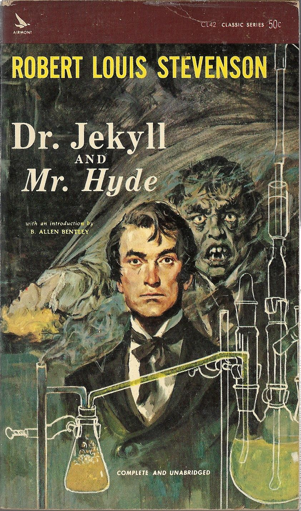

0
стр. з
0
сторінок

завантаження...

Р. Л. Стивенсон
Странная история доктора Джекила и мистера Хайда
Роман адаптировала Ольга Ламонова
Метод чтения Ильи Франка
Сontents
STORY OF THE DOOR
(История двери)
MR. UTTERSON the lawyer was a man of a rugged countenance (мистер Аттерсон, адвокат, был человеком с суровым лицом; rugged — неровный; нахмуренный), that was never lighted by a smile (которое никогда не освещалось улыбкой; to light — зажигать; освещать); cold, scanty and embarrassed in discourse (неприветливым, немногословным и неловким в общении; cold — холодный; неприветливый, сухой; scanty — скудный; discourse — лекция; разговор, беседа; to embarrass — затруднять, мешать, препятствовать, стеснять); backward in sentiment (неохотно обнаруживающий свои чувства; backward — обратный /о движении/; медлящий, делающий неохотно); lean (худой), long (долговязый), dusty (сухой; dusty — пыльный; сухой, серый, неинтересный), dreary (унылый), and yet somehow lovable (и все же, в некотором смысле, приятный /человек/). At friendly meetings, and when the wine was to his taste (на дружеских встречах = в кругу друзей, и когда вино приходилось ему по вкусу), something eminently human beaconed from his eye (что-то в высшей степени человеческое светилось из его глаз/в его взоре; to beacon — освещать сигнальными огнями; светить; eminently — в высшей степени; заметно, примечательно; исключительно); something indeed which never found its way into his talk (что-то, что никогда не проникало в его речь: «не находило дорогу в его речь»), but which spoke not only in these silent symbols of the after-dinner face (но что говорило не только в этих безмолвных знаках послеобеденного /выражения/ лица; face — лицо; выражение лица), but more often and loudly in the acts of his life (но чаще и громче = очевиднее в его поступках).
countenance ['kauntInqns] discourse ['dIskO:s] beacon ['bi:kqn]
MR. UTTERSON the lawyer was a man of a rugged countenance, that was never lighted by a smile; cold, scanty and embarrassed in discourse; backward in sentiment; lean, long, dusty, dreary, and yet somehow lovable. At friendly meetings, and when the wine was to his taste, something eminently human beaconed from his eye; something indeed which never found its way into his talk, but which spoke not only in these silent symbols of the after-dinner face, but more often and loudly in the acts of his life.
He was austere with himself (он был строг с собой; austere — строгий; аскетический, суровый); drank gin when he was alone, to mortify a taste for vintage (пил джин, когда он был = обедал один, укрощая страсть: «вкус» к тонким винам; taste — вкус; склонность, пристрастие; vintage — сбор винограда; вино урожая определенного года, вино высшего качества); and though he enjoyed the theatre (и хотя он и обожал театр), had not crossed the doors of one for twenty years (он не переступал порога /ни одного театра/ уж двадцать лет; door — дверь). But he had an approved tolerance for others (но он проявлял неизменную терпимость по отношению к другим людям; to approve — одобрять; /уст./ показывать на деле; проявлять себя: to approve oneself an intrepid soldier — показать себя храбрым солдатом; approved — одобренный; принятый; апробированный, испытанный, проверенный); sometimes wondering, almost with envy (время от времени дивясь почти что с завистью), at the high pressure of spirits involved in their misdeeds (высокому давлению = накалу темперамента, содержащегося в их злодеяниях; pressure — давление; чрезмерное использование; spirits — влечение, настроение; натура, темперамент, характер; to involve — вовлекать; включать в себя, содержать); and in any extremity inclined to help rather than to reprove (и в любом крайнем случае он был более склонен помочь, чем осудить; extremity — конец; крайность; to reprove — упрекать, винить; бранить, делать выговор).
"I incline to Cain's heresy (я склонен к каиновой ереси = греху братоубийства; to incline — наклонять, нагибать; склоняться, тяготеть)," he used to say quaintly (говаривал он в эксцентричной манере; quaint — необычный и привлекательный, старомодный и изящный): "I let my brother go to the devil in his own way (я позволяю своему брату = ближнему погибать, как ему вздумается; to go to the devil — пойти ко всем чертям; погибнуть)."
austere [O:'stIq] tolerance ['tOl(q)rqns] heresy ['herIsI] quaintly [kweIntlI]
He was austere with himself; drank gin when he was alone, to mortify a taste for vintage; and though he enjoyed the theatre, had not crossed the doors of one for twenty years. But he had an approved tolerance for others; sometimes wondering, almost with envy, at the high pressure of spirits involved in their misdeeds; and in any extremity inclined to help rather than to reprove.
"I incline to Cain's heresy," he used to say quaintly: "I let my brother go to the devil in his own way."
In this character, it was frequently his fortune to be the last reputable acquaintance (а потому очень часто его судьба назначала ему быть последним приличным знакомым; character — характер, нрав; официальное качество, положение, статус) and the last good influence in the lives of downgoing men (и последним благотворным влиянием в жизни опустившихся людей). And to such as these, so long as they came about his chambers (и с такими людьми, если только они приходили к нему в контору; so long as — поскольку; если только; chamber — комната /в жилом доме/; контора адвоката), he never marked a shade of change in his demeanour (он продолжал вести себя как и прежде: «он никогда не проявлял и тени перемены в своем поведении»; to mark — ставить знак, метку; выражать, проявлять).
No doubt the feat was easy to Mr. Utterson (без всякого сомнения, мистеру Аттерсону это было не трудно; feat — подвиг); for he was undemonstrative at the best (так как он всегда был в высшей степени сдержан; сравните: to be at one's best — быть на высоте; быть в ударе), and even his friendships seemed to be founded in a similar catholicity of good-nature (и даже его дружба, казалось, основывалась на все том же всеобъемлющем добродушии; to found — основывать /город/; обосновывать, класть в основу; catholicity — католицизм, католичество /греч. всемирность/; многогранность, разносторонность; широта взглядов, терпимость). It is the mark of a modest man (скромным людям свойственно; mark — знак; признак, показатель) to accept his friendly circle ready made (принимать свой дружеский круг уже готовым) from the hands of opportunity (из рук случая); and that was the lawyer's way (так поступал и адвокат; way — путь, дорога; образ действия, метод, способ).
acquaintance [q'kweIntqns] influence ['Influqns] demeanour [dI'mi:nq] catholicity ["kxTq'lIsqtI]
In this character, it was frequently his fortune to be the last reputable acquaintance and the last good influence in the lives of downgoing men. And to such as these, so long as they came about his chambers, he never marked a shade of change in his demeanour. No doubt the feat was easy to Mr. Utterson; for he was undemonstrative at the best, and even his friendships seemed to be founded in a similar catholicity of good-nature. It is the mark of a modest man to accept his friendly circle ready made from the hands of opportunity; and that was the lawyer's way.
His friends were those of his own blood (его друзьями были либо его /собственные/ родственники; blood — кровь; род, происхождение), or those whom he had known the longest (либо те люди, которых он знал очень долго: «дольше всего»); his affections, like ivy, were the growth of time (его привязанности, подобно плющу, питались временем; growth — рост, развитие; прирост), they implied no aptness in the object (они не предполагали каких-либо /особых/ достоинств у объекта /привязанности/; aptness — соответствие /чему-либо/; одаренность; apt — годный, подходящий, соответствующий). Hence, no doubt, the bond that united him to Mr. Richard Enfield (отсюда = таковы, без сомнения, были узы, что соединяли его с мистером Ричардом Энфилдом; bond — долговое обязательство; узы, связь), his distant kinsman, the well-known man about town (его дальним родственником, известным богатым повесой; man about town — человек, ведущий светский образ жизни). It was a nut to crack for many (для многих трудноразрешимым оказался вопрос = немало людей ломало голову над тем; nut — орех; to crack — производить шум, треск; раскалывать, разбивать), what these two could see in each other (что же эти двое нашли: «могут видеть» друг в друге), or what subject they could find in common (и какие у них могут быть общие интересы; subject — предмет, тема /разговора и т. п./).
affection [q'fekS(q)n] ivy ['aIvI] growth [grquT] subject ['sAbdZIkt]
His friends were those of his own blood, or those whom he had known the longest; his affections, like ivy, were the growth of time, they implied no aptness in the object. Hence, no doubt, the bond that united him to Mr. Richard Enfield, his distant kinsman, the well-known man about town. It was a nut to crack for many, what these two could see in each other, or what subject they could find in common.
It was reported by those who encountered them in their Sunday walks (те, кто /случайно/ встречали их во время воскресных прогулок, рассказывали), that they said nothing, looked singularly dull (что они ничего не говорили = шли молча, выглядели чрезвычайно скучающими; dull — тупой; скучный), and would hail with obvious relief the appearance of a friend (и с явным облегчением приветствовали появление /общего/ друга; to hail — окликать; приветствовать; appearance — внешний вид; появление /в поле зрения/; to appear — являться, появляться). For all that, the two men put the greatest store by these excursions (и все же/несмотря на это, оба мужчины = и тот, и другой придавали огромное значение этим прогулкам; store — запас, резерв; значение, важность), counted them the chief jewel of each week (считали их важнейшим украшением каждой недели; jewel — драгоценный камень; chief — главный), and not only set aside occasions of pleasure (и не только пренебрегали /ради них/ другими развлечениями; occasion — случай; to set aside — откладывать /в сторону/; откладывать на время, прерывать), but even resisted the calls of business (но даже воздерживались от деловых визитов; to resist — сопротивляться; воздерживаться /от чего-либо/), that they might enjoy them uninterrupted (для того, чтобы иметь возможность беспрепятственно наслаждаться ими /прогулками/; to interrupt — прерывать; нарушать, мешать; uninterrupted — непрерываемый; непрерывный; ненарушенный).
encounter [In'kauntq] singularly ['sINgjulqlI] obvious ['ObvIqs]
It was reported by those who encountered them in their Sunday walks, that they said nothing, looked singularly dull, and would hail with obvious relief the appearance of a friend. For all that, the two men put the greatest store by these excursions, counted them the chief jewel of each week, and not only set aside occasions of pleasure, but even resisted the calls of business, that they might enjoy them uninterrupted.
It chanced on one of these rambles (в одну из таких неспешных прогулок вышло так; to chance — рискнуть; случайно произойти; ramble — длительная прогулка, пешее путешествие; to ramble — прогуливаться, гулять /особенно за городом/) that their way led them down a by-street in a busy quarter of London (что путь привел их в некую улочку одного из деловых кварталов Лондона; busy — занятой, несвободный; напряженный, интенсивный). The inhabitants were all doing well, it seemed (по-видимому, все жители /этой улочки/ преуспевали), and all emulously hoping to do better still (и все они, соперничая, надеялись преуспеть еще больше; emulous — соревнующийся; побуждаемый чувством соперничества, ведомый завистью), and laying out the surplus of their gains in coquetry (и тратили излишки своих доходов на прихорашивание: «кокетство»; to lay out — выкладывать, выставлять; тратить /деньги/); so that the shop fronts stood along that thoroughfare with an air of invitation (так что витрины магазинов по обеим сторонам той оживленной улочки манили /к себе/: «витрины магазинов стояли вдоль оживленной улицы с видом приглашения = с приглашающим видом»; air — воздух; атмосфера, обстановка; invitation — приглашение; заманивание, завлекание; thoroughfare — оживленная улица; главная артерия /города/, главная дорога), like rows of smiling saleswomen (словно два ряда улыбчивых продавщиц).
emulously ['emjulqslI] surplus ['sq:plqs] coquetry ['kOkItrI] thoroughfare ['TArqfeq]
It chanced on one of these rambles that their way led them down a by-street in a busy quarter of London. The inhabitants were all doing well, it seemed, and all emulously hoping to do better still, and laying out the surplus of their gains in coquetry; so that the shop fronts stood along that thoroughfare with an air of invitation, like rows of smiling saleswomen.
Even on Sunday, when it veiled its more florid charms (даже в воскресенье, когда улочка скрывала свои /наиболее/ пышные прелести; to veil — закрывать вуалью; скрывать, маскировать; florid — цветистый, напыщенный; кричащий; бьющий на эффект), and lay comparatively empty of passage (и на ней было сравнительно мало прохожих; to lie — лежать; empty — пустой, незаполненный; passage — прохождение; проходящие, прохожие), the street shone out in contrast to its dingy neighbourhood, like a fire in a forest (эта улица особенно выделялась по сравнению со своим грязным соседством = на фоне своего грязного квартала, словно костер в лесу; dingy — тусклый, неяркий; грязный, закопченный; neighbourhood — соседство; округ, район, квартал); and with its freshly painted shutters (и своими свежеокрашенными ставнями), well-polished brasses (тщательно отполированными медными /ручками и молоточками/; brass — латунь; медные изделия), and general cleanliness and gaiety of note (и общей примечательной чистотой и веселостью; of note — примечательный; известный, видный; note — заметка, запись; памятная записка; примечание), instantly caught and pleased the eye of the passenger (мгновенно привлекала и радовала взор прохожего; to catch — поймать, схватить; привлечь /внимание и т. п./).
comparatively [kqm'pxrqtIvlI] neighbourhood ['neIbqhud] gaiety ['geIqtI]
Even on Sunday, when it veiled its more florid charms and lay comparatively empty of passage, the street shone out in contrast to its dingy neighbourhood, like a fire in a forest; and with its freshly painted shutters, well-polished brasses, and general cleanliness and gaiety of note, instantly caught and pleased the eye of the passenger.
Two doors from one corner, on the left hand going east (через две двери от угла, с левой стороны, по направлению на восток = если идти к востоку; hand — рука; сторона), the line was broken by the entry of a court (линия /домов/ нарушалась входом во двор; line — линия; ряд, линия; to break — ломать; прерывать, нарушать); and just at that point, a certain sinister block of building thrust forward its gable on the street (и как раз в этом самом месте некое мрачное жилое здание выдвинуло свой фронтон на улицу = высилось массивное здание; to thrust — колоть; пихать, толкать; простирать; gable — фронтон, щипец). It was two storeys high (оно было двухэтажным; high — высокий; имеющий определенную высоту); showed no window, nothing but a door on the lower storey (без единого окна, c одной лишь дверью на нижнем этаже) and a blind forehead of discoloured wall on the upper (и глухой выцветшей стеной на верхнем; blind — слепой, незрячий; глухой /о стене, и т. п./; forehead — лоб; передняя часть /чего-либо/); and bore in every feature the marks of prolonged and sordid negligence (и имело: «несло» в каждой черте признаки длительного и самого жалкого/нищенского пренебрежения; to bear — переносить; иметь, нести на себе; negligence — небрежность; равнодушие, пренебрежительное отношение; sordid — грязный, запачканный; нищенский; жалкий; бедный, убогий; низкий, подлый, постыдный; низменный).
blind [blaInd] forehead ['fOrId, 'fO:hed] discoloured [dIs'kAlqd] negligence ['neglIdZ(q)ns]
Two doors from one corner, on the left hand going east, the line was broken by the entry of a court; and just at that point, a certain sinister block of building thrust forward its gable on the street. It was two storeys high; showed no window, nothing but a door on the lower storey and a blind forehead of discoloured wall on the upper; and bore in every feature the marks of prolonged and sordid negligence.
The door, which was equipped with neither bell nor knocker (дверь, которая не была снабжена ни звонком, ни /дверным/ молотком; to equip — оборудовать, оснащать; to knock — стучать; knocker — дверной молоток, дверное кольцо), was blistered and distained (была облуплена и покрыта грязными разводами; to blister — покрываться пузырями/волдырями; blister — волдырь, водяной пузырь; stain — пятно). Tramps slouched into the recess and struck matches on the panels (бродяги забредали отдохнуть в ее нише и зажигали спички о ее панели; to slouch — сутулиться, горбиться; неуклюже держаться; to slouch about/around — слоняться, болтаться без дела; recess — углубление /в стене/, ниша; to strike — ударять; высекать /огонь/, зажигать); children kept shop upon the steps (дети играли в магазин на ступенях; to keep a shop — держать лавку, магазин); the schoolboy had tried his knife on the mouldings (школьник испробовал свой нож на ее резных завитушках; moulding — отлитое или формованное изделие; лепное украшение; to mould — формовать, лепить; отливать форму); and for close on a generation, no one had appeared (и вот почти что лет тридцать никто не появлялся; generation — поколение; поколение, период времени ок. 30 лет) to drive away these random visitors or to repair their ravages (чтобы прогнать этих случайных гостей или убрать следы их разрушительных действий; to drive away — прогонять: «гнать прочь»; random — случайный; произвольный; выборочный; беспорядочный; to repair — ремонтировать, чинить; ravage — опустошение, уничтожение; ravages — разрушительное действие).
equip [I'kwIp] slouch [slautS] repair [rI'peq] ravage ['rxvIdZ]
The door, which was equipped with neither bell nor knocker, was blistered and distained. Tramps slouched into the recess and struck matches on the panels; children kept shop upon the steps; the schoolboy had tried his knife on the mouldings; and for close on a generation, no one had appeared to drive away these random visitors or to repair their ravages.
Mr. Enfield and the lawyer were on the other side of the by-street (мистер Энфилд и адвокат шли по другой стороне улочки); but when they came abreast of the entry (но когда они поравнялись с этим входом; abreast — в ряд, на одной линии; breast — грудь), the former lifted up his cane and pointed (первый = мистер Энфилд поднял трость и указал /на него/).
"Did you ever remark that door (вы когда-нибудь обращали внимание на эту дверь; to remark — замечать, подмечать)?" he asked; and when his companion had replied in the affirmative (и когда его спутник ответил утвердительно; companion — товарищ; спутник, попутчик), "It is connected in my mind (для меня она связана; mind — ум, разум)," added he (добавил он), "with a very odd story (с одной очень странной историей)."
"Indeed (неужели; indeed — в самом деле, действительно)!" said Mr. Utterson, with a slight change of voice (произнес мистер Аттерсон слегка изменившимся голосом: «с легкой переменой голоса»), "and what was that (какой же: «и что это было»)?"
abreast [q'brest] affirmative [q'fq:mqtIv] slight [slaIt]
Mr. Enfield and the lawyer were on the other side of the by-street; but when they came abreast of the entry, the former lifted up his cane and pointed.
"Did you ever remark that door?" he asked; and when his companion had replied in the affirmative, "It is connected in my mind," added he, "with a very odd story."
"Indeed!" said Mr. Utterson, with a slight change of voice, "and what was that?"
"Well, it was this way (итак/ну, дело было так)," returned Mr. Enfield (ответил мистер Энфилд; to return — возвращаться, идти обратно; отвечать, возражать): "I was coming home from some place at the end of the world (я возвращался домой откуда-то с края света: «из какого-то места на /другом/ конце света»), about three o'clock of a black winter morning (где-то часа в три темного зимнего утра), and my way lay through a part of town (и путь мой лежал через ту часть города; to lie — лежать) where there was literally nothing to be seen but lamps (где буквально ничего не было видно, кроме фонарей). Street after street, and all the folks asleep — street after street (улица за улицей, и все люди /при этом/ спят, улица за улицей; folks — люди; folk — /уст./ народ; asleep — спящий), all lighted up as if for a procession, and all as empty as a church (все освещенные, словно для какого-то шествия = торжества, и опустелые, как церковь) — till at last I got into that state of mind when a man listens and listens (пока, в конце концов, я не впал в такое душевное состояние, когда все прислушиваешься да прислушиваешься) and begins to long for the sight of a policeman (и начинаешь страстно желать увидеть полицейского; to long for smth., smb. — очень хотеть, страстно желать чего-либо, кого-либо, испытывать потребность в чем-либо, в ком-либо; sight — зрение; вид).
literally ['lIt(q)rqlI] procession [prq'seS(q)n] sight [saIt]
"Well, it was this way," returned Mr. Enfield: "I was coming home from some place at the end of the world, about three o'clock of a black winter morning, and my way lay through a part of town where there was literally nothing to be seen but lamps. Street after street, and all the folks asleep — street after street, all lighted up as if for a procession, and all as empty as a church — till at last I got into that state of mind when a man listens and listens and begins to long for the sight of a policeman.
All at once, I saw two figures (вдруг я увидел сразу две фигуры): one a little man who was stumping along eastward at a good walk (одна из них — невысокого мужчины, который топал в восточном направлении широким шагом; to stump along — ковылять, тяжело ступать; walk — ходьба; шаг; stump — обрубок; пень; тяжелый шаг), and the other a girl of maybe eight or ten who was running as hard as she was able down a cross street (а другая /фигура/ — девочки лет восьми-десяти, которая бежала со всех ног: «бежала так сильно, как только могла» по поперечной улице; hard — сильно, энергично). Well, sir, the two ran into one another naturally enough at the corner (что ж, сэр, достаточно естественно, что эти двое налетели друг на друга на углу); and then came the horrible part of the thing (и тут произошло нечто отвратительное: «произошла ужасающая часть вещи = события»; to come — приходить; случаться, происходить); for the man trampled calmly over the child's body (так как мужчина хладнокровно прошел по телу ребенка = упавшей девочки; to trample — топтать, растаптывать) and left her screaming on the ground (и оставил ее /лежать/ кричащей на земле). It sounds nothing to hear (послушать — так ничего особенного; to sound — звучать, издавать звук; звучать, создавать впечатление), but it was hellish to see (но видеть это было ужасно; hellish — адский; ужасный; hell — ад). It wasn't like a man (он не был похож на человека); it was like some damned Juggernaut (он был похож на кого-то адского Джаггернаута; Juggernaut — инд. Джаггернаут /статуя Кришны, вывозимая на ежегодном празднестве, на огромной колеснице, под колеса которой бросались многочисленные приверженцы, чтобы, погибнув, избежать реинкарнации/; безжалостная, неумолимая сила).
eastward ['i:stwqd] enough [I'nAf] hellish ['helIS] Juggernaut ['dZAgqnO:t]
All at once, I saw two figures: one a little man who was stumping along eastward at a good walk, and the other a girl of maybe eight or ten who was running as hard as she was able down a cross street. Well, sir, the two ran into one another naturally enough at the corner; and then came the horrible part of the thing; for the man trampled calmly over the child's body and left her screaming on the ground. It sounds nothing to hear, but it was hellish to see. It wasn't like a man; it was like some damned Juggernaut.
I gave a view halloa (я громко закричал: «издал громкий крик»; view halloo — охот. улюлю!; halloa — возглас удивления), took to my heels (бросился бежать; heel — пятка; to take to one's heels — дать стрекача, пуститься наутек), collared my gentleman (схватил того самого мужчину /о котором шла речь/ = молодчика за шиворот; to collar — надеть воротник, хомут; схватить за ворот, за шиворот; collar — воротник), and brought him back (и приволок его назад; to bring — привести) to where there was already quite a group about the screaming child (где рядом с пронзительно кричащим ребенком уже собралась довольно большая группа людей; to scream — пронзительно кричать, вопить, визжать). He was perfectly cool and made no resistance (он был совершенно спокоен и не сопротивлялся: «не оказывал сопротивления»; cool — прохладный; спокойный, невозмутимый), but gave me one look, so ugly (но бросил на меня такой злобный взгляд; ugly — безобразный; опасный, угрожающий) that it brought out the sweat on me like running (что я покрылся испариной, точно после долгого бега: «что это вызвало пот на меня, как бег»; to bring out — вызывать /какое-либо состояние/, приводить /к какому-либо состоянию/; to run — бежать). The people who had turned out were the girl's own family (собравшиеся люди оказались родственниками: «собственной семьей» девочки; to turn out — собираться на улице; family — семья); and pretty soon the doctor, for whom she had been sent, put in his appearance (и довольно скоро появился доктор, за которым девочку и посылали: «за которым она и была послана»; to send — посылать; appearance — появление; to put in — вставлять, всовывать; to put in an appearance — входить; появляться).
collar ['kOlq] resistance [rI'zIstqns] appearance [q'pI(q)rqns]
I gave a view halloa, took to my heels, collared my gentleman, and brought him back to where there was already quite a group about the screaming child. He was perfectly cool and made no resistance, but gave me one look, so ugly that it brought out the sweat on me like running. The people who had turned out were the girl's own family; and pretty soon the doctor, for whom she had been sent, put in his appearance.
Well, the child was not much the worse, more frightened, according to the Sawbones (что ж, по словам доктора, с девочкой не случилось ничего серьезного, что она только перепугалась; according to — в соответствии; согласно /чьему-либо/ заявлению, по /чьим-либо/ словам; sawbones — шутл. хирург, костоправ: «пилящий кости»; to saw — пилить); and there you might have supposed would be an end to it (и на этом, как можно было бы предположить, все могло бы и закончиться: «здесь… мог бы быть конец этого»).
But there was one curious circumstance (но возникло одно странное обстоятельство; curious — любопытный; необычный). I had taken a loathing to my gentleman at first sight (я с первого же взгляда исполнился сильным отвращением к этому человеку; to loath — не склонный, не желающий; делающий неохотно: to be loath to do smth. — не хотеть сделать что-либо; противный, мерзкий; to loathe — питать/чувствовать отвращение; не выносить). So had the child's family, which was only natural (так же /ощутили отвращение к нему/ и родственники девочки, что было совершенно естественным). But the doctor's case was what struck me (однако меня особенно поразило состояние доктора; to strike — ударять; поражать, производить впечатление; case — случай; состояние). He was the usual cut and dry apothecary (это был самый обычный аптекарь = лекарь; cut and dry — шаблонный; скучный: «отрезанный и сухой»), of no particular age and colour (без определенного возраста и цвета = бесцветный/невыразительный), with a strong Edinburgh accent (/говорящий/ с сильным эдинбургским акцентом), and about as emotional as a bagpipe (и чувствительный не более, чем волынка; emotional — эмоциональный).
frightened [fraItnd] sawbones ['sO:bqunz] circumstance ['sq:kqmstxns, 'sq:kqmstqns] apothecary [q'pOTqk(q)rI]
Well, the child was not much the worse, more frightened, according to the Sawbones; and there you might have supposed would be an end to it. But there was one curious circumstance. I had taken a loathing to my gentleman at first sight. So had the child's family, which was only natural. But the doctor's case was what struck me. He was the usual cut and dry apothecary, of no particular age and colour, with a strong Edinburgh accent, and about as emotional as a bagpipe.
Well, sir, he was like the rest of us (так вот, сэр, он вел себя так же, как и мы /все остальные/): every time he looked at my prisoner (каждый раз, как он смотрел на моего пленника), I saw that Sawbones turned sick and white with the desire to kill him (я видел, что он стал испытывающим тошноту и бледным = совершенно побледнел от сильного желания убить того; to turn — поворачивать/ся/; превращаться, становиться). I knew what was in his mind (я знал о чем он думает: «что у него на уме»), just as he knew what was in mine (так же как и он знал, что думал я); and killing being out of the question (и так как об убийстве не могло быть и речи: «убивание было вне вопроса»), we did the next best (мы сделали, что смогли /стараясь его покарать/; next best — уступающий только самому лучшему: «следующее/ближайшее наилучшее»). We told the man we could and would make such a scandal out of this (мы сказали этому человеку, что мы можем и обязательно раздуем из этого случая такой большой скандал; scandal — широкая огласка, скандал), as should make his name stink from one end of London to the other (который заставит его имя вонять от одного конца Лондона до другого; to stink — вонять, смердеть). If he had any friends or any credit (/мы сказали ему/, что если у него есть друзья или добрая репутация; credit — вера, доверие; репутация /особ. хорошая/, доброе имя), we undertook that he should lose them (мы примем меры к тому, чтобы он их лишился; to undertake — предпринимать).
prisoner ['prIz(q)nq] question ['kwestS(q)n] scandal [skxndl]
Well, sir, he was like the rest of us: every time he looked at my prisoner, I saw that Sawbones turned sick and white with the desire to kill him. I knew what was in his mind, just as he knew what was in mine; and killing being out of the question, we did the next best. We told the man we could and would make such a scandal out of this, as should make his name stink from one end of London to the other. If he had any friends or any credit, we undertook that he should lose them.
And all the time, as we were pitching it in red hot (и все это время, пока мы яростно набрасывались на него; to pitch — врывать, вбивать в землю; наброситься, энергично приняться за что-либо; red hot — раскаленный докрасна; горячий, пламенный), we were keeping the women off him as best we could (мы еще и сдерживали /готовых броситься на него/ женщин, как только могли), for they were as wild as harpies (потому что они были разъярены, словно гарпии; wild — дикий; обуреваемый страстями; Гарпия — богиня вихря в виде крылатой женщины-чудовища /в древнегреческой мифологии/). I never saw a circle of such hateful faces (я никогда не видел такого количества злобных/полных ненависти лиц; circle — круг; круг /людей/, группа); and there was the man in the middle, with a kind of black, sneering coolness (и в середине /этого круга/ стоял тот человек с какой-то злобной и презрительной невозмутимостью; black — черный; злой, злобный; to sneer — презрительно или насмешливо улыбаться; усмехаться) — frightened too, I could see that (при этом напуганный, я видел это) — but carrying it off, sir, really like Satan (но держащийся, сэр, точно словно сатана; to carry off — справляться; успешно закончить, выполнить /какое-либо трудное дело/; выдержать, вынести; to carry — нести). 'If you choose to make capital out of this accident (если вы хотите нажиться на этой случайности; to choose — выбирать; хотеть, желать; accident — несчастный случай; случай, случайность),' said he, 'I am naturally helpless (то я, естественно, бессилен). No gentleman but wishes to avoid a scene (каждый джентльмен желает лишь избежать скандала; scene — место действия /в пьесе, романе/; объяснение, крупный разговор),' says he. 'Name your figure (назовите цену = сколько вы требуете; to name — называть, давать имя; указывать, назначать; figure — цифра, число; /разг./ цена).'
harpy ['hQ:pI] accident ['xksId(q)nt] figure ['fIgq]
And all the time, as we were pitching it in red hot, we were keeping the women off him as best we could, for they were as wild as harpies. I never saw a circle of such hateful faces; and there was the man in the middle, with a kind of black, sneering coolness — frightened too, I could see that — but carrying it off, sir, really like Satan.
'If you choose to make capital out of this accident,' said he, 'I am naturally helpless. No gentleman but wishes to avoid a scene,' says he. 'Name your figure.'
Well, we screwed him up to a hundred pounds for the child's family (что ж, мы выжали из него сотню фунтов для родни девочки; to screw — привинчивать; вырывать, выманивать, выжимать); he would have clearly liked to stick out (он явно хотел упереться; to stick out — высовываться; торчать; держаться до конца); but there was something about the lot of us that meant mischief (но в нас всех, вместе взятых, было что-то такое, что предвещало /для него/ дурное; mischief — вред; повреждение; убытки, ущерб; источник огорчений, источник неприятностей), and at last he struck (и в конце концов он сдался/и пошел на попятный; to strike — бить, ударять; спускать, убирать /о чем-либо натянутом или поднятом: парусах, палатке и т. п./; сдаваться /от strike the flag/). The next thing was to get the money (следующим делом было получить /с него/ деньги); and where do you think he carried us (и, куда бы вы думали, он привел нас; to carry — нести; вести, привести) but to that place with the door (как не к тому дому с дверью; place — место; дом, жилище)? — whipped out a key, went in, and presently came back (/резким движением/ достал ключ, вошел в /дом/, и вскоре вернулся; to whip out — выхватить, быстро вытащить; to whip — хлестнуть; whip — кнут, хлыст) with the matter of ten pounds in gold and a cheque for the balance on Coutts's (/и принес/ десять фунтов золотом и чек /на остальную сумму/ к оплате в банке Куттса; balance — весы; /фин./ баланс, сальдо, остаток), drawn payable to bearer (выписанный к оплате на предъявителя; to draw — рисовать; составлять, набрасывать /проект и т. п./; payable — подлежащий оплате /о счете, векселе/), and signed with a name that I can't mention (и подписанный фамилией, которую я не могу /сейчас/ упомянуть), though it's one of the points of my story (хотя она и является одним из важных моментов в моей истории; point — точка; пункт, момент, суть, главное), but it was a name at least very well known and often printed (но это была фамилия, во всяком случае, очень известная и часто встречающаяся в печати). The figure was stiff (сумма была значительной; stiff — жесткий, негнущийся; завышенный, непомерно высокий /о цене/: he paid a stiff price for the mansion — он заплатил непомерно высокую цену за этот особняк.); but the signature was good for more than that, if it was only genuine (но подпись была бы надежным /гарантом/ и для большей суммы, если только она была подлинной, конечно; good — хороший; надежный, кредитоспособный).
mischief ['mIstSIf] whip out ['wIp'aut] cheque [tSek] signature ['sIgnItSq] genuine ['dZenjuIn]
Well, we screwed him up to a hundred pounds for the child's family; he would have clearly liked to stick out; but there was something about the lot of us that meant mischief, and at last he struck. The next thing was to get the money; and where do you think he carried us but to that place with the door? — whipped out a key, went in, and presently came back with the matter of ten pounds in gold and a cheque for the balance on Coutts's, drawn payable to bearer, and signed with a name that I can't mention, though it's one of the points of my story, but it was a name at least very well known and often printed. The figure was stiff; but the signature was good for more than that, if it was only genuine.
I took the liberty of pointing out to my gentleman (я позволил себе указать этому господину; liberty — свобода; вольность, бесцеремонность) that the whole business looked apocryphal (что все это выглядит апокрифическим = сомнительным); and that a man does not, in real life, walk into a cellar door at four in the morning (и что в обычной жизни человек не может в четыре часа утра войти в подвальную дверь) and come out of it with another man's cheque for close upon a hundred pounds (и выйти из него с чеком, /подписанным именем/ другого человека, на почти что сотню фунтов). But he was quite easy and sneering (но он оставался вполне спокойным и презрительным; easy — легкий; спокойный). 'Set your mind at rest (успокойтесь: «установите ваш разум/ваш дух к покою»; mind — разум; настроение, расположение духа),' says he; 'I will stay with you till the banks open (я останусь с вами до тех самых пор, пока не откроются банки), and cash the cheque myself (и сам получу деньги по чеку).'
liberty ['lIbqtI] apocryphal [q'pOkrIf(q)l] cellar ['selq]
I took the liberty of pointing out to my gentleman that the whole business looked apocryphal; and that a man does not, in real life, walk into a cellar door at four in the morning and come out of it with another man's cheque for close upon a hundred pounds. But he was quite easy and sneering.
'Set your mind at rest,' says he; 'I will stay with you till the banks open, and cash the cheque myself.'
So we all set off, the doctor, and the child's father, and our friend and myself (итак, мы все — доктор, отец девочки, наш знакомец и я сам — отправились /в путь/), and passed the rest of the night in my chambers (и провели остаток ночи у меня); and next day, when we had breakfasted, went in a body to the bank (и на следующий день, позавтракав, мы в полном составе отправились в банк). I gave in the cheque myself (я сам предъявил чек; to give in — подавать, вручать /заявление, отчет, счет и т. п./), and said I had every reason to believe it was a forgery (и сказал, что у меня есть все основания полагать, что это подделка; to believe — верить; думать, полагать). Not a bit of it (ничуть не бывало). The cheque was genuine (чек был настоящим = подлинным)."
chamber ['tSeImbq] believe [bI'li:v] forgery ['fO:dZ(q)rI]
So we all set off, the doctor, and the child's father, and our friend and myself, and passed the rest of the night in my chambers; and next day, when we had breakfasted, went in a body to the bank. I gave in the cheque myself, and said I had every reason to believe it was a forgery. Not a bit of it. The cheque was genuine."
"Tut-tut (вот это да)!" said Mr. Utterson.
"I see you feel as I do (я вижу, что вы чувствуете то же, что и я)," said Mr. Enfield. "Yes, it's a bad story (да, скверная история). For my man was a fellow that nobody could have to do with, a really damnable man (потому что знакомец этот был таким типом, с которым никто не захотел бы иметь дела, действительно отвратительный человек; to have to do with smb. — иметь отношение к кому-либо; to damn — /церк./ проклинать, осуждать на вечные муки; осуждать; порицать, судить; обвинять; damnable — заслуживающий осуждения, порицания; подлежащий осуждению /о человеке/); and the person that drew the cheque is the very pink of the proprieties, celebrated too (а человек, который выписал этот чек — само воплощение порядочности, к тому же известный; pink — гвоздика; розовый цвет; высшая степень, верх; нечто совершенное; propriety — правильность; правила приличия, пристойность; to celebrate — праздновать; славить, прославлять; celebrated — знаменитый; выдающийся, прославленный), and (what makes it worse) one of your fellows who do what they call good (и который (что делает эту ситуацию еще хуже) принадлежит к тем людям: «один из тех людей», что творят добро = к так называемым филантропам). Black mail, I suppose (я полагаю, это шантаж); an honest man paying through the nose for some of the capers of his youth (честный человек вынужден платить огромные деньги = расплачиваться за свои юношеские проказы; caper — прыжок, скачок; дурачество, проказа; through the nose — через нос, носом; to pay through the nose — платить бешеную цену, переплачивать). Black Mail House is what I call that place with the door, in consequence (вследствие чего я называю этот дом с дверью «Домом шантажа = шантажиста»). Though even that, you know, is far from explaining all (хотя даже это, знаете ли, далеко не объясняет всего)," he added (добавил он); and with the words fell into a vein of musing (и с этими словами он погрузился в задумчивость; to fall into a state — приходить, впадать в какое-либо состояние; vein — вена; ход /мысли/; настроение, расположение).
damnable ['dxmnqbl] propriety [prq'praIqtI] consequence ['kOnsIkwqns]
"Tut-tut!" said Mr. Utterson.
"I see you feel as I do," said Mr. Enfield. "Yes, it's a bad story. For my man was a fellow that nobody could have to do with, a really damnable man; and the person that drew the cheque is the very pink of the proprieties, celebrated too, and (what makes it worse) one of your fellows who do what they call good. Black mail, I suppose; an honest man paying through the nose for some of the capers of his youth. Black Mail House is what I call that place with the door, in consequence. Though even that, you know, is far from explaining all," he added; and with the words fell into a vein of musing.
From this he was recalled by Mr. Utterson asking rather suddenly (из этой задумчивости его вывел мистер Аттерсон, который довольно неожиданно спросил; to recall — отзывать /посла, депутата/; выводить /из какого-либо состояния/, отвлекать /от чего-либо/): "And you don't know if the drawer of the cheque lives there (и вы не знаете, живет ли лицо, выписавшее чек в этом доме)?"
"A likely place, isn't it (подходящее местечко, не так ли = в таком-то доме; likely — вероятный, возможный)?" returned Mr. Enfield. "But I happen to have noticed his address (но мне удалось заметить его адрес /на чеке/; to happen — случаться, происходить; посчастливиться); he lives in some square or other (он живет на какой-то площади)."
"And you never asked about — the place with the door (а вы не осведомлялись об этом самом доме с дверью)?" said Mr. Utterson.
"No, sir: I had a delicacy (нет, сэр, это было бы бестактным; delicacy — утонченность, изысканность; деликатность, такт)," was the reply (последовал ответ). "I feel very strongly about putting questions (я очень ревностно отношусь к расспросам: «к задаванию вопросов» = я терпеть не могу расспросов); it partakes too much of the style of the day of judgment (они уж слишком напоминают о Судном дне; to partake — принимать участие; напоминать /что-либо/; style — стиль, слог; манера; judg/e/ment = judgement of court — решение, заключение суда; /уст./ судебное разбирательство, процесс). You start a question, and it's like starting a stone (задаешь вопрос, а похоже на то, будто сдвигаешь с места камень; to start — оправляться в путь; порождать, начинать; сдвигать /с места/, расшатывать).
drawer ['drO:q] square [skweq] delicacy ['delIkqsI]
From this he was recalled by Mr. Utterson asking rather suddenly: "And you don't know if the drawer of the cheque lives there?"
"A likely place, isn't it?" returned Mr. Enfield. "But I happen to have noticed his address; he lives in some square or other."
"And you never asked about — the place with the door?" said Mr. Utterson.
"No, sir: I had a delicacy," was the reply. "I feel very strongly about putting questions; it partakes too much of the style of the day of judgment. You start a question, and it's like starting a stone.
You sit quietly on the top of a hill (сидишь себе спокойно на вершине холма); and away the stone goes, starting others (а камень летит вниз, увлекая /за собою/ другие); and presently some bland old bird (the last you would have thought of (а вскоре какой-то безобидный старикашка (на которого никогда бы и не подумал); bland — вежливый, ласковый; bird — птица; парень, человек; last — последний; самый неподходящий или неожиданный) is knocked on the head in his own back garden (получает /этим/ по голове, копаясь в собственном садике за домом; to knock — стучать; ударять, бить), and the family have to change their name (и вся семья вынуждена сменить фамилию). No, sir, I make it a rule of mine (нет, сэр, я взял себе за правило): the more it looks like Queer Street, the less I ask (чем более подозрительным кажется дело, тем меньше вопросов я задаю; queer — странный; сомнительный, подозрительный; Queer Street — трудности, неприятности /обыкн. финансовые/)."
"A very good rule, too (действительно, очень хорошее правило)," said the lawyer.
presently ['prez(q)ntlI] rule [ru:l] queer [kwIq] lawyer ['lO:jq]
You sit quietly on the top of a hill; and away the stone goes, starting others; and presently some bland old bird (the last you would have thought of) is knocked on the head in his own back garden, and the family have to change their name. No, sir, I make it a rule of mine: the more it looks like Queer Street, the less I ask."
"A very good rule, too," said the lawyer.
"But I have studied the place for myself (но я сам изучал этот дом = наблюдал за этим домом)," continued Mr. Enfield (продолжал мистер Энфилд). "It seems scarcely a house (едва ли это жилой дом: «он кажется с трудом жилым домом»; scarcely — едва ли, вряд ли, с трудом; scarce — недостаточный, скудный). There is no other door, and nobody goes in or out of that one (в нем нет ни одной другой двери, а в эту никто не входит и не выходит), but, once in a great while, the gentleman of my adventure (кроме изредка тот знакомец из того /моего ночного/ приключения; while — промежуток времени, время: a long while — долго; a short while — недолго). There are three windows looking on the court on the first floor; none below (во двор выходят три окна на втором: «первом» этаже, на нижнем этаже — нет ни одного; to look — смотреть; выходить, быть обращенным); the windows are always shut, but they're clean (окна эти всегда закрыты, но они чистые). And then there is a chimney, which is generally smoking (да, есть еще дымоход, который обычно дымится; to smoke); so somebody must live there (значит, кто-то должен там жить). And yet it's not so sure (и все же — и это не наверняка; sure — уверенный; несомненный); for the buildings are so packed together about that court (потому что дома: «здания» столь близко теснятся /друг к другу/ вокруг того двора; to pack — упаковывать; заполнять, набивать, переполнять), that it's hard to say where one ends and another begins (что сложно сказать, где заканчивается одно здание и начинается другое)."
scarcely ['skeqslI] adventure [qd'ventSq] chimney ['tSImnI] court [kO:t]
"But I have studied the place for myself," continued Mr. Enfield. "It seems scarcely a house. There is no other door, and nobody goes in or out of that one, but, once in a great while, the gentleman of my adventure. There are three windows looking on the court on the first floor; none below; the windows are always shut, but they're clean. And then there is a chimney, which is generally smoking; so somebody must live there. And yet it's not so sure; for the buildings are so packed together about that court, that it's hard to say where one ends and another begins."
The pair walked on again for a while in silence; and then (приятели еще некоторое время продолжали идти молча: «в молчании», а затем; pair — пара, парные предметы; пара, партнеры) — "Enfield," said Mr. Utterson, "that's a good rule of yours (это ваше правило превосходно)."
"Yes, I think it is (да, думаю что так)," returned Enfield.
"But for all that (но все же /несмотря на него/)," continued the lawyer (продолжил адвокат), "there's one point I want to ask (есть один момент, о котором я хотел бы спросить): I want to ask the name of that man who walked over the child (я хочу спросить у вас фамилию того человека, который наступил на /упавшего/ ребенка/прошел по ребенку)."
"Well," said Mr. Enfield, "I can't see what harm it would do (не вижу в этом никакого вреда). It was a man of the name of Hyde (это был некто по фамилии Хайд)."
"Hm," said Mr. Utterson. "What sort of a man is he to see (как он выглядит)?"
silence ['saIlqns] return [rI'tq:n] continue [kqn'tInju:]
The pair walked on again for a while in silence; and then — "Enfield," said Mr. Utterson, "that's a good rule of yours."
"Yes, I think it is," returned Enfield.
"But for all that," continued the lawyer, "there's one point I want to ask: I want to ask the name of that man who walked over the child."
"Well," said Mr. Enfield, "I can't see what harm it would do. It was a man of the name of Hyde."
"Hm," said Mr. Utterson. "What sort of a man is he to see?"
"He is not easy to describe (его не так-то легко описать). There is something wrong with his appearance (есть в его внешности нечто странное; wrong — неправильный; неподходящий, неуместный); something displeasing, something downright detestable (что-то неприятное, что-то совершенно отвратительное; downright — /уст./ направленный вниз; идущий строго вниз; совершенно, явно). I never saw a man I so disliked, and yet I scarce know why (я никогда не встречал человека, который бы мне так не понравился, и, в то же время, я не знаю почему; yet — все же). He must be deformed somewhere (он, должно быть, где-то = каким-то образом изуродован/ущербен; to deform — обезображивать, калечить, уродовать); he gives a strong feeling of deformity (он производит очень сильное впечатление уродливости/ущербности), although I couldn't specify the point (хотя я и не смог бы точно определить, в чем же именно она заключалась; point — пункт, момент, вопрос; дело; to specify — точно определять, устанавливать, предписывать; детально излагать). He's an extraordinary-looking man (он очень необычно выглядящий человек), and yet I really can name nothing out of the way (и все же я точно не могу назвать ничего необычного; out of the way — отдаленный; странный, необычный: «вне пути/дороги»). No, sir; I can make no hand of it (нет, сэр, не могу этого объяснить; to make no hand of smth. — быть не в состоянии объяснить что-либо); I can't describe him (я не могу описать его). And it's not want of memory (и это не из-за недостатка памяти = не по забывчивости); for I declare I can see him this moment (ибо я заявляю, что я вижу его прямо как сейчас = он так и стоит у меня перед глазами)."
detestable [dI'testqbl] deformity [dI'fO:mItI] extraordinary [Ik'strO:d(q)n(q)rI] declare [dI'kleq]
"He is not easy to describe. There is something wrong with his appearance; something displeasing, something downright detestable. I never saw a man I so disliked, and yet I scarce know why. He must be deformed somewhere; he gives a strong feeling of deformity, although I couldn't specify the point. He's an extraordinary-looking man, and yet I really can name nothing out of the way. No, sir; I can make no hand of it; I can't describe him. And it's not want of memory; for I declare I can see him this moment."
Mr. Utterson again walked some way in silence (мистер Аттерсон снова прошел часть пути молча), and obviously under a weight of consideration (очевидно что-то старательно обдумывая; weight — вес; бремя /забот и т. п./). "You are sure he used a key (а вы уверены, что он воспользовался ключом)?" he inquired at last (наконец спросил он; to inquire — спрашивать, осведомляться, справляться).
"My dear sir (мой дорогой господин; dear sir — милостивый государь /например, в письмах/)..." began Enfield, surprised out of himself (начал Энфилд, вне себя от удивления).
"Yes, I know (да, знаю)," said Utterson; "I know it must seem strange (понимаю, что это должно показаться странным). The fact is, if I do not ask you the name of the other party (дело в том, что если я не спрашиваю у вас фамилии другой стороны = того человека, чья подпись стояла на чеке), it is because I know it already (так это потому, что я уже знаю ее). You see, Richard, your tale has gone home (видите ли, Ричард, ваш рассказ попал в цель = касается меня). If you have been inexact in any point (и если вы были неточны хоть в каких-то деталях), you had better correct it (вам бы лучше их исправить = постарайтесь вспомнить, не было ли в вашем рассказе каких-либо неточностей)."
obviously ['ObvIqslI] weight [weIt] inquire [In'kwaIq] inexact ["InIg'zxkt]
Mr. Utterson again walked some way in silence, and obviously under a weight of consideration. "You are sure he used a key?" he inquired at last.
"My dear sir..." began Enfield, surprised out of himself.
"Yes, I know," said Utterson; "I know it must seem strange. The fact is, if I do not ask you the name of the other party, it is because I know it already. You see, Richard, your tale has gone home. If you have been inexact in any point, you had better correct it."
"I think you might have warned me (мне кажется, что вы могли бы предупредить меня)," returned the other, with a touch of sullenness (возразил другой мужчина = мистер Энфилд, немного обиженно; touch — прикосновение; чуточка, примесь; sullen — угрюмый, сердитый). "But I have been pedantically exact, as you call it (но я был, как вы говорите, педантично точным; to call — звать; называть). The fellow had a key, and, what's more, he has it still (у этого человека был ключ, и, более того, он все еще у него), I saw him use it, not a week ago (я видел, как он им воспользовался, менее чем неделю назад)."
Mr. Utterson sighed deeply, but said never a word (мистер Аттерсон глубоко вздохнул, но не произнес ни слова); and the young man presently resumed (и вскоре молодой человек возобновил разговор; to resume — получать обратно; возобновлять, продолжать). "Here is another lesson to say nothing (вот еще один урок, чтобы ничего не говорить = о пользе молчания)," said he. "I am ashamed of my long tongue (мне стыдно за свой длинный язык = за свою болтливость). Let us make a bargain never to refer to this again (давайте договоримся больше никогда не возвращаться к этой теме; bargain — торговая сделка; договоренность; to refer — отсылать /к чему-либо, кому-либо/; упоминать /что-либо, кого-либо/)."
"With all my heart (со всей душой /соглашусь/)," said the lawyer. "I shake hands on that, Richard (договорились, Ричард; shake hands on it — по рукам!; to shake hands — пожать руки; to shake — трясти)."
pedantically [pI'dxntIk(q)lI] key [ki:] tongue [tAN] bargain ['bQ:gIn]
"I think you might have warned me," returned the other, with a touch of sullenness. "But I have been pedantically exact, as you call it. The fellow had a key, and, what's more, he has it still, I saw him use it, not a week ago."
Mr. Utterson sighed deeply, but said never a word; and the young man presently resumed. "Here is another lesson to say nothing," said he. "I am ashamed of my long tongue. Let us make a bargain never to refer to this again."
"With all my heart," said the lawyer. "I shake hands on that, Richard."
SEARCH FOR MR. HYDE
(Поиски мистера Хайда)
THAT EVENING Mr. Utterson came home to his bachelor house in sombre spirits (тем вечером мистер Аттерсон вернулся в свой холостяцкий дом в мрачном настроении; bachelor — холостяк; spirit — душа, дух; настроение, душевное состояние), and sat down to dinner without relish (и он сел ужинать = приступил к ужину без аппетита; relish — удовольствие, наслаждение). It was his custom of a Sunday (по воскресеньям он имел обыкновение), when this meal was over (поужинав: «когда его прием пищи был окончен»; to be over — окончиться, завершиться), to sit close by the fire (сидеть у камина; fire — огонь; печь, камин; close — близко, рядом, около), a volume of some dry divinity on his reading desk (с томиком какого-нибудь сухого богословского труда на подставке: «пюпитре»; dry — сухой; скучный, неинтересный; divinity — божественность; богословие), until the clock of the neighbouring church rang out the hour of twelve (/и читал его/, пока часы соседской церкви не отбивали полночь; to ring — звенеть, звучать; звонить), when he would go soberly and gratefully to bed (после чего он неторопливо и с чувством выполненного долга отправлялся спасть; sober — трезвый; сдержанный, спокойный; grateful — благодарный, признательный). On this night, however, as soon as the cloth was taken away (однако в этот вечер, как только приборы были убраны со стола /после ужина/; cloth — ткань, сукно; скатерть), he took up a candle and went into his business room (он взял подсвечник: «свечу» и отправился в свой кабинет). There he opened his safe (там он открыл сейф), took from the most private part of it a document (достал из тайника в нем: «из самой потаенной части его» некий документ; private — частный; тайный, не доступный для всех) endorsed on the envelope as Dr. Jekyll's Will (на конверте которого было написано: «Завещание доктора Джекила»; to endorse — расписываться на обороте документа; делать отметку /на документе/), and sat down with a clouded brow to study its contents (и, усевшись, с мрачным видом, стал изучать его содержание; to cloud — покрывать облаками, тучами; омрачать; cloud — облако, туча; brow — бровь; выражение лица).
bachelor ['bxtS(q)lq] sombre ['sOmbq] divinity [dI'vInItI] endorsed [In'dO:st]
THAT EVENING Mr. Utterson came home to his bachelor house in sombre spirits, and sat down to dinner without relish. It was his custom of a Sunday, when this meal was over, to sit close by the fire, a volume of some dry divinity on his reading desk, until the clock of the neighbouring church rang out the hour of twelve, when he would go soberly and gratefully to bed. On this night, however, as soon as the cloth was taken away, he took up a candle and went into his business room. There he opened his safe, took from the most private part of it a document endorsed on the envelope as Dr. Jekyll's Will, and sat down with a clouded brow to study its contents.
The will was holograph (завещание было написано собственноручно /мистером Джекилом/; will — воля, сила воли; завещание; holograph — собственноручно написанный документ); for Mr. Utterson, though he took charge of it now that it was made (так как мистер Аттерсон, хотя он и принял этот документ на хранение теперь, когда он был уже составлен; to take charge of — заботиться /о ком-либо/; брать на хранение), had refused to lend the least assistance in the making of it (отказался оказать малейшее содействие в его составлении; to lend — давать взаймы; придавать, оказывать; to assist — помогать, содействовать); it provided not only that, in case of the decease of Henry Jekyll (в нем не только предусматривалось, что в случае кончины Генри Джекила; to provide — снабжать; предусматривать), M.D., D.C.L., LL.D., F.R.S., &c. (доктора медицины, доктора гражданского права, доктора юридических наук, члена Королевского общества и т. д.; M.D. — Doctor of Medicine; D.C.L. — Doctor of Civil Law; LL.D. — Doctor of Laws; F.R.S. — Fellow of the Royal Society), all his possessions were to pass into the hands of his "friend and benefactor Edward Hyde" (все его имущество переходило в руки его "друга и благодетеля Эдварда Хайда"); but that in case of Dr. Jekyll's "disappearance or unexplained absence for any period exceeding three calendar months (но и /указывалось/, что в случае "исчезновения или необъяснимого отсутствия доктора Джекила на срок, превышающий три календарных месяца")," the said Edward Hyde should step into the said Henry Jekyll's shoes without further delay (вышеупомянутый Эдвард Хайд должен вступить в наследство вышеозначенного Генри Джекила без дальнейших проволочек; to step into smb.'s shoes — занять чье-либо место; унаследовать что-либо), and free from any burthen or obligation (и освобождается от каких-либо обременений или обязательств; burthen = burden — ноша; бремя), beyond the payment of a few small sums to the members of the doctor's household (кроме выплаты нескольких небольших сумм слугам доктора; member — член; household — семья, домашние /включая слуг/).
holograph ['hOlqgrQ:f] assistance [q'sIst(q)ns] decease [dI'si:s] benefactor ["benI'fxktq] disappearance ["dIsq'pI(q)rqns] absence ['xbs(q)ns] burthen ['bq:D(q)n]
The will was holograph; for Mr. Utterson, though he took charge of it now that it was made, had refused to lend the least assistance in the making of it; it provided not only that, in case of the decease of Henry Jekyll, M.D., D.C.L., LL.D., F.R.S., &c., all his possessions were to pass into the hands of his "friend and benefactor Edward Hyde"; but that in case of Dr. Jekyll's "disappearance or unexplained absence for any period exceeding three calendar months," the said Edward Hyde should step into the said Henry Jekyll's shoes without further delay, and free from any burthen or obligation, beyond the payment of a few small sums to the members of the doctor's household.
This document had long been the lawyer's eyesore (этот документ давно оскорблял взор нотариуса = был источником мучений для нотариуса; eyesore — что-либо противное, оскорбительное /для глаза/; sore — болячка, рана, язва). It offended him both as a lawyer (он оскорблял его и как нотариуса) and as a lover of the sane and customary sides of life (и как приверженца здравых и привычных сторон жизни = издавна сложившихся разумных традиций; lover — любитель; приверженец; custom — привычка; обычай), to whom the fanciful was the immodest (для которого причуды казались неприличными: «причудливое было нескромным»; fancy — причуда; modest — скромный). And hitherto it was his ignorance of Mr. Hyde that had swelled his indignation (и до сих пор именно то, что он не знал мистера Хайда, переполняло его негодованием; ignorance — невежество; неведение, незнание; to swell — надуваться; быть переполненным чувствами); now, by a sudden turn, it was his knowledge (а теперь, вследствие такого неожиданного поворота /дела/ — осведомленность /о нем/; turn — оборот; перемена, изменение /состояния/). It was already bad enough when the name was but a name (/ситуация/ уже была достаточно скверной, когда это имя было просто именем) of which he could learn no more (о котором он не мог узнать ничего больше). It was worse when it began to be clothed upon with detestable attributes (теперь, когда оно начало облекаться такими отвратительными качествами, стало еще хуже; to clothe — одевать; облекать); and out of the shifting, insubstantial mists that had so long baffled his eye (и вот из зыбкой, призрачной мглы, так долго застилавшей его глаза; to shift — перемещать, сдвигать, передвигать; insubstantial — иллюзорный, нереальный; substantial — действительный, материальный, реальный, реально существующий; substance — вещество; сущность; to baffle — озадачивать; мешать, препятствовать), there leaped up the sudden, definite presentment of a fiend (перед ним вдруг возникло определенное изображение злого демона; to leap — прыгать, скакать; внезапно появляться; presentment — предъявление, предоставление; изложение, описание; изображение).
eyesore ['aIsO:] customary ['kAstqm(q)rI] ignorance ['Ignqrqns] indignation ["IndIg'neIS(q)n] insubstantial ["Insqb'stxnS(q)l] fiend [fi:nd]
This document had long been the lawyer's eyesore. It offended him both as a lawyer and as a lover of the sane and customary sides of life, to whom the fanciful was the immodest. And hitherto it was his ignorance of Mr. Hyde that had swelled his indignation; now, by a sudden turn, it was his knowledge. It was already bad enough when the name was but a name of which he could learn no more. It was worse when it began to be clothed upon with detestable attributes; and out of the shifting, insubstantial mists that had so long baffled his eye, there leaped up the sudden, definite presentment of a fiend.
"I thought it was madness (я думал, что это безрассудство; madness — душевное расстройство; безумие, безрассудство)," he said, as he replaced the obnoxious paper in the safe (сказал он, возвращая обратно в сейф ненавистный документ; obnoxious — оскорбительный; противный, отвратительный; paper — бумага; документ); "and now I begin to fear it is disgrace (а теперь я начинаю бояться, что здесь кроется бесчестье; disgrace — позор, бесчестье)."
With that he blew out his candle (с этими словами он задул свечу; to blow — дуть), put on a great coat, and set forth in the direction of Cavendish Square (надел пальто и отправился в направлении Кавендиш-сквер), that citadel of medicine (этой цитадели медицины = к этому средоточию медицинских светил), where his friend, the great Dr. Lanyon, had his house and received his crowding patients (где располагался дом его друга, знаменитого доктора Лэньона, и где тот принимал своих многочисленных пациентов; to crowd — толпиться, тесниться; собираться, скапливаться; crowd — толпа). "If any one knows, it will be Lanyon (если кто-то и может в этом разобраться, так это Лэньон; to know — знать; обладать знаниями, разбираться)," he had thought (подумал он).
obnoxious [qb'nOkSqs] disgrace [dIs'greIs] citadel ['sItqd(q)l]
"I thought it was madness," he said, as he replaced the obnoxious paper in the safe; "and now I begin to fear it is disgrace."
With that he blew out his candle, put on a great coat, and set forth in the direction of Cavendish Square, that citadel of medicine, where his friend, the great Dr. Lanyon, had his house and received his crowding patients. "If any one knows, it will be Lanyon," he had thought.
The solemn butler knew and welcomed him (важного вида дворецкий узнал его и радушно встретил; solemn — серьезный; напыщенный, важничающий); he was subjected to no stage of delay (он был избавлен от ожидания: «он не был подвергнут никакому периоду ожидания»; to subject — подчинять; подвергать; stage — фаза, период), but ushered direct from the door to the dining-room (а был сопровожден /дворецким прямиком от входной двери/ в столовую; to usher — провожать, сопровождать; вводить; усаживать, показывать места), where Dr. Lanyon sat alone over his wine (где доктор Лэньон сидел в одиночестве, допивая вино: «над своим вином»). This was a hearty (это был радушный), healthy (здоровый), dapper (щеголевато одетый; dapper — опрятный, аккуратный; щеголеватый; элегантный /о человеке, его одежде/), red-faced gentleman (румяный джентльмен), with a shock of hair prematurely white (с копной преждевременно поседевших волос; shock — копна, скирда; копна /волос/), and a boisterous and decided manner (шумный и решительный: «с манерами шумными и не допускающими возражений»; decided — решительный, твердый; to decide — решать, принимать решение; manner — манера, поведение). At sight of Mr. Utterson, he sprang up from his chair (при виде мистера Аттерсона он вскочил со своего кресла) and welcomed him with both hands (и радушно /протянул ему/ для приветствия обе руки). The geniality, as was the way of the man, was somewhat theatrical to the eye (радушие, которое было столь присуще доктору, казалось немного театральным: «было немного театральным для взора»; way — путь, дорога; образ действия, манера поведения); but it reposed on genuine feeling (но оно основывалось на искреннем чувстве; to repose — отдыхать; основываться, держаться /на чем-либо/). For these two were old friends, old mates both at school and college (потому что эти двое были старыми друзьями, старыми сотоварищами и в школе, и в колледже; mate — товарищ /по работе/; приятель), both thorough respecters of themselves and of each other (оба они испытывали глубокое уважение как к себе лично, так и друг к другу: «оба — полнейшие ‘уважатели’ самих себя и друг друга»; thorough — исчерпывающий, полный; законченный, полный, завершенный), and, what does not always follow, men who thoroughly enjoyed each other's company (и, что не всегда следует /из вышесказанного/, оба они чрезвычайно любили общество друг друга; to follow — следовать, идти /за кем-либо, чем-либо/; следовать, логически вытекать из).
usher ['ASq] hearty ['hQ:tI] dapper ['dxpq] boisterous ['bOIst(q)rqs] geniality ["dZi:nI'xlItI]
The solemn butler knew and welcomed him; he was subjected to no stage of delay, but ushered direct from the door to the dining-room, where Dr. Lanyon sat alone over his wine. This was a hearty, healthy, dapper, red-faced gentleman, with a shock of hair prematurely white, and a boisterous and decided manner. At sight of Mr. Utterson, he sprang up from his chair and welcomed him with both hands. The geniality, as was the way of the man, was somewhat theatrical to the eye; but it reposed on genuine feeling. For these two were old friends, old mates both at school and college, both thorough respecters of themselves and of each other, and, what does not always follow, men who thoroughly enjoyed each other's company.
After a little rambling talk (после недолгого разговора о том о сем; rambling — бродячий; хаотичный, бессвязный /о речи/; to ramble — бродить, блуждать), the lawyer led up to the subject which so disagreeably preoccupied his mind (нотариус постепенно перешел к предмету, который столь неприятно занимал все его мысли; to lead up — вести куда-либо; наводить /разговор и т. п./, подводить /к чему-либо/; to preoccupy — занимать, поглощать /внимание/).
"I suppose, Lanyon (пожалуй, Лэньон; to suppose — предполагать)," said he, "you and I must be the two oldest friends that Henry Jekyll has (мы с вами, должно быть, самые старые друзья Генри Джекила)?"
"I wish the friends were younger (хотелось бы, чтобы друзья были помоложе = жаль, что не самые молодые)," chuckled Dr. Lanyon (усмехнулся/хмыкнул доктор Лэньон; to chuckle — издать смешок). "But I suppose we are (но, полагаю, так и есть). And what of that (и что из этого)? I see little of him now (я его теперь редко вижу)."
"Indeed (в самом деле)?" said Utterson. "I thought you had a bond of common interest (а я думал, что вас связывают общие интересы; bond — узы, связь)."
subject ['sAbdZIkt] preoccupy [prI'OkjupaI] chuckle [tSAkl]
After a little rambling talk, the lawyer led up to the subject which so disagreeably preoccupied his mind.
"I suppose, Lanyon," said he, "you and I must be the two oldest friends that Henry Jekyll has?"
"I wish the friends were younger," chuckled Dr. Lanyon. "But I suppose we are. And what of that? I see little of him now."
"Indeed?" said Utterson. "I thought you had a bond of common interest."
"We had (связывали: «мы имели /связь общими интересами/»)," was the reply (последовал ответ). "But it is more than ten years since Henry Jekyll became too fanciful for me (но вот уже более десяти лет прошло, как Генри Джекил стал /казаться/ мне слишком уж странным; fanciful — с причудами; фантастический, нереальный; fancy — иллюзия; галлюцинация; фантазия; мысленный; каприз, прихоть, причуда). He began to go wrong, wrong in mind (он начал терять рассудок; wrong — неправильный, ошибочный); and though, of course, I continue to take an interest in him for old sake's sake as they say (и хотя, конечно же, я продолжаю интересоваться его делами, как говорится, во имя прошлого; for the sake of — ради), I see and I have seen devilish little of the man (я его вижу, да и видел, чертовски мало). Such unscientific balderdash (подобная антинаучная галиматья = подобный ненаучный вздор)," added the doctor, flushing suddenly purple (добавил доктор, внезапно побагровев; to flush — вспыхнуть, покраснеть; purple — пурпурный, багровый), "would have estranged Damon and Pythias (отдалила бы и самых неразлучных друзей = заставил бы даже Дамона отвернуться от Пифиаса; Damon and Pythias — /греч. миф./ Дамон и Пифиас, неразлучные друзья)."
fanciful ['fxnsIf(q)l] unscientific ["AnsaIqn'tIfIk] balderdash ['bO:ldqdxS] estrange [I'streIndZ] Damon and Pythias ['deImqnqnd'pITIxs]
"We had," was the reply. "But it is more than ten years since Henry Jekyll became too fanciful for me. He began to go wrong, wrong in mind; and though, of course, I continue to take an interest in him for old sake's sake as they say, I see and I have seen devilish little of the man. Such unscientific balderdash," added the doctor, flushing suddenly purple, "would have estranged Damon and Pythias."
This little spirit of temper was somewhat of a relief to Mr. Utterson (этот небольшой приступ ярости отчасти успокоил мистера Аттерсона; temper — нрав, характер; раздражительность, несдержанность; relief — облегчение, утешение). "They have only differed on some point of science (они просто разошлись во мнениях по какому-то научному вопросу; to differ — отличаться; расходиться во мнениях, не соглашаться)," he thought (подумал он); and being a man of no scientific passions (и, будучи человеком без научных увлечений = так как науки его нисколько не интересовали; passion — страсть; предмет страсти, увлечение) (except in the matter of conveyancing (за исключением вопросов, когда речь шла о переходе прав собственности на недвижимость; conveyance — перевозка, транспортировка; /юр./ передача собственности /особенно недвижимого имущества/ от одного лица другому, документ о такой передаче/; to convey — перевозить, переправлять; юр. передавать имущество, право) he even added (он даже добавил): "It is nothing worse than that (а, ничего страшного = ну, это пустяки)!" He gave his friend a few seconds to recover his composure (он выждал несколько секунд: «предоставил своему другу несколько секунд», чтобы тот пришел в себя; to recover — получать обратно; выздоравливать, приходить в себя; composure — спокойствие, самообладание; to compose — успокаивать: he composeed himself — он успокоился), and then approached the question he had come to put (а затем перешел к вопросу, ради которого он и пришел: «который он пришел задать»).
"Did you ever come across a protege of his — one Hyde (а вы когда-нибудь встречались с его протеже — неким Хайдом)?" he asked.
"Hyde?" repeated Lanyon (повторил Лэньон). "No. Never heard of him (никогда не слышал о нем). Since my time (с того времени, как я знаком с доктором Джекилем: «с моего времени»; time — время; пора, период времени, эпоха)."
relief [rI'li:f] conveyancing [kqn'veIqnsIN] composure [kqm'pquZq] protege ['prOtIZeI]
This little spirit of temper was somewhat of a relief to Mr. Utterson. "They have only differed on some point of science," he thought; and being a man of no scientific passions (except in the matter of conveyancing) he even added: "It is nothing worse than that!" He gave his friend a few seconds to recover his composure, and then approached the question he had come to put.
"Did you ever come across a protege of his — one Hyde?" he asked.
"Hyde?" repeated Lanyon. "No. Never heard of him. Since my time."
That was the amount of information that the lawyer carried back with him to the great, dark bed (это была вся информация, которую нотариус принес с собой и /обдумывал, лежа в/ огромной темной кровати; amount — количество; все, весь объем) on which he tossed to and fro (в которой он ворочался с боку на бок; to toss — бросать; беспокойно метаться /во сне и т. п./; to and fro — с одного места на другое, туда и сюда), until the small hours of the morning began to grow large (до тех пор, пока поздняя ночь не превратилась в раннее утро; small hours — первые часы после полуночи; to grow — расти; становиться, делаться; large — большой, крупный; широкий). It was a night of little ease to his toiling mind (эта ночь принесла мало облегчения его напряженно работающему мозгу; ease — свобода, непринужденность; облегчение, прекращение /тревоги и т. п./; to toil — усиленно трудиться; выполнять тяжелую работу), toiling in mere darkness and besieged by questions (работающему в кромешной тьме и охваченному вопросами; mere — /усил./ сущий, настоящий; to besiege — осаждать; забрасывать /просьбами, вопросами и т. п./; siege — осада).
Six o'clock struck on the bells of the church that was so conveniently near to Mr. Utterson's dwelling (часы на церкви, которая так удобно располагалась рядом с домом мистера Аттерсона, пробили шесть часов; to strike — ударять; бить /о часах/; bell — колокол; bells — колокола, куранты), and still he was digging at the problem (а он все еще продолжал /мучительно/ обдумывать эту проблему = ломал голову над этой загадкой; to dig — копать, рыть; докапываться /до чего-либо/, раскапывать, находить).
toil [tOIl] besiege [bI'si:dZ] conveniently [kqn'vi:nIqntlI]
That was the amount of information that the lawyer carried back with him to the great, dark bed on which he tossed to and fro, until the small hours of the morning began to grow large. It was a night of little ease to his toiling mind, toiling in mere darkness and besieged by questions. Six o'clock struck on the bells of the church that was so conveniently near to Mr. Utterson's dwelling, and still he was digging at the problem.
Hitherto it had touched him on the intellectual side alone (до сих пор она интересовала его только с интеллектуальной стороны = представляла для него только интеллектуальный интерес; hitherto — до настоящего времени, до сих пор; to touch — касаться, трогать; трогать, волновать); but now his imagination also was engaged, or rather enslaved (но теперь и его воображение оказалось вовлеченным или даже порабощенным /этой проблемой/; to engage — нанимать на работу; занимать, привлекать; slave — раб); and as he lay and tossed in the gross darkness of the night and the curtained room (и пока он лежал и ворочался в сгустившейся тьме ночи, в спальне с занавешенными окнами; gross — плотный, густой; curtain — занавеска, штора), Mr. Enfield's tale went by before his mind in a scroll of lighted pictures (история, /рассказанная/ мистером Энфилдом, проходила перед его умственным /взором/ свитком с яркими картинами; to light — зажигать; освещать). He would be aware of the great field of lamps of a nocturnal city (вот он видел огромное поле фонарей ночного города; aware — осознающий, знающий /что-либо/, осведомленный /о чем-либо/); then of the figure of a man walking swiftly (затем фигуру быстро шагающего человека); then of a child running from the doctor's (затем фигуру девочки, бегущей от врача); and then these met (затем они сталкивались; to meet — встречать; натолкнуться /на что-либо/), and that human Juggernaut trod the child down and passed on regardless of her screams (и вот этот безжалостный злой дух в человеческом обличии сбивал ребенка = девочку и проходил мимо, не обращая внимания на ее крики; to tread down — давить, топтать; to tread — ступать, шагать; regard — внимание, принятие во внимание, рассмотрение; regardless of — не обращая внимания; невзирая на; не считаясь с).
hitherto ["hIDq'tu:] imagination [I"mxdZI'neIS(q)n] nocturnal [nOk'tq:nl] tread [tred]
Hitherto it had touched him on the intellectual side alone; but now his imagination also was engaged, or rather enslaved; and as he lay and tossed in the gross darkness of the night and the curtained room, Mr. Enfield's tale went by before his mind in a scroll of lighted pictures. He would be aware of the great field of lamps of a nocturnal city; then of the figure of a man walking swiftly; then of a child running from the doctor's; and then these met, and that human Juggernaut trod the child down and passed on regardless of her screams.
Or else he would see a room in a rich house (или еще он видел комнату = спальню в богатом доме), where his friend lay asleep (где лежал спящим его друг /доктор Джекил/), dreaming and smiling at his dreams (видящий сны и улыбающийся /им/); and then the door of that room would be opened (а затем дверь той спальни открывалась), the curtains of the bed plucked apart, the sleeper recalled (полог кровати отдергивался в сторону, спящий просыпался; to pluck — срывать, собирать; дергать, тащить; apart — в стороне; в сторону; to recall — выводить /из какого-либо состояния/), and, lo! there would stand by his side a figure to whom power was given (и — подумать только! — рядом с ним стояла некая фигура, наделенная властью: «которой дана была власть»; power — сила, мощь; власть, могущество; lo — /уст./ вот!, слушай!, смотри! /тж. lo and behold!/), and even at that dead hour, he must rise and do its bidding (и даже в этот глухой час он должен был подняться и исполнять ее /фигуры/ приказания; dead — мертвый; глухой, унылый; to bid — /уст./ просить; приказывать).
curtain [kq:tn] figure ['fIgq] bidding ['bIdIN]
Or else he would see a room in a rich house, where his friend lay asleep, dreaming and smiling at his dreams; and then the door of that room would be opened, the curtains of the bed plucked apart, the sleeper recalled, and, lo! there would stand by his side a figure to whom power was given, and even at that dead hour, he must rise and do its bidding.
The figure in these two phases haunted the lawyer all night (эта фигура в двух своих ипостасях преследовала нотариуса всю ночь напролет; phase — фаза, стадия; аспект, сторона; to haunt — часто посещать; преследовать, тревожить /о мыслях и т. п./); and if at any time he dozed over (и если в какой-то момент ему удавалось задремать), it was but to see it glide more stealthily through sleeping houses (то только для того, чтобы увидеть эту фигуру скользящей еще более крадучись по спящим домам; to glide — скользить; двигаться крадучись или бесшумно; stealthy — тайный, скрытный; stealth — хитрость, уловка), or move the more swiftly and still the more swiftly, even to dizziness (или движущейся все более и более поспешно, почти до головокружения; dizzy — испытывающий/чувствующий головокружение), through wider labyrinths of lamp-lighted city (по все более запутанным лабиринтам освещенного фонарями города; wide — широкий; хитрый, ловкий; to light — зажигать; освещать), and at every street corner crush a child and leave her screaming (и на каждом углу топчущей девочку и оставляющей ее /лежать на мостовой/ кричащей; to crush — давить, дробить). And still the figure had no face by which he might know it (и по-прежнему у этой фигуры не было лица, по которому он мог бы узнать ее); even in his dreams, it had no face (даже в его снах у нее не было лица), or one that baffled him and melted before his eyes (или /было такое лицо/, которое озадачивало его и исчезало у него на глазах; to melt — таять; исчезать); and thus it was that there sprang up and grew apace in the lawyer's mind (и так вот случилось, что в голове нотариуса возникло и стремительно разрослось = окрепло; to spring — скакать; появляться, возникать) a singularly strong, almost an inordinate, curiosity to behold the features of the real Mr. Hyde (необыкновенно сильное, почти что непреодолимое любопытство = желание узреть лицо настоящего мистера Хайда; inordinate — беспорядочный; несдержанный, чрезмерный; features — черты лица).
phases ['feIsi:z] stealthily ['stelTIlI] dizziness ['dIzInIs] labyrinth ['lxbqrInT] inordinate [I'nO:d(q)nIt] curiosity ["kju(q)rI'OsItI]
The figure in these two phases haunted the lawyer all night; and if at any time he dozed over, it was but to see it glide more stealthily through sleeping houses, or move the more swiftly and still the more swiftly, even to dizziness, through wider labyrinths of lamp-lighted city, and at every street corner crush a child and leave her screaming. And still the figure had no face by which he might know it; even in his dreams, it had no face, or one that baffled him and melted before his eyes; and thus it was that there sprang up and grew apace in the lawyer's mind a singularly strong, almost an inordinate, curiosity to behold the features of the real Mr. Hyde.
If he could but once set eyes on him (если бы он только один раз мог увидеть его: «поместить глаза на него»), he thought the mystery would lighten (он думал, что на тайну пролился бы свет) and perhaps roll altogether away (и, возможно, она совсем бы рассеялась; to roll away — откатывать/ся/; рассеиваться /о тумане и т. п./), as was the habit of mysterious things when well examined (как обычно случалось с таинственными явлениями при тщательном рассмотрении; habit — привычка, обыкновение; well — хорошо; тщательно). He might see a reason for his friend's strange preference or bondage (call it which you please) (он смог бы понять причину странной привязанности или зависимости (называйте это как вам угодно) своего друга; preference — предпочтение; bondage — рабство; зависимость, кабала), and even for the startling clauses of the will (и даже /причину/ для тех поразительных условий его завещания; to startle — испугать; поразить, сильно удивить). And at least it would be a face worth seeing (и, в любом случае, на такое лицо следовало бы взглянуть): the face of a man who was without bowels of mercy (лицо человека, не знающего милосердия; bowels — кишечник; /арх./ сострадание; mercy — милость; помилование, прощение: to beg for mercy — просить пощады; милосердие; жалость): a face which had but to show itself (лицо, которому достаточно было только показаться) to raise up, in the mind of the unimpressionable Enfield, a spirit of enduring hatred (чтобы вызвать в душе бесстрастного /по своей природе/ Энфилда чувство закоренелой ненависти; to raise up — создавать; порождать; mind — ум, разум; дух, душа; enduring — прочный, стойкий; to endure — вынести, вытерпеть; длиться; продолжаться, тянуться; impression — впечатление).
mysterious [mI'stI(q)rIqs] preference ['pref(q)rqns] bondage ['bOndIdZ] unimpressionable ["AnIm'preS(q)nqb(q)l]
If he could but once set eyes on him, he thought the mystery would lighten and perhaps roll altogether away, as was the habit of mysterious things when well examined. He might see a reason for his friend's strange preference or bondage (call it which you please), and even for the startling clauses of the will. And at least it would be a face worth seeing: the face of a man who was without bowels of mercy: a face which had but to show itself to raise up, in the mind of the unimpressionable Enfield, a spirit of enduring hatred.
From that time forward, Mr. Utterson began to haunt the door in the by-street of shops (с того самого момента мистер Аттерсон начал часто наведываться к той самой двери, /расположенной/ на улочке с магазинами). In the morning before office hours (утром, до присутственных часов), at noon when business was plenty and time scarce (в полдень, когда работы было много, а времени — мало; plenty — обильный, многочисленный; scarce — недостаточный, скудный), at night under the face of the fogged city moon (ночью/вечером при свете окутанной туманом городской луны; face — лицо, лик, физиономия; fog — туман; дымка; мгла), by all lights and at all hours of solitude or concourse (при любом освещении и в любое время — уединения или шумной суеты), the lawyer was to be found on his chosen post (нотариуса всегда можно было найти на избранном им самим посту: «нотариус всегда мог быть найден…»; to find — находить).
"If he be Mr. Hyde (если он — мистер Прячущийся = как бы он ни прятался; to hide — прятать; прятаться, скрываться)," he had thought (подумал он), "I shall be Mr. Seek (то я буду мистер Ищущий = я его увижу; to seek — искать, разыскивать; hide-and-seek — игра в прятки)."
scarce [skeqs] solitude ['sOlItju:d] concourse ['kONkO:s]
From that time forward, Mr. Utterson began to haunt the door in the by-street of shops. In the morning before office hours, at noon when business was plenty and time scarce, at night under the face of the fogged city moon, by all lights and at all hours of solitude or concourse, the lawyer was to be found on his chosen post.
"If he be Mr. Hyde," he had thought, "I shall be Mr. Seek."
And at last his patience was rewarded (и наконец его терпение было вознаграждено).
It was a fine dry night (стояла ясная сухая ночь); frost in the air (воздух был морозным; frost — мороз); the streets as clean as a ball-room floor (улицы были чисты, как пол в танцевальном зале); the lamps, unshaken by any wind, drawing a regular pattern of light and shadow (фонари, не колышимые ветром = застывшие в неподвижном воздухе, рисовали четкий узор света и тени; to shake — трясти; качаться; pattern — образец, пример; рисунок, узор). By ten o'clock, when the shops were closed, the by-street was very solitary (к десяти часам, когда все магазины были закрыты, улочка совершенно обезлюдела; solitary — одиночный; заброшенный, уединенный), and, in spite of the low growl of London from all round, very silent (и, несмотря на отдаленный шум Лондона со всех сторон, стала очень тихой; growl — рычание; грохот, шум; low — низкий, невысокий; тихий, негромкий). Small sounds carried far (/даже/ тихие = негромкие звуки разносились далеко; small — маленький, небольшой; слабый, тихий, негромкий /о звуке/; to carry — нести; достигать /определенного места/, доноситься /о звуке/); domestic sounds out of the houses were clearly audible on either side of the roadway (звуки домашней жизни были отчетливо слышны по обеим сторонам дороги); and the rumour of the approach of any passenger preceded him by a long time (и шорохи от приближения прохожего задолго предшествовали его /появлению/; rumour — слух, молва). Mr. Utterson had been some minutes at his post (мистер Аттерсон провел на своем посту несколько минут) when he was aware of an odd light footstep drawing near (когда он уловил приближение странных легких шагов; odd — нечетный; странный, необычный; aware — знающий, осведомленный, сведущий, сознающий).
patience ['peIS(q)ns] solitary ['sOlIt(q)rI] audible ['O:dIb(q)l] rumour ['ru:mq]
And at last his patience was rewarded. It was a fine dry night; frost in the air; the streets as clean as a ball-room floor; the lamps, unshaken by any wind, drawing a regular pattern of light and shadow. By ten o'clock, when the shops were closed, the by-street was very solitary, and, in spite of the low growl of London from all round, very silent. Small sounds carried far; domestic sounds out of the houses were clearly audible on either side of the roadway; and the rumour of the approach of any passenger preceded him by a long time. Mr. Utterson had been some minutes at his post when he was aware of an odd light footstep drawing near.
In the course of his nightly patrols he had long grown accustomed (за время своих еженощных бдений он уже давно привык; course — курс, направление; ход, течение; patrol — патруль, дозор) to the quaint effect with which the footfalls of a single person (к тому странному эффекту, с которым звук шагов одного-единственного человека), while he is still a great way off (в то время, пока он все еще находится очень далеко), suddenly spring out distinct from the vast hum and clatter of the city (внезапно отчетливо возникает из грохочущего шума и гама города; vast — обширный, громадный; hum — жужжание; глухой, приглушенный шум; to hum — жужжать; to clatter — сильно греметь, грохотать; шуметь; clatter — стук; звон; лязг, громыхание). Yet his attention had never before been so sharply and decisively arrested (и все же его внимание никогда раньше не было столь резко и решительно привлечено; to arrest — арестовывать; приковывать, останавливать); and it was with a strong, superstitious prevision of success that he withdrew into the entry of the court (и он скрылся в воротах, /ведущих во двор/, с сильным, суеверным предвидением успеха; to withdraw — отнимать, отдергивать; уходить, удаляться; entry — вход; входная дверь, ворота).
patrol [pq'trqul] quaint [kweInt] superstitious ["s(j)u:pq'stISqs] prevision ["pri:'vIZ(q)n]
In the course of his nightly patrols he had long grown accustomed to the quaint effect with which the footfalls of a single person, while he is still a great way off, suddenly spring out distinct from the vast hum and clatter of the city. Yet his attention had never before been so sharply and decisively arrested; and it was with a strong, superstitious prevision of success that he withdrew into the entry of the court.
The steps drew swiftly nearer (шаги поспешно приближались; to draw — тащить, волочить; перемещаться, передвигаться /в какое-либо положение/), and swelled out suddenly louder as they turned the end of the street (и внезапно зазвучали громче, когда они завернули в конце улицы = когда прохожий свернул в улочку; to swell — надуваться; нарастать /о звуке/). The lawyer, looking forth from the entry (нотариус, выглядывая из ворот; forth — вперед, дальше; вовне, наружу), could soon see what manner of man he had to deal with (вскоре смог увидеть, с каким же человеком ему придется иметь дело; manner — метод, способ; уст. сорт, род; to to deal with smth., smb. — заниматься чем-либо, кем-либо, иметь дело с чем-либо, кем-либо). He was small, and very plainly dressed (он был невысокого роста, одет очень просто; plainly — ясно, четко; просто, скромно); and the look of him, even at that distance, went somehow strongly against the watcher's inclination (и его наружность, даже с такого расстояния, неким образом сильно пришлась не по нутру наблюдавшему /нотариусу/; look — взгляд; вид, наружность; inclination — наклонение; расположение, склонность). But he made straight for the door, crossing the roadway to save time (но он направился прямиком к двери, переходя улицу, чтобы сэкономить время; to save — сберегать, экономить); and as he came, he drew a key from his pocket, like one approaching home (и, подходя, он вытащил из кармана ключ, /как это делает человек/, подходящий к дому = возвращающийся домой; to approach — приближаться).
inclination ["InklI'neIS(q)n] roadway ['rqudweI] approach [q'prqutS]
The steps drew swiftly nearer, and swelled out suddenly louder as they turned the end of the street. The lawyer, looking forth from the entry, could soon see what manner of man he had to deal with. He was small, and very plainly dressed; and the look of him, even at that distance, went somehow strongly against the watcher's inclination. But he made straight for the door, crossing the roadway to save time; and as he came, he drew a key from his pocket, like one approaching home.
Mr. Utterson stepped out and touched him on the shoulder as he passed (когда тот проходил мимо, мистер Аттерсон сделал шаг: «выступил» вперед и коснулся его плеча). "Mr. Hyde, I think (мистер Хайд, полагаю)?"
Mr. Hyde shrank back with a hissing intake of the breath (мистер Хайд отпрянул, с каким-то шипящим вдохом = и с шипением втянул в себя воздух; to shrink — отскочить; отпрянуть, отшатнуться; to hiss — шипеть; intake — втягивание, всасывание; breath — дыхание). But his fear was only momentary (однако его испуг был всего лишь мимолетным); and though he did not look the lawyer in the face (и, хотя он и не смотрел нотариусу в лицо), he answered coolly enough (он ответил довольно спокойно; coolly — спокойно, невозмутимо; cool — прохладный; невозмутимый, хладнокровный): "That is my name (это мое имя = так меня зовут). What do you want (что вы хотите)?"
"I see you are going in (я вижу, что вы собираетесь зайти в дом)," returned the lawyer (ответил нотариус). "I am an old friend of Dr. Jekyll's — Mr. Utterson, of Gaunt Street — you must have heard my name (я старый друг доктора Джекила — мистер Аттерсон, с Гонт-стрит, вы, должно быть, слышали мое имя); and meeting you so conveniently (и раз уж я так удачно вас встретил; convenient — удобный, подходящий), I thought you might admit me (я подумал, что вы могли бы впустить меня в дом; to admit — признавать; впускать, допускать)."
hissing ['hIsIN] breath [breT] momentary ['mqumqnt(q)rI]
Mr. Utterson stepped out and touched him on the shoulder as he passed. "Mr. Hyde, I think?"
Mr. Hyde shrank back with a hissing intake of the breath. But his fear was only momentary; and though he did not look the lawyer in the face, he answered coolly enough: "That is my name. What do you want?"
"I see you are going in," returned the lawyer. "I am an old friend of Dr. Jekyll's —Mr. Utterson, of Gaunt Street — you must have heard my name; and meeting you so conveniently, I thought you might admit me."
"You will not find Dr. Jekyll; he is from home (доктора Джекила вы не встретите, его нет дома; to find — находить, отыскивать; натолкнуться, встретиться)," replied Mr. Hyde, blowing in the key (ответил мистер Хайд, продувая ключ; to blow — дуть). And then suddenly, but still without looking up (а затем внезапно, все еще не поднимая лица), "How did you know me (как вы меня узнали)?" he asked.
"On your side (со своей стороны)," said Mr. Utterson, "will you do me a favour (не окажете ли вы мне любезность)?"
"With pleasure (с удовольствием)," replied the other (ответил другой мужчина = мистер Хайд). "What shall it be (что это будет за любезность = какую)?"
"Will you let me see your face (позволите ли вы мне взглянуть на ваше лицо)?" asked the lawyer (спросил нотариус).
Mr. Hyde appeared to hesitate (мистер Хайд, казалось, колебался; to appear — появляться; казаться, производить впечатление); and then, as if upon some sudden reflection, fronted about with an air of defiance (а затем, словно внезапно решившись, повернулся к нему с вызывающим видом; reflection — отражение; размышление, раздумье; to front — выходить на; быть расположенным перед чем-либо; air — воздух; вид, выражение лица, манеры; defiance — вызов /на поединок, спор/; to defy — вызывать, бросать вызов); and the pair stared at each other pretty fixedly for a few seconds (и оба мужчин несколько секунд смотрели друг на друга довольно пристально; fixedly — неподвижно; пристально, в упор). "Now I shall know you again (теперь я вас /при случае/ снова узнаю)," said Mr. Utterson. "It may be useful (это может оказаться полезным)."
favour ['feIvq] pleasure ['pleZq] hesitate ['hezIteIt] defiance [dI'faIqns]
"You will not find Dr. Jekyll; he is from home," replied Mr. Hyde, blowing in the key. And then suddenly, but still without looking up, "How did you know me?" he asked.
"On your side," said Mr. Utterson, "will you do me a favour?"
"With pleasure," replied the other. "What shall it be?"
"Will you let me see your face?" asked the lawyer.
Mr. Hyde appeared to hesitate; and then, as if upon some sudden reflection, fronted about with an air of defiance; and the pair stared at each other pretty fixedly for a few seconds. "Now I shall know you again," said Mr. Utterson. "It may be useful."
"Yes," returned Mr. Hyde, "it is as well we have met (пожалуй, хорошо, что мы встретились); and à propos, you should have my address (и, кстати, вам следовало бы знать мой адрес)." And he gave a number of a street in Soho (и он назвал какой-то номер /дома/ и улицу в Сохо).
"Good God (Боже мой)!" thought Mr. Utterson, "can he, too, have been thinking of the will (уж не думал ли он тоже о завещании)?" But he kept his feelings to himself (но он сдержал свои чувства: «удержал свои чувства для себя»), and only grunted in acknowledgment of the address (и только пробормотал /что-то/ в знак признательности за /сообщенный/ адрес; to grunt — хрюкать; ворчать, бормотать; acknowledg/e/ment — признание; подтверждение; расписка в получении /чего-либо/; благодарность, признательность: in acknowledgement of smth. — в знак благодарности за что-либо; to acknowledge — признавать).
"And now (а теперь)," said the other (повторил мистер Хайд), "how did you know me (как же вы меня узнали)?"
"By description (по описанию)," was the reply (последовал ответ).
"Whose description (чьему описанию = кто вам меня описал)?"
"We have common friends (у нас есть общие друзья)," said Mr. Utterson.
"Common friends (общие друзья)!" echoed Mr. Hyde, a little hoarsely (повторил /за ним/ мистер Хайд, немного хрипло). "Who are they (кто же они)?"
"Jekyll, for instance (Джекил, например)," said the lawyer.
apropos ["xprq'pqu] acknowledgment [qk'nOlIdZmqnt] hoarsely ['hO:slI]
"Yes," returned Mr. Hyde, "it is as well we have met; and à propos, you should have my address." And he gave a number of a street in Soho.
"Good God!" thought Mr. Utterson, "can he, too, have been thinking of the will?" But he kept his feelings to himself, and only grunted in acknowledgment of the address.
"And now," said the other, "how did you know me?"
"By description," was the reply.
"Whose description?"
"We have common friends," said Mr. Utterson.
"Common friends!" echoed Mr. Hyde, a little hoarsely. "Who are they?"
"He never told you (он вам ничего подобного не говорил)," cried Mr. Hyde, with a flush of anger (воскликнул мистер Хайд, в порыве гнева; flush — внезапный прилив /воды/; порыв, прилив /чувство/). "I did not think you would have lied (я не думал, что вы солжете)."
"Come (ну же)," said Mr. Utterson, "that is not fitting language (выбирайте выражения: «это неподходящие выражения»; language — язык; характер языка, стиль, слог)."
The other snarled aloud into a savage laugh (мистер Хайд разъяренно расхохотался; to snarl — рычать /о животном/; брюзжать, огрызаться; savage — дикий; разг. взбешенный, разъяренный); and the next moment, with extraordinary quickness (и в следующее же мгновение, с необычайной быстротой), he had unlocked the door and disappeared into the house (он отпер дверь и исчез /за ней/ в доме).
anger ['xNgq] language ['lxNgwIdZ] snarl [snQ:l] savage ['sxvIdZ]
"Jekyll, for instance," said the lawyer.
"He never told you," cried Mr. Hyde, with a flush of anger. "I did not think you would have lied."
"Come," said Mr. Utterson, "that is not fitting language."
The other snarled aloud into a savage laugh; and the next moment, with extraordinary quickness, he had unlocked the door and disappeared into the house.
The lawyer stood awhile when Mr. Hyde had left him (нотариус некоторое время постоял, когда его оставил мистер Хайд; to leave — покидать, оставлять), the picture of disquietude (олицетворение обеспокоенности = весь его внешний вид выражал обеспокоенность; picture — картина, рисунок; воплощение, олицетворение; quietude — покой, спокойствие; quiet — спокойный). Then he began slowly to mount the street, pausing every step or two (затем он начал медленно шагать по улице, останавливаясь через каждый шаг; to mount — подниматься, восходить), and putting his hand to his brow like a man in mental perplexity (и /то и дело/ поднося ладонь ко лбу, подобно человеку, находящемуся в /полнейшей/ растерянности; mental — умственный; мысленный; to perplex — смущать; запутывать; ставить в тупик, озадачивать). The problem he was thus debating as he walked (проблема, над которой он таким образом размышлял, пока шел; thus — так, таким образом; to debate — обсуждать; обдумывать, размышлять) was one of a class that is rarely solved (была из разряда тех проблем, которые разрешаются очень редко).
disquietude [dIs'kwaIItju:d] perplexity [pq'pleksItI] debate [dI'beIt]
The lawyer stood awhile when Mr. Hyde had left him, the picture of disquietude. Then he began slowly to mount the street, pausing every step or two, and putting his hand to his brow like a man in mental perplexity. The problem he was thus debating as he walked was one of a class that is rarely solved.
Mr. Hyde was pale and dwarfish (мистер Хайд был бледным и низкорослым; dwarf — гном); he gave an impression of deformity without any namable malformation (он производил впечатление уродства, при том, что у него не было ни одного телесного недостатка, который можно было бы назвать; malformation — неправильное образование, формирование; порок развития; уродство), he had a displeasing smile (у него была неприятная улыбка), he had borne himself to the lawyer with a sort of murderous mixture of timidity and boldness (с нотариусом он вел себя с какой-то убийственной смесью робости и наглости; to bear — переносить; держаться, вести себя; timid — робкий; застенчивый; bold — храбрый; наглый, дерзкий), and he spoke with a husky, whispering and somewhat broken voice (и говорил он каким-то сиплым, шепчущим и несколько прерывистым голосом; broken — сломанный; несвязный /о речи/, прерывистый /о голосе/), — all these were points against him (все это говорило против него; point — точка; пункт, момент, очко); but not all of these together could explain the hitherto unknown disgust (но даже все это вместе взятое не могло объяснить того неведомого до сих пор = прежде омерзения), loathing and fear with which Mr. Utterson regarded him (отвращения и страха, с которыми мистер Аттерсон смотрел на него; to regard smth., smb. — внимательно смотреть на что-либо, кого-либо, разглядывать что-либо; кого-либо; расценивать, рассматривать).
dwarfish ['dwO:fIS] malformation ["mxlfO:'meIS(q)n] murderous ['mq:d(q)rqs] mixture ['mIkstSq] timidity [tI'mIdItI]
Mr. Hyde was pale and dwarfish; he gave an impression of deformity without any namable malformation, he had a displeasing smile, he had borne himself to the lawyer with a sort of murderous mixture of timidity and boldness, and he spoke with a husky, whispering and somewhat broken voice, — all these were points against him; but not all of these together could explain the hitherto unknown disgust, loathing and fear with which Mr. Utterson regarded him.
"There must be something else (здесь, должно быть, что-то еще = тут кроется что-то другое)," said the perplexed gentleman (сказал недоумевающий джентльмен). "There is something more, if I could find a name for it (здесь что-то большее, если бы я только мог подобрать этому название = но я не знаю, как это определить). God bless me, the man seems hardly human (Господи помилуй: «благослови меня» = Боже мой, да он едва ли похож на человека; to bless — благословлять)! Something troglodytic, shall we say (/похож, скорее/ на какого-то пещерного /человека/; troglodyte — троглодит, пещерный человек)? or can it be the old story of Dr. Fell (или может ли это быть старая история /необъяснимой антипатии/: «доктора Фелла» /имя декана колледжа Christ Church в Оксфорде /в XVII веке/, ставшее нарицательным, обозначающим антипатичного человека/)? or is it the mere radiance of a foul soul that thus transpires through (а может быть, это всего лишь излучение мерзкой души так просачивается наружу; radiance — излучение, сияние; to transpire — просачиваться; становиться известным; обнаруживаться), and transfigures its clay continent (и преображает свою плотскую оболочку; clay — глина; человеческое тело)? The last, I think (так и есть, полагаю: «последний /вариант/, я думаю»); for, O my poor old Harry Jekyll (потому что, о, мой бедный старый друг Гарри Джекил), if ever I read Satan's signature upon a face (если я когда-либо и видел печать сатаны на лице человека; to read — читать; signature — собственноручная подпись; to sign — подписывать /документ/), it is on that of your new friend (то именно на лице твоего нового друга)."
troglodytic ["trOglq'dItIk] radiance ['reIdIqns] transpire [trxn'spaIq] transfigure [trxns'fIgq]
"There must be something else," said the perplexed gentleman. "There is something more, if I could find a name for it. God bless me, the man seems hardly human! Something troglodytic, shall we say? or can it be the old story of Dr. Fell? or is it the mere radiance of a foul soul that thus transpires through, and transfigures its clay continent? The last, I think; for, O my poor old Harry Jekyll, if ever I read Satan's signature upon a face, it is on that of your new friend."
Round the corner from the by-street there was a square of ancient, handsome houses (за углом этой улочки располагалась площадь, /окруженная/ старинными красивыми домами), now for the most part decayed from their high estate (нынче по большей части обветшалыми и /утратившими/ свое былое величие; estate — поместье; положение /в обществе/, статус, /высокое/ звание), and let in flats and chambers (которые сдавались в наем — квартирами и комнатами = поквартирно и покомнатно), to all sorts and conditions of men (людям самых разных сословий; sort — вид, род; тип человека; condition — состояние; общественное положение): map-engravers (граверам), architects (архитекторам), shady lawyers (юристам с сомнительной репутацией; shady — тенистый; /разг./ ненадежный, сомнительный; shade — тень), and the agents of obscure enterprises (и представителям разных темных фирм = темным дельцам; obscure — темный; неясный, смутный; enterprise — предприятие, фирма). One house, however, second from the corner, was still occupied entire (однако, один из домов — второй от угла — все еще был занят одним жильцом; entire — полный, целый, весь); and at the door of this which wore a great air of wealth and comfort (и у двери этого самого дома, который имел богатый и уютный вид: «величественный вид богатства и удобства»; to wear — быть одетым /во что-либо/; иметь вид; air — воздух; атмосфера, обстановка), though it was now plunged in darkness except for the fan-light (хотя сейчас он был погружен в темноту, за исключением окошка над входной дверью; fan-light — окошко над входной дверью; fan — веер, опахало: to wave a fan — махать, обмахиваться веером; вентилятор), Mr. Utterson stopped and knocked (мистер Аттерсон остановился и постучал). A well-dressed, elderly servant opened the door (дверь открыл хорошо одетый пожилой слуга).
ancient ['eInS(q)nt] decay [dI'keI] engraver [In'greIvq] architect ['Q:kItekt] obscure [qb'skjuq] enterprise ['entqpraIz]
Round the corner from the by-street there was a square of ancient, handsome houses, now for the most part decayed from their high estate, and let in flats and chambers, to all sorts and conditions of men: map-engravers, architects, shady lawyers, and the agents of obscure enterprises. One house, however, second from the corner, was still occupied entire; and at the door of this which wore a great air of wealth and comfort, though it was now plunged in darkness except for the fan-light, Mr. Utterson stopped and knocked. A well-dressed, elderly servant opened the door.
"Is Dr. Jekyll at home, Poole (доктор Джекил дома, Пул)?" asked the lawyer.
"I will see, Mr. Utterson (я пойду и выясню = сейчас узнаю, мистер Аттерсон; to see — видеть; узнавать, выяснять)," said Poole, admitting the visitor, as he spoke, into a large, low-roofed, comfortable hall (сказал Пул, тем временем: «пока он говорил» впуская гостя в большую удобную залу с низким потолком; to admit — признавать; впускать; roof — крыша; свод), paved with flags (и выложенным каменными плитками полом; to pave — мостить, выстилать), warmed (after the fashion of a country house) by a bright, open fire (обогреваемую (на манер загородного дома) ярким, открытым камином), and furnished with costly cabinets of oak (и меблированную дорогими дубовыми шкафами; cabinet — шкаф с выдвижными ящиками; oak — дуб; fire — огонь, пламя; костер; камин). "Will you wait here by the fire, sir (вы подождете здесь, у камина, сэр)? or shall I give you a light in the dining-room (или мне зажечь для вас свет в столовой)?"
fashion ['fxS(q)n] furnished ['fq:nISt] cabinet ['kxb(I)nIt] oak [quk]
"Is Dr. Jekyll at home, Poole?" asked the lawyer.
"I will see, Mr. Utterson," said Poole, admitting the visitor, as he spoke, into a large, low-roofed, comfortable hall, paved with flags, warmed (after the fashion of a country house) by a bright, open fire, and furnished with costly cabinets of oak. "Will you wait here by the fire, sir? or shall I give you a light in the dining-room?"
"Here, thank you (/я подожду/ здесь, благодарю вас)," said the lawyer; and he drew near and leaned on the tall fender (он подошел /ближе/ к камину и оперся о высокую каминную решетку). This hall, in which he was now left alone (эта зала, в которой он сейчас остался один), was a pet fancy of his friend the doctor's (была любимым детищем его друга доктора; pet — домашний /о животном/; излюбленный, любимый; fancy — фантазия; прихоть, каприз); and Utterson himself was wont to speak of it as the pleasantest room in London (да и сам Аттерсон частенько повторял, что это одна из самых приятных комнат в Лондоне; wont — имеющий обыкновение). But to-night there was a shudder in his blood (но сегодня вечером у него кровь стыла в жилах; shudder — дрожь, содрогание); the face of Hyde sat heavy, on his memory (в его памяти тягостно засело лицо Хайда; to sit — сидеть; обременять, давить); he felt (what was rare with him) a nausea and distaste of life (он чувствовал (что случалось с ним крайне редко) тошноту и отвращение к жизни); and in the gloom of his spirits (и, /пребывая/ в мрачном настроении; gloom — мрак; темнота; депрессия, мрачность; уныние), he seemed to read a menace in the flickering of the firelight on the polished cabinets (он, казалось, угадывал опасность в отблесках /каминного/ огня, что /плясали/ на полированных шкафчиках; to read — читать; толковать) and the uneasy starting of the shadow on the roof (и тревожном колыхании теней на потолке; uneasy — неудобный; беспокойный, тревожный). He was ashamed of his belief (ему было стыдно за свою мнительность; belief — вера; мнение, убеждение), when Poole presently returned to announce that Dr. Jekyll was gone out (когда вскоре вернулся Пул и объявил, что доктор Джекил куда-то ушел).
fender ['fendq] nausea ['nO:zIq, -sIq] menace ['menIs] belief [bI'li:f]
"Here, thank you," said the lawyer; and he drew near and leaned on the tall fender. This hall, in which he was now left alone, was a pet fancy of his friend the doctor's; and Utterson himself was wont to speak of it as the pleasantest room in London. But to-night there was a shudder in his blood; the face of Hyde sat heavy, on his memory; he felt (what was rare with him) a nausea and distaste of life; and in the gloom of his spirits, he seemed to read a menace in the flickering of the firelight on the polished cabinets and the uneasy starting of the shadow on the roof. He was ashamed of his belief, when Poole presently returned to announce that Dr. Jekyll was gone out.
"I saw Mr. Hyde go in by the old dissecting-room door, Poole (Пул, я видел, как мистер Хайд вошел в дом через дверь старой секционной комнаты)," he said. "Is that right, when Dr. Jekyll is from home (это нормально, /что он приходит/, когда доктора Джекила нет дома)?"
"Quite right, Mr. Utterson, sir (совершенно нормально, мистер Аттерсон; quite — вполне, совершенно)," replied the servant (ответил слуга). "Mr. Hyde has a key (у мистера Хайда есть ключ)."
"Your master seems to repose a great deal of trust in that young man, Poole (Пул, кажется, ваш хозяин очень полагается на этого молодого человека; trust — доверие; to repose — наделять /кого-либо чем-либо/; возлагать /что-либо на кого-либо/; вручать полномочия /кому-либо/)," resumed the other, musingly (задумчиво продолжил гость; to muse — погружаться в размышления; задумываться).
"Yes, sir, he do indeed (да, сэр, это действительно так)," said Poole. "We have all orders to obey him (мы все получили приказание починяться ему)."
"I do not think I ever met Mr. Hyde (не думаю, что я когда-либо встречал мистера Хайда)?" asked Utterson.
dissecting-room [dI'sektINru(:)m] musingly ['mju:zINlI] obey [q(u)'beI]
"I saw Mr. Hyde go in by the old dissecting-room door, Poole," he said. "Is that right, when Dr. Jekyll is from home?"
"Quite right, Mr. Utterson, sir," replied the servant. "Mr. Hyde has a key."
"Your master seems to repose a great deal of trust in that young man, Poole," resumed the other, musingly.
"Yes, sir, he do indeed," said Poole. "We have all orders to obey him."
"I do not think I ever met Mr. Hyde?" asked Utterson.
"O, dear no, sir (ни в коем случае, сэр). He never dines here (он никогда не обедает здесь)," replied the butler (ответил дворецкий). "Indeed, we see very little of him on this side of the house (по правде, мы очень редко видим его в этой части дома); he mostly comes and goes by the laboratory (обычно он приходит и уходит через лабораторию)."
"Well, good-night, Poole (что ж, доброй ночи, Пул)."
"Good-night, Mr. Utterson."
And the lawyer set out homeward with a very heavy heart (и нотариус направился домой с очень тяжелым сердцем). "Poor Harry Jekyll (бедный Гарри Джекил)," he thought (подумал он), "my mind misgives me he is in deep waters (у меня на душе дурные предчувствия, что он попал в очень затруднительное положение: «он в глубоких водах»; to misgive — внушать недоверие, опасения, дурные предчувствия)! He was wild when he was young; a long while ago, to be sure (в молодости он вел довольно разгульную жизнь, давным-давно /это было/, конечно; wild — дикий; разг. распущенный, разгульный); but in the law of God, there is no statute of limitations (но в Божьем законе нет срока давности: «установления об ограничениях»).
laboratory [lq'bOrqtrI] homeward ['hqumwqd] limitation ["lImI'teIS(q)n]
"O dear no, sir. He never dines here," replied the butler. "Indeed, we see very little of him on this side of the house; he mostly comes and goes by the laboratory."
"Well, good-night, Poole."
"Good-night, Mr. Utterson."
And the lawyer set out homeward with a very heavy heart. "Poor Harry Jekyll," he thought, "my mind misgives me he is in deep waters! He was wild when he was young; a long while ago, to be sure; but in the law of God, there is no statute of limitations.
Ah, it must be that; the ghost of some old sin (а, вот что это, должно быть, такое: призрак какого-то старого греха), the cancer of some concealed disgrace (разъедающая язва какого-то скрытого бесчестья; cancer — рак; язва, бич); punishment coming pede claudo (неизбежно наступающее возмездие; pede poena claudo /лат./) — возмездие идет хромая — т.е. возмездие наступает медленно, но неотвратимо), years after memory has forgotten and self-love condoned the fault (годы спустя после того, как память позабыла этот поступок, а себялюбие примирилось с ним; fault — недостаток; провинность, нарушение /закона/; to condone — мириться с чем-либо, попустительствовать, потворствовать)." And the lawyer, scared by the thought (и нотариус, напуганный этой мыслью), brooded awhile on his own past (предался на некоторое время размышлениям о своем собственном прошлом; to brood — высиживать яйца; размышлять /особ. грустно; about, on, over, upon — над чем-либо/; вынашивать /в уме, в душе/), groping in all the corners of memory (роясь во всех уголках своей памяти; to grope — ощупывать; искать), lest by chance some Jack-in-the-Box of an old iniquity should leap to light there (/опасаясь/ как бы на белый свет не явился какой-нибудь старый грех, словно чертик из коробочки: «как бы там не выпрыгнул на свет какой-нибудь Джек-в-Коробке старого беззакония»; lest — чтобы не, как бы не; iniquity — беззаконие, зло; несправедливость; to leap — прыгать; внезапно появляться).
ghost [gqust] cancer ['kxnsq] jack-in-the-box ['dZxkInDq"bOks] iniquity [I'nIkwItI]
Ah, it must be that; the ghost of some old sin, the cancer of some concealed disgrace; punishment coming pede claudo, years after memory has forgotten and self-love condoned the fault." And the lawyer, scared by the thought, brooded awhile on his own past, groping in all the corners of memory, lest by chance some Jack-in-the-Box of an old iniquity should leap to light there.
His past was fairly blameless (его прошлое было довольно безупречным; fairly — красиво, мило; должным образом; довольно; в некоторой степени; blame — порицание; неодобрение, осуждение); few men could read the rolls of their life with less apprehension (немногие могли читать свитки своей жизни с меньшими опасениями; apprehension — опасение; мрачное предчувствие); yet he was humbled to the dust by the many ill things he had done (и все же он был повергаем в прах многочисленными дурными поступками, им совершенными; to humble — смирять, унижать; dust — пыль; прах), and raised up again into a sober and fearful gratitude (и снова поднимаем в рассудительную и благоговейную признательность; to raise — поднимать; вызывать, порождать; sober — трезвый; сдержанный, спокойный; fearful — боязливый; полный благоговения, почтения; fear — страх) by the many that he had come so near to doing, yet avoided (теми многими /дурными поступками/, к совершению которых он был столь близок, но все же избежал /их/). And then by a return on his former subject (затем, вернувшись к прежнему предмету /своих мыслей/; return — возвращение), he conceived a spark of hope (он узрел искорку надежды; to conceive — испытать, ощутить, почувствовать).
blameless ['bleImlIs] apprehension ["xprI'henS(q)n] gratitude ['grxtItju:d] avoid [q'vOId]
His past was fairly blameless; few men could read the rolls of their life with less apprehension; yet he was humbled to the dust by the many ill things he had done, and raised up again into a sober and fearful gratitude by the many that he had come so near to doing, yet avoided. And then by a return on his former subject, he conceived a spark of hope.
"This Master Hyde, if he were studied (у этого мистера Хайда, при ближайшем рассмотрении; to study — изучать, исследовать; рассматривать)," thought he, "must have secrets of his own (должны найтись и собственные секреты): black secrets, by the look of him (ужасные секреты, судя по его виду; black — черный; страшный, зловещий); secrets compared to which poor Jekyll's worst would be like sunshine (секреты, по сравнению с которыми самые худшие тайны бедного Джекила покажутся солнечным светом). Things cannot continue as they are (так больше продолжаться не может: «вещи не могут продолжаться такими, как они есть»; thing — вещь; дело, событие, явление). It turns me cold to think of this creature stealing like a thief to Harry's bedside (меня просто в холод бросает, как подумаю, как это существо крадется, словно вор, к постели Гарри; to steal — воровать; делать что-либо незаметно, украдкой); poor Harry, what a wakening (бедный Гарри, что за пробуждение /ждет его/; to waken — пробуждаться, просыпаться)! And the danger of it (а какая опасность: «и опасность этого»)! for if this Hyde suspects the existence of the will (ведь если этот Хайд заподозрит о существовании завещания), he may grow impatient to inherit (он может проявить нетерпение /и захочет побыстрее/ получить наследство: «может стать нетерпеливым получить наследство»; to grow — расти; становиться /каким-либо/). Ah, I must put my shoulder to the wheel (ах, я просто обязан вмешаться: «приложить мое плечо к колесу /чтобы сдвинуть увязшую телегу/») — if Jekyll will but let me (если только Джекил мне позволит)," he added (добавил он), "if Jekyll will only let me (если только Джекил позволит мне)." For once more he saw before his mind's eye (так как снова он увидел своим мысленным взором), as clean as a transparency (с четкой очевидностью: «столь же отчетливо, как прозрачность»), the strange clauses of the will (странные условия того завещания; clause — статья, пункт, условие; параграф, пункт; оговорка, клаузула /договорного документа/).
creature ['kri:tSq] continue [kqn'tInju:] wakening ['weIk(q)nIN] existence [Ig'zIst(q)ns] impatient [Im'peIS(q)nt] inherit [In'herIt] transparency [trxn'spxrqnsI]
"This Master Hyde, if he were studied," thought he, "must have secrets of his own: black secrets, by the look of him; secrets compared to which poor Jekyll's worst would be like sunshine. Things cannot continue as they are. It turns me cold to think of this creature stealing like a thief to Harry's bedside; poor Harry, what a wakening! And the danger of it! for if this Hyde suspects the existence of the will, he may grow impatient to inherit. Ah, I must put my shoulder to the wheel —if Jekyll will but let me," he added, "if Jekyll will only let me." For once more he saw before his mind's eye, as clean as a transparency, the strange clauses of the will.
DR. JEKYLL WAS QUITE AT EASE
(Доктор Джекил был совершенно спокоен)
A FORTNIGHT LATER, by excellent good fortune (две недели спустя по /отличному/ счастливому стечению обстоятельств), the doctor gave one of his pleasant dinners to some five or six old cronies (доктор /Джекил/ устроил один из своих славных обедов пяти-шести своим старым закадычным друзьям; crony — близкий, закадычный друг), all intelligent reputable men, and all judges of good wine (все они были людьми умными и почтенными, и /к тому же/ ценителями отличного вина; judge — судья; ценитель, знаток); and Mr. Utterson so contrived that he remained behind after the others had departed (и мистер Аттерсон устроил все таким образом, что задержался после того, как все другие /гости/ ушли; to contrive — изобретать; придумывать; to remain behind — оставаться, задерживаться/после окончания чего-либо/). This was no new arrangement (это не было необычным: «необычным устроением»; arrangement — приведение в порядок; мера, мероприятие, приготовление; соглашение), but a thing that had befallen many scores of times (но вещью, которая случалась много раз; to befall — приключаться, происходить, случаться, совершаться; score — два десятка; scores — множество, большое число /чего-либо/). Where Utterson was liked, he was liked well (там, где Аттерсона любили, его любили от всей души; well — хорошо; очень, весьма).
fortnight ['fO:tnaIt] excellent ['eks(q)lqnt] crony ['krqunI] contrived [kqn'traIvd]
A FORTNIGHT LATER, by excellent good fortune, the doctor gave one of his pleasant dinners to some five or six old cronies, all intelligent reputable men, and all judges of good wine; and Mr. Utterson so contrived that he remained behind after the others had departed. This was no new arrangement, but a thing that had befallen many scores of times. Where Utterson was liked, he was liked well.
Hosts loved to detain the dry lawyer (хозяева любили задержать = попросить остаться сдержанного нотариуса; dry — сухой; холодный, сдержанный; бесстрастный), when the light-hearted and the loose-tongued had already their foot on the threshold (когда беспечные и болтливые /гости/ уже переступали порог: «уже имели свою ногу на пороге»; loose — отвязанный, распущенный; tongue — язык); they liked to sit awhile in his unobtrusive company, practising for solitude (им нравилось посидеть какое-то время в его скромной/ненавязчивой компании, готовясь к одиночеству; to practice — практиковаться, упражняться; тренироваться; obtrusive — выдающийся, выступающий; навязчивый, назойливый, бесцеремонный), sobering their minds in the man's rich silence (отрезвляя/успокаивая свои мысли в его полном глубокого смысла молчании; to sober — отрезвлять; остывать, успокаиваться; rich — богатый; неисчерпаемый, глубокий), after the expense and strain of gaiety (после нагрузки и переутомления веселья; expense — расход, трата; strain — натяжение; растяжение; напряжение; нагрузка; переутомление). To this rule, Dr. Jekyll was no exception (доктор Джекил не был исключением из этого правила); and as he now sat on the opposite side of the fire (и вот, когда теперь он сидел с противоположной стороны камина) — a large, well-made, smooth-faced man of fifty (крупный, хорошо сложенный, чисто выбритый мужчина лет пятидесяти; smooth — гладкий, ровный), with something of a slyish cast perhaps, but every mark of capacity and kindness (с, пожалуй, несколько хитрым выражением, но уж точно со всеми признаками ума и доброты; sly — хитрый, лукавый; slyish — хитроватый; cast — бросок; взгляд, выражение глаз; mark — знак, признак, показатель; capacity — емкость, объем; умственные способности) — you could see by his looks that he cherished for Mr. Utterson a sincere and warm affection (по его виду было ясно, что он питал к мистеру Аттерсону искреннюю и теплую привязанность; to cherish — лелеять).
loose-tongued ["lu:s'tANd] threshold ['TreS(h)quld] unobtrusive ["Anqb'tru:sIv]
Hosts loved to detain the dry lawyer, when the light-hearted and the loose-tongued had already their foot on the threshold; they liked to sit awhile in his unobtrusive company, practising for solitude, sobering their minds in the man's rich silence, after the expense and strain of gaiety. To this rule, Dr. Jekyll was no exception; and as he now sat on the opposite side of the fire —a large, well-made, smooth-faced man of fifty, with something of a slyish cast perhaps, but every mark of capacity and kindness — you could see by his looks that he cherished for Mr. Utterson a sincere and warm affection.
"I have been wanting to speak to you, Jekyll (я давно хотел поговорить с вами, Джекил)," began the latter (начал Аттерсон; latter — зд. последний из двух названных, второй). "You know that will of yours (вы знаете, о том вашем завещании)?"
A close observer might have gathered that the topic was distasteful (внимательный наблюдатель мог бы заметить, что тема эта доктору неприятна; close — близкий; тщательный; to gather — собирать; делать вывод, приходить к заключению; distaste — отвращение; неприязнь); but the doctor carried it off gaily (но доктор и глазом не моргнул и ответил весело; to carry off — выдерживать; справляться: he carried it off splendidly — он великолепно с этим справился). "My poor Utterson (мой бедный Аттерсон)," said he, "you are unfortunate in such a client (не повезло вам с таким клиентом; unfortunate — несчастный; неудачный). I never saw a man so distressed as you were by my will (я никогда не видел никого столь встревоженным, каким были вы из-за моего завещания); unless it were that hide-bound pedant, Lanyon (за исключением того узколобого педанта, Лэньона; hide-bound — сильно истощенный; ограниченный, с узким кругозором; hide — хайд, надел земли; мера земельной площади /= 100 акрам/; bound — связанный, несвободный, ограниченный; to bind — связывать, привязывать), at what he called my scientific heresies (который /встревожился/ из-за моих, как он выразился, научных ересей). O, I know he's a good fellow (о, я знаю, что он хороший малый) — you needn’t frown (не надо, не хмурьтесь: «вам не нужно хмуриться») — an excellent fellow (отличный малый), and I always mean to see more of him (и я по-прежнему хочу/собираюсь часто с ним встречаться); but a hide-bound pedant for all that (и все же, несмотря на это, узколобый педант); an ignorant, blatant pedant (невежественный, очевидный педант; blatant — вульгарный, крикливый; очевидный, явный, вопиющий). I was never more disappointed in any man than Lanyon (я ни в одном человеке = ни в ком не был так разочарован, как в Лэньоне)."
observer [qb'zq:vq] hidebound ['haIdbaund] ignorant ['Ignqrqnt] pedant [pednt]
"I have been wanting to speak to you, Jekyll," began the latter. "You know that will of yours?"
A close observer might have gathered that the topic was distasteful; but the doctor carried it off gaily.
"My poor Utterson," said he, "you are unfortunate in such a client. I never saw a man so distressed as you were by my will; unless it were that hide-bound pedant, Lanyon, at what he called my scientific heresies. O, I know he's a good fellow —you needn't frown —an excellent fellow, and I always mean to see more of him; but a hide-bound pedant for all that; an ignorant, blatant pedant. I was never more disappointed in any man than Lanyon."
"You know I never approved of it (вы же знаете, что я никогда его = ваше завещание не одобрял)," pursued Utterson, ruthlessly disregarding the fresh topic (продолжил Аттерсон, безжалостно не обращая внимания на новую тему /в разговоре/; to pursue — преследовать /кого-либо/; продолжать /говорить/; ruthless — безжалостный, беспощадный; fresh — свежий; новый, дополнительный).
"My will (мое завещание)? Yes, certainly, I know that (да, конечно, я знаю это)," said the doctor, a trifle sharply (сказал доктор, немного резко; trifle — пустяк, мелочь, безделица; немножко, немного). "You have told me so (вы мне это уже говорили)."
"Well, I tell you so again (что ж, я снова вам это говорю)," continued the lawyer (продолжал нотариус). "I have been learning something of young Hyde (я /уже некоторое время/ собираю сведения о молодом Хайде; to learn — изучать, учить /что-либо/; узнавать)."
The large handsome face of Dr. Jekyll grew pale to the very lips (крупное красивое лицо доктора Джекила побледнело до самых губ), and there came blackness about his eyes (а глаза потемнели; to come — приходить; появляться, возникать; blackness — чернота; темнота; мрачность). "I do not care to hear more (не хочу ничего больше слышать; to care — заботиться; иметь желание, хотеть)," said he. "This is a matter I thought we had agreed to drop (я думал, что мы уже договорились не затрагивать эту тему; matter — вещество; дело, вопрос; to drop — капать; опускать, бросать; кончать, прекращать)."
"What I heard was abominable (то, что я узнал, оказалось отвратительным; to hear — слышать; услышать, узнать)," said Utterson.
pursue [pq'sju:] ruthlessly ['ru:TlIslI] trifle ['traIf(q)l] abominable [q'bOmInqb(q)l]
"You know I never approved of it," pursued Utterson, ruthlessly disregarding the fresh topic.
"My will? Yes, certainly, I know that," said the doctor, a trifle sharply. "You have told me so."
"Well, I tell you so again," continued the lawyer. "I have been learning something of young Hyde."
The large handsome face of Dr. Jekyll grew pale to the very lips, and there came a blackness about his eyes. "I do not care to hear more," said he. "This is a matter I thought we had agreed to drop."
"What I heard was abominable," said Utterson.
"It can make no change (это ничего не может изменить: «не может сделать перемены»). You do not understand my position (вы не понимаете моего положения)," returned the doctor, with a certain incoherency of manner (ответил доктор немного несвязно: «с определенной бессвязностью манеры»; manner — метод, способ; манера, поведение; coherent — сцепленный, связанный; связный, логически последовательный). "I am painfully situated, Utterson (я нахожусь в высшей степени затруднительном положении: «я тягостно расположен», Аттерсон; painful — болезненный; тягостный, неприятный; pain — боль; огорчение, страдание); my position is a very strange — a very strange one (положение мое очень необычное — очень; strange — незнакомый; необычный, чудной). It is one of those affairs that cannot be mended by talking (это тот случай, который разговорами не поправишь = когда словами делу не поможешь; to mend — чинить, штопать; улучшить, исправить)."
"Jekyll," said Utterson, "you know me: I am a man to be trusted (вы меня знаете: я человек, которому можно довериться). Make a clean breast of this in confidence (честно расскажите мне обо всем, совершенно конфиденциально; to make a clean breast of smth. — чистосердечно признаваться в чем-либо; clean — чистый; confidence — доверие; конфиденциальное сообщение, секрет); and I make no doubt I can get you out of it (и я не сомневаюсь, что я смогу вам помочь выпутаться: «я смогу вытащить вас наружу из этого»)."
incoherency ["Inkqu'hI(q)rqnsI] situated ['sItSueItId] breast [brest]
"It can make no change. You do not understand my position," returned the doctor, with a certain incoherency of manner. "I am painfully situated, Utterson; my position is a very strange — a very strange one. It is one of those affairs that cannot be mended by talking."
"Jekyll," said Utterson, "you know me: I am a man to be trusted. Make a clean breast of this in confidence; and I make no doubt I can get you out of it."
"My good Utterson (дорогой мой Аттерсон)," said the doctor, "this is very good of you, this is downright good of you (это очень мило с вашей стороны, действительно очень мило; good — хороший; милый, любезный; downright — прямой, открытый, честный; полный, совершенный, абсолютный: downright truth — чистая правда; совершенно, явно), and I cannot find words to thank you in (и я не могу найти слов, чтобы поблагодарить вас). I believe you fully (я полностью вам верю); I would trust you before any man alive (я бы положился на вас больше, чем на кого-либо из всех живущих людей) ay, before myself, if I could make the choice (ба, /да больше/, чем на себя самого, если бы я только мог сделать выбор); but indeed it isn't what you fancy (но, в самом деле, дело вовсе не в том, что вы себе представляете); it is not so bad as that (все не так плохо); and just to put your good heart at rest, I will tell you one thing (и для того, чтобы успокоить ваше доброе сердце, я вот что вам скажу: «я скажу вам одну вещь»): the moment I choose, I can be rid of Mr. Hyde (в любой момент, когда захочу, я могу избавиться от мистера Хайда; to choose — выбирать; хотеть, желать). I give you my hand upon that (даю вам слово: «даю вам руку на это»); and I thank you again and again (и я снова и снова благодарен вам); and I will just add one little word, Utterson, that I'm sure you'll take in good part (я просто добавлю еще одно маленькое словечко, Аттерсон, и я уверен, что вы поймете меня правильно; to take smth. in good part — не обидеться: «взять что-либо в хорошую часть»): this is a private matter, and I beg of you to let it sleep (это мое личное дело, и я прошу вас не вмешиваться: «оставить это спать/дать этому спать»)."
downright ['daunraIt] fancy ['fxnsI] private ['praIvIt]
"My good Utterson," said the doctor, "this is very good of you, this is downright good of you, and I cannot find words to thank you in. I believe you fully; I would trust you before any man alive ay, before myself, if I could make the choice; but indeed it isn't what you fancy; it is not so bad as that; and just to put your good heart at rest, I will tell you one thing: the moment I choose, I can be rid of Mr. Hyde. I give you my hand upon that; and I thank you again and again; and I will just add one little word, Utterson, that I'm sure you'll take in good part: this is a private matter, and I beg of you to let it sleep."
Utterson reflected a little, looking in the fire (Аттерсон некоторое время размышлял, глядя на огонь; to reflect — отражать; размышлять, раздумывать).
"I have no doubt you are perfectly right (я не сомневаюсь, что вы совершенно правы)," he said at last, getting to his feet (сказал он наконец, вставая /на ноги/).
"Well, but since we have touched upon this business, and for the last time I hope (что ж, но раз уж мы коснулись этого вопроса, и, я надеюсь, в последний раз; business — дело, специальность; вопрос, дело)," continued the doctor (продолжил доктор), "there is one point I should like you to understand (есть один момент, который мне бы хотелось, чтобы вы поняли). I have really a very great interest in poor Hyde (я действительно очень заинтересован в несчастном Хайде). I know you have seen him; he told me so (я знаю, что вы встретились с ним, он мне сказал об этом); and I fear he was rude (и боюсь, что он был груб /с вами/). But I do sincerely take a great, a very great interest in that young man (но я искренне заинтересован, очень сильно заинтересован в этом молодом человеке); and if I am taken away, Utterson, I wish you to promise me (и если меня не станет, Аттерсон, я хочу, чтобы вы пообещали мне; to take away — убирать; отбирать, отнимать) that you will bear with him and get his rights for him (что вы будете к нему снисходительны и обеспечите его права; to bear with smb. — терпеливо относиться к кому-либо). I think you would, if you knew all (я думаю, что вы бы так и поступили, если бы вы все знали); and it would be a weight off my mind if you would promise (у меня с души свалится камень, если вы дадите мне обещание; weight — вес; бремя /забот и т. п./)."
fear [fIq] rude [ru:d] sincerely [sIn'sIqlI] weight [weIt]
Utterson reflected a little, looking in the fire.
"I have no doubt you are perfectly right," he said at last, getting to his feet.
"Well, but since we have touched upon this business, and for the last time I hope," continued the doctor, "there is one point I should like you to understand. I have really a very great interest in poor Hyde. I know you have seen him; he told me so; and I fear he was rude. But I do sincerely take a great, a very great interest in that young man; and if I am taken away, Utterson, I wish you to promise me that you will bear with him and get his rights for him. I think you would, if you knew all; and it would be a weight off my mind if you would promise."
"I can't pretend that I shall ever like him (не могу делать вид, что он мне когда-то понравится)," said the lawyer.
"I don't ask that (этого я и не прошу)," pleaded Jekyll, laying his hand upon the other's arm (молил Джекил, положив руку на плечо нотариуса; hand — рука, кисть руки; arm — рука /от плеча до кисти/; to plead — защищать подсудимого, представлять /в суде/ его интересы; обращаться с просьбой, ходатайствовать; просить, умолять /with — кого-либо, for — о чем-либо/); "I only ask for justice (я прошу только справедливости); I only ask you to help him for my sake, when I am no longer here (я только прошу вас помочь ему, ради меня, когда меня не станет: «когда меня больше здесь не будет»)."
Utterson heaved an irrepressible sigh (Аттерсон не смог сдержать тяжелого вздоха; to heave — поднимать /с усилием/; издавать /стон, вздох и т. п./, тяжело дышать; to repress — подавлять; сдерживать /чувства и т. п./). "Well," said he, "I promise (я обещаю)."
pretend [prI'tend] justice ['dZAstIs] irrepressible ["IrI'presqb(q)l] sigh [saI]
"I can't pretend that I shall ever like him," said the lawyer.
"I don't ask that," pleaded Jekyll, laying his hand upon the other's arm; "I only ask for justice; I only ask you to help him for my sake, when I am no longer here."
Utterson heaved an irrepressible sigh. "Well," said he, "I promise."
THE CAREW MURDER CASE
(Дело об убийстве Кэрью)
NEARLY A YEAR LATER, in the month of October, 18__, London was startled by a crime of singular ferocity (почти что год спустя, в октябре 18__ года, Лондон был потрясен преступлением исключительной жестокости; to startle —испугать; поразить), and rendered all the more notable by the high position of the victim (оказавшимся: «сделанным» особенно вопиющим из-за высокого общественного положения жертвы; to render — отдавать, воздавать, платить; приводить в какое-либо состояние, изменять состояние). The details were few and startling (подробности /убийства/ оказались немногочисленными и ошеломляющими).
A maid-servant living alone in a house not far from the river (некая служанка, жившая одна в доме неподалеку от реки) had gone upstairs to bed about eleven (отправилась наверх /к себе в комнату/, чтобы лечь спать около одиннадцати часов). Although a fog rolled over the city in the small hours (хотя в предрассветные часы город окутал густой туман; to roll — катить; струиться, клубиться), the early part of the night was cloudless (вечер был безоблачным: «ранняя часть ночи была безоблачной»), and the lane, which the maid's window overlooked (и переулок, на который выходило окно /комнаты служанки/; to overlook — обозревать; выходить на, в /об окне/), was brilliantly lit by the full moon (был ярко освещен полной луной; to light — освещать).
singular ['sINgjulq] ferocity [fq'rOsqtI] victim ['vIktIm]
NEARLY A YEAR LATER, in the month of October, 18__, London was startled by a crime of singular ferocity, and rendered all the more notable by the high position of the victim. The details were few and startling. A maid-servant living alone in a house not far from the river had gone upstairs to bed about eleven. Although a fog rolled over the city in the small hours, the early part of the night was cloudless, and the lane, which the maid's window overlooked, was brilliantly lit by the full moon.
It seems she was romantically given (по-видимому, она была романтически настроена = служанка была романтической натурой; given — данный, подаренный; склонный /к чему-либо/, подверженный /чему-либо/); for she sat down upon her box (так как она уселась на свой сундук), which stood immediately under the window (который стоял непосредственно под окном), and fell into a dream of musing (и впала в мечтательную задумчивость: «в мечту задумчивости»; to muse — погружаться в размышления; задумываться). Never (she used to say, with streaming tears, when she narrated that experience (никогда (обычно говорила она, обливаясь слезами, когда рассказывала об этом случае); to stream — течь, вытекать /струей, потоком/; experience — жизненный опыт; случай, приключение)), never had she felt more at peace with all men (никогда еще не испытывала она большей умиротворенности: «не чувствовала /себя/ более в мире со всеми людьми») or thought more kindly of the world (и не размышляла с большей добротой: «более добро/благосклонно» обо всем мире).
And as she so sat (и вот, пока она сидела /у окна/) she became aware of an aged and beautiful gentleman with white hair (она заметила пожилого и красивого седовласого джентльмена), drawing near along the lane (двигавшегося по переулку); and advancing to meet him, another and very small gentleman (а навстречу ему двигался другой, очень невысокий джентльмен; to advance — продвигаться вперед), to whom at first she paid less attention (на которого она поначалу обратила меньше внимания).
immediately [I'mi:dIqtlI] experience [Ik'spI(q)rIqns] aged ['eIdZ(I)d]
It seems she was romantically given; for she sat down upon her box, which stood immediately under the window, and fell into a dream of musing. Never (she used to say, with streaming tears, when she narrated that experience), never had she felt more at peace with all men or thought more kindly of the world. And as she so sat she became aware of an aged and beautiful gentleman with white hair, drawing near along the lane; and advancing to meet him, another and very small gentleman, to whom at first she paid less attention.
When they had come within speech (когда они сблизились /на такое расстояние, когда можно было начать разговор/) (which was just under the maid's eyes) (что случилось как раз перед самыми глазами служанки) the older man bowed and accosted the other with a very pretty manner of politeness (более взрослый = пожилой мужчина поклонился и обратился к другому прохожему в очень приятной вежливой манере; polite — вежливый; politeness — вежливость). It did not seem as if the subject of his address were of great importance (казалось, что он обратился с каким-то пустяком; address — адрес; обращение /к кому-либо/; importance — значение, важность); indeed, from his pointing, it sometimes appeared (и в самом деле, судя по его жесту, казалось; to point — указывать /пальцем, рукой/) as if he were only inquiring his way (что он всего лишь справлялся о дороге); but the moon shone on his face as he spoke (но, пока он говорил, лицо его освещала луна), and the girl was pleased to watch it (и девушке было приятно смотреть на него /на лицо/), it seemed to breathe such an innocent and old-world kindness of disposition (казалось, что оно дышало такой невинной/чистой и старомодной благожелательностью), yet with something high too, as of a well-founded self-content (/подкрепленной/ также чем-то возвышенным, похожим на заслуженный душевный покой: «хорошо обоснованную удовлетворенность»; high — высокий; возвышенный, благородный).
accost [q'kOst] importance [Im'pO:t(q)ns] breathe [bri:D]
When they had come within speech (which was just under the maid's eyes) the older man bowed and accosted the other with a very pretty manner of politeness. It did not seem as if the subject of his address were of great importance; indeed, from his pointing, it sometimes appeared as if he were only inquiring his way; but the moon shone on his face as he spoke, and the girl was pleased to watch it, it seemed to breathe such an innocent and old-world kindness of disposition, yet with something high too, as of a well-founded self-content.
Presently her eye wandered to the other (вскоре взор ее перешел к другому /прохожему/), and she was surprised to recognise in him a certain Mr. Hyde (в котором она с удивлением узнала некоего мистера Хайда), who had once visited her master (который однажды приходил к ее хозяину; to visit — посещать, навещать), and for whom she had conceived a dislike (и которого она тогда же невзлюбила; to conceive — постигать; возыметь, почувствовать). He had in his hand a heavy cane, with which he was trifling (в руках у него была тяжелая трость, которую он крутил в руках/которой он /все время/ поигрывал; cane — камыш; трость; to trifle — шутить; возиться, теребить); but he answered never a word (но он не ответил ни слова), and seemed to listen with an ill-contained impatience (и, казалось, слушал с плохо скрываемым раздражением; to contain — содержать; сдерживаться; impatience — нетерпение; нетерпеливость, раздражительность). And then all of a sudden he broke out in a great flame of anger (а затем, совершенно внезапно, он разъярился: «разразился сильнейшим приступом ярости»; to break — ломать; начаться, разразиться; flame — пламя; пыл, страсть), stamping with his foot (затопал ногами; to stamp — ставить штамп; топать /ногами/), brandishing the cane (угрожающе взмахнул тростью; to brandish — махать, размахивать /мечом, палкой/), and carrying on (as the maid described it) like a madman (и повел себя (как описала это служанка), словно безумец; to carry on — продолжать; вести себя несдержанно, беситься).
recognize ['rekqgnaIz] conceive [kqn'si:v] impatience [Im'peIS(q)ns]
Presently her eye wandered to the other, and she was surprised to recognise in him a certain Mr. Hyde, who had once visited her master, and for whom she had conceived a dislike. He had in his hand a heavy cane, with which he was trifling; but he answered never a word, and seemed to listen with an ill-contained impatience. And then all of a sudden he broke out in a great flame of anger, stamping with his foot, brandishing the cane, and carrying on (as the maid described it) like a madman.
The old gentleman took a step back (пожилой джентльмен сделал шаг назад = попятился), with the air of one very much surprised and a trifle hurt (с видом человека очень сильно удивленного и слегка обиженного; hurt — раненый; обиженный, оскорбленный; to hurt — причинить боль, ранить; задеть, обидеть); and at that Mr. Hyde broke out of all bounds (и тогда мистер Хайд, словно сорвавшись с цепи: «перейдя все разумные пределы»), and clubbed him to the earth (повалил того ударом трости на землю; club — дубина). And the next moment, with ape-like fury (и уже в следующее мгновение, с обезьяньей яростью), he was trampling his victim under foot (он топтал свою жертву ногами), and hailing down a storm of blows (и осыпал ее градом ударов; hail — град), under which the bones were audibly shattered (под которым было слышно, как ломаются кости; audibly — громко, внятно; вслух; явно) and the body jumped upon the roadway (а тело подпрыгивает на мостовой). At the horror of these sights and sounds, the maid fainted (придя в ужас от этого вида и звуков, служанка упала в обморок; to faint — ослабевать /от усталости, голода и т. п./; падать в обморок).
earth [q:T] audibly ['O:dIblI] horror ['hOrq]
The old gentleman took a step back, with the air of one very much surprised and a trifle hurt; and at that Mr. Hyde broke out of all bounds, and clubbed him to the earth. And the next moment, with ape-like fury, he was trampling his victim under foot, and hailing down a storm of blows, under which the bones were audibly shattered and the body jumped upon the roadway. At the horror of these sights and sounds, the maid fainted.
It was two o'clock when she came to herself and called for the police (было два часа ночи, когда она пришла в себя и вызвала полицию). The murderer was gone long ago (убийца уже давно скрылся); but there lay his victim in the middle of the lane, incredibly mangled (но посреди переулка лежала его жертва, невероятно покалеченная). The stick with which the deed had been done (трость, которой было совершенно это преступление; stick — палка; трость; deed — поступок, действие), although it was of some rare and very tough and heavy wood (хотя она и была из какого-то редкого, очень прочного и тяжелого дерева; tough — жесткий; крепкий, прочный), had broken in the middle under the stress of this insensate cruelty (сломалась пополам под воздействием этой слепой жестокости; middle — середина; insensate — неодушевленный; бесчувственный, бездушный; cruel — жестокий); and one splintered half had rolled in the neighbouring gutter (и одна отколовшаяся половина /трости/ укатилась в /близлежащую/ сточную канаву) — the other, without doubt, had been carried away by the murderer (а вторая, без сомнения, была унесена убийцей). A purse and a gold watch were found upon the victim (на жертве были обнаружены кошелек и золотые часы); but no cards or papers, except a sealed and stamped envelope (/но не было обнаружено/ ни визитных карточек, ни документов, за исключением конверта — запечатанного и с наклеенными марками; card — карта /игральная/; визитная карточка; paper — бумага; документ; to stamp — ставить штамп; наклеивать марки), which he had been probably carrying to the post (который он, по-видимому, нес на почту), and which bore the name and address of Mr. Utterson (и на котором были написаны имя и адрес мистера Аттерсона; to bear — переносить; иметь, нести на себе).
murderer ['mq:d(q)rq] incredibly [In'kredqblI] insensate [In'senseIt] cruelty ['kru:qltI]
It was two o'clock when she came to herself and called for the police. The murderer was gone long ago; but there lay his victim in the middle of the lane, incredibly mangled. The stick with which the deed had been done, although it was of some rare and very tough and heavy wood, had broken in the middle under the stress of this insensate cruelty; and one splintered half had rolled in the neighbouring gutter — the other, without doubt, had been carried away by the murderer. A purse and a gold watch were found upon the victim; but no cards or papers, except a sealed and stamped envelope, which he had been probably carrying to the post, and which bore the name and address of Mr. Utterson.
This was brought to the lawyer the next morning, before he was out of bed (это письмо принесли нотариусу на следующее утро, прежде чем тот встал с постели); and he had no sooner seen it, and been told the circumstances (и как только он увидел его и услышал: «и ему рассказали», при каких обстоятельствах /оно было обнаружено/), than he shot out a solemn lip (как он поджал губы: «выдвинул торжественную/важную губу»; to shoot out the lip — надувать губы, выражать недовольство). "I shall say nothing till I have seen the body (я ничего не скажу, пока не увижу тело)," said he; "this may be very serious (это может оказаться очень серьезным = принять весьма серьезный оборот). Have the kindness to wait while I dress (будьте так добры/любезны подождать, пока я оденусь)."
And with the same grave countenance he hurried through his breakfast (все с тем же мрачным выражением /лица/ он наскоро позавтракал: «поспешил через свой завтрак»; grave — серьезный; мрачный, печальный) and drove to the police station, whither the body had been carried (и поехал в полицейский участок, куда было перенесено тело). As soon as he came into the cell, he nodded (как только он вошел в камеру, он кивнул).
"Yes," said he, "I recognise him (я узнаю его). I am sorry to say that this is Sir Danvers Carew (к сожалению = должен с прискорбием сообщить вам, это сэр Дэнверс Кэрью)."
circumstance ['sq:kqmstxns, 'sq:kqmstqns] solemn ['sOlqm] countenance ['kauntInqns]
This was brought to the lawyer the next morning, before he was out of bed; and he had no sooner seen it, and been told the circumstances, than he shot out a solemn lip. "I shall say nothing till I have seen the body," said he; "this may be very serious. Have the kindness to wait while I dress."
And with the same grave countenance he hurried through his breakfast and drove to the police station, whither the body had been carried. As soon as he came into the cell, he nodded.
"Yes," said he, "I recognise him. I am sorry to say that this is Sir Danvers Carew."
"Good God, sir (милостивый Боже, сэр)," exclaimed the officer (воскликнул полицейский; officer — чиновник; полицейский), "is it possible (неужели: «возможно ли это»)?" And the next moment his eye lighted up with professional ambition (и в следующее же мгновение в его глазах вспыхнуло профессиональное честолюбие). "This will make a deal of noise (это наделает много шума)," he said. "And perhaps you can help us to the man (и возможно, вы можете помочь нам с убийцей = может быть, вам известен убийца)." And he briefly narrated what the maid had seen (и он кратко рассказал то, что видела служанка), and showed the broken stick (и показал ему сломанную трость = обломок трости).
Mr. Utterson had already quailed at the name of Hyde (/услышав/ имя Хайда, мистер Аттерсон упал духом; to quail — трусить, пасовать; падать духом); but when the stick was laid before him, he could doubt no longer (когда же перед ним положили трость, он уже больше не сомневался): broken and battered as it was, he recognised it (хотя она и была сломана и расщеплена, он узнал ее; to batter — колотить; разбивать) for one that he had himself presented many years before to Henry Jekyll (это была та самая трость, которую он сам подарил Генри Джекилу много лет тому назад).
exclaim [Ik'skleIm] quail [kweIl] battered ['bxtqd]
"Good God, sir," exclaimed the officer, "is it possible?" And the next moment his eye lighted up with professional ambition. "This will make a deal of noise," he said. "And perhaps you can help us to the man." And he briefly narrated what the maid had seen, and showed the broken stick.
Mr. Utterson had already quailed at the name of Hyde; but when the stick was laid before him, he could doubt no longer: broken and battered as it was, he recognised it for one that he had himself presented many years before to Henry Jekyll.
"Is this Mr. Hyde a person of small stature (а этот мистер Хайд невысокого роста; stature — телосложение; рост)?" he inquired (спросил он).
"Particularly small and particularly wicked-looking (очень невысокого роста и очень злобного вида: «злобно выглядящий»; particularly — особенно, особым образом; очень, чрезвычайно; в высокой степени; wicked — злой, злобный), is what the maid call him (вот что сказала о нем служанка; to call — звать; называть)," said the officer (сказал полицейский).
Mr. Utterson reflected; and then, raising his head (мистер Аттерсон раздумывал, затем, поднимая голову, /сказал/), "If you will come with me in my cab (если вы поедете со мной в моем экипаже)," he said, "I think I can take you to his house (думаю, что смогу отвезти вас к его дому)."
stature ['stxtSq] particularly [pq'tIkjulqlI] wicked ['wIkId]
"Is this Mr. Hyde a person of small stature?" he inquired.
"Particularly small and particularly wicked-looking, is what the maid call him," said the officer.
Mr. Utterson reflected; and then, raising his head, "If you will come with me in my cab," he said, "I think I can take you to his house."
It was by this time about nine in the morning (было уже: «к этому времени было» около девяти часов утра), and the first fog of the season (и /город окутал/ первый осенний туман; season — время года). A great chocolate-coloured pall lowered over heaven (густой, шоколадного цвета, покров опустился на небо; pall — покров /на гробе, могиле/; завеса, пелена), but the wind was continually charging and routing these embattled vapours (но ветер постоянно нападал на эти выстроенные туманы/пары и разбивал/рассеивал их; to charge — нападать; to embattle — строить в боевой порядок; сооружать зубцы и бойницы /на стенах башен и т. п./; to rout — разбивать наголову; обращать в беспорядочное бегство; разгонять; рассеивать); so that as the cab crawled from street to street (поэтому, пока экипаж тащился от улице к улице = по улицам; to crawl — ползти; медленно двигаться), Mr. Utterson beheld a marvellous number of degrees and hues of twilight (мистер Аттерсон смог созерцать удивительное количество степеней и оттенков сумерек; to behold — созерцать, рассматривать, наблюдать); for here it would be dark like the back-end of evening (поскольку то становилось темно, как ночью: «как в конце вечера»; back-end, back end — задняя часть, конец; конец какого-либо периода времени: in the back end of last year — в конце прошлого года); and there would be a glow of a rich, lurid brown (а то /возникало/ некое зарево насыщенного, зловеще пылающего цвета; glow — сильный жар; отблеск, зарево /отдаленного пожара, заката/; rich — богатый; насыщенный /(о звуке, цвете/; lurid — мертвенно-бледный; огненный, пылающий /и вызывающий этим неприятное, жуткое впечатление/; страшный, зловещий), like the light of some strange conflagration (словно отблеск некоего странного большого пожара; conflagration — большой/разрушительный пожар); and here, for a moment, the fog would be quite broken up (а то на мгновение густой туман рассеивался; to break — ломать; to break up — распадаться, разваливаться), and a haggard shaft of daylight would glance in between the swirling wreaths (и изможденные вспышки дневного света проглядывали сквозь кружащиеся кольца: «венки» тумана; haggard — изможденный, измученный; осунувшийся; shaft — древко /копья и т. п./; луч /света/, вспышка, блеск; to swirl — кружиться в водовороте; wreath — венок).
chocolate ['tSOklIt] embattled [Im'bxtld] vapour ['veIpq] marvellous ['mQ:v(q)lqs] twilight ['twaIlaIt] conflagration ["kOnflq'greIS(q)n] wreath [ri:T]
It was by this time about nine in the morning, and the first fog of the season. A great chocolate-coloured pall lowered over heaven, but the wind was continually charging and routing these embattled vapours; so that as the cab crawled from street to street, Mr. Utterson beheld a marvellous number of degrees and hues of twilight; for here it would be dark like the back-end of evening; and there would be a glow of a rich, lurid brown, like the light of some strange conflagration; and here, for a moment, the fog would be quite broken up, and a haggard shaft of daylight would glance in between the swirling wreaths.
The dismal quarter of Soho seen under these changing glimpses (этот угрюмый район Сохо в этом переменчивом освещении; quarter — четверть; квартал; to change — менять/ся/, изменять/ся/; glimpse — проблеск, слабый свет, слабая вспышка; мелькание), with its muddy ways (с его грязными дорогами; mud — грязь, слякоть), and slatternly passengers (неряшливыми прохожими), and its lamps, which had never been extinguished or had been kindled afresh (и его фонарями, которые то ли не были погашены, или уже были зажжены заново) to combat this mournful reinvasion of darkness (чтобы сражаться с повторным мрачным вторжением тьмы; mournful — скорбный; угрюмый, печальный; to mourn — скорбеть, оплакивать; горевать, печалиться; invasion — вторжение; to invade — вторгаться: to invade a country — вторгнуться в страну), seemed, in the lawyer's eyes, like a district of some city in a nightmare (казался взору нотариуса районом какого-то города из кошмара). The thoughts of his mind, besides, were of the gloomiest dye (его собственные мысли, к тому же, были самого что ни на есть мрачного цвета; dye — окраска; цвет /как результат окрашивания/); and when he glanced at the companion of his drive (и когда он взглянул на своего попутчика; drive — езда), he was conscious of some touch of that terror of the law and the law's officers (он осознал = почувствовал некий приступ страха перед законом и стражами порядка; touch — прикосновение; чуточка, примесь), which may at times assail the most honest (который временами одолевает даже самых честных людей; to assail — наступать, атаковать; одолевать, мучить).
glimpse [glImps] slatternly ['slxtqnlI] extinguish [Ik'stINgwIS] nightmare ['naItmeq] dye [daI]
The dismal quarter of Soho seen under these changing glimpses, with its muddy ways, and slatternly passengers, and its lamps, which had never been extinguished or had been kindled afresh to combat this mournful reinvasion of darkness, seemed, in the lawyer's eyes, like a district of some city in a nightmare. The thoughts of his mind, besides, were of the gloomiest dye; and when he glanced at the companion of his drive, he was conscious of some touch of that terror of the law and the law's officers, which may at times assail the most honest.
As the cab drew up before the address indicated (когда экипаж уже приблизился к указанному адресу), the fog lifted a little and showed him a dingy street (густой туман немного приподнялся и показал ему жалкого вида улицу; dingy — выцветший, тусклый), a gin palace (пивную), a low French eating house (плохой французский ресторанчик; low — низкий, невысокий; плохой, неблагоприятный), a shop for the retail of penny numbers and two-penny salads (закусочную, где продавалось горячее за пенс и салаты за два пенса; shop — лавка, магазин; буфет, закусочная; retail — розничная продажа), many ragged children bundled in the doorways (множество детей в лохмотьях, что толпились в дверных проемах; ragged — неровный, шероховатый; одетый в лохмотья, оборванный; rag — лоскут, тряпка; rags — лохмотья, тряпье; to bundle — связывать в узел; группировать; bundle — сверток, связка), and many women of many different nationalities passing out (и множество женщин различных национальностей, выходящих из дверей), key in hand, to have a morning glass (с ключами: «ключом» в руках, чтобы пропустить с утра по стаканчику; glass — стекло; рюмка, бокал); and the next moment the fog settled down again up that part, as brown as umber (и в следующий момент густой туман, коричневый, как умбра, снова опустился на те улицы; to settle down — поселяться, водворяться), and cut him off from his blackguardly surroundings (и скрыл от него окружавшее его убожество: «и отрезал его от его мерзкого окружения»; to cut off — обрезать, отрезать; прекращать). This was the home of Jekyll's favourite (вот /они и приехали/ к дому любимца Джекила); of a man who was heir to a quarter of a million sterling (человека, который был наследником четверти миллиона фунтов стерлингов).
retail ['ri:teIl] nationality ["nxSq'nxlItI] umber ['Ambq] blackguardly ['blxgQ:dlI, -gqdlI] surrounding [sq'raundIN]
As the cab drew up before the address indicated, the fog lifted a little and showed him a dingy street, a gin palace, a low French eating house, a shop for the retail of penny numbers and two-penny salads, many ragged children bundled in the doorways, and many women of many different nationalities passing out, key in hand, to have a morning glass; and the next moment the fog settled down again up that part, as brown as umber, and cut him off from his blackguardly surroundings. This was the home of Jekyll's favourite; of a man who was heir to a quarter of a million sterling.
An ivory-faced and silvery-haired old woman opened the door (дверь открыла пожилая женщина с лицом цвета слоновой кости и серебристыми волосами). She had an evil face, smoothed by hypocrisy (у нее было злобное лицо, сглаженное /маской/ лицемерия); but her manners were excellent (но манеры у нее были отличные). Yes, she said, this was Mr. Hyde's, but he was not at home (да, сказала она, это дом мистера Хайда, но его нет дома); he had been in that night very late (он был дома той ночью очень поздно), but had gone away again in less than an hour (но снова ушел менее чем через час); there was nothing strange in that (и в этом не было ничего необычного); his habits were very irregular, and he was often absent (его привычки были чрезвычайно непостоянными, и его часто не бывало дома: «он был часто отсутствующим»); for instance, it was nearly two months since she had seen him till yesterday (например, до вчерашнего дня она не видела его почти два месяца).
ivory ['aIv(q)rI] hypocrisy [hI'pOkrIsI] irregular [I'regjulq] absent ['xbs(q)nt]
An ivory-faced and silvery-haired old woman opened the door. She had an evil face, smoothed by hypocrisy; but her manners were excellent. Yes, she said, this was Mr. Hyde's, but he was not at home; he had been in that night very late, but had gone away again in less than an hour; there was nothing strange in that; his habits were very irregular, and he was often absent; for instance, it was nearly two months since she had seen him till yesterday.
"Very well then, we wish to see his rooms (что ж, очень хорошо, мы бы хотели осмотреть его комнаты)," said the lawyer; and when the woman began to declare it was impossible (а когда женщина начала заявлять, что это было невозможно), "I had better tell you who this person is (лучше я скажу вам, кто этот человек)," he added (добавил он). "This is Inspector Newcomen, of Scotland Yard (это инспектор Ньюкомен из Скотланд-Ярда)."
A flash of odious joy appeared upon the woman's face (на лице женщины появилось выражение злобной радости; flash — вспышка, яркий свет; яркое проявление /чувств, настроения и т. п./). "Ah!" said she, "he is in trouble (у него неприятности; trouble — беспокойство; неприятность, беда)! What has he done (что он натворил)?"
Mr. Utterson and the inspector exchanged glances (мистер Аттерсон и инспектор переглянулись). "He don't seem a very popular character (а он, кажется, не очень популярная = всеми любимая личность; popular — народный; популярный; character — характер; фигура, личность)," observed the latter (заметил инспектор). "And now, my good woman, just let me and this gentleman have a look about us (а теперь, моя дорогая, позвольте-ка нам: «мне и этому джентльмену» здесь оглядеться)."
inspector [In'spektq] odious ['qudIqs] character ['kxrIktq]
"Very well then, we wish to see his rooms," said the lawyer; and when the woman began to declare it was impossible, "I had better tell you who this person is," he added. "This is Inspector Newcomen, of Scotland Yard."
A flash of odious joy appeared upon the woman's face. "Ah!" said she, "he is in trouble! What has he done?"
Mr. Utterson and the inspector exchanged glances. "He don't seem a very popular character," observed the latter. "And now, my good woman, just let me and this gentleman have a look about us."
In the whole extent of the house, which but for the old woman remained otherwise empty (во всем доме, который, если не считать той старухи, оставался пустым; extent — протяжение, протяженность; otherwise — иначе, иным способом; в других отношениях; во всем остальном), Mr. Hyde had only used a couple of rooms (мистер Хайд пользовался только парой комнат); but these were furnished with luxury and good taste (но они были обставлены с роскошью и хорошим вкусом). A closet was filled with wine (шкаф/буфет был заполнен вином; closet — платяной шкаф; /высокий/ буфет); the plate was of silver (посуда была /изготовлена/ из серебра; plate — тарелка; столовое серебро, посуда), the napery elegant (столовое белье было изысканным); a good picture hung upon the walls, a gift (as Utterson supposed) from Henry Jekyll (на стенах висели хорошие картины — подарок (как предположил Аттерсон) Генри Джекила), who was much of a connoisseur (который был большим знатоком /искусств/); and the carpets were of many piles and agreeable in colour (и ковры были пушистыми и приятного цвета; pile — шерсть; волос; пух). At this moment, however, the rooms bore every mark of having been recently and hurriedly ransacked (в тот момент, однако, комнаты обнаруживали признаки недавнего и поспешного поиска/обыска; to ransack — искать; обыскивать, обшаривать; рыться в поисках); clothes lay about the floor, with their pockets inside out (по полу была разбросана одежда, с вывернутыми карманами); lockfast drawers stood open (ящики комода были выдвинуты: «открыты»); and on the hearth there lay a pile of gray ashes (а в камине лежала кучка серого пепла), as though many papers had been burned (словно там сожгли большое количество бумаг).
luxury ['lAkS(q)rI] elegant ['elIgqnt] connoisseur ["kOnq'sq:] hurriedly ['hArIdlI]
In the whole extent of the house, which but for the old woman remained otherwise empty, Mr. Hyde had only used a couple of rooms; but these were furnished with luxury and good taste. A closet was filled with wine; the plate was of silver, the napery elegant; a good picture hung upon the walls, a gift (as Utterson supposed) from Henry Jekyll, who was much of a connoisseur; and the carpets were of many piles and agreeable in colour. At this moment, however, the rooms bore every mark of having been recently and hurriedly ransacked; clothes lay about the floor, with their pockets inside out; lockfast drawers stood open; and on the hearth there lay a pile of gray ashes, as though many papers had been burned.
From these embers the inspector disinterred the butt end of a green cheque book (из этой, /еще/ горячей, золы инспектор откопал корешок зеленой чековой книжки), which had resisted the action of the fire (который не поддался действию огня; to resist — сопротивляться); the other half of the stick was found behind the door (за дверью была обнаружена вторая часть трости); and as this clinched his suspicions, the officer declared himself delighted (и так как это окончательно подтвердило его подозрения, он объявил себя очень довольным = сказал, что очень доволен/в восторге; to clinch — забивать гвоздь /не до конца, оставшуюся часть со шляпкой загибают, чтобы надежнее держалось/; прибивать гвоздем; урегулировать, окончательно решать, улаживать, договариваться; clinch — зажим; скоба; заклепка). A visit to the bank (визит в банк), where several thousand pounds were found to be lying to the murderer's credit (где на счете убийцы обнаружились несколько тысяч фунтов), completed his gratification (окончательно подкрепил его удовлетворенность; to complete — заканчивать, завершать).
ember ['embq] disinter ["dIsIn'tq:] clinch [klIntS] suspicion [sq'spIS(q)n]
From these embers the inspector disinterred the butt end of a green cheque book, which had resisted the action of the fire; the other half of the stick was found behind the door; and as this clinched his suspicions, the officer declared himself delighted. A visit to the bank, where several thousand pounds were found to be lying to the murderer's credit, completed his gratification.
"You may depend upon it, sir (будьте уверены: «вы можете положиться на это», сэр; to depend — зависеть; полагаться, рассчитывать)," he told Mr. Utterson: "I have him in my hand (он у меня в руках). He must have lost his head (он, должно быть, совсем потерял голову; to lose — терять, утрачивать), or he never would have left the stick (в противном случае он никогда бы не оставил трость), or, above all, burned the cheque book (и не стал бы, прежде всего, жечь чековую книжку). Why, money's life to a man (ведь деньги — это самое необходимое для человека; life — жизнь, существование; самое важное, необходимое). We have nothing to do but wait for him at the bank (нам и делать ничего не надо — только подождать, когда он появится в банке) and get out the handbills (и опубликовать объявление /с его приметами/; to get out — выходить; выходить, выпускать /о газете, книге, и т. п./; handbill — рекламный листок, объявление)".
burn [bq:n] handbill ['hxndbIl]
"You may depend upon it, sir," he told Mr. Utterson: "I have him in my hand. He must have lost his head, or he never would have left the stick, or, above all, burned the cheque book. Why, money's life to a man. We have nothing to do but wait for him at the bank and get out the handbills".
This last, however, was not so easy of accomplishment (последнее, однако, оказалось не так-то легко осуществить), for Mr. Hyde had numbered few familiars (у мистера Хайда оказалось мало /близких/ знакомых; to number — нумеровать; насчитывать) — even the master of the servant-maid had only seen him twice (и даже хозяин служанки видел его только дважды); his family could nowhere be traced (нигде не удалось разыскать его родственников; to trace — выследить; trace — след, отпечаток); he had never been photographed (его никогда не фотографировали); and the few who could describe him differed widely (и те немногие, кто смогли описать его, чрезвычайно расходились в своих показаниях; to differ — отличаться; расходиться во мнениях; widely — широко; в значительной степени), as common observers will (как это обычно и случается: «как это делают обычные наблюдатели»; common — общий; обыкновенный, обычный; observer — наблюдатель). Only on one point were they agreed (они все соглашались только в одном); and that was the haunting sense of unexpressed deformity (это в навязчивом ощущении невыразимого уродства; unexpressed — непроизнесенный, невысказанный; to express — выражать; высказывать) with which the fugitive impressed his beholders (которым беглец поразил всех, кто его видел; beholder — зритель, очевидец; to behold — увидеть, заметить, узреть; созерцать, рассматривать, наблюдать).
accomplishment [q'kAmplISmqnt] unexpressed ["AnIk'sprest] fugitive ['fju:dZItIv]
This last, however, was not so easy of accomplishment, for Mr. Hyde had numbered few familiars — even the master of the servant-maid had only seen him twice; his family could nowhere be traced; he had never been photographed; and the few who could describe him differed widely, as common observers will. Only on one point were they agreed; and that was the haunting sense of unexpressed deformity with which the fugitive impressed his beholders.
INCIDENT OF THE LETTER
(эпизод с письмом)
IT WAS LATE in the afternoon (день уже клонился к вечеру: «было поздно во второй половине дня»), when Mr. Utterson found his way to Dr. Jekyll's door (когда мистер Аттерсон наконец оказался у двери /дома/ доктора Джекила; to find — находить), where he was at once admitted by Poole (где он был немедленно впущен Пулом), and carried down by the kitchen offices (и проведен через кухонные подсобные помещения = через черный ход; offices — подсобные помещения, службы при доме), and across a yard which had once been a garden (и затем через двор, который когда-то был садом), to the building which was indifferently known as the laboratory or the dissecting rooms (к зданию, которое было известно как лаборатория, или как секционная; indifferently — безразлично; одинаково). The doctor had bought the house from the heirs of a celebrated surgeon (доктор /в свое время/ купил этот дом у наследников знаменитого хирурга); and his own tastes being rather chemical than anatomical (и так как его интересы скорее относились к сфере химии, чем анатомии: «и поскольку его собственные вкусы были скорее химическими, чем анатомическими»; taste — вкус; склонность, влечение), had changed the destination of the block at the bottom of the garden (он изменил предназначение здания, /расположенного/ в глубине сада; bottom — низ, нижняя часть; конец).
yard [jQ:d] celebrated ['selIbreItId] surgeon ['sq:dZ(q)n] chemical ['kemIk(q)l]
IT WAS LATE in the afternoon, when Mr. Utterson found his way to Dr. Jekyll's door, where he was at once admitted by Poole, and carried down by the kitchen offices, and across a yard which had once been a garden, to the building which was indifferently known as the laboratory or the dissecting rooms. The doctor had bought the house from the heirs of a celebrated surgeon; and his own tastes being rather chemical than anatomical, had changed the destination of the block at the bottom of the garden.
It was the first time that the lawyer had been received in that part of his friend's quarters (это был первый раз, когда нотариус был принят в этой части дома своего друга; to receive — получать; принимать /гостей, посетителей/); and he eyed the dingy windowless structure with curiosity (и он с любопытством разглядывал грязное сооружение без окон; structure — структура; здание, сооружение), and gazed round with a distasteful sense of strangeness as he crossed the theatre (и смотрел по сторонам с неприятным странным чувством: «с неприятным чувством странности», когда он шел через операционную/анатомический театр; distasteful — противный, неприятный; theatre — театр; демонстрационный зал, операционная), once crowded with eager students (некогда заполненную увлеченными студентами) and now lying gaunt and silent (а теперь лежащую в молчаливом запустении; to lie — лежать; сохраняться, оставаться /в каком-либо состоянии/; gaunt — сухопарый; пустынный; silent — безмолвный, молчащий), the tables laden with chemical apparatus (со столами, заставленными химической аппаратурой; to lade — грузить, нагружать), the floor strewn with crates and littered with packing straw (с полом, заваленным упаковочными ящиками и усеянным /упаковочной/ соломой; to strew — разбрасывать; покрывать; to litter — сорить, мусорить; crate — /деревянный/ ящик; тара для упаковки /клеть, корзина и т. д./), and the light falling dimly through the foggy cupola (и с тусклым /дневным/ светом, пробивающимся: «падающим» сквозь темный купол; foggy — туманный; мглистый, темный; fog — туман).
quarters ['kwO:tqz] strangeness ['streIndZnIs] apparatus ["xpq'reItqs] cupola ['kju:pqlq]
It was the first time that the lawyer had been received in that part of his friend's quarters; and he eyed the dingy windowless structure with curiosity, and gazed round with a distasteful sense of strangeness as he crossed the theatre, once crowded with eager students and now lying gaunt and silent, the tables laden with chemical apparatus, the floor strewn with crates and littered with packing straw, and the light falling dimly through the foggy cupola.
At the further end, a flight of stairs mounted to a door covered with red baize (в дальнем конце /помещения/ располагался лестничный марш, который вел к двери, обитой красным сукном; to cover — покрывать; обивать, оклеивать; baize — байка, грубое сукно); and through this, Mr. Utterson was at last received into the doctor's cabinet (и, переступив порог этой двери, мистер Аттерсон наконец очутился: «был принят» в кабинете доктора). It was a large room, fitted round with glass presses (это была просторная комната, уставленная стеклянными шкафами; to fit — соответствовать; снабжать, оснащать; press — нажатие; шкаф с полками), furnished among other things, with a cheval-glass and a business table (снабженная, помимо других предметов/помимо всего прочего, большим зеркалом в подвижной раме и письменным столом; to furnish — снабжать; обставлять, меблировать; cheval glass — псише /старинное зеркало в раме с особыми стержнями, позволявшими устанавливать его в наклонном положении/), and looking out upon the court by three dusty windows barred with iron (и выходившая тремя пыльными окнами с железными решетками во двор; to bar — запирать /на засов/; набивать решетки /на окна/; iron — железо). The fire burned in the grate (за каминной решеткой пылал огонь; to burn — жечь; пылать, гореть); a lamp was set lighted on the chimney shelf (а на каминной полке стояла зажженная лампа), for even in the houses the fog began to lie thickly (потому что даже в домах начал сгущаться туман: «туман начал лежать густо»); and there, close up to the warmth, sat Dr. Jekyll, looking deadly sick (и там, рядом с камином: «возле самого тепла», сидел доктор Джекил, который выглядел ужасно больным; close up to smth. — очень близко к чему-либо). He did not rise to meet his visitor (он не встал навстречу своему гостю), but held out a cold hand (а только протянул ему свою холодную руку; to hold out), and bade him welcome in a changed voice (и поприветствовал его изменившимся голосом; to bid — предлагать цену /на аукционе/; объявлять, заявлять; выражать ритуальные пожелания при встрече, прощании: to bid welcome — приветствовать; просить; приказывать).
baize [beIz] cheval glass [Sq'vxlglQ:s] chimney ['tSImnI]
At the further end, a flight of stairs mounted to a door covered with red baize; and through this, Mr. Utterson was at last received into the doctor's cabinet. It was a large room, fitted round with glass presses, furnished among other things, with a cheval-glass and a business table, and looking out upon the court by three dusty windows barred with iron. The fire burned in the grate; a lamp was set lighted on the chimney shelf, for even in the houses the fog began to lie thickly; and there, close up to the warmth, sat Dr. Jekyll, looking deadly sick. He did not rise to meet his visitor, but held out a cold hand, and bade him welcome in a changed voice.
"And now (так вот)," said Mr. Utterson, as soon as Poole had left them (сказал мистер Аттерсон, как только Пул оставил их /наедине/), "you have heard the news (вы слышали, что случилось: «вы слышали новости»)?"
The doctor shuddered (доктор содрогнулся). "They were crying it in the square (/торговцы газетами/ кричали об этом на площади; to cry — кричать; выкликать, кричать /о разносчиках, торговцах и т. п./)," he said. "I heard them in my dining-room (я слышал /их крики/ даже в столовой)."
"One word (погодите: «одно слово»)," said the lawyer. "Carew was my client, but so are you (Кэрью был моим клиентом, как и вы); and I want to know what I am doing (и я хочу знать, как мне поступать). You have not been mad enough to hide this fellow (не сошли ли вы с ума до такой степени: «достаточно», что прячете этого молодчика)?"
"Utterson, I swear to God (Аттерсон, честное слово: «клянусь Богу»)," cried the doctor (воскликнул доктор), "I swear to God I will never set eyes on him again (даю честное слово, что никогда больше не увижусь с ним снова). I bind my honour to you that I am done with him in this world (я клянусь вам своей честью, что в этом мире я с ним покончил; to bind — вязать; обязывать /законом и т. п./, связывать /договором, словом и т. п./; honour — честь; to be done with — /разг./ кончать, завершать). It is all at an end (все подошло к концу = с этим покончено). And indeed he does not want my help (и уж конечно ему не нужна моя помощь; to want — хотеть, желать; нуждаться); you do not know him as I do (вы не знаете его так, как знаю его я); he is safe, he is quite safe (он в безопасности, совершенно в безопасности); mark my words, he will never more be heard of (помяните мое слово, о нем больше никогда не услышат; to mark — ставить знак; замечать, запоминать)."
shudder ['SAdq] swear [sweq] honour ['Onq]
"And now," said Mr. Utterson, as soon as Poole had left them, "you have heard the news?"
The doctor shuddered. "They were crying it in the square," he said. "I heard them in my dining-room."
"One word," said the lawyer. "Carew was my client, but so are you; and I want to know what I am doing. You have not been mad enough to hide this fellow?"
"Utterson, I swear to God," cried the doctor, "I swear to God I will never set eyes on him again. I bind my honour to you that I am done with him in this world. It is all at an end. And indeed he does not want my help; you do not know him as I do; he is safe, he is quite safe; mark my words, he will never more be heard of."
The lawyer listened gloomily (нотариус слушал с мрачным видом; gloom — мрак; темнота; депрессия, мрачность; уныние; подавленный взгляд); he did not like his friend's feverish manner (ему не нравилась лихорадочная манера его друга; fever — лихорадка). "You seem pretty sure of him (вы, кажется, в нем совершенно уверены)," said he; "and for your sake (и, ради вас же самого), I hope you may be right (я надеюсь, что вы правы: «можете быть правы = возможно, правы»). If it came to a trial, your name might appear (если дело дойдет до суда, может возникнуть и ваше имя; trial — испытание; судебное разбирательство, суд; to appear — появляться, возникать)."
"I am quite sure of him (я совершенно в нем уверен)," replied Jekyll (ответил Джекил); "I have grounds for certainty that I cannot share with any one (для уверенности у меня есть основания, которыми я не могу ни с кем поделиться; ground — земля, почва; основание, причина). But there is one thing on which you may advise me (но есть кое-что, по поводу чего вы можете дать мне совет). I have — I have received a letter (я получил письмо); and I am at a loss whether I should show it to the police (и я в замешательстве, показывать ли мне его полиции). I should like to leave it in your hands, Utterson (мне бы хотелось передать его в ваши руки, Аттерсон; to leave — уходить; предоставлять, поручать); you would judge wisely, I am sure (я уверен, что вы рассудите мудро); I have so great a trust in you (я вам так безгранично доверяю; trust — доверие)."
feverish ['fi:v(q)rIS] trial ['traIql] judge [dZAdZ]
The lawyer listened gloomily; he did not like his friend's feverish manner. "You seem pretty sure of him," said he; "and for your sake, I hope you may be right. If it came to a trial, your name might appear."
"I am quite sure of him," replied Jekyll; "I have grounds for certainty that I cannot share with any one. But there is one thing on which you may advise me. I have — I have received a letter; and I am at a loss whether I should show it to the police. I should like to leave it in your hands, Utterson; you would judge wisely, I am sure; I have so great a trust in you."
"You fear, I suppose, that it might lead to his detection (я полагаю, вы опасаетесь, что оно может привести к его обнаружению = навести на его след; to lead — вести, показывать путь; приводить /к чему-либо/)?" asked the lawyer.
"No," said the other. "I cannot say that I care what becomes of Hyde (не могу сказать, что меня волнует, что случится с Хайдом); I am quite done with him (я с ним совершенно порвал). I was thinking of my own character (я думал о своей собственной репутации; character — характер; репутация), which this hateful business has rather exposed (которая была поставлена под удар этим отвратительным делом; to expose — выставлять; ставить под удар)."
Utterson ruminated awhile (Аттерсон размышлял некоторое время); he was surprised at his friend's selfishness and yet relieved by it (он был удивлен эгоизмом своего друга, и в тоже время успокоен; to relieve — облегчать; успокаивать, утешать). "Well (что ж)," said he, at last (сказал он, наконец), "let me see the letter (позвольте мне взглянуть на письмо)."
detection [dI'tekS(q)n] ruminate ['ru:mIneIt] selfishness ['selfISnIs]
"You fear, I suppose, that it might lead to his detection?" asked the lawyer.
"No," said the other. "I cannot say that I care what becomes of Hyde; I am quite done with him. I was thinking of my own character, which this hateful business has rather exposed."
Utterson ruminated awhile; he was surprised at his friend's selfishness and yet relieved by it. "Well," said he, at last, "let me see the letter."
The letter was written in an odd, upright hand, and signed "Edward Hyde;" (это письмо было написано странным = необычным, прямым почерком, и было подписано "Эдвард Хайд"; hand — рука; почерк) and it signified, briefly enough, that the writer's benefactor, Dr. Jekyll (и в нем сообщалось, достаточно кратко, что благодетель пишущего, доктор Джекил), whom he had long so unworthily repaid for a thousand generosities (которому он так долго неблагодарно отплачивал за тысячи щедрот), need labour under no alarm for his safety (не должен беспокоиться о его безопасности; to labour — трудиться; быть в затруднении, подвергаться /чему-либо/; alarm — тревога; смятение, страх), as he had means of escape on which he placed a sure dependence (потому что он придумал план бегства, в котором он полностью уверен; means — средство, способ; dependence — зависимость; доверие; to depend — зависеть). The lawyer liked this letter well enough (нотариусу это письмо весьма понравилось); it put a better colour on the intimacy than he had looked for (оно проливало более благоприятный свет на это близкое знакомство, чем он ожидал; colour — цвет; свет, вид); and he blamed himself for some of his past suspicions (и он упрекнул себя за некоторые из своих прошлых подозрений; to blame — порицать, обвинять).
benefactor ["benI'fxktq] generosity ["dZenq'rOsItI] labour ['leIbq] intimacy ['IntImqsI]
The letter was written in an odd, upright hand, and signed "Edward Hyde;" and it signified, briefly enough, that the writer's benefactor, Dr. Jekyll, whom he had long so unworthily repaid for a thousand generosities, need labour under no alarm for his safety, as he had means of escape on which he placed a sure dependence. The lawyer liked this letter well enough; it put a better colour on the intimacy than he had looked for; and he blamed himself for some of his past suspicions.
"Have you the envelope (конверт у вас)?" he asked.
"I burned it (я его сжег)," replied Jekyll, "before I thought what I was about (прежде чем сообразил, что я делаю; to be about to do smth. — собираться, намереваться сделать что-либо). But it bore no postmark (но на нем не было почтового штемпеля). The note was handed in (записка = письмо было передано с посыльным; to hand in — вручать)."
"Shall I keep this and sleep upon it (мне забрать письмо и отложить решение вопроса до утра; to sleep — спать; to sleep on/over a question/problem — отложить решение вопроса до утра)?" asked Utterson.
"I wish you to judge for me entirely (я целиком полагаюсь на ваше суждение: «я хочу, чтобы вы полностью за меня/вместо меня оценили ситуацию»)," was the reply (последовал ответ). "I have lost confidence in myself (себе я больше не доверяю; to lose — терять; утратить, не сохранить)."
"Well, I shall consider (ну, я подумаю)," returned the lawyer. "And now one word more (а теперь вот еще что: «еще одно слово»): it was Hyde who dictated the terms in your will about that disappearance (это Хайд продиктовал те условия вашего завещания, в которых говорится об исчезновении)?"
envelope ['envqlqup] confidence ['kOnfId(q)ns] disappearance ["dIsq'pI(q)rqns]
"Have you the envelope?" he asked.
"I burned it," replied Jekyll, "before I thought what I was about. But it bore no postmark. The note was handed in."
"Shall I keep this and sleep upon it?" asked Utterson.
"I wish you to judge for me entirely," was the reply. "I have lost confidence in myself."
"Well, I shall consider," returned the lawyer. "And now one word more: it was Hyde who dictated the terms in your will about that disappearance?"
The doctor seemed seized with a qualm of faintness (у доктора, казалось, начался приступ дурноты; to seize — схватить; охватить, обуять; qualm — тошнота, дурнота); he shut his mouth tight and nodded (он плотно сжал губы и кивнул).
"I knew it (я так и знал)," said Utterson. "He meant to murder you (он намеревался вас убить). You have had a fine escape (вам едва удалось избежать опасности: «у вас было тонкое/хорошее избавление»; fine — тонкий; изящный; хороший, прекрасный; escape — бегство; избавление, спасение)."
"I have had what is far more to the purpose (мне удалось нечто более важное: «нечто значительно большее для цели»; purpose — цель; результат, успех)," returned the doctor solemnly (серьезно ответил доктор; solemn — торжественный; важный, серьезный): "I have had a lesson — O God, Utterson, what a lesson I have had (я получил урок, о Боже, Аттерсон, какой урок я получил)!" And he covered his face for a moment with his hands (и на мгновение он закрыл лицо руками).
qualm [kwQ:m] tight [taIt] purpose ['pq:pqs] solemnly ['sOlqmlI]
The doctor seemed seized with a qualm of faintness; he shut his mouth tight and nodded.
"I knew it," said Utterson. "He meant to murder you. You have had a fine escape."
"I have had what is far more to the purpose," returned the doctor solemnly: "I have had a lesson — O God, Utterson, what a lesson I have had!" And he covered his face for a moment with his hands.
On his way out, the lawyer stopped and had a word or two with Poole (уходя: «на обратном пути», нотариус задержался, чтобы перекинуться парой слов с Пулом). "By the by (между прочим)," said he, "there was a letter handed in to-day: what was the messenger like (сегодня было доставлено письмо: как выглядел посыльный)," But Poole was positive nothing had come except by post (но Пул был совершенно уверен, что вся корреспонденция была доставлена только почтой: «что ничего не поступало, кроме как по почте»; positive — несомненный; уверенный /в чем-либо/); "and only circulars by that (да и то — одни только рекламные проспекты; circular — круглый, округлый; круговой; циркуляр; реклама; проспект; рекламное объявление; circle — круг)," he added (добавил он).
messenger ['mes(q)ndZq] except [Ik'sept] circular ['sq:kjulq]
On his way out, the lawyer stopped and had a word or two with Poole. "By the by," said he, "there was a letter handed in to-day: what was the messenger like," But Poole was positive nothing had come except by post; "and only circulars by that," he added.
This news sent off the visitor with his fears renewed (это известие пробудило в госте = нотариусе все его /прежние/ страхи; to send off — отсылать; провожать; to renew — обновлять; возобновлять). Plainly the letter had come by the laboratory door (очевидно, что письмо это доктор получил через дверь лаборатории); possibly, indeed, it had been written in the cabinet (возможно даже, что на самом деле оно было написано в самом кабинете); and, if that were so, it must be differently judged (и если это так, то и оценивать его надо по-другому), and handled with the more caution (и обращаться с ним с большей осторожностью). The news-boys as he went, were crying themselves hoarse along the footways (пока он шел, разносчики газет кричали до хрипоты, стоя на тротуаре): "Special edition (специальный выпуск; edition — издание; выпуск). Shocking murder of an M.P. (ужасающее убийство члена парламента; M.P. = Member of Parliament)."
caution ['kO:S(q)n] hoarse [hO:s] special ['speS(q)l] edition [I'dIS(q)n]
This news sent off the visitor with his fears renewed. Plainly the letter had come by the laboratory door; possibly, indeed, it had been written in the cabinet; and, if that were so, it must be differently judged, and handled with the more caution. The news-boys as he went, were crying themselves hoarse along the footways: "Special edition. Shocking murder of an M.P."
That was the funeral oration of one friend and client (так звучала панихидная речь его другу и клиенту); and he could not help a certain apprehension (и он не мог ничего поделать с /определенными/ дурными предчувствиями) lest the good name of another should be sucked down in the eddy of the scandal (как бы доброе имя его другого /друга и клиента/ не оказалось в водовороте скандала; to suck down — засасывать, затягивать /о водовороте, трясине/). It was, at least, a ticklish decision that he had to make (во всяком случае, ему предстояло принять трудное решение; ticklish — боящийся щекотки; деликатный, щекотливый; to tickle — щекотать); and, self-reliant, as he was by habit (и, хотя по натуре он был человеком, надеющимся только на себя; habit — привычка; склад, натура; to rely — полагаться, надеяться; доверять, быть уверенным /в чем-либо — on, upon/), he began to cherish a longing for advice (он начал испытывать сильнейшее желание спросить у кого-либо совета; to cherish — лелеять; longing for smth. — сильное желание чего-либо, стремление к чему-либо). It was not to be had directly (конечно, получить совет напрямую было невозможно); but perhaps, he thought, it might be fished for (но можно, подумал он, хотя бы попытаться; to fish — ловить рыбу; стараться получить).
funeral ['fju:n(q)rql] oration [O:'reIS(q)n] apprehension ["xprI'henS(q)n] decision [dI'sIZ(q)n]
That was the funeral oration of one friend and client; and he could not help a certain apprehension lest the good name of another should be sucked down in the eddy of the scandal. It was, at least, a ticklish decision that he had to make; and, self-reliant, as he was by habit, he began to cherish a longing for advice. It was not to be had directly; but perhaps, he thought, it might be fished for.
Presently after, he sat on one side of his own hearth (вскоре после этого он сидел с одной стороны своего собственного камина), with Mr. Guest his head clerk upon the other (а мистер Гест, его старший клерк — напротив него: «с другой стороны»; head — верхний; главный, старший), and midway between, at a nicely calculated distance from the fire (а между ними, на тщательно рассчитанном расстоянии от огня), a bottle of a particular old wine (располагалась бутылка особенно старого вина = заветного старого вина) that had long dwelt unsunned in the foundations of his house (которая долгое время пребывала, скрытая от солнечного света, в подвалах его дома; foundation — основание /города и т. п./; фундамент; to dwell — жить, обитать, находиться, пребывать). The fog still slept on the wing above the drowned city (густой туман все еще спал «на крыле» = находясь в воздухе над затопленным городом; to be on the wing — лететь), where the lamps glimmered like carbuncles (в котором, подобно карбункулам, тускло светили = рдели фонари); and through the muffle and smother of these fallen clouds (а сквозь приглушенный плотный туман этих упавших облаков; muffle — приглушенный звук; to muffle — закутывать, окутывать; глушить, заглушать /звук/; smother — густое облако дыма или пыли; удушливый запах; to smother — душить, вызывать приступ удушья), the procession of the town's life was still rolling in (процессия городской жизни все продолжала катиться; to roll in — сходиться /в большом количестве/) through the great arteries with a sound as of a mighty wind (по огромным магистралям: «артериям», с ревом, подобным реву ветра: «со звуком, подобным звуку мощного ветра»).
hearth [hQ:T] clerk [klQ:k] calculated ['kxlkjuleItId] carbuncle ['kQ:bANk(q)l]
Presently after, he sat on one side of his own hearth, with Mr. Guest his head clerk upon the other, and midway between, at a nicely calculated distance from the fire, a bottle of a particular old wine that had long dwelt unsunned in the foundations of his house. The fog still slept on the wing above the drowned city, where the lamps glimmered like carbuncles; and through the muffle and smother of these fallen clouds, the procession of the town's life was still rolling in through the great arteries with a sound as of a mighty wind.
But the room was gay with firelight (но комната была /согрета/ отблесками огня в камине; gay — веселый; яркий, нарядный, блестящий). In the bottle the acids were long ago resolved (кислоты в бутылке давным-давно распались; to resolve — принимать решение; распадаться /на составные части/); the imperial dye had softened with time (роскошный /пурпурный/ цвет со временем смягчился; imperial — имперский; царственный), as the colour grows richer in stained windows (как в витражах краски становятся только ярче = словно краски старинного витража; rich — богатый; интенсивный, яркий /о свете/; to stain — красить/ся/; окрашивать/ся/; набивать /рисунок/; stain — пятно); and the glow of hot autumn afternoons on hillside vineyards was ready to be set free (и тепло жарких осенних дней над виноградниками, что на склонах горы, было готово стать освобожденным = было готово к высвобождению; glow — ровное излучение света или тепла; to glow — раскаляться; рдеть; светиться; to be set free — быть освобожденным; to set free — освободить) and to dispel the fogs of London (и рассеять лондонские туманы). Insensibly the lawyer melted (незаметно /для себя самого/ нотариус смягчился = успокоился; to melt — таять; смягчаться, умиляться). There was no man from whom he kept fewer secrets than Mr. Guest (не было никого, от кого бы он меньше скрывал секретов, чем от мистера Геста); and he was not always sure that he kept as many as he meant (и он не всегда был уверен, что скрывал столько секретов, сколько намеревался /скрыть/; to mean — иметь в виду, намереваться).
firelight ['faIqlaIt] acid ['xsId] vineyard ['vInjqd] insensible [In'sensqb(q)l]
But the room was gay with firelight. In the bottle the acids were long ago resolved; the imperial dye had softened with time, as the colour grows richer in stained windows; and the glow of hot autumn afternoons on hillside vineyards was ready to be set free and to dispel the fogs of London. Insensibly the lawyer melted. There was no man from whom he kept fewer secrets than Mr. Guest; and he was not always sure that he kept as many as he meant.
Guest had often been on business to the doctor's: he knew Poole (Гест часто по делам бывал у доктора, он был знаком с Пулом); he could scarce have failed to hear of Mr. Hyde's familiarity about the house (он не мог не узнать о тех приятельских отношениях мистера Хайда /с хозяином дома/; scarcely — едва, почти, с трудом; to fail — терпеть неудачу; to fail to do smth. — не суметь, оказаться неспособным сделать что-либо); he might draw conclusions (он мог сделать некие выводы): was it not as well, then, that he should see a letter which put that mystery to rights (не было бы лучше, в таком случае, показать ему письмо, которое помогало раскрыть эту тайну; to put to rights — привести в порядок, упорядочить)? and, above all, since Guest, being a great student and critic of handwriting (и, кроме всего прочего, так как Гест является графологом: «большим ученым и критиком почерка»; student — студент; изучающий что-либо, ученый), would consider the step natural and obliging (он воспримет этот шаг как естественный и любезный: «обязывающий»; to oblige — обязывать; связывать /обязательством, клятвой/; заставлять, принуждать; делать одолжение, угождать)? The clerk, besides, was a man of counsel (клерк, кроме того, был человеком рассудительным = проницательным; counsel — обсуждение; совет); he would scarce read so strange a document without dropping a remark (вряд ли он прочтет такой необычный документ и не обронит ни одного замечания; to drop — капать; промолвить, обронить /слово и т. п./); and by that remark Mr. Utterson might shape his future course (и, основываясь на этом замечании, мистер Аттерсон мог бы наметить дальнейшую линию поведения; to shape — придавать форму; приводить в порядок; future — будущий, грядущий; course — курс, направление; линия поведения, образ действия).
familiarity [fq"mIlI'xrItI] mystery ['mIst(q)rI] obliging [q'blaIdZIN] counsel ['kauns(q)l]
Guest had often been on business to the doctor's: he knew Poole; he could scarce have failed to hear of Mr. Hyde's familiarity about the house; he might draw conclusions: was it not as well, then, that he should see a letter which put that mystery to rights? and, above all, since Guest, being a great student and critic of handwriting, would consider the step natural and obliging? The clerk, besides, was a man of counsel; he would scarce read so strange a document without dropping a remark; and by that remark Mr. Utterson might shape his future course.
"This is a sad business about Sir Danvers (какой ужасный случай, /я имею в виду убийство/ сэра Дэнверса; sad — печальный, грустный)," he said.
"Yes, sir, indeed (да, сэр, в самом деле)! it has elicited a great deal of public feeling (оно вызвало огромную /волну/ общественного возмущения; feeling — ощущение; волнение, возмущение)," returned Guest (ответил Гест; to return — возвращать/ся/; отвечать /репликой на реплику/). "The man, of course, was mad (убийца, конечно же, был сумасшедшим)."
"I should like to hear your views on that (мне бы хотелось услышать ваше мнение об этом; view — вид, пейзаж; взгляд, мнение)," replied Utterson. "I have a document here in his handwriting (у меня есть один документ, написанный его рукой; handwriting — почерк); it is between ourselves for I scarce know what to do about it (но это между нами, потому что я едва ли знаю, что с ним делать); it's an ugly business at the best (в любом случае, дело это скверное; ugly — безобразный; опасный, угрожающий). But there it is; quite in your way; a murderer's autograph (но вот, как раз по вашей части — автограф убийцы; way — путь, дорога; разг. область, сфера)."
elicit [I'lIsIt] view [vju:] scarce [skeqs] autograph ['O:tqgrQ:f]
"This is a sad business about Sir Danvers," he said.
"Yes, sir, indeed! It has elicited a great deal of public feeling," returned Guest. "The man, of course, was mad."
"I should like to hear your views on that," replied Utterson. "I have a document here in his handwriting; it is between ourselves for I scarce know what to do about it; it's an ugly business at the best. But there it is; quite in your way; a murderer's autograph."
Guest's eyes brightened, and he sat down at once and studied it with passion (глаза Геста заблестели, он тут же принялся изучать его с жаром; to brighten — проясняться; to sit down — садиться; приниматься /за что-либо/). "No, sir," he said; "not mad; but it is an odd hand (/это писал/ не сумасшедший, но почерк действительно странный)."
"And by all accounts a very odd writer (и, судя по всему, очень странный человек; account — счет; мнение, отзыв, оценка; writer — пишущий; писатель)," added the lawyer (добавил нотариус).
Just then the servant entered with a note (как раз в этот момент вошел слуга с запиской).
"Is that from Dr. Jekyll, sir (это от доктора Джекила, сэр)?" inquired the clerk (поинтересовался клерк). "I thought I knew the writing (мне показалось, что я узнал его почерк). Anything private, Mr. Utterson (что-нибудь конфиденциальное, мистер Аттерсон; private — частный; тайный, секретный)?"
"Only an invitation to dinner (всего лишь приглашение на обед). Why? Do you want to see it (а что, вы хотите взглянуть на него)?"
"One moment (минутку). I thank you, sir (благодарю вас, сэр);" and the clerk laid the two sheets of paper alongside (и клерк положил два листа бумаги рядом) and sedulously compared their contents (и стал прилежно сравнивать их содержание). "Thank you, sir," he said at last, returning both (сказал он, наконец, возвращая оба листка); "it's a very interesting autograph (это очень интересный автограф = образчик почерка)."
brighten [braItn] private ['praIvIt] invitation ["InvI'teIS(q)n] alongside [q"lON'saId] sedulously ['sedjulqslI]
Guest's eyes brightened, and he sat down at once and studied it with passion. "No, sir," he said; "not mad; but it is an odd hand."
"And by all accounts a very odd writer," added the lawyer.
Just then the servant entered with a note.
"Is that from Dr. Jekyll, sir?" inquired the clerk. "I thought I knew the writing. Anything private, Mr. Utterson?"
"Only an invitation to dinner. Why? Do you want to see it?"
"One moment. I thank you, sir;" and the clerk laid the two sheets of paper alongside and sedulously compared their contents. "Thank you, sir," he said at last, returning both; "it's a very interesting autograph."
There was a pause, during which Mr. Utterson struggled with himself (затем наступила пауза, во время которой мистер Аттерсон боролся с собою). "Why did you compare them, Guest (почему вы их сравнили, Гест)?" he inquired suddenly (внезапно задал он вопрос; to inquire — осведомляться).
"Well, sir (видите ли, сэр)," returned the clerk, "there's a rather singular resemblance (это очень необыкновенное сходство; to resemble —походить, иметь сходство); the two hands are in many points identical (во многом эти два почерка идентичны); only differently sloped (они отличаются только наклоном; slope — наклон, уклон; to slope — клониться; иметь наклон; наклонять; ставить с уклоном; скашивать)."
"Rather quaint (довольно странно)," said Utterson.
"It is, as you say, rather quaint (да, как вы говорите = совершенно верно, довольно странно)," returned Guest.
"I wouldn't speak of this note (я бы не стал говорить об этой записке = никому не говорите об этом письме)," said the master (сказал нотариус; master — хозяин, господин).
"No, sir," said the clerk. "I understand (я понимаю)."
But no sooner was Mr. Utterson alone that night (и как только тем вечером мистер Аттерсон оказался один), than he locked the note into his safe (он запер это письмо в свой сейф), where it reposed from that time forward (где оно с тех пор и лежит; to repose — отдыхать; лежать). "What!" he thought. "Henry Jekyll forge for a murderer (как, Генри Джекил пишет подделку ради /спасения/ убийцы; to forge — ковать; подделывать, фальсифицировать)!" And his blood ran cold in his veins (и кровь застыла у него в жилах; to run — бежать; становиться, делаться).
pause [pO:z] resemblance [rI'zemblqns] identical [aI'dentIk(q)l] quaint [kweInt] forge [fO:dZ]
There was a pause, during which Mr. Utterson struggled with himself. "Why did you compare them, Guest?" he inquired suddenly.
"Well, sir," returned the clerk, "there's a rather singular resemblance; the two hands are in many points identical; only differently sloped."
"Rather quaint," said Utterson.
"It is, as you say, rather quaint," returned Guest.
"I wouldn't speak of this note," said the master.
"No, sir," said the clerk. "I understand."
But no sooner was Mr. Utterson alone that night, than he locked the note into his safe, where it reposed from that time forward. "What!" he thought. "Henry Jekyll forge for a murderer!" And his blood ran cold in his veins.
REMARKABLE INCIDENT OF DR. LANYON
(Удивительное происшествие/примечательный эпизод с доктором Лэньоном)
TIME RAN ON (время шло; to run on — продолжаться, тянуться); thousands of pounds were offered in reward (за поимку преступника была предложена сумма в несколько тысяч фунтов; reward — награда; денежное вознаграждение /за выдачу преступника, находку и т. п./), for the death of Sir Danvers was resented as a public injury (так как смерть сэра Дэнверса вызвала всеобщее негодование: «с негодованием была воспринята как оскорбление /всего/ общества/преступление против общества»; to resent — негодовать, возмущаться; injury — телесное повреждение; вред, оскорбление); but Mr. Hyde had disappeared out of the ken of the police (но мистер Хайд исчез из поля зрения полиции; ken — кругозор; предел познаний, круг знаний) as though he had never existed (словно его никогда и не существовало). Much of his past was unearthed, indeed, and all disreputable (многое из его прошлого было вытащено на поверхность, и все — постыдное; to unearth — выкапывать из земли; выявлять, раскапывать): tales came out of the man's cruelty, at once so callous and violent (появлялись рассказы о его жестокости, одновременно бездушной и яростной; callous — мозолистый /о руках/; бессердечный), of his vile life (о его гнусной жизни), of his strange associates (о его странных дружках; associate — компаньон; сообщник, соучастник), of the hatred that seemed to have surrounded his career (о ненависти, которая, казалось, сопровождала всю его жизнь; to surround — окружать, обступать; career — карьера; жизненный путь); but of his present whereabouts not a whisper (но о его нынешнем местонахождении — ни слова; whisper — шепот; слово, намек).
reward [rI'wO:d] injury ['IndZqrI] unearthed [An'q:Tt] disreputable [dIs'repjutqbl] associate [q'squSIIt, q'squsIIt]
TIME RAN ON; thousands of pounds were offered in reward, for the death of Sir Danvers was resented as a public injury; but Mr. Hyde had disappeared out of the ken of the police as though he had never existed. Much of his past was unearthed, indeed, and all disreputable: tales came out of the man's cruelty, at once so callous and violent, of his vile life, of his strange associates, of the hatred that seemed to have surrounded his career; but of his present whereabouts not a whisper.
From the time he had left the house in Soho on the morning of the murder (с того момента, когда он покинул дом в Сохо в утро убийства; time — время; определенный момент), he was simply blotted out (он просто-напросто испарился; to blot /out/ — стирать, вычеркивать; blot — пятно; клякса); and gradually, as time drew on, Mr. Utterson began to recover from the hotness of his alarm (и постепенно, со временем, мистер Аттерсон начал оправляться от своей жгучей тревоги; to draw on — идти, протекать /о времени/; hot — горячий, жаркий; напряженный), and to grow more quiet with himself (и становиться все более спокойным). The death of Sir Danvers was, to his way of thinking (по его мнению, смерть сэра Дэнверса), more than paid for by the disappearance of Mr. Hyde (была более чем искуплена исчезновением мистера Хайда; to pay — платить; возмещать). Now that the evil influence had been withdrawn (теперь, когда пагубное влияние исчезло; to withdraw — отдергивать /напр., руку/; отнимать; ретироваться, удаляться, уходить), a new life began for Dr. Jekyll (для доктора Джекила началась новая жизнь).
gradually ['grxdZuqlI] alarm [q'lQ:m] disappearance ["dIsq'pI(q)rqns]
From the time he had left the house in Soho on the morning of the murder, he was simply blotted out; and gradually, as time drew on, Mr. Utterson began to recover from the hotness of his alarm, and to grow more quiet with himself. The death of Sir Danvers was, to his way of thinking, more than paid for by the disappearance of Mr. Hyde. Now that the evil influence had been withdrawn, a new life began for Dr. Jekyll.
He came out of his seclusion (он вырвался из своего уединения), renewed relations with his friends (возобновил отношения со своими друзьями), became once more their familiar guest and entertainer (вновь превратившись в их привычного гостя и гостеприимного хозяина; familiar — близкий; давно знакомый, привычный; to entertain — развлекать; принимать, угощать /гостей/); and whilst he had always been known for charities (и тогда как он всегда был известен = славился своей благотворительностью), he was now no less distinguished for his religion (теперь он стал не менее известен своей религиозностью = благочестием). He was busy, he was much in the open air, he did good (он вел деятельную жизнь, проводил много времени на открытом воздухе, занимался благотворительностью); his face seemed to open and brighten (лицо его, казалось, стало более открытым и наполнилось радостью; to brighten — проясняться, оживляться), as if with an inward consciousness of service (словно от внутреннего сознания служения = как у человека, обретшего душевный мир в служении добру; service — услужение; одолжение, помощь); and for more than two months, the doctor was at peace (и более чем два месяца доктор пребывал в спокойствии; peace — мир; покой, спокойствие).
seclusion [sI'klu:Z(q)n] guest [gest] entertainer ["entq'teInq] distinguished [dIs'tINgwISt] consciousness ['kOnSqsnIs]
He came out of his seclusion, renewed relations with his friends, became once more their familiar guest and entertainer; and whilst he had always been known for charities, he was now no less distinguished for his religion. He was busy, he was much in the open air, he did good; his face seemed to open and brighten, as if with an inward consciousness of service; and for more than two months, the doctor was at peace.
On the 8th of January Utterson had dined at the doctor's with a small party (восьмого января Аттерсон обедал у доктора в небольшой компании друзей; party — отряд, команда; компания); Lanyon had been there (там также присутствовал и Лэньон); and the face of the host had looked from one to the other (и хозяин переводил взгляд от одного к другому) as in the old days when the trio were inseparable friends (как в старые времена, когда все трое были неразлучными друзьями). On the 12th, and again on the 14th, the door was shut against the lawyer (двенадцатого, а потом еще и четырнадцатого, дверь для нотариуса оказалась закрытой; against — против; от). "The doctor was confined to the house (доктор заперся в доме; confined — ограниченный; заключенный)," Poole said, "and saw no one (и никого не принимал; to see — видеть; принимать)." On the 15th, he tried again, and was again refused (пятнадцатого числа он снова попытался /увидеться с доктором/, и вновь ему было отказано); and having now been used for the last two months to see his friend almost daily (и, так как за эти последние два месяца он привык видеться со своим другом почти каждый день), he found this return of solitude to weigh upon his spirits (он обнаружил, что это возвращение к одиночеству стало угнетать его; to weigh — взвешивать; довлеть, угнетать; spirit — душа; настроение, душевное состояние). The fifth night, he had in Guest to dine with him (на пятый день: «на пятую ночь» он пригласил Геста к себе, чтобы отобедать с ним; to have in — приглашать в гости; вызывать на дом); and the sixth he betook himself to Dr. Lanyon's (а на шестой отправился к доктору Лэньону; to betake oneself to — удаляться, отправляться /куда-либо/).
inseparable [In'sep(q)rqb(q)l] confined [kqn'faInd] refused [rI'fju:zd] solitude ['sOlItju:d]
On the 8th of January Utterson had dined at the doctor's with a small party; Lanyon had been there; and the face of the host had looked from one to the other as in the old days when the trio were inseparable friends. On the 12th, and again on the 14th, the door was shut against the lawyer. "The doctor was confined to the house," Poole said, "and saw no one." On the 15th, he tried again, and was again refused; and having now been used for the last two months to see his friend almost daily, he found this return of solitude to weigh upon his spirits. The fifth night, he had in Guest to dine with him; and the sixth he betook himself to Dr. Lanyon's.
There at least he was not denied admittance (там, по крайней мере, ему не отказали = позволили войти: «ему не было отказано в приеме»; to deny — отрицать; отказывать, не давать; admittance — вход, доступ, подход; разрешение на вход; to admit — допускать; принимать; впускать); but when he came in (но когда он вошел), he was shocked at the change which had taken place in the doctor's appearance (он был потрясен переменой, произошедшей во внешности доктора). He had his death-warrant written legibly upon his face (на его лице был четко написан = ясно читался смертный приговор; legibly — разборчиво, четко). The rosy man had grown pale (этот цветущий человек побледнел; rosy — розовый; румяный, цветущий); his flesh had fallen away (он сильно исхудал; flesh — тело, плоть; to fall away — уменьшаться; худеть, терять в весе); he was visibly balder and older (он заметно полысел и постарел); and yet it was not so much these tokens of a swift physical decay (и все же не столько симптомы быстротечного телесного упадка; token —знак, символ; признак, примета; симптом) that arrested the lawyer's notice (остановили на себе внимание нотариуса; to arrest — арестовать; приковывать, останавливать), as a look in the eye and quality of manner (сколько взгляд в его глазах и некая манера поведения) that seemed to testify to some deep-seated terror of the mind (которые, казалось, свидетельствовали о каком-то затаенном: «глубоко засевшем» душевном ужасе; quality — качество; свойство, признак; to testify — давать показания; свидетельствовать; to seat — располагаться, находиться, пребывать, быть расположенным, помещаться).
deny [dI'naI] admittance [qd'mIt(q)ns] death-warrant ['deT"wOr(q)nt] legibly ['ledZqblI] decay [dI'keI]
There at least he was not denied admittance; but when he came in, he was shocked at the change which had taken place in the doctor's appearance. He had his death-warrant written legibly upon his face. The rosy man had grown pale; his flesh had fallen away; he was visibly balder and older; and yet it was not so much these tokens of a swift physical decay that arrested the lawyer's notice, as a look in the eye and quality of manner that seemed to testify to some deep-seated terror of the mind.
It was unlikely that the doctor should fear death (маловероятно, что доктор боялся смерти); and yet that was what Utterson was tempted to suspect (и все же именно это Аттерсон был склонен заподозрить; to tempt — соблазнять, искушать; прельщать, привлекать). "Yes," he thought; "he is a doctor, he must know his own state (он доктор и должен знать свое собственное состояние) and that his days are counted (и что дни его сочтены); and the knowledge is more than he can bear (и это знание — больше, чем он может вынести)." And yet when Utterson remarked on his ill looks (и все же, когда Аттерсон отметил, как тот плохо выглядит: «высказался по поводу его плохого = болезненного вида»), it was with an air of great firmness that Lanyon declared himself a doomed man (то с видом большой твердости Лэньон объявил себя обреченным человеком = сообщил, что он обречен; air — воздух; вид, выражение лица; to doom — предназначать, обрекать, предопределять; приговаривать, выносить обвинительный приговор).
death [deT] firmness ['fq:mnIs] doomed [du:md]
It was unlikely that the doctor should fear death; and yet that was what Utterson was tempted to suspect. "Yes," he thought; "he is a doctor, he must know his own state and that his days are counted; and the knowledge is more than he can bear." And yet when Utterson remarked on his ill looks, it was with an air of great firmness that Lanyon declared himself a doomed man.
"I have had a great shock (я испытал величайшее потрясение; shock — удар, толчок; потрясение, удар)," he said, "and I shall never recover (и я никогда не оправлюсь от него; to recover — получать обратно; выздоравливать). It is a question of weeks (это вопрос недель). Well, life has been pleasant; I liked it (что ж, жизнь была приятной, она мне нравилась); yes, sir, I used to like it (да, сэр, /обычно/ она мне нравилась). I sometimes think if we knew all (иногда я думаю, что если бы мы знали всё) we should be more glad to get away (то мы бы радостнее расставались с ней: «были бы более рады уйти прочь»)."
"Jekyll is ill, too (Джекил тоже болен)," observed Utterson (заметил Аттерсон; to observe — наблюдать; сделать замечание, высказаться). "Have you seen him (вы его видели)?"
But Lanyon's face changed (лицо Лэньона исказилось), and he held up a trembling hand (и он поднял дрожащую руку). "I wish to see or hear no more of Dr. Jekyll (я больше не хочу ни видеть доктора Джекила, ни слышать о докторе Джекиле)," he said, in a loud, unsteady voice (сказал он громким, прерывающимся голосом; steady — устойчивый; прочный, твердый). "I am quite done with that person (я окончательно порвал с этим человеком; to have done /with/ smb. — разг. покончить, разделаться с кем-либо); and I beg that you will spare me any allusion to one whom I regard as dead (и я умоляю вас, избавьте меня от любых упоминаний о том, кого я считаю мертвым; to spare — беречь; щадить, избавлять /от чего-либо/; allusion — намек; упоминание; аллюзия; to allude to smth. — упоминать что-либо; намекать на что-либо)."
unsteady [An'stedI] allusion [q'lu:Z(q)n] regard [rI'gQ:d]
"I have had a great shock," he said, "and I shall never recover. It is a question of weeks. Well, life has been pleasant; I liked it; yes, sir, I used to like it. I sometimes think if we knew all we should be more glad to get away."
"Jekyll is ill, too," observed Utterson. "Have you seen him?"
But Lanyon's face changed, and he held up a trembling hand. "I wish to see or hear no more of Dr. Jekyll," he said, in a loud, unsteady voice. "I am quite done with that person; and I beg that you will spare me any allusion to one whom I regard as dead."
"Tut tut (вот это да; tut — ах ты! /выражает нетерпение, недовольство/)!" said Mr. Utterson; and then, after a considerable pause (сказал Аттерсон, а затем, после значительной паузы), "Can't I do anything (не могу ли я чем-нибудь помочь)?" he inquired (спросил он). "We are three very old friends, Lanyon (мы трое — очень старые друзья, Лэньон); we shall not live to make others (и других уж не приобретем: «мы не будем жить, чтобы сделать = приобрести других /друзей/»)."
"Nothing can be done (ничего уже не поделаешь)," returned Lanyon; "ask himself (спросите /у него/ сами)."
"He will not see me (он меня не примет)," said the lawyer.
"I am not surprised at that (я ничуть этому не удивлен)," was the reply (был ответ): "Some day, Utterson, after I am dead (однажды, Аттерсон, после моей смерти) you may perhaps come to learn the right and wrong of this (возможно вы узнаете, что случилось; to come to do smth. — начинать делать что-либо; the rights and wrongs of — состояние, положение дел: «верное и неверное = достоинства и недостатки»). I cannot tell you (я /ничего/ не могу вам рассказать). And in the meantime, if you can sit and talk with me of other things (а тем временем, если вы можете посидеть и поговорить со мной о других вещах), for God's sake, stay and do so (то Бога ради, останьтесь и говорите: «сделайте так»); but if you cannot keep clear of this accursed topic (но, если вы не можете удержаться от этой проклятой темы; to accurse — проклинать, предавать анафеме), then, in God's name, go, for I cannot bear it (то во имя всего святого, уходите, потому что я не могу этого вынести; to keep clear of smth. — держаться в стороне от чего-либо)."
considerable [kqn'sId(q)rqb(q)l] accursed [q'kq:sId] bear [beq]
"Tut tut!" said Mr. Utterson; and then, after a considerable pause, "Can't I do anything?" he inquired. "We are three very old friends, Lanyon; we shall not live to make others."
"Nothing can be done," returned Lanyon; "ask himself."
"He will not see me," said the lawyer.
"I am not surprised at that," was the reply: "Some day, Utterson, after I am dead you may perhaps come to learn the right and wrong of this. I cannot tell you. And in the meantime, if you can sit and talk with me of other things, for God's sake, stay and do so; but if you cannot keep clear of this accursed topic, then, in God's name, go, for I cannot bear it."
As soon as he got home Utterson sat down and wrote to Jekyll (как только Аттерсон вернулся домой, он сел и написал Джекилу) complaining of his exclusion from the house (выражая недовольство тем, что его не впускают к нему домой: «жалуясь на свое исключение из дома»), and asking the cause of this unhappy break with Lanyon (и спрашивая причину того злополучного = прискорбного разрыва с Лэньоном); and the next day brought him a long answer (и следующий день принес ему длинный ответ), often very pathetically worded (написанный местами очень жалостливо; pathetically — жалостно; трогательно; умилительно), and sometimes darkly mysterious in drift (а кое-где с загадочным тайным смыслом = непонятно и загадочно; drift — медленное течение; /подспудный/ смысл). The quarrel with Lanyon was incurable (ссора с Лэньоном была окончательной; incurable — неизлечимый; неисправимый).
"I do not blame our old friend (я не виню нашего старого друга)," Jekyll wrote (писал Джекил), "but I share his view that we must never meet (но я разделяю его мнение, что мы не должны больше встречаться). I mean from henceforth to lead a life of extreme seclusion (впредь я намереваюсь вести жизнь в полнейшем: «крайнем» уединении; seclusion — отделение, изоляция; уединение; to seclude — отделять, изолировать); you must not be surprised, nor must you doubt my friendship (вы не должны ни удивляться, ни сомневаться в моей дружбе), if my door is often shut even to you (если дверь моя часто оказывается закрытой даже для вас).
exclusion [Ik'sklu:Z(q)n] pathetically [pq'TetIk(q)lI] quarrel ['kwOrql] incurable [In'kju(q)rqb(q)l]
As soon as he got home Utterson sat down and wrote to Jekyll complaining of his exclusion from the house, and asking the cause of this unhappy break with Lanyon; and the next day brought him a long answer, often very pathetically worded, and sometimes darkly mysterious in drift. The quarrel with Lanyon was incurable. "I do not blame our old friend," Jekyll wrote, "but I share his view that we must never meet. I mean from henceforth to lead a life of extreme seclusion; you must not be surprised, nor must you doubt my friendship, if my door is often shut even to you.
You must suffer me to go my own dark way (вы должны примириться с тем, что я пойду моим собственным тяжким путем; to suffer — страдать; позволить, допустить; dark — темный; безнадежный, тяжелый). I have brought on myself a punishment and a danger that I cannot name (я навлек на себя такое наказание и такую опасность, которые я не могу назвать; to bring on — навлекать; to punish — наказывать). If I am the chief of sinners (и если я глава грешников), I am the chief of sufferers also (то я же — и первый среди страждущих). I could not think that this earth contained a place for sufferings and terrors so unmanning (я и подумать не мог, что мир, в котором мы живем, содержит место = что в мире есть место для столь лишающих мужества страданий и ужасов; to unman — лишать мужских качеств, мужественности, самообладания; удручать, приводить в уныние; кастрировать); and you can do but one thing, Utterson (и вы можете сделать лишь одно, Аттерсон), to lighten this destiny (чтобы облегчить эту участь; destiny — рок, судьба; участь), and that is to respect my silence (а именно уважать мое молчание; to respect — уважать; соблюдать, не нарушать)."
chief [tSi:f] sufferer ['sAf(q)rq] destiny ['destInI]
You must suffer me to go my own dark way. I have brought on myself a punishment and a danger that I cannot name. If I am the chief of sinners, I am the chief of sufferers also. I could not think that this earth contained a place for sufferings and terrors so unmanning; and you can do but one thing, Utterson, to lighten this destiny, and that is to respect my silence."
Utterson was amazed (Аттерсон был крайне удивлен; to amaze — изумлять, поражать); the dark influence of Hyde had been withdrawn (порочное влияние Хайда исчезло), the doctor had returned to his old tasks and amities (доктор вернулся к своим старым занятиям и друзьям; task — урочная работа; задача; задание; урок; amity — дружеские, мирные отношения); a week ago, the prospect had smiled with every promise of a cheerful and an honoured age (/еще/ неделю назад будущее улыбалось ему надеждами на радостную и почтенную старость; prospect — вид, панорама; планы на будущее; age — возраст; старость); and now in a moment, friendship and peace of mind and the whole tenor of his life were wrecked (а теперь, в один момент, дружба, душевный покой и весь уклад его жизни оказались загубленными; tenor — направление; состояние, уклад; to wreck — вызывать крушение; топить /судно/). So great and unprepared a change pointed to madness (такая разительная и неожиданная перемена указывала на сумасшествие; unprepared — неподготовленный; to prepare — подготавливать); but in view of Lanyon's manner and words (но, учитывая поведение и слова Лэньона), there must lie for it some deeper ground (должна была быть этому какая-то более глубокая причина; ground — почва; основание, причина).
amity ['xmItI] tenor ['tenq] wreck [rek]
Utterson was amazed; the dark influence of Hyde had been withdrawn, the doctor had returned to his old tasks and amities; a week ago, the prospect had smiled with every promise of a cheerful and an honoured age; and now in a moment, friendship and peace of mind and the whole tenor of his life were wrecked. So great and unprepared a change pointed to madness; but in view of Lanyon's manner and words, there must lie for it some deeper ground.
A week afterwards Dr. Lanyon took to his bed (неделю спустя доктор Лэньон слег /в постель/), and in something less than a fortnight he was dead (и менее чем через две недели умер: «был мертв»; fortnight — две недели). The night after the funeral, at which he had been sadly affected (вечером после похорон, которыми он был печально растроган; to affect — волновать, трогать, задевать, затрагивать, оказывать влияние), Utterson locked the door of his business room (Аттерсон запер дверь своего кабинета на ключ), and sitting there by the light of a melancholy candle (и, сидя при свете унылой свечи), drew out and set before him an envelope (достал и положил перед собой конверт) addressed by the hand and sealed with the seal of his dead friend (надписанный рукой и скрепленный печатью его умершего друга; to address — адресовать, направлять; написать адрес /на конверте и т. п./).
funeral ['fju:n(q)rql] melancholy ['melqnk(q)lI] candle [kxndl]
A week afterwards Dr. Lanyon took to his bed, and in something less than a fortnight he was dead. The night after the funeral, at which he had been sadly affected, Utterson locked the door of his business room, and sitting there by the light of a melancholy candle, drew out and set before him an envelope addressed by the hand and sealed with the seal of his dead friend.
"PRIVATE: for the hands of J. G. UTTERSON ALONE (Личное: /вручить/ только в руки Г. Дж. Аттерсону), and in case of his predecease to be destroyed unread (в случае же, если он умрет раньше /меня/, уничтожить непрочитанным = сжечь, не вскрывая)," so it was emphatically superscribed (так категорически был надписан /конверт/; emphatically — решительно, настойчиво, категорически, твердо; /уст./ выразительно, многозначительно, подчеркнуто); and the lawyer dreaded to behold the contents (и нотариус страшился взглянуть на его содержимое; to behold — увидеть, заметить, узреть). "I have buried one friend today (сегодня я похоронил одного друга)," he thought: "what if this should cost me another (а что, если это /письмо/ будет стоить мне второго)?" And then he condemned the fear as a disloyalty (затем он осудил свой страх как предательство /своего друга/; disloyalty — нелояльность /к монарху, государству, правительству/; вероломство, неверность, измена, предательство), and broke the seal (и сломал печать). Within there was another enclosure (внутри оказался другой конверт), likewise sealed, and marked upon the cover as (также запечатанный, на котором было написано; to mark — ставить знак, метку; cover — обертка; конверт), "not to be opened till the death or disappearance of Dr. Henry Jekyll (не открывать до смерти или исчезновения доктора Генри Джекила)."
predecease ["pri:dI'si:s] emphatically [Im'fxtIk(q)lI] condemn [kqn'dem] disloyalty [dIs'lOIqltI]
"PRIVATE: for the hands of J. G. UTTERSON ALONE, and in case of his predecease to be destroyed unread," so it was emphatically superscribed; and the lawyer dreaded to behold the contents. "I have buried one friend today," he thought: "what if this should cost me another?" And then he condemned the fear as a disloyalty, and broke the seal. Within there was another enclosure, likewise sealed, and marked upon the cover as "not to be opened till the death or disappearance of Dr. Henry Jekyll."
Utterson could not trust his eyes (Аттерсон не верил своим глазам). Yes, it was disappearance (да, /и здесь говорилось об/ исчезновении); here again, as in the mad will (здесь снова, как и в том безумном завещании), which he had long ago restored to its author (которое он уже давно вернул завещателю: «автору»), here again were the idea of a disappearance and the name of Henry Jekyll bracketed (снова здесь значилась мысль об исчезновении, и рядом с ней находилось имя Генри Джекила; to bracket — заключать в скобки; ставить в один ряд /с чем-либо/). But in the will, that idea had sprung from the sinister suggestion of the man Hyde (но в том завещании эта идея возникла из зловещего указания того самого Хайда; to spring — скакать; появляться; suggestion — предложение, совет; намек, указание); it was set there with a purpose all too plain and horrible (и была помещена там со слишком явной и ужасной целью). Written by the hand of Lanyon, what should it mean (написанное же рукой Лэньона, что бы это значило)?
author ['O:Tq] sinister ['sInIstq] horrible ['hOrqb(q)l]
Utterson could not trust his eyes. Yes, it was disappearance; here again, as in the mad will, which he had long ago restored to its author, here again were the idea of a disappearance and the name of Henry Jekyll bracketed. But in the will, that idea had sprung from the sinister suggestion of the man Hyde; it was set there with a purpose all too plain and horrible. Written by the hand of Lanyon, what should it mean?
A great curiosity came to the trustee (душеприказчика охватило колоссальное любопытство), to disregard the prohibition (/ему захотелось/ пренебречь запретом), and dive at once to the bottom of these mysteries (и немедленно перейти к самой сути этих тайн; to dive — прыгать в воду; погружаться; bottom — низ, нижняя часть; суть, основа); but professional honour and faith to his dead friend were stringent obligations (но профессиональная честь и верность своему умершему другу оказались сильнее; stringent — строгий, обязательный; obligation — обязанность, долг); and the packet slept in the inmost corner of his private safe (и сверток упокоился в самом удаленном уголке его личного сейфа; to sleep — спать; inmost = innermost — находящийся в самой глубине; самый дальний, внутренний; глубочайший, сокровенный /о чувствах и т. п./).
curiosity ["kju(q)rI'OsItI] trustee [trA'sti:] prohibition ["prquhI'bIS(q)n]
A great curiosity came to the trustee, to disregard the prohibition, and dive at once to the bottom of these mysteries; but professional honour and faith to his dead friend were stringent obligations; and the packet slept in the inmost corner of his private safe.
It is one thing to mortify curiosity, another to conquer it (но одно дело — смирять любопытство, другое — обуздать его = вовсе избавиться от него; to conquer — завоевывать; преодолевать; to mortify — умерщвлять /плоть/; подавлять /страсти, чувства и т. п./); and it may be doubted if, from that day forth (и можно было сомневаться в том, что с того самого дня), Utterson desired the society of his surviving friend with the same eagerness (Аттерсон жаждал общества своего оставшегося в живых друга с прежним рвением; eager — страстно желающий, жаждущий). He thought of him kindly (он думал о нем доброжелательно); but his thoughts were disquieted and fearful (но мысли его были тревожными и пугающими). He went to call indeed (он, конечно, заходил к нему с визитом; to call — кричать; навещать, приходить в гости); but he was perhaps relieved to be denied admittance (но, возможно, что он испытывал облегчение, когда его не впускали: «отказывали ему во входе/в доступе»); perhaps, in his heart, he preferred to speak with Poole upon the doorstep (возможно, что в душе он предпочитал поговорить с Пулом на ступеньке крыльца), and surrounded by the air and sounds of the open city (и будучи окруженным атмосферой и звуками открытого города), rather than to be admitted into that house of voluntary bondage (чем быть допущенным в тот дом добровольного заточения; bondage — рабство; кабала), and to sit and speak with its inscrutable recluse (и сидеть и разговаривать с его загадочным затворником; inscrutable — непроницаемый; загадочный, необъяснимый; сравните: scrutiny — внимательный, испытующий взгляд; внимательный осмотр; исследование, наблюдение).
mortify ['mO:tIfaI] conquer ['kONkq] doubt [daut] disquiet [dIs'kwaIqt] inscrutable [In'skru:tqb(q)l] recluse [rI'klu:s]
It is one thing to mortify curiosity, another to conquer it; and it may be doubted if, from that day forth, Utterson desired the society of his surviving friend with the same eagerness. He thought of him kindly; but his thoughts were disquieted and fearful. He went to call indeed; but he was perhaps relieved to be denied admittance; perhaps, in his heart, he preferred to speak with Poole upon the doorstep, and surrounded by the air and sounds of the open city, rather than to be admitted into that house of voluntary bondage, and to sit and speak with its inscrutable recluse.
Poole had, indeed, no very pleasant news to communicate (на самом деле, Пул не мог сообщить ему ничего приятного: «имел не очень приятные новости, чтобы сообщить»). The doctor, it appeared now more than ever (доктор, это проявлялось теперь чаще, чем когда-либо) confined himself to the cabinet over the laboratory (запирался в кабинете над лабораторией; to confine — ограничивать; заточать, держать взаперти), where he would sometimes even sleep (где он даже иногда ночевал: «спал»); he was out of spirits (он был не в духе), he had grown very silent (он стал очень молчалив), he did not read (он ничего не читал); it seemed as if he had something on his mind (казалось, что он что-то задумал: «имел что-то на своем разуме»). Utterson became so used to the unvarying character of these reports (Аттерсон настолько привык к неизменному характеру этих сообщений; to vary — меняться, изменяться), that he fell off little by little in the frequency of his visits (что постепенно он стал приходить все реже и реже; to fall off — отпадать; уменьшаться; frequency — частотность; повторяемость; frequent — частый; часто встречающийся, повторяющийся).
unvarying [An've(q)rIN] character ['kxrIktq] frequency ['fri:kwqnsI]
Poole had, indeed, no very pleasant news to communicate. The doctor, it appeared now more than ever confined himself to the cabinet over the laboratory, where he would sometimes even sleep; he was out of spirits, he had grown very silent, he did not read; it seemed as if he had something on his mind. Utterson became so used to the unvarying character of these reports, that he fell off little by little in the frequency of his visits.
INCIDENT AT THE WINDOW
(Случай = эпизод у окна)
IT CHANCED on Sunday, when Mr. Utterson was on his usual walk with Mr. Enfield (в воскресенье, когда мистер Аттерсон, как обычно, прогуливался с мистером Энфилдом, случилось так), that their way lay once again through the by-street (что их путь снова пролегал по той самой улочке); and that when they came in front of the door (и когда оба они поравнялись с: «прошли перед» той самой дверью), both stopped to gaze on it (они оба остановились, чтобы взглянуть на нее).
"Well," said Enfield, "that story's at an end, at least (во всяком случае, история та подошла к концу). We shall never see more of Mr. Hyde (мы больше никогда не увидим мистера Хайда)."
"I hope not (надеюсь, что так)," said Utterson. "Did I ever tell you that I once saw him (а я вам рассказывал, что однажды я видел его), and shared your feeling of repulsion (и испытал то же самое чувство отвращения, что и вы; to share — делить; разделять /чувства, мнения и т. п./, сопереживать)?"
chance [tSQ:ns] share [Seq] repulsion [rI'pAlS(q)n]
IT CHANCED on Sunday, when Mr. Utterson was on his usual walk with Mr. Enfield, that their way lay once again through the by-street; and that when they came in front of the door, both stopped to gaze on it.
"Well," said Enfield, "that story's at an end, at least. We shall never see more of Mr. Hyde."
"I hope not," said Utterson. "Did I ever tell you that I once saw him, and shared your feeling of repulsion?"
"It was impossible to do the one without the other (невозможно было увидеть его и не испытать отвращения: «невозможно было сделать одно без второго»)," returned Enfield. "And, by the way, what an ass you must have thought me (и кстати, каким же глупцом вы, должно быть, сочли меня; ass — осел; глупец, тупица), not to know that this was a back way to Dr. Jekyll's (что я не узнал, что это черный вход в дом доктора Джекила)! It was partly your own fault that I found it out, even when I did (это была частично ваша вина, что я это выяснил, даже если я /сам/ сделал /это/ = собственно, если бы не вы, я бы этого по-прежнему не знал; to find out — разузнать; раскрыть /тайну/)."
"So you found it out, did you (так вы это разузнали)?" said Utterson. "But if that be so, we may step into the court (но если это так, мы можем зайти во двор) and take a look at the windows (и взглянуть на окна). To tell you the truth, I am uneasy about poor Jekyll (сказать вам по правде, я встревожен из-за бедняги Джекила); and even outside (пусть даже и снаружи /его дома/), I feel as if the presence of a friend might do him good (я чувствую так, словно присутствие друга может принести ему пользу; good — добро; польза)."
fault [fO:lt] truth [tru:T] presence ['prez(q)ns]
"It was impossible to do the one without the other," returned Enfield. "And, by the way, what an ass you must have thought me, not to know that this was a back way to Dr. Jekyll's! It was partly your own fault that I found it out, even when I did."
"So you found it out, did you?" said Utterson. "But if that be so, we may step into the court and take a look at the windows. To tell you the truth, I am uneasy about poor Jekyll; and even outside, I feel as if the presence of a friend might do him good."
The court was very cool and a little damp (двор было очень холодным и немного сырым), and full of premature twilight (и полным ранних: «преждевременных» сумерек), although the sky, high up overhead was still bright with sunset (хотя небо, высоко над их головами, еще светилось закатным огнем: «было все еще светло от заката»). The middle one of the three windows was half way open (среднее из трех окон было полуоткрыто; half way — наполовину); and sitting close beside it taking the air with an infinite sadness of mien, like some disconsolate prisoner, Utterson saw Dr. Jekyll (и сидящим рядом с ним, дышащим /свежим/ воздухом с бесконечной печалью выражения = с бесконечно печальным видом, подобно какому-то неутешному узнику, Аттерсон увидел доктора Джекила; mien — мина, выражение лица; вид, внешность, наружность).
"What! Jekyll!" he cried. "I trust you are better (надеюсь вам лучше; to trust — доверять; надеяться, полагаться)."
"I am very low, Utterson (я очень слаб, Аттерсон; low — низкий; слабый, плохой)," replied the doctor drearily (мрачно ответил доктор; dreary — грустный, печальный; унылый, подавленный); "very low (очень слаб). It will not last long, thank God (это не продлится долго, слава Богу)."
premature ['premqtSq, premq'tjuq] twilight ['twaIlaIt] disconsolate [dIs'kOns(q)lIt]
The court was very cool and a little damp, and full of premature twilight, although the sky, high up overhead was still bright with sunset. The middle one of the three windows was half way open; and sitting close beside it taking the air with an infinite sadness of mien, like some disconsolate prisoner, Utterson saw Dr. Jekyll.
"What! Jekyll!" he cried. "I trust you are better."
"I am very low, Utterson," replied the doctor drearily; "very low. It will not last long, thank God."
"You stay too much indoors (вы слишком много времени проводите дома; indoors — внутри дома, в помещении)," said the lawyer. "You should be out (вам следует бывать на улице), whipping up the circulation, like Mr. Enfield and me (оживляя кровообращение = разгоняя кровь, как это делаем мы с мистером Энфилдом; to whip up — хлестать; подгонять, подхлестывать; circulation — циркуляция; кровообращение). (This is my cousin — Mr. Enfield — Dr. Jekyll) (это мой родственник — мистер Энфилд, доктор Джекил). Come now; get your hat, and take a quick turn with us (давайте же, возьмите вашу шляпу, прогуляйтесь с нами недолго; turn — оборот; короткая прогулка)."
"You are very good (вы очень добры/любезны)," sighed the other (вздохнул доктор). "I should like to very much; but no, no, no; it is quite impossible; I dare not (я бы с удовольствием, но нет, это совершенно невозможно, я не осмеливаюсь). But indeed, Utterson, I am very glad to see you (но, право же, Аттерсон, я очень рад вас видеть); this is really a great pleasure (это действительно огромное удовольствие). I would ask you and Mr. Enfield up, but the place is really not fit (я хотел бы пригласить вас и мистера Энфилда подняться ко мне, но здесь такой беспорядок; place — место; дом, жилище; fit — пригодный, подходящий)."
"Why then (что ж, тогда)," said the lawyer good-naturedly (сказал нотариус добродушно), "the best thing we can do is to stay down here (самое лучшее, что мы можем сделать — так это остаться здесь, внизу), and speak with you from where we are (и разговаривать с вами отсюда: «с того места, где мы находимся»)."
whipping ['wIpIN] circulation ["sq:kju'leIS(q)n] good-naturedly ["gud'neItSqdlI]
"You stay too much indoors," said the lawyer. "You should be out, whipping up the circulation, like Mr. Enfield and me. (This is my cousin — Mr. Enfield — Dr. Jekyll.) Come now; get your hat, and take a quick turn with us."
"You are very good," sighed the other. "I should like to very much; but no, no, no; it is quite impossible; I dare not. But indeed, Utterson, I am very glad to see you; this is really a great pleasure. I would ask you and Mr. Enfield up, but the place is really not fit."
"Why then," said the lawyer good-naturedly, "the best thing we can do is to stay down here, and speak with you from where we are."
"That is just what I was about to propose (именно это я и собирался предложить; to be about to do smth. — собираться, намереваться сделать что-либо)," returned the doctor, with a smile (с улыбкой ответил доктор). But the words were hardly uttered (едва эти слова были произнесены), before the smile was struck out of his face (как улыбка исчезла с его лица; to strike out — вычеркивать, стирать; исключать) and succeeded by an expression of such abject terror and despair (и сменилась выражением такого малодушного ужаса и отчаяния; to succeed — следовать /за чем-либо/, сменять; abject — подлый, низкий; смиренный; малодушный; самоуничижительный), as froze the very blood of the two gentlemen below (от которого застыла: «который заморозил» кровь /в жилах/ у двух джентльменов, что стояли внизу; to freeze — морозить; замерзать). They saw it but for a glimpse (они увидели это /выражение/ всего лишь на мгновение), for the window was instantly thrust down (потому что окно было немедленно /резко/ закрыто: «толкнуто вниз» = была резко опущена оконная рама; glimpse — мелькание; мимолетное впечатление /зрительное/; to thrust — толкать); but that glimpse had been sufficient (но и того мгновения оказалось достаточно), and they turned and left the court without a word (и они повернулись и покинули двор, не сказав ни слова).
abject ['xbdZekt] despair [dIs'peq] glimpse [glImps] sufficient [sq'fIS(q)nt]
"That is just what I was about to propose," returned the doctor, with a smile. But the words were hardly uttered, before the smile was struck out of his face and succeeded by an expression of such abject terror and despair, as froze the very blood of the two gentlemen below. They saw it but for a glimpse, for the window was instantly thrust down; but that glimpse had been sufficient, and they turned and left the court without a word.
In silence, too, they traversed the by-street (все также молча, они прошли по переулку; to traverse — пересекать, проходить); and it was not until they had come into a neighbouring thoroughfare (и только когда они вышли на соседнюю оживленную улицу; thoroughfare — оживленная улица; главная артерия /города/, главная дорога), where even upon a Sunday there were still some stirrings of life (где даже в воскресенье оставалось что-то от кипения жизни; stirring — шевеление; активность, движение; to stir — шевелить/ся/; двигать/ся/), that Mr. Utterson at last turned and looked at his companion (мистер Аттерсон наконец-то повернулся и взглянул на своего спутника). They were both pale (оба они были бледны); and there was an answering horror in their eyes (в их глазах был ответный страх = во взгляде, которым они обменялись, крылся один и тот же страх; to answer — отвечать; откликаться, реагировать).
"God forgive us (да простит нас Бог)! God forgive us!" said Mr. Utterson.
But Mr. Enfield only nodded his head very seriously (но мистер Энфилд только серьезно кивнул головой), and walked on once more in silence (и снова продолжил свой путь в молчании; once more — еще раз).
traverse [trq'vq:s] stirring ['stq:rIN] seriously ['sI(q)rIqslI]
In silence, too, they traversed the by-street; and it was not until they had come into a neighbouring thoroughfare, where even upon a Sunday there were still some stirrings of life, that Mr. Utterson at last turned and looked at his companion. They were both pale; and there was an answering horror in their eyes.
"God forgive us! God forgive us!" said Mr. Utterson.
But Mr. Enfield only nodded his head very seriously, and walked on once more in silence.
THE LAST NIGHT
(Последняя ночь)
MR. UTTERSON was sitting by his fireside one evening after dinner (мистер Аттерсон сидел у камина однажды вечером, после ужина), when he was surprised to receive a visit from Poole (и был удивлен появлением Пула; to receive a visit from smb. — принимать кого-либо).
"Bless me, Poole, what brings you here (помилуй Бог: «благослови меня», Пул, что привело вас сюда; bless me, bless my soul, /God/ bless me, bless you, I'm blest — выражение удивления, негодования)?" he cried; and then, taking a second look at him (воскликнул он, а затем, взглянув на него еще раз, /добавил/; a second look — второй взгляд), "What ails you (что с вами; to ail — хворать; беспокоить, мучить, томить)?" he added: "is the doctor ill (доктор заболел)?"
"Mr. Utterson," said the man, "there is something wrong (происходит что-то странное/что-то не так)."
"Take a seat, and here is a glass of wine for you (присаживайтесь, выпейте вина: «вот стакан вина для вас»; seat — сиденье; место)," said the lawyer. "Now, take your time (а теперь, не торопитесь: «возьмите ваше время»), and tell me plainly what you want (и скажите мне прямо, что вы хотите)."
fireside ['faIqsaId] receive [rI'si:v] plainly ['pleInlI]
MR. UTTERSON was sitting by his fireside one evening after dinner, when he was surprised to receive a visit from Poole.
"Bless me, Poole, what brings you here?" he cried; and then, taking a second look at him, "What ails you?" he added: "is the doctor ill?"
"Mr. Utterson," said the man, "there is something wrong."
"Take a seat, and here is a glass of wine for you," said the lawyer. "Now, take your time, and tell me plainly what you want."
"You know the doctor's ways, sir (вы же знаете привычки доктора, сэр; way — путь; уклад, обычай, привычка)," replied Poole, "and how he shuts himself up (и как он запирается). Well, he's shut up again in the cabinet (так вот, он снова закрылся в своем кабинете); and I don't like it, sir — I wish I may die if I like it (и мне это не нравится, сэр, очень не нравится: «чтоб мне умереть, если мне это нравится»). Mr. Utterson, sir, I'm afraid (мистер Аттерсон, сэр, я боюсь)."
"Now, my good man (ну же, любезный)," said the lawyer, "be explicit (/выражайтесь/ яснее; explicit — ясный, подробный; подробно разработанный; высказанный до конца; явный; определенный, точный; искренний, откровенный, открытый, прямой). What are you afraid of (чего вы боитесь)?"
"I've been afraid for about a week (я боюсь вот уже целую неделю)," returned Poole, doggedly disregarding the question (упрямо игнорируя вопрос); "and I can bear it no more (и я больше не могу этого выносить)."
explicit [Ik'splIsIt] doggedly ['dOgIdlI] disregard ["dIsrI'gQ:d]
"You know the doctor's ways, sir," replied Poole, "and how he shuts himself up. Well, he's shut up again in the cabinet; and I don't like it, sir — I wish I may die if I like it. Mr. Utterson, sir, I'm afraid."
"Now, my good man," said the lawyer, "be explicit. What are you afraid of?"
"I've been afraid for about a week," returned Poole, doggedly disregarding the question; "and I can bear it no more."
The man's appearance amply bore out his words (внешний вид дворецкого полностью подтверждал его слова; to bear out — подтверждать; подкреплять; поддерживать); his manner was altered for the worse (его поведение изменилось к худшему = и держался он хуже, чем обычно); and except for the moment when he had first announced his terror (и исключая тот момент, когда он впервые сообщил о своем страхе), he had not once looked the lawyer in the face (он ни разу не взглянул нотариусу в глаза). Even now, he sat with the glass of wine untasted on his knee (даже сейчас он сидел с полным стаканом вина /придерживая его/ на колене; to taste — пробовать, отведать), and his eyes directed to a corner of the floor (и с взглядом, направленным в угол пола; floor — пол). "I can bear it no more (я больше не могу этого выносить)," he repeated (повторил он).
amply ['xmplI] alter ['O:ltq] knee [ni:]
The man's appearance amply bore out his words; his manner was altered for the worse; and except for the moment when he had first announced his terror, he had not once looked the lawyer in the face. Even now, he sat with the glass of wine untasted on his knee, and his eyes directed to a corner of the floor. "I can bear it no more," he repeated.
"Come (ну же)," said the lawyer, "I see you have some good reason, Poole (я вижу, что у вас есть для этого веские причины); I see there is something seriously amiss (я вижу, что стряслось что-то действительно серьезное; amiss — ошибочный, неверный). Try to tell me what it is (попытайтесь объяснить мне, что же именно)."
"I think there's been foul play (я думаю, что произошло преступление; foul play — нечестная игра; умышленное нарушение правил; преступление, убийство, насилие)," said Poole, hoarsely (сказал Пул хрипло).
"Foul play!" cried the lawyer, a good deal frightened (воскликнул нотариус, изрядно напуганный), and rather inclined to be irritated in consequence (и даже, пожалуй, раздраженный: «и даже склонный быть раздраженным, как следствие /этого/»). "What foul play (какое преступление)? What does the man mean (да что вы такое имеете в виду)?"
"I daren't say, sir (я не осмеливаюсь рассказать, сэр)," was the answer; "but will you come along with me and see for yourself (но не пойдете ли вы со мною и не взглянете ли сами)?"
Mr. Utterson's only answer was to rise and get his hat and great coat (вместо ответа мистер Аттерсон поднялся, взял шляпу и пальто); but he observed with wonder the greatness of the relief (но он с удивлением заметил, как велико было облечение) that appeared upon the butler's face (отразившееся на лице дворецкого), and perhaps with no less (и, пожалуй с не меньшим /удивлением заметил/), that the wine was still untasted when he set it down to follow (что вино так и осталось нетронутым, когда тот поставил /бокал/, чтобы следовать за ним).
amiss [q'mIs] foul [faul] consequence ['kOnsIkwqns] butler ['bAtlq]
"Come," said the lawyer, "I see you have some good reason, Poole; I see there is something seriously amiss. Try to tell me what it is."
"I think there's been foul play," said Poole, hoarsely.
"Foul play!" cried the lawyer, a good deal frightened, and rather inclined to be irritated in consequence. "What foul play? What does the man mean?"
"I daren't say, sir," was the answer; "but will you come along with me and see for yourself?"
Mr. Utterson's only answer was to rise and get his hat and great coat; but he observed with wonder the greatness of the relief that appeared upon the butler's face, and perhaps with no less, that the wine was still untasted when he set it down to follow.
It was a wild, cold, unseasonable night of March (была не по сезону бурная и холодная мартовская ночь; wild — дикий, дикорастущий; штормовой, бурный), with a pale moon, lying on her back as though the wind had tilted her (с бледным месяцем, лежащим на спине, словно опрокинутым ветром), and a flying wrack of the most diaphanous and lawny texture (и летящими обрывками /облаков/ совершенно прозрачной и батистовой структуры; wrack — остатки кораблекрушения; texture — строение ткани; lawn — батист). The wind made talking difficult (из-за ветра разговаривать было трудно), and flecked the blood into the face (/дул он с такой силой/, что кровь приливала к лицу; to fleck — покрывать пятнами; fleck — прожилка, пятно, крапинка). It seemed to have swept the streets unusually bare of passengers besides (кроме того, казалось, что он смел с улиц прохожих; to sweep — мести; bare — нагой; пустой, лишенный /чего-либо/; unusually — необычный), for Mr. Utterson thought he had never seen that part of London so deserted (так как мистер Аттерсон подумал, что он никогда не видел эту часть Лондона столь пустынной).
unseasonable [An'si:z(q)nqb(q)l] diaphanous [daI'xfqnqs] texture ['tekstSq]
It was a wild, cold, unseasonable night of March, with a pale moon, lying on her back as though the wind had tilted her, and a flying wrack of the most diaphanous and lawny texture. The wind made talking difficult, and flecked the blood into the face. It seemed to have swept the streets unusually bare of passengers, besides for Mr. Utterson thought he had never seen that part of London so deserted.
He could have wished it otherwise (он хотел бы, чтобы все было как раз наоборот; otherwise — иначе, иным способом; иным образом; по-другому); never in his life had he been conscious of so sharp a wish to see and touch his fellow-creatures (никогда в своей жизни он не испытывал столь острого желания видеть и ощущать /вокруг себя/ людей; sharp — острый; сильный; to touch — касаться, трогать); for, struggle as he might (потому что, хотя он и старался изо всех сил; to struggle — бороться; делать усилия; стараться изо всех сил), there was borne in upon his mind a crushing anticipation of calamity (он явно осознал тягостное предчувствие большого несчастья; to be borne in upon smb. — стать ясным, понятным кому-либо; crushing — сильный, сокрушительный, тяжелый, уничтожающий; to crush — давить, дробить, толочь).
The square, when they got there, was all full of wind and dust (площадь, когда они туда добрались, была наполнена ветром и пылью), and the thin trees in the garden were slashing themselves along the railing (и тонкие = чахлые деревца в саду бились ветками: «хлестали себя» вдоль садовой ограды; railing — ограда, перила).
creature ['kri:tSq] anticipation [xn"tIsI'peIS(q)n] calamity [kq'lxmItI]
He could have wished it otherwise; never in his life had he been conscious of so sharp a wish to see and touch his fellow-creatures; for, struggle as he might, there was borne in upon his mind a crushing anticipation of calamity. The square, when they got there, was all full of wind and dust, and the thin trees in the garden were slashing themselves along the railing.
Poole, who had kept all the way a pace or two ahead (Пул, который весь путь держался на шаг-два впереди), now pulled up in the middle of the pavement (теперь остановился посреди тротуара), and in spite of the biting weather, took off his hat (и, несмотря на пронизывающую непогоду, снял свою шляпу; biting — острый, едкий; резкий; to bite — кусать; weather — погода; гроза, буря) and mopped his brow with a red pocket-handkerchief (и промакнул лоб красным платком; to mop — вытирать /слезы, пот и т. п./; brow — бровь; лоб). But for all the hurry of his coming (но несмотря на всю ту поспешность, с которой он шел), these were not the dews of exertion that he wiped away (это были не капли пота, вызванные напряжением его /физических сил/, которые он вытирал; dew — роса; капля пота; exertion — напряжение, усилие), but the moisture of some strangling anguish (а капли пота: «влага» от какой-то душащей его /душевной/ боли; moisture — влажность, влага; to strangle — душить); for his face was white (потому что лицо его побелело), and his voice, when he spoke, harsh and broken (а голос его, когда он заговорил, был резким = сиплым и прерывистым).
handkerchief ['hxNkqtSIf] exertion [Ig'zq:S(q)n] moisture ['mOIstSq] anguish ['xNgwIS]
Poole, who had kept all the way a pace or two ahead, now pulled up in the middle of the pavement, and in spite of the biting weather, took off his hat and mopped his brow with a red pocket-handkerchief. But for all the hurry of his coming, these were not the dews of exertion that he wiped away, but the moisture of some strangling anguish; for his face was white, and his voice, when he spoke, harsh and broken.
"Well, sir (что ж, сэр)," he said, "here we are, and God grant there be nothing wrong (вот мы и пришли, и дай Бог, чтобы не случилось ничего дурного = чтобы все оказалось хорошо; to grant — дарить, жаловать, даровать; предоставлять)."
"Amen, Poole (аминь, Пул)," said the lawyer.
Thereupon the servant knocked in a very guarded manner (вслед за этим дворецкий: «слуга» очень осторожно постучал; guarded — охраняемый; сдержанный); the door was opened on the chain (открылась дверь, оставаясь на цепочке); and a voice asked from within (и голос /изнутри/ спросил): "Is that you, Poole (Пул, это вы)?"
"It's all right (все в порядке)," said Poole. "Open the door (откройте дверь)."
The hall, when they entered it, was brightly lighted up (прихожая, когда они вошли /в нее/, была ярко освещена); the fire was built high (/в камине/ пылал огонь; to build a fire — развести огонь; high — высокий; большой, сильный); and about the hearth the whole of the servants, men and women (и возле очага все слуги, и мужчины, и женщины; hearth — очаг), stood huddled together like a flock of sheep (столпились, словно стадо овец; to huddle — сваливать в кучу; собираться вместе, толпиться). At the sight of Mr. Utterson, the housemaid broke into hysterical whimpering (при виде мистера Аттерсона горничная истерически всхлипнула; to break into smth. — внезапно начинать что-либо; разразиться /например, плачем/; to whimper — хныкать, ныть); and the cook, crying out, "Bless God! it's Mr. Utterson," (а кухарка, воскликнув: "Господи помилуй! Это мистер Аттерсон"; to bless — благословлять) ran forward as if to take him in her arms (бросилась вперед = к нему, словно желая заключить его в объятия: «взять его в свои руки»).
guarded ['gQ:dId] hysterical [hI'sterIk(q)l] whimper ['wImpq]
"Well, sir," he said, "here we are, and God grant there be nothing wrong."
"Amen, Poole," said the lawyer.
Thereupon the servant knocked in a very guarded manner; the door was opened on the chain; and a voice asked from within: "Is that you, Poole?"
"It's all right," said Poole. "Open the door."
The hall, when they entered it, was brightly lighted up; the fire was built high; and about the hearth the whole of the servants, men and women, stood huddled together like a flock of sheep. At the sight of Mr. Utterson, the housemaid broke into hysterical whimpering; and the cook, crying out, "Bless God! it's Mr. Utterson," ran forward as if to take him in her arms.
"What, what (что /такое/)? Are you all here (вы что, все здесь)?" said the lawyer, peevishly (раздраженно сказал нотариус; peevish — капризный, раздражительный, сварливый). "Very irregular, very unseemly (какой непорядок, совершенно неподобающий); your master would be far from pleased (ваш хозяин был бы очень недоволен; far from — далеко не; вовсе не)."
"They're all afraid (они все боятся)," said Poole.
Blank silence followed, no one protesting (последовало абсолютное молчание, никто не возражал; blank — чистый /о бумаге/; /эмоц.-усил./ полный, абсолютный); only the maid lifted up her voice, and now wept loudly (только горничная больше не сдерживалась: «подняла голос», и теперь зарыдала в голос; to weep — плакать; loudly — громким голосом, громко, громогласно; loud — громкий).
peevishly ['pi:vISlI] irregular [I'regjulq] silence ['saIlqns]
"What, what? Are you all here?" said the lawyer, peevishly. "Very irregular, very unseemly; your master would be far from pleased."
"They're all afraid," said Poole.
Blank silence followed, no one protesting; only the maid lifted up her voice, and now wept loudly.
"Hold your tongue (попридержите язык = замолчите)!" Poole said to her, with a ferocity of accent (сказал ей Пул со свирепым тоном: «со свирепостью тона»; accent — ударение; слова, язык) that testified to his own jangled nerves (который свидетельствовал о его собственных расстроенных нервах; to jangle — издавать резкие нестройные звуки; раздражать, расстраивать); and indeed when the girl had so suddenly raised the note of her lamentation (и действительно, когда девушка так внезапно подняла свои вопли = когда столь внезапно раздалось рыдание девушки; to raise — поднимать; издавать /звук/, подавать /голос/; note — заметка; тон, звук, крик), they had all started and turned towards the inner door with faces of dreadful expression (все они вздрогнули и повернулись к внутренней двери с лицами, на которых отразилось ужасное ожидание; to start — вздрагивать, пугаться).
"And now (ну-ка)," continued the butler, addressing the knife-boy (продолжил дворецкий, обращаясь к слуге, ведающему столовыми приборами; knife — нож), "reach me a candle, and we'll get this through hands at once (подай мне свечу, и мы сейчас же покончим с этим; to reach — протягивать; to get through — доходить /до кого-либо/; разделаться, покончить)." And then he begged Mr. Utterson to follow him (затем он попросил мистера Аттерсона следовать за ним), and led the way to the back garden (и повел его в сад за домом).
tongue [tAN] ferocity [fq'rOsItI] jangle ['dZxNg(q)l] lamentation ["lxmqn'teIS(q)n]
"Hold your tongue!" Poole said to her, with a ferocity of accent that testified to his own jangled nerves; and indeed when the girl had so suddenly raised the note of her lamentation, they had all started and turned towards the inner door with faces of dreadful expression. "And now," continued the butler, addressing the knife-boy, "reach me a candle, and we'll get this through hands at once." And then he begged Mr. Utterson to follow him, and led the way to the back garden.
"Now, sir (так вот, сэр)," said he, "you come as gently as you can (идите так тихо, как только можете; gently — мягко, тихо; легко, осторожно). I want you to hear, and I don't want to be heard (я хочу, чтобы вы услышали, но не хочу, чтобы услышали вас). And see here, sir, if by any chance he was to ask you in, don't go (и вот еще, сэр, если он вдруг: «при каком-либо случае» пригласит вас войти — не ходите)."
Mr. Utterson's nerves, at this unlooked for termination, gave a jerk (нервы мистера Аттерсона от такого неожиданного заключения так резко дернулись; jerk — резкое движение, толчок) that nearly threw him from his balance (что он чуть не потерял самообладание; to throw — бросать; balance — весы; душевное равновесие, спокойствие), but he re-collected his courage (но он набрался мужества; to collect — собирать; to recollect — снова собирать), and followed the butler into the laboratory building and through the surgical theatre (и последовал за дворецким в здание лаборатории и через операционную), with its lumber of crates and bottles (загроможденную /упаковочными/ ящиками и пузырьками; lumber — ненужные громоздкие вещи, брошенная мебель и т. п.; хлам), to the foot of the stair (к нижней площадке лестничного пролета; foot — нога, ступня; основание, нижняя часть).
termination ["tq:mI'neIS(q)n] jerk [dZq:k] courage ['kArIdZ]
"Now, sir," said he, "you come as gently as you can. I want you to hear, and I don't want to be heard. And see here, sir, if by any chance he was to ask you in, don't go."
Mr. Utterson's nerves, at this unlooked for termination, gave a jerk that nearly threw him from his balance, but he re-collected his courage, and followed the butler into the laboratory building and through the surgical theatre, with its lumber of crates and bottles, to the foot of the stair.
Here Poole motioned him to stand on one side and listen (здесь Пул сделал ему знак остановиться с одной стороны и слушать); while he himself, setting down the candle (в то время как он сам, поставив свечу /на пол/) and making a great and obvious call on his resolution (и сделав над собой огромное и видимое усилие; call — крик; требование; resolution — решительность, решимость), mounted the steps (поднялся по ступеням), and knocked with a somewhat uncertain hand on the red baize of the cabinet door (и постучал немного неуверенно: «несколько неуверенной рукой» по обитой красном сукном двери кабинета).
"Mr. Utterson, sir, asking to see you (сэр, вас хочет видеть мистер Аттерсон)," he called (громко позвал он); and even as he did so (и в тот момент, когда он говорил это), once more violently signed to the lawyer to give ear (еще раз отчаянно показал жестом нотариусу слушать внимательно; to sign — подавать знак, выражать жестом; sign — знак; violently — неистово, яростно; очень, сильно; ear — ухо; слух; внимание).
A voice answered from within (какой-то голос ответил из кабинета): "Tell him I cannot see any one (скажите ему, что я не могу никого принять)," it said complainingly (сказал он жалобно и недовольно; to complain — жаловаться, выражать недовольство).
obvious ['ObvIqs] uncertain [An'sq:tn] violently ['vaIqlqntlI]
Here Poole motioned him to stand on one side and listen; while he himself, setting down the candle and making a great and obvious call on his resolution, mounted the steps, and knocked with a somewhat uncertain hand on the red baize of the cabinet door.
"Mr. Utterson, sir, asking to see you," he called; and even as he did so, once more violently signed to the lawyer to give ear.
A voice answered from within: "Tell him I cannot see any one," it said complainingly.
"Thank you, sir," said Poole, with a note of something like triumph in his voice (сказал Пул, с оттенком чего-то похожего на триумф в его голосе); and taking up his candle, he led Mr. Utterson back (и, подняв свечу, он повел мистера Аттерсона назад) across the yard and into the great kitchen (через сад, в большую кухню), where the fire was out (где огонь погас = огонь в большой плите был погашен) and the beetles were leaping on the floor (а по полу сновали тараканы; beetle — жук; /разг./ таракан; to leap — прыгать, скакать).
"Sir," he said, looking Mr. Utterson in the eyes (сказал он, глядя в глаза мистеру Аттерсону), "was that my master's voice (это был голос моего хозяина)?"
"It seems much changed (он, кажется, очень сильно изменился)," replied the lawyer, very pale (ответил нотариус, очень бледный), but giving look for look (но не отводя взгляда: «отвечая взглядом на взгляд»).
triumph ['traIqmf] beetle [bi:tl] master ['mQ:stq]
"Thank you, sir," said Poole, with a note of something like triumph in his voice; and taking up his candle, he led Mr. Utterson back across the yard and into the great kitchen, where the fire was out and the beetles were leaping on the floor.
"Sir," he said, looking Mr. Utterson in the eyes, "was that my master's voice?"
"It seems much changed," replied the lawyer, very pale, but giving look for look.
"Changed (изменился)? Well, yes, I think so (ну да, я думаю, что так)," said the butler. "Have I been twenty years in this man's house (неужели, прослужив в доме /этого человека/ двадцать лет), to be deceived about his voice (я могу обмануться: «быть обманутым» насчет его голоса; to deceive — обманывать, вводить в заблуждение)? No, sir; master's made away with (нет, сэр, хозяина убили); he was made away with, eight days ago (его убили восемь дней назад), when we heard him cry out upon the name of God (когда мы слышали, как он взывает к Богу); and who's in there instead of him (и кто там сейчас вместо него), and why it stays there (и почему он там остается), is a thing that cries to Heaven, Mr. Utterson (это вопиет к небесам, мистер Аттерсон)!"
deceive [dI'si:v] instead [In'sted] heaven ['hev(q)n]
"Changed? Well, yes, I think so," said the butler. "Have I been twenty years in this man's house, to be deceived about his voice? No, sir; master's made away with; he was made away with, eight days ago, when we heard him cry out upon the name of God; and who's in there instead of him, and why it stays there, is a thing that cries to Heaven, Mr. Utterson!"
"This is a very strange tale, Poole (это очень странная история, Пул); this is rather a wild tale, my man (это довольно нелепая история, любезный; wild — дикий, дикорастущий; сумасбродный, нелепый)," said Mr. Utterson, biting his finger (сказал мистер Аттерсон, покусывая палец). "Suppose it were as you suppose (предположим, что все было так, как вы предполагаете), supposing Dr. Jekyll to have been — well, murdered (предположим, что доктор Джекил был — ну, убит), what could induce the murderer to stay (что могло заставить убийцу остаться; to induce — побуждать, склонять)? That won't hold water (это не убедительно = этого не может быть; to hold water — не протекать: «держать, удерживать воду»; выдерживать критику); it doesn't commend itself to reason (это противоречит: «не рекомендует себя» здравому смыслу; to commend — хвалить, одобрять; рекомендовать /как то, что заслуживает внимания/; привлекать, прельщать, сравните: this book doesn't commend itself to me — эта книга меня не привлекает)."
wild [waIld] induce [In'dju:s] itself [It'self]
"This is a very strange tale, Poole; this is rather a wild tale, my man," said Mr. Utterson, biting his finger. "Suppose it were as you suppose, supposing Dr. Jekyll to have been — well, murdered, what could induce the murderer to stay? That won't hold water; it doesn't commend itself to reason."
"Well, Mr. Utterson, you are a hard man to satisfy (что ж, мистер Аттерсон, вас трудно убедить: «вы трудный человек для убеждения»; to satisfy — удовлетворять; убеждать, доказывать), but I'll do it yet (но все же я это сделаю)," said Poole. "All this last week (you must know) him or it (всю последнюю неделю (вы должны об этом знать) он или оно), or whatever it is that lives in that cabinet (или что бы то ни было, что живет в кабинете), has been crying night and day for some sort of medicine (день и ночь напролет настойчиво требовало какое-то лекарство) and cannot get it to his mind (и не может получить то, что ему нужно; to cry /for/ — кричать; молить; mind — ум, разум; намерение, желание). It was sometimes his way — the master's, that is (была иногда у него — у хозяина, то есть, — такая привычка; way — путь; обычай, привычка) — to write his orders on a sheet of paper (писать свои приказания на листке бумаги; order — порядок; приказ, распоряжение) and throw it on the stair (и кидать его на лестницу).
satisfy ['sxtIsfaI] medicine ['meds(q)n] stair [steq]
"Well, Mr. Utterson, you are a hard man to satisfy, but I'll do it yet," said Poole. "All this last week (you must know) him or it, or whatever it is that lives in that cabinet, has been crying night and day for some sort of medicine and cannot get it to his mind. It was sometimes his way — the master's, that is — to write his orders on a sheet of paper and throw it on the stair.
We've had nothing else this week back (за эту неделю мы ничего кроме /таких листков/ и не видели); nothing but papers, and a closed door (ничего кроме этих бумажек и закрытой двери), and the very meals left there (и даже еду оставляли здесь) to be smuggled in when nobody was looking (чтобы ее тайком забирали в кабинет, когда никто не видел; to smuggle — провозить контрабандой; тайно проносить). Well, sir, every day, ay, twice and thrice in the same day there have been orders and complaints (так вот, сэр, каждый день, да что там, два или три раза в один и тот же день, появлялись эти приказания да жалобы; complaint — недовольство; жалоба, сетование), and I have been sent flying to all the wholesale chemists in town (и меня отправляли/посылали бегать по всем крупным аптекам в городе; to fly — летать; нестись, мчаться; wholesale — оптовый). Every time I brought the stuff back (каждый раз, когда я приносил лекарство) there would be another paper telling me to return it (появлялся другой листок, в котором приказывалось вернуть его; stuff — материал; лекарство, микстура; to tell — рассказывать; велеть, приказывать), because it was not pure (потому что оно было с примесями; pure — чистый, беспримесный), and another order to a different firm (и следующий приказ /обратиться/ к другой фирме). This drug is wanted bitter bad, sir, whatever for (это лекарство уж очень сильно нужно, сэр, а для чего)?"
"Have you any of these papers (есть ли у вас эти листки)?" asked Mr. Utterson.
smuggle ['smAg(q)l] twice [twaIs] thrice [TraIs] wholesale ['hqulseIl] chemist ['kemIst]
We've had nothing else this week back; nothing but papers, and a closed door, and the very meals left there to be smuggled in when nobody was looking. Well, sir, every day, ay, twice and thrice in the same day there have been orders and complaints, and I have been sent flying to all the wholesale chemists in town. Every time I brought the stuff back there would be another paper telling me to return it, because it was not pure, and another order to a different firm. This drug is wanted bitter bad, sir, whatever for?"
"Have you any of these papers?" asked Mr. Utterson.
Poole felt in his pocket (Пул ощупал свой карман) and handed out a crumpled note (и вручил /нотариусу/ скомканную записку), which the lawyer, bending nearer to the candle, carefully examined (которую нотариус, склонившись ближе к свече, тщательно изучил). Its contents ran thus (содержание гласило следующее): "Dr. Jekyll presents his compliments to Messrs. Maw (доктор Джекил свидетельствует свое почтение господам /владельцам фирмы/ Мо; to present — дарить; передавать, посылать; compliment — комплимент; привет, поклон). He assures them that their last sample is impure (он заверяет их, что последний образчик /лекарства/ содержит примеси; impure — нечистый, грязный; смешанный, с примесью) and quite useless for his present purpose (и совершенно бесполезен для его нынешних целей). In the year 18__, Dr. J. purchased a somewhat larger quantity from Messrs. M (в 18__ году доктор Дж. купил несколько большее количество у господ М.).
crumple ['krAmp(q)l] present [prI'zent] impure [Im'pjuq] purchase ['pq:tSIs] quantity ['kwOntItI]
Poole felt in his pocket and handed out a crumpled note, which the lawyer, bending nearer to the candle, carefully examined. Its contents ran thus: "Dr. Jekyll presents his compliments to Messrs. Maw. He assures them that their last sample is impure and quite useless for his present purpose. In the year 18__, Dr. J. purchased a somewhat larger quantity from Messrs. M.
He now begs them to search with the most sedulous care (сейчас он умоляет их с особым прилежанием: «с наиболее усердной заботой» произвести поиски), and should any of the same quality be left (и в случае, если осталось хоть сколько-нибудь /лекарства/ такого же качества), to forward it to him at once (немедленно переслать его ему; to forward — ускорять, помогать, способствовать; посылать, отправлять; пересылать, переадресовывать). Expense is no consideration (цена не имеет значения; expense — расход; счет, цена; consideration — рассмотрение; важность, значение). The importance of this to Dr. J. can hardly be exaggerated (невозможно преувеличить важность этого для доктора Дж.)." So far the letter had run composedly enough (до этого момента письмо было написано довольно сдержанно); but here, with a sudden splutter of the pen (но здесь, /как свидетельствовала/ поспешная клякса от пера; to splutter — разбрызгивать), the writer's emotion had broken loose (чувства пишущего вырывались на свободу; to break loose — вырваться на свободу, на волю; loose — свободный, несвязанный). "For God's sake (ради Бога)," he added (добавлял он), "find me some of the old (найдите мне немного старого /препарата/)."
"This is a strange note (странная записка)," said Mr. Utterson; and then, sharply (сказал мистер Аттерсон, а затем резко /добавил/; sharp — острый; резкий), "How do you come to have it open (как так получилось, что оно у вас вскрыто)?"
sedulous ['sedjulqs] exaggerated [Ig'zxdZqreItId] composedly [kqm'pquzdlI]
He now begs them to search with the most sedulous care, and should any of the same quality be left, to forward it to him at once. Expense is no consideration. The importance of this to Dr. J. can hardly be exaggerated." So far the letter had run composedly enough; but here, with a sudden splutter of the pen, the writer's emotion had broken loose. "For God's sake," he added, "find me some of the old."
"This is a strange note," said Mr. Utterson; and then, sharply, "How do you come to have it open?"
"The man at Maw's was main angry, sir (служащий фирмы Мо чрезвычайно рассердился, сэр; main — основной; эмоц.-усил. доведенный до предела), and he threw it back to me like so much dirt (и швырнул его обратно мне, словно грязь; to throw — кидать, швырять)," returned Poole.
"This is unquestionably the doctor's hand, do you know (это бесспорно почерк доктора, видите)?" resumed the lawyer (продолжил нотариус; to resume — возобновлять, продолжать /после перерыва/).
"I thought it looked like it (мне показалось, что похож)," said the servant, rather sulkily (сказал слуга, довольно мрачно); and then, with another voice (а затем /сказал/ другим голосом), "But what matters hand of write (какое значение имеет почерк)?" he said. "I've seen him (я его видел)!"
"Seen him (видели его)?" repeated Mr. Utterson (повторил мистер Аттерсон). "Well (ну и)?"
threw [Tru:] unquestionably [An'kwestS(q)nqblI] servant ['sq:v(q)nt]
"The man at Maw's was main angry, sir, and he threw it back to me like so much dirt," returned Poole.
"This is the doctor's hand, do you know?" resumed the lawyer.
"I thought it looked like it," said the servant, rather sulkily; and then, with another voice, "But what matters hand of write?" he said. "I've seen him!"
"Seen him?" repeated Mr. Utterson. "Well?"
"That's it (вот именно)!" said Poole. "It was this way (дело было так). I came suddenly into the theatre from the garden (я неожиданно вошел в операционную из сада). It seems he had slipped out to look for his drug, or whatever it is (а он, по-видимому, вышел из кабинета, чтобы поискать свое лекарство, или еще для чего-нибудь: «или что бы то ни было»; whatever — все что; что бы ни); for the cabinet door was open (потому что дверь в кабинет была открыта), and there he was at the far end of the room (и он находился в дальнем конце комнаты), digging among the crates (копаясь среди ящиков). He looked up when I came in, gave a kind of cry (когда я вошел он поднял голову, издал нечто похожее на вопль = взвизгнул), and whipped upstairs into the cabinet (и со всех ног рванул вверх по лестнице, в кабинет; to whip — хлестать; рвануться, броситься). It was but for one minute that I saw him (я видел его только одно мгновение; minute — минута; мгновение, момент), but the hair stood upon my head like quills (но у меня волосы на голове дыбом встали: «встали у меня на голове, словно перья»; quill — птичье перо; игла дикобраза). Sir, if that was my master, why had he a mask upon his face (сэр, если это был мой хозяин, то почему у него на лице была маска)? If it was my master (если это был мой хозяин), why did he cry out like a rat, and run from me (почему он взвизгнул, как крыса, и убежал от меня)? I have served him long enough (я достаточно долго прослужил у него). And then (и затем)..." the man paused and passed his hand over his face (дворецкий умолк и провел рукой по лицу).
upstairs ["Ap'steqz] quill [kwIl] enough [I'nAf]
"That's it!" said Poole. "It was this way. I came suddenly into the theatre from the garden. It seems he had slipped out to look for his drug, or whatever it is; for the cabinet door was open, and there he was at the far end of the room, digging among the crates. He looked up when I came in, gave a kind of cry, and whipped upstairs into the cabinet. It was but for one minute that I saw him, but the hair stood upon my head like quills. Sir, if that was my master, why had he a mask upon his face? If it was my master, why did he cry out like a rat, and run from me? I have served him long enough. And then..." the man paused and passed his hand over his face.
"These are all very strange circumstances (это все очень странные обстоятельства; circumstance — обстоятельства, положение дел)," said Mr. Utterson, "but I think I begin to see daylight (но мне кажется, я начинаю понимать; daylight — дневной свет; to see daylight — видеть выход из положения; наконец-то понять). Your master, Poole, is plainly seized with one of those maladies (Пул, у вашего хозяина, очевидно, началась одна из тех болезней; to seize — хватать; охватить, обуять) that both torture and deform the sufferer (которая не только причиняет мучения, но и обезображивает страдающего ею; to torture — пытать; мучить, терзать); hence for aught I know, the alteration of his voice (отсюда, судя по тому немногому, что я знаю, и изменение его голоса; aught — в какой-либо степени); hence the mask and his avoidance of his friends (отсюда маска и избегание своих друзей; to avoid — избегать); hence his eagerness to find this drug (отсюда и его страстное стремление отыскать это лекарство; eager — страстно желающий, жаждущий /о человеке/), by means of which the poor soul retains some hope of ultimate recovery (с помощью которого бедняга сохраняет еще некоторую надежду на окончательное выздоровление; soul — душа, сердце; человек; to retain — удерживать; сохранять; to recover — вновь обретать; возвращать, получать обратно; to recover from — оправляться, приходить в себя от /болезни, удивления, испуга и т. п./) — God grant that he be not deceived (дай-то Бог, чтобы он не обманулся)! There is my explanation (вот вам мое объяснение); it is sad enough, Poole, ay, and appalling to consider (оно довольно печально, Пул, и даже ужасно для размышления = если подумать о нем…; to appal — ужасать; потрясать; приводить в смятение); but it is plain and natural, hangs well together (но /объяснение это/ понятное и естественное, и довольно правдоподобное; plain — ясный; простой, понятный; to hang together — держаться вместе; быть логичным), and delivers us from all exorbitant alarms (и избавляет нас от излишних тревог; to deliver — передавать, вручать; освобождать, избавлять; exorbitant — безмерный, непомерный, чрезвычайный)."
malady ['mxlqdI] torture ['tO:tSq] aught [O:t] avoidance [q'vOId(q)ns] ultimate ['AltImIt] exorbitant [Ig'zO:bIt(q)nt]
"These are all very strange circumstances," said Mr. Utterson, "but I think I begin to see daylight. Your master, Poole, is plainly seized with one of those maladies that both torture and deform the sufferer; hence for aught I know, the alteration of his voice; hence the mask and his avoidance of his friends; hence his eagerness to find this drug, by means of which the poor soul retains some hope of ultimate recovery — God grant that he be not deceived! There is my explanation; it is sad enough, Poole, ay, and appalling to consider; but it is plain and natural, hangs well together, and delivers us from all exorbitant alarms."
"Sir," said the butler, turning to a sort of mottled pallor (сказал дворецкий, покрываясь какими-то бледными = мучнистыми пятнами: «обретая какую-то пятнистую бледность»; to turn — зд. становиться, делаться; mottle — крапинка, пятнышко; pallor — бледность), "that thing was not my master, and there's the truth (это существо не было моим хозяином, и вот в чем правда; thing — вещь, предмет; существо, создание). My master (мой хозяин)" — here he looked round him, and began to whisper (тут он оглянулся и начал говорить шепотом) — "is a tall fine build of a man (высокий, хорошо сложенный мужчина; build — форма постройки; телосложение), and this was more of a dwarf (а это было более похоже на карлика)."
Utterson attempted to protest (Аттерсон попытался возразить).
"O, sir," cried Poole, "do you think I do not know my master after twenty years (о, сэр, неужели вы думаете, что я не узнаю своего хозяина после двадцати лет /службы/)? do you think I do not know where his head comes to in the cabinet door (неужели вы думаете, что я не знаю, до какого места достигает его голова в двери кабинета), where I saw him every morning of my life (где я видел его каждое утро всю свою жизнь)? No, sir, that thing in the mask was never Dr. Jekyll (нет, сэр, то существо в маске вовсе был не доктор Джекил) — God knows what it is (Бог его знает, что это такое), but it was never Dr. Jekyll (но это был не доктор Джекил); and it is the belief of my heart that there was murder done (и я всей душой уверен, что произошло убийство; belief — вера; мнение, убеждение)."
pallor ['pxlq] whisper ['wIspq] dwarf [dwO:f]
"Sir," said the butler, turning to a sort of mottled pallor, "that thing was not my master, and there's the truth. My master" — here he looked round him, and began to whisper — "is a tall fine build of a man, and this was more of a dwarf." Utterson attempted to protest. "O, sir," cried Poole, "do you think I do not know my master after twenty years? do you think I do not know where his head comes to in the cabinet door, where I saw him every morning of my life? No, sir, that thing in the mask was never Dr. Jekyll — God knows what it is, but it was never Dr. Jekyll; and it is the belief of my heart that there was murder done."
"Poole," replied the lawyer, "if you say that, it will become my duty to make certain (если вы так говорите, то моим долгом будет убедиться; certain — определенный; уверенный, убежденный). Much as I desire to spare your master's feelings (как бы мне ни хотелось пощадить чувства вашего хозяина; to spare — беречь; щадить, избавлять /от чего-либо/), much as I am puzzled about this note (как бы ни был я озадачен этой запиской), which seems to prove him to be still alive (которая, кажется, доказывает, что он все еще жив), I shall consider it my duty to break in that door (я думаю, что моим долгом будет взломать ту дверь)."
"Ah, Mr. Utterson, that's talking (а, мистер Аттерсон, вот это дело: «это говорение = правильно говорите /теперь/»)!" cried the butler (воскликнул дворецкий).
duty ['dju:tI] puzzle ['pAz(q)l] desire [dI'zaIq]
"Poole," replied the lawyer, "if you say that, it will become my duty to make certain. Much as I desire to spare your master's feelings, much as I am puzzled about this note, which seems to prove him to be still alive, I shall consider it my duty to break in that door."
"Ah, Mr. Utterson, that's talking!" cried the butler.
"And now comes the second question (а теперь возникает второй вопрос; to come — приходить; появляться, возникать)," resumed Utterson (продолжал Аттерсон): "Who is going to do it (кто это сделает)?"
"Why, you and me, sir (как же, вы и я, сэр = мы с вами)," was the undaunted reply (последовал мужественный ответ; undaunted — неустрашимый; to daunt — обуздывать, укрощать; подчинять, покорять; устрашать, приводить в уныние, отпугивать).
"That is very well said (очень хорошо сказано)," returned the lawyer; "and whatever comes of it (и что бы ни произошло; to come — приходить; выходить, получаться) I shall make it my business to see you are no loser (я сочту своей святой обязанностью проследить, что бы вы не пострадали; business — дело, специальность; обязанность, долг; loser — теряющий, проигрывающий; проигравший; неудачник; to lose — терять; проигрывать)."
"There is an axe in the theatre (в операционной есть топор)," continued Poole (продолжил Пул); "and you might take the kitchen poker for yourself (а вы могли бы взять себе /кухонную/ кочергу; to poke — совать, пихать, тыкать, толкать)."
undaunted [An'dO:ntId] loser ['lu:zq] axe [xks]
"And now comes the second question," resumed Utterson: "Who is going to do it?"
"Why, you and me, sir," was the undaunted reply.
"That is very well said," returned the lawyer; "and whatever comes of it I shall make it my business to see you are no loser."
"There is an axe in the theatre," continued Poole; "and you might take the kitchen poker for yourself."
The lawyer took that rude but weighty instrument into his hand (нотариус взял в руку это примитивное, но увесистое орудие; rude — грубый; примитивный; weighty — веский, важный; тяжелый, грузный; weight — вес), and balanced it (и взвесил его; to balance — балансировать; взвешивать, определять вес /приблизительно/). "Do you know, Poole (знаете ли, Пул)," he said, looking up (сказал он, поднимая голову; to look up — взглянуть вверх, поднять взгляд), "that you and I are about to place ourselves in a position of some peril (что вы и я = что мы с вами собираемся поставить себя в довольно опасное положение; peril — опасность)?"
"You may say so, sir, indeed (можно так сказать, сэр, в самом деле)," returned the butler.
"It is well, then, that we should be frank (в таком случае, будет лучше, если мы будем откровенны /друг с другом/)," said the other. "We both think more than we have said (мы оба предполагаем больше, чем уже сказали /друг другу/); let us make a clean breast (давайте начистоту: «давайте сделаем чистую грудь»). This masked figure that you saw (та фигура в маске, что вы видели; masked — замаскированный, скрытый; переодетый, замаскированный), did you recognise it (узнали ли вы ее)?"
rude [ru:d] weighty ['weItI] peril ['perIl]
The lawyer took that rude but weighty instrument into his hand, and balanced it. "Do you know, Poole," he said, looking up, "that you and I are about to place ourselves in a position of some peril?"
"You may say so, sir, indeed," returned the butler.
"It is well, then, that we should be frank," said the other. "We both think more than we have said; let us make a clean breast. This masked figure that you saw, did you recognise it?"
"Well, sir, it went so quick (что ж, сэр, она двигалась так быстро), and the creature was so doubled up (и та тварь была настолько скорчена; creature создание, живое существо; тварь; to create — творить, создавать; to double up — сгибать, складывать вдвое; скорчиваться) that I could hardly swear to that (что я едва ли могу в этом поклясться)," was the answer. "But if you mean, was it Mr. Hyde (но если вы имеете в виду — был ли это мистер Хайд)? — why, yes, I think it was (то да, я думаю, что это был он)! You see, it was much the same bigness (видите ли, оно было почти такой же величины); and it had the same quick light way with it (и было столь же подвижным и легким); and then who else could have got in by the laboratory door (и, к тому же, кто же еще мог бы войти через дверь лаборатории)? You have not forgot, sir, that at the time of the murder (вы же не забыли, сэр, что на момент убийства; to forget) he had still the key with him (у него все еще был ключ)? But that's not all (но это еще не все). I don't know, Mr. Utterson, if ever you met this Mr. Hyde (не знаю, мистер Аттерсон, встречали ли вы когда-нибудь этого мистера Хайда)?"
"Yes," said the lawyer, "I once spoke with him (однажды я разговаривал с ним)."
quick [kwIk] swear [sweq] lawyer ['lO:jq]
"Well, sir, it went so quick, and the creature was so doubled up that I could hardly swear to that," was the answer. "But if you mean, was it Mr. Hyde? — why, yes, I think it was! You see, it was much the same bigness; and it had the same quick light way with it; and then who else could have got in by the laboratory door? You have not forgot, sir, that at the time of the murder he had still the key with him? But that's not all. I don't know, Mr. Utterson, if ever you met this Mr. Hyde?"
"Yes," said the lawyer, "I once spoke with him."
"Then you must know, as well as the rest of us (тогда вы должны знать, так же как и все мы /остальные/), that there was something queer about that gentleman (что в этом джентльмене было что-то странное) — something that gave a man a turn (что-то пугающее; turn — оборот; потрясение, шок; to give smb. a turn — испугать, взволновать кого-либо) — I don't know rightly how to say it, beyond this (не знаю, как это правильно выразить, кроме этого): that you felt it in your marrow — kind of cold and thin (что вы чувствовали это в мозге костей — что-то холодное и тонкое = неприятное; marrow — костный мозг)."
"I own I felt something of what you describe (я признаю, что сам почувствовал нечто похожее на то, что вы описываете; to own — иметь, владеть; признавать, допускать)," said Mr. Utterson.
queer [kwIq] beyond [bI'jOnd] marrow ['mxrqu]
"Then you must know, as well as the rest of us, that there was something queer about that gentleman — something that gave a man a turn — I don't know rightly how to say it, beyond this: that you felt it in your marrow — kind of cold and thin."
"I own I felt something of what you describe," said Mr. Utterson.
"Quite so, sir (совершенно верно: «вполне так», сэр; quite so! — о да!, несомненно!)," returned Poole (ответил Пул). "Well, when that masked thing like a monkey jumped from among the chemicals (так вот, когда та тварь в маске отпрыгнула, как обезьяна, от /пробирок с/ химическими реактивами) and whipped into the cabinet (и бросилась бежать в кабинет; to whip — сечь, хлестать; юркнуть), it went down my spine like ice (у меня по спине мороз пробежал: «это спустилось по моему позвоночнику, как лед»). O, I know it's not evidence, Mr. Utterson (о, я знаю, что это не доказательство /для суда/, мистер Аттерсон); I'm book-learned enough for that (для этого и я достаточно учен; book-learned — книжный); but a man has his feelings (но у человека бывают предчувствия; feeling — ощущение; предчувствие); and I give you my bible-word it was Mr. Hyde (и я даю вам слово = клянусь вам на Библии, что это был мистер Хайд)!"
monkey ['mANkI] chemical ['kemIk(q)l] evidence ['evId(q)ns]
"Quite so, sir," returned Poole. "Well, when that masked thing like a monkey jumped from among the chemicals and whipped into the cabinet, it went down my spine like ice. O, I know it's not evidence, Mr. Utterson; I'm book-learned enough for that; but a man has his feelings; and I give you my bible-word it was Mr. Hyde!"
"Ay, ay (ох; ay = aye — да)," said the lawyer. "My fears incline to the same point (мои страхи склоняются к тому же мнению = я и сам того опасался; to incline — наклонять; склоняться, тяготеть). Evil, I fear, founded (я боюсь, что /эту связь/ породило зло; to found — основывать /город/; обосновывать, класть в основу) — evil was sure to come — of that connection (и злом непременно должна была закончиться эта связь: «и зло должно было произойти из этой связи»). Ay, truly, I believe you (ох, по правде, я верю вам); I believe poor Harry is killed (я верю, что бедный Гарри убит); and I believe his murderer (for what purpose, God alone can tell) (и я верю, что его убийца, для какой цели — может сказать только Бог) is still lurking in his victim's room (все еще скрывается в комнате своей жертвы; to lurk — скрываться в засаде; прятаться). Well, let our name be vengeance (что ж, пусть именем нашим = нашим делом будет отмщение). Call Bradshaw (позовите Брэдшоу)."
The footman came at the summons (на зов явился лакей; summons — вызов /обыкн. в суд/; требование сделать что-либо), very white and nervous (совершенно бледный и испуганный; white — белый; бледный; nervous — нервный; боязливый).
connection [kq'nekS(q)n] lurk [lq:k] vengeance ['vendZ(q)ns]
"Ay, ay," said the lawyer. "My fears incline to the same point. Evil, I fear, founded — evil was sure to come — of that connection. Ay, truly, I believe you; I believe poor Harry is killed; and I believe his murderer (for what purpose, God alone can tell) is still lurking in his victim's room. Well, let our name be vengeance. Call Bradshaw."
The footman came at the summons, very white and nervous.
"Pull yourself together, Bradshaw (возьмите себя в руки, Брэдшоу)," said the lawyer. "This suspense, I know, is telling upon all of you (я понимаю, что это тревожное ожидание сказывается на вас всех; to tell — рассказывать; отзываться, сказываться); but it is now our intention to make an end of it (но теперь наше намерение — положить ему конец). Poole here, and I are going to force our way into the cabinet (мы с Пулом собираемся взломать дверь в кабинет: «пробить наш путь в кабинет»; to force — заставлять; применять силу, брать силой). If all is well (если все в порядке), my shoulders are broad enough to bear the blame (то ответственность я возьму на себя: «мои плечи достаточно широки, чтобы принять на себя вину»). Meanwhile, lest anything should really be amiss (между тем, /на тот случай/ если действительно случится что-нибудь неладное; amiss — плохо, дурно; неправильно, неверно: there is something amiss with him — с ним что-то неладно; lest — чтобы не, как бы не), or any malefactor seek to escape by the back (или /если вдруг/ какой-нибудь злодей попытается ускользнуть через черный ход; back — спина; задняя часть /чего-либо/), you and the boy must go round the corner with a pair of good sticks (вы с мальчиком отправляйтесь за угол с парой крепких палок), and take your post at the laboratory door (и расположитесь = сторожите его там, у двери лаборатории). We give you ten minutes to get to your stations (мы дадим вам десять минут на то, чтобы вы успели добраться до своего поста; station — место; воен. пост)."
suspense [sq'spens] shoulder ['Squldq] malefactor ['mxlIfxktq]
"Pull yourself together, Bradshaw," said the lawyer. "This suspense, I know, is telling upon all of you; but it is now our intention to make an end of it. Poole here, and I are going to force our way into the cabinet. If all is well, my shoulders are broad enough to bear the blame. Meanwhile, lest anything should really be amiss, or any malefactor seek to escape by the back, you and the boy must go round the corner with a pair of good sticks, and take your post at the laboratory door. We give you ten minutes to get to your stations."
As Bradshaw left, the lawyer looked at his watch (когда Брэдшоу ушел, нотариус взглянул на свои часы).
"And now, Poole, let us get to ours (а теперь, Пул, давайте отправимся на наш /пост/)," he said; and taking the poker under his arm (и, взяв кочергу под мышку) he led the way into the yard (он вышел во двор; to lead the way — показывать путь, вести за собой). The scud had banked over the moon (рваные облака закрыли луну; to bank — сгребать в кучу; окружать, окаймлять; scud — стремительное движение, порыв; гонимые ветром легкие облака; рваные облака; to scud — лететь, мчаться, нестись, скользить: the clouds scudded across the sky — облака неслись по небу), and it was now quite dark (и было уже совсем темно). The wind, which only broke in puffs and draughts into that deep well of building (ветер, который только порывами и сквозняками прорывался в глубокий колодец здания = во двор порывами; puff — дуновение, порыв ветра; draught — тяга; сквозняк, приток воздуха), tossed the light of the candle to and fro about their steps (колебал огонек свечи из стороны в сторону, пока они шли: «вокруг их шагов»; to toss — бросать, метать; to and fro — взад-вперед, туда-сюда; step — шаг), until they came into the shelter of the theatre (пока они не укрылись в операционной; shelter — приют, кров; пристанище прибежище), where they sat down silently to wait (где они бесшумно сели /на стулья/ и стали молча ждать; silent — молчаливый; бесшумный). London hummed solemnly all around (со всех сторон = вокруг глухо гудел Лондон; to hum — жужжать; рокотать, гудеть); but nearer at hand, the stillness was only broken by the sound of a footfall (но вблизи них тишина была нарушаема только звуком шагов; footfall — поступь, походка; звук шагов) moving to and fro along the cabinet floor (движущихся по кабинету туда и сюда; floor — пол).
draught [drQ:ft] shelter ['Seltq] London ['lAndqn] hum [hAm]
As Bradshaw left, the lawyer looked at his watch. "And now, Poole, let us get to ours," he said; and taking the poker under his arm he led the way into the yard. The scud had banked over the moon, and it was now quite dark. The wind, which only broke in puffs and draughts into that deep well of building, tossed the light of the candle to and fro about their steps, until they came into the shelter of the theatre, where they sat down silently to wait. London hummed solemnly all around; but nearer at hand, the stillness was only broken by the sound of a footfall moving to and fro along the cabinet floor.
"So it will walk all day, sir (так оно ходит целый день напролет, сэр)," whispered Poole (прошептал Пул); "ay, and the better part of the night (да и большую часть ночи тоже). Only when a new sample comes from the chemist (только когда от аптекаря поступает новый образчик), there's a bit of a break (наступает недолгий перерыв; bit — кусочек; частица, небольшое количество; break — пролом; перерыв, пауза). Ah, it's an ill conscience that's such an enemy to rest (ах, это нечистая совесть, что выходит таким врагом покою)! Ah, sir, there's blood foully shed in every step of it (ах, сэр, и в каждом этом шаге — предательски пролитая кровь; foully — грязно; предательстки, жестоко; to shed — проливать, лить /слезы, кровь/)! But hark again, a little closer (но, прислушайтесь снова, ближе; hark! — /уст./ слушай!; чу!) — put your heart in your ears, Mr. Utterson (внимательно послушайте: «вложите свою душу в слух», мистер Аттерсон; heart — сердце), and tell me, is that the doctor's foot (и скажите мне, /разве/ это шаги доктора; foot — нога; шаг, походка)?"
sample ['sQ:mp(q)l] enemy ['enqmI] foully ['faulI]
"So it will walk all day, sir," whispered Poole; "ay, and the better part of the night. Only when a new sample comes from the chemist, there's a bit of a break. Ah, it's an ill conscience that's such an enemy to rest! Ah, sir, there's blood foully shed in every step of it! But hark again, a little closer — put your heart in your ears, Mr. Utterson, and tell me, is that the doctor's foot?"
The steps fell lightly and oddly (шаги ступали легко и неравномерно; to fall — падать; опускаться; odd — нечетный; случайный, нерегулярный; странный), with a certain swing, for all they went so slowly (с определенным = некоторым размахом, хотя и медленные = несмотря на всю их медлительность, в них была какая-то упругость; swing — качание; мерное, ритмичное движение, непринужденная походка); it was different indeed from the heavy creaking tread of Henry Jekyll (в самом деле, они отличались от тяжелой /скрипучей/ поступи Генри Джекила; to creak — скрипеть). Utterson sighed (Аттерсон вздохнул).
"Is there never anything else (больше ничего не бывает /слышно/)?" he asked.
Poole nodded (Пул кивнул). "Once (однажды)," he said. "Once I heard it weeping (однажды я слышал, что оно плачет)!"
"Weeping? how that (плачет? как это)?" said the lawyer, conscious of a sudden chill of horror (внезапно похолодев от ужаса; conscious — сознающий; ощущающий; chill — холод; озноб, дрожь).
"Weeping like a woman or a lost soul (как женщина или неприкаянная: «потерянная» душа)," said the butler. "I came away with that upon my heart (я ушел с этим на моем сердце = у меня стало так тяжело на сердце), that I could have wept too (что я мог бы и сам расплакаться = что я сам чуть не заплакал)."
But now the ten minutes drew to an end (тем временем десять минут истекли; to draw — тащить; перемещаться). Poole disinterred the axe from under a stack of packing straw (Пул вытащил топор из под вороха упаковочной соломы; to disinter — откапывать); the candle was set upon the nearest table to light them to the attack (свеча была установлена на ближайший стол, чтобы освещать им /путь/ при нападении); and they drew near with bated breath (и они подкрались поближе, затаив дыхание /к той двери/; bated — сдерживаемый; to bate /сокр. от abate/ — убавлять, уменьшать, ослаблять) to where that patient foot was still going up and down, up and down in the quiet of the night (/за которой/ беспрестанные шаги все двигались взад и вперед, взад и вперед в тишине ночи; patient — терпеливый; упорный, настойчивый).
disinter ["dIsIn'tq:] straw [strO:] breath [breT] patient ['peIS(q)nt]
The steps fell lightly and oddly, with a certain swing, for all they went so slowly; it was different indeed from the heavy creaking tread of Henry Jekyll. Utterson sighed.
"Is there never anything else?" he asked.
Poole nodded. "Once," he said. "Once I heard it weeping!"
"Weeping? how that?" said the lawyer, conscious of a sudden chill of horror.
"Weeping like a woman or a lost soul," said the butler. "I came away with that upon my heart, that I could have wept too."
But now the ten minutes drew to an end. Poole disinterred the axe from under a stack of packing straw; the candle was set upon the nearest table to light them to the attack; and they drew near with bated breath to where that patient foot was still going up and down, up and down in the quiet of the night.
"Jekyll," cried Utterson, with a loud voice (закричал Аттерсон громко: «громким голосом»), "I demand to see you (я требую, чтобы вы меня впустили: «я требую встречи с вами»; to see — видеть; видеться, встречаться)." He paused a moment, but there came no reply (на мгновение он сделал паузу = замолчал, но ответа не последовало). "I give you fair warning our suspicions are aroused (я честно предупреждаю вас, что у нас возникли подозрения; to arouse — будить; вызывать, возбуждать /чувства/; warning — предупреждение; to warn — предупреждать, предостерегать), and I must and shall see you (я должен увидеть вас — и я вас увижу)," he resumed; "if not by fair means, then by foul (всеми правдами и неправдами; fair — честный; foul — грязный; бесчестный; by fair means or foul — любыми средствами) — if not of your consent, then by brute force (и если не с вашего согласия, то грубой силой = взломав дверь)!"
"Utterson," said the voice, "for God's sake, have mercy (ради Бога, сжальтесь; mercy — пощада; милосердие; жалость)!"
"Ah, that's not Jekyll's voice — it's Hyde's (а, это голос не Джекила — это голос Хайда)!" cried Utterson. "Down with the door, Poole (Пул, ломайте дверь: «вниз с дверью»)!"
suspicion [sq'spIS(q)n] brute [bru:t] mercy ['mq:sI]
"Jekyll," cried Utterson, with a loud voice, "I demand to see you." He paused a moment, but there came no reply. "I give you fair warning our suspicions are aroused, and I must and shall see you," he resumed; "if not by fair means, then by foul — if not of your consent, then by brute force!"
"Utterson," said the voice, "for God's sake, have mercy!"
"Ah, that's not Jekyll's voice — it's Hyde's!" cried Utterson. "Down with the door, Poole!"
Poole swung the axe over his shoulder (Пул взмахнул топором /от плеча/; to swing — качать, колебать; бить с размаху, замахиваться); the blow shook the building (удар потряс здание; to shake), and the red baize door leaped against the lock and hinges (и обитая красным сукном дверь покачнулась = прогнулась, держась на замке и петлях; baize — байка, грубое сукно; to leap — прыгать, скакать). A dismal screech, as of mere animal terror, rang from the cabinet (полный отчаянья визг, словно чисто животного ужаса, донесся из кабинета; dismal — мрачный; унылый; гнетущий, тягостный, давящий; зловещий; screech — визг, хрип; to ring — звенеть; звучать /производить звук/). Up went the axe again (/Пул/ снова взмахнул топором: «топор снова взметнулся»), and again the panels crashed and the frame bounded (и снова панели затрещали, а дверная рама покачнулась = прогнулась; to bound — прыгать, скакать); four times the blow fell (Пул нанес четыре удара: «четыре раза падал удар»); but the wood was tough and the fittings were excellent workmanship (но дерево было крепким, а дверные петли были отличного качества; fitting — примерка; приспособления, детали; workmanship — мастерство; качество /выполнения работы/); and it was not until the fifth that the lock burst in sunder (и только с пятым ударом замок раскололся; to burst — взрываться; неожиданно сломаться, треснуть; to sunder — разделять; раскалывать; in sunder — на кусочки), and the wreck of the door fell inwards on the carpet (и обломки двери повалились на ковер в кабинете; wreck — крушение; обломки; inwards — внутрь).
baize [beIz] dismal ['dIzm(q)l] tough [tAf] workmanship ['wq:kmqnSIp]
Poole swung the axe over his shoulder; the blow shook the building, and the red baize door leaped against the lock and hinges. A dismal screech, as of mere animal terror, rang from the cabinet. Up went the axe again, and again the panels crashed and the frame bounded; four times the blow fell; but the wood was tough and the fittings were excellent workmanship; and it was not until the fifth that the lock burst in sunder, and the wreck of the door fell inwards on the carpet.
The besiegers (нападающие = Аттерсон и дворецкий; to besiege — осаждать; siege — осада), appalled by their own riot and the stillness that had succeeded (испуганные своей /собственной/ яростью и последовавшей = наступившей тишиной; riot — мятеж; необузданность; to succeed — следовать /за чем-либо/; to appal — ужасать; потрясать; приводить в смятение), stood back a little and peered in (на мгновение подались назад и осторожно заглянули внутрь; to stand back — отступать, держаться сзади). There lay the cabinet before their eyes in the quiet lamplight (их взору предстал кабинет, /освещенный/ неярким = мягким светом лампы; to lie — лежать; быть расположенным, простираться; quiet — тихий; неяркий), a good fire glowing and chattering on the hearth (в камине пылал и потрескивал: «что-то бормотал» сильный огонь), the kettle singing its thin strain (чайник напевал свою тоненькую мелодию), a drawer or two open (один-два выдвижных ящика были открыты), papers neatly set forth on the business table (бумаги были аккуратно разложены на письменном столе), and nearer the fire, the things laid out for tea (а у камина был накрыт стол к чаю: «расставлены приборы к чаю»; to lay — класть; накрывать /на стол/); the quietest room, you would have said (совершенно мирная комната, сказали бы вы = более мирную комнату трудно было себе представить), and, but for the glazed presses full of chemicals (и если бы не застекленные шкафы, наполненные химическими реактивами), the most commonplace that night in London (самая обычная /комната/ в Лондоне в ту ночь; commonplace — общее место; банальный, избитый, неоригинальный, ничем не примечательный: commonplace people — заурядные люди).
besieger [bI'si:dZq] appal [q'pO:l] riot ['raIqt] succeed [sqk'si:d]
The besiegers, appalled by their own riot and the stillness that had succeeded, stood back a little and peered in. There lay the cabinet before their eyes in the quiet lamplight, a good fire glowing and chattering on the hearth, the kettle singing its thin strain, a drawer or two open, papers neatly set forth on the business table, and nearer the fire, the things laid out for tea; the quietest room, you would have said, and, but for the glazed presses full of chemicals, the most commonplace that night in London.
Right in the midst there lay the body of a man sorely contorted and still twitching (прямо посреди /этой комнаты/ лежало тело человека, болезненно скорченное и все еще дергающееся /в конвульсиях/). They drew near on tiptoe (они приблизились на цыпочках), turned it on his back (перевернули тело на спину), and beheld the face of Edward Hyde (и увидели лицо Эдварда Хайда; to behold — видеть, замечать, узреть). He was dressed in clothes too large for him (он был одет в слишком большую для него одежду), clothes of the doctor's bigness (в одежду, которая по размеру пришлась бы впору человеку сложения доктора Джекила); the cords of his face still moved with a semblance of life (мускулы его лица еще двигались с подобием жизни; cord — тонкая веревка, шнурок; semblance — подобие; видимость), but life was quite gone (но жизнь уже совсем угасла); and by the crushed phial in the hand (по раздавленному пузырьку в руке) and the strong smell of kernels that hung upon the air (и сильному запаху миндаля, что висел в воздухе; kernel — зерно; ядро /ореха/), Utterson knew that he was looking on the body of a self-destroyer (Аттерсон понял, что он смотрит на тело самоубийцы; to destroy — уничтожать).
sorely ['sO:lI] contorted [kqn'tO:tId] tiptoe ['tIptqu] semblance ['semblqns] phial ['faIql] kernel [kq:nl] self-destroyer ["selfdI'strOIq]
Right in the midst there lay the body of a man sorely contorted and still twitching. They drew near on tiptoe, turned it on his back, and beheld the face of Edward Hyde. He was dressed in clothes too large for him, clothes of the doctor's bigness; the cords of his face still moved with a semblance of life, but life was quite gone; and by the crushed phial in the hand and the strong smell of kernels that hung upon the air, Utterson knew that he was looking on the body of a self-destroyer.
"We have come too late (мы явились слишком поздно)," he said sternly (угрюмо сказал он; stern — строгий, суровый; мрачный, угрюмый), "whether to save or punish (как чтобы спасти, так и чтобы наказать). Hyde is gone to his account (Хайд покончил счеты с жизнью; to go to one's account — покончить счеты с жизнью: «отправиться к своему счету = на суд Божий»); and it only remains for us to find the body of your master (и нам только остается отыскать тело вашего хозяина)."
The far greater proportion of the building was occupied by the theatre (значительно большую часть здания занимала операционная; proportion — пропорция; часть, доля), which filled almost the whole ground storey (которая заполняла почти что весь первый: «земляной» этаж), and was lighted from above (и освещалась сверху), and by the cabinet (/оставшуюся часть занимал/ кабинет), which formed an upper storey at one end (который образовывал верхний этаж/ярус в одном конце зала = который находился на антресолях) and looked upon the court (и окнами выходил во двор). A corridor joined the theatre to the door on the by-street (коридор соединял операционную с дверью /которая выходила/ в переулок); and with this, the cabinet communicated separately by a second flight of stairs (а с ней /с дверью в переулок/ кабинет отдельно сообщался второй лестницей; flight — полет; пролет лестницы). There were besides a few dark closets and a spacious cellar (кроме того, в здании располагались несколько темных чуланов и просторный подвал).
proportion [prq'pO:S(q)n] storey ['stO:rI] join [dZOIn] spacious ['speISqs] cellar ['selq]
"We have come too late," he said sternly, "whether to save or punish. Hyde is gone to his account; and it only remains for us to find the body of your master."
The far greater proportion of the building was occupied by the theatre, which filled almost the whole ground storey, and was lighted from above, and by the cabinet, which formed an upper storey at one end and looked upon the court. A corridor joined the theatre to the door on the by-street; and with this, the cabinet communicated separately by a second flight of stairs. There were besides a few dark closets and a spacious cellar.
All these they now thoroughly examined (все эти помещения они сейчас тщательно обследовали). Each closet needed but a glance, for all were empty (для каждого чулана требовался лишь беглый взгляд, так как все они были пусты), and all, by the dust that fell from their doors (и все они, судя по пыли, что падала с их дверей), had stood long unopened (долго оставались закрытыми). The cellar indeed, was filled with crazy lumber (подвал, правда, был заполнен ветхим хламом; crazy — сумасшедший; неустойчивый, разваливающийся; lumber — ненужные громоздкие вещи, брошенная мебель и т. п.; хлам), mostly dating from the times of the surgeon who was Jekyll's predecessor (по большей части оставшийся со времен того хирурга, который был предшественником Джекила; to date — проставлять дату; относиться к определенному времени); but even as they opened the door (но как только они открыли дверь), they were advertised of the uselessness of further search (им было сообщено о бесполезности дальнейших поисков; to advertise — помещать объявление; извещать, информировать), by the fall of a perfect mat of cobweb (падением целого ковра из паутины; perfect — совершенный; эмоц.-усил. совершенный, настоящий) which had for years sealed up the entrance (который уже долгие годы скрывал вход /в подвал/; to seal — ставить печать; плотно закрывать, заклеивать). Nowhere was there any trace of Henry Jekyll dead or alive (нигде не было никаких следов Генри Джекила — ни живого, ни мертвого).
thoroughly ['TArqlI] surgeon ['sq:dZ(q)n] predecessor ['pri:dIsesq] cobweb ['kObweb] entrance ['entrqns]
All these they now thoroughly examined. Each closet needed but a glance, for all were empty, and all, by the dust that fell from their doors, had stood long unopened. The cellar indeed, was filled with crazy lumber, mostly dating from the times of the surgeon who was Jekyll's predecessor; but even as they opened the door, they were advertised of the uselessness of further search, by the fall of a perfect mat of cobweb which had for years sealed up the entrance. Nowhere was there any trace of Henry Jekyll dead or alive.
Poole stamped on the flags of the corridor (Пул топал /ногами/ по каменным плитам коридора; to stamp — ставить штамп; топать /ногами/).
"He must be buried here (он, должно быть, похоронен здесь)," he said, hearkening to the sound (сказал он, прислушиваясь к звукам).
"Or he may have fled (а может быть, он бежал; to flee — убегать, спасаться бегством)," said Utterson, and he turned to examine the door in the by-street (и повернулся, чтобы осмотреть дверь, которая вела в переулок). It was locked (она была заперта); and lying near by on the flags, they found the key already stained with rust (и рядом с ней они обнаружили ключ, лежавший на каменных плитах, уже покрывшийся ржавчиной; to stain — пятнать, покрывать пятнами).
"This does not look like use (не похоже, что им пользовались: «это не выглядит как использование»)," observed the lawyer (заметил нотариус).
"Use (пользовались)!" echoed Poole (эхом отозвался Пул). "Do you not see, sir, it is broken (сэр, разве вы не видите, что он сломан)? much as if a man had stamped on it (так, словно на него наступили)."
buried ['berId] hearken ['hQ:kqn] examine [Ig'zxmIn] stained [steInd] echo ['ekqu]
Poole stamped on the flags of the corridor. "He must be buried here," he said, hearkening to the sound.
"Or he may have fled," said Utterson, and he turned to examine the door in the by-street. It was locked; and lying near by on the flags, they found the key already stained with rust.
"This does not look like use," observed the lawyer.
"Use!" echoed Poole. "Do you not see, sir, it is broken? much as if a man had stamped on it."
"Ah," continued Utterson (продолжил Аттерсон), "and the fractures too, are rusty (и места разлома тоже покрыты ржавчиной; fracture — перелом; излом, поверхность излома)." The two men looked at each other with a scare (мужчины испуганно переглянулись; scare — внезапный испуг; паника).
"This is beyond me, Poole (Пул, это выше моего понимания; beyond — зд. указывает на выход за пределы, границы, рамки чего-либо: выше, сверх, вне)," said the lawyer. "Let us go back to the cabinet (давайте вернемся в кабинет)."
They mounted the stair in silence (они молча поднялись по лестнице), and still, with an occasional awestruck glance at the dead body (и вновь, /бросая/ иногда преисполненный страха /перед чем-то мистическим/ взгляд на мертвое тело; occasional — нерегулярный; awestruck — проникнутый, охваченный благоговением, благоговейным страхом; awe — страх, трепет, благоговение; to strike — ударять, поражать), proceeded more thoroughly to examine the contents of the cabinet (продолжили более тщательно осматривать содержимое кабинета = все, что находилось в кабинете). At one table, there were traces of chemical work (на одном столе остались следы химического опыта; work — работа, труд), various measured heaps of some white salt being laid on glass saucers (отмеренные кучки какой-то белой соли были разложены на стеклянных блюдцах; to measure — измерять, мерить; отмерять, отсчитывать), as though for an experiment (словно для какого-то опыта/эксперимента) in which the unhappy man had been prevented (который несчастному помешали /провести/; to prevent — предотвращать; мешать, препятствовать).
fracture ['frxktSq] scare [skeq] awe-struck ['O:strAk] various ['ve(q)rIqs] saucer ['sO:sq]
"Ah," continued Utterson, "and the fractures too, are rusty." The two men looked at each other with a scare. "This is beyond me, Poole," said the lawyer. "Let us go back to the cabinet."
They mounted the stair in silence, and still, with an occasional awestruck glance at the dead body, proceeded more thoroughly to examine the contents of the cabinet. At one table, there were traces of chemical work, various measured heaps of some white salt being laid on glass saucers, as though for an experiment in which the unhappy man had been prevented.
"That is the same drug that I was always bringing him (это то самое лекарство, которое я ему всегда приносил)," said Poole; and even as he spoke, the kettle with a startling noise boiled over (и как раз когда он говорил, /вода/ в чайнике с пугающим/заставляющим вздрогнуть шумом убежала; to boil — кипятить; to boil over — убегать через край /о жидкости/; to startle — испугать; поразить, сильно удивить; заставить вздрогнуть).
This brought them to the fireside (это привело = заставило их подойти к камину), where the easy chair was drawn cosily up (к которому было /уютно/ пододвинуто мягкое = покойное кресло) and the tea things stood ready to the sitter's elbow (а чайная посуда стояла /наготове/ рядом с сидящим; elbow — локоть), the very sugar in the cup (и в чашке даже лежал сахар). There were several books on a shelf (на /каминной/ полке стояло несколько книг); one lay beside the tea things open (одна из них лежала открытой рядом с чайным прибором), and Utterson was amazed to find a copy of a pious work (и Аттерсон с удивлением обнаружил, что это был экземпляр одного религиозного труда; pious — набожный, благочестивый), for which Jekyll had several times expressed a great esteem (относительно которого Джекил несколько раз высказывал большое почтение), annotated, in his own hand, with startling blasphemies (снабженный написанными его собственным почерком пугающе богохульствующими комментариями; to blaspheme — поносить, оскорблять; богохульствовать; blasphemy — богохульство).
kettle [ketl] elbow ['elbqu] pious ['paIqs] esteem [I'sti:m] blaspheme [blxs'fi:m] blasphemy ['blxsfImI]
"That is the same drug that I was always bringing him," said Poole; and even as he spoke, the kettle with a startling noise boiled over.
This brought them to the fireside, where the easy chair was drawn cosily up and the tea things stood ready to the sitter's elbow, the very sugar in the cup. There were several books on a shelf; one lay beside the tea things open, and Utterson was amazed to find a copy of a pious work, for which Jekyll had several times expressed a great esteem, annotated, in his own hand, with startling blasphemies.
Next, in the course of their review of the chamber (затем, в ходе осмотра комнаты = продолжая осмотр) the searchers came to the cheval-glass (они: «проводящие осмотр» подошли к большому зеркалу в подвижной раме; to search — искать; вести поиски, разыскивать), into whose depths they looked with involuntary horror (в глубины которого они взглянули с невольным ужасом). But it was so turned as to show them nothing but the rosy glow playing on the roof (но оно было повернуто таким образом, что не показало им ничего, кроме розовых отблесков, играющие на потолке), the fire sparkling in a hundred repetitions along the glazed front of the presses (огня, сверкающего сотнями отражений в стеклянных фасадах шкафов; repetition — повторение), and their own pale and fearful countenances (и их собственных бледных и испуганных лиц), stooping to look in (наклонившихся, чтобы заглянуть /в зеркало/).
"This glass has seen some strange things, sir (это зеркало видело странные вещи, сэр)," whispered Poole (прошептал Пул).
review [rI'vju:] cheval glass [Sq'vxlglQ:s] involuntary [In'vOl(q)nt(q)rI] repetition ["repI'tIS(q)n] countenance ['kauntInqns]
Next, in the course of their review of the chamber the searchers came to the cheval-glass, into whose depths they looked with involuntary horror. But it was so turned as to show them nothing but the rosy glow playing on the roof, the fire sparkling in a hundred repetitions along the glazed front of the presses, and their own pale and fearful countenances, stooping to look in.
"This glass has seen some strange things, sir," whispered Poole.
"And surely none stranger than itself (и уж, конечно, не более странные, чем оно само)," echoed the lawyer, in the same tone (отозвался нотариус таким же тоном). "For what did Jekyll (для чего Джекил)" — he caught himself up at the word with a start (при этом слове он вздрогнул и умолк; to catch — поймать; прерывать, останавливать /резко, внезапно/; start — начало; вздрагивание, рывок) and then conquering the weakness (а затем, преодолевая собственную слабость /сказал/; to conquer — завоевывать; преодолевать): "what could Jekyll want with it (зачем оно понадобилось Джекилу)?" he said.
"You may say that (вот именно: «вы можете сказать это»)," said Poole.
Next they turned to the business table (затем они направились = подошли к письменному столу; to turn — поворачивать; направляться). On the desk among the neat array of papers (на столе, среди аккуратных стопок бумаг; array — строй, боевой порядок; масса, множество), a large envelope was uppermost (на самом верху лежал большой конверт), and bore, in the doctor's hand, the name of Mr. Utterson (на котором почерком доктора было написано имя мистера Аттерсона; to bear — переносить; иметь, нести на себе).
caught [kO:t] conquer ['kONkq] array [q'reI] uppermost ['Apqmqust]
"And surely none stranger than itself," echoed the lawyer, in the same tone. "For what did Jekyll" — he caught himself up at the word with a start and then conquering the weakness: "what could Jekyll want with it?" he said.
"You may say that," said Poole.
Next they turned to the business table. On the desk among the neat array of papers, a large envelope was uppermost, and bore, in the doctor's hand, the name of Mr. Utterson.
The lawyer unsealed it (нотариус распечатал его), and several enclosures fell to the floor (и несколько бумаг = документов упало на пол; enclosure — огороженное место; вложение /содержимое пакета/, приложение /к письму/; конверт). The first was a will, drawn in the same eccentric terms (первым оказалось завещание, составленное в тех же странных выражениях; eccentric — эксцентричный; необычный, странный; term — период, срок времени; условия; термин) as the one which he had returned six months before (как и то, которое он вернул шесть месяцев тому назад), to serve as a testament in case of death (призванное служить завещанием на случай смерти) and as a deed of gift in case of disappearance (и как дарственная в случае исчезновения; deed — действие, деяние; /юр./ акт, документ /подписанный и заверенный печатью/; gift — дар; disappear — исчезать); but in place of the name of Edward Hyde, the lawyer, with indescribable amazement (но, вместо имени Эдварда Хайда, нотариус с неописуемым удивлением), read the name of Gabriel John Utterson (прочел имя Габриеля Джона Аттерсона). He looked at Poole, and then back at the papers (он взглянул на Пула, затем вновь на документы), and last of all at the dead malefactor stretched upon the carpet (и, в конце концов, на мертвого преступника, растянувшегося = распростертого на ковре).
enclosure [In'klquZq] eccentric [Ik'sentrIk] indescribable ["IndIs'kraIbqb(q)l]
The lawyer unsealed it, and several enclosures fell to the floor. The first was a will, drawn in the same eccentric terms as the one which he had returned six months before, to serve as a testament in case of death and as a deed of gift in case of disappearance; but in place of the name of Edward Hyde, the lawyer, with indescribable amazement, read the name of Gabriel John Utterson. He looked at Poole, and then back at the papers, and last of all at the dead malefactor stretched upon the carpet.
"My head goes round (у меня голова кругом идет)," he said. "He has been all these days in possession (он был здесь полным хозяином все эти дни; possession — владение, обладание); he had no cause to like me (у него не было причин любить меня); he must have raged to see himself displaced (он, должно быть, пришел в ярость, обнаружив, что он лишен /наследства/; to displace — перемещать; смещать, заменять); and he has not destroyed this document (но он не уничтожил этот документ)."
possession [pq'zeS(q)n] displaced [dIs'pleIst] destroy [dIs'trOI]
"My head goes round," he said. "He has been all these days in possession; he had no cause to like me; he must have raged to see himself displaced; and he has not destroyed this document."
He caught the next paper (он схватил следующий документ); it was a brief note in the doctor's hand (это была короткая записка, написанная почерком доктора), and dated at the top (c проставленной наверху листа датой). "O Poole!" the lawyer cried (воскликнул нотариус), "he was alive and here this day (сегодня он был жив и был здесь). He cannot have been disposed of in so short a space (за такой короткий промежуток времени от него не могли избавиться; to dispose — располагать; расправляться, покончить; space — протяженность; период времени); he must be still alive (он должен все еще быть жив), he must have fled (ему, должно быть, удалось бежать; to flee)! And then, why fled? and how (но, почему бежал, и как)? and in that case we venture to declare this suicide (и в этом случае, как мы осмелимся объявить об этом как о самоубийстве; to venture — рисковать; решиться, осмелиться)? O, we must be careful (о, мы должны быть осторожны). I foresee that we may yet involve your master in some dire catastrophe (я предвижу, что мы все еще можем вовлечь вашего хозяина в ужасное несчастье; to involve — включать; впутывать, вмешивать; dire — страшный, ужасный, жуткий; внушающий ужас; предвещающий несчастье)."
"Why don't you read it, sir (почему вы не прочтете ее, сэр)?" asked Poole.
venture ['ventSq] suicide ['s(j)u:IsaId] catastrophe [kq'txstrqfI]
He caught the next paper; it was a brief note in the doctor's hand, and dated at the top. "O Poole!" the lawyer cried, "he was alive and here this day. He cannot have been disposed of in so short a space; he must be still alive, he must have fled! And then, why fled? and how? and in that case we venture to declare this suicide? O, we must be careful. I foresee that we may yet involve your master in some dire catastrophe."
"Why don't you read it, sir?" asked Poole.
"Because I fear (потому что я боюсь)," replied the lawyer, solemnly (мрачно: «торжественно/серьезно» ответил нотариус). "God grant I have no cause for it (дай Бог, чтобы у меня не было на то причин = чтобы мой страх не оправдался)!" And with that he brought the paper to his eye (на этом он поднес листок к глазам; paper — бумага; листок бумаги), and read as follows (и прочел следующее): —
"MY DEAR UTTERSON (дорогой Аттерсон), —
When this shall fall into your hands (когда это попадет в ваши руки), I shall have disappeared (я уже исчезну), under what circumstances I have not the penetration to foresee (при каких обстоятельствах — я не могу предугадать: «у меня нет проницательности предвидеть»; penetration — проникновение; проницательность; to penetrate through/into — входить, проникать внутрь; проходить сквозь, пронизывать); but my instincts and all the circumstances of my nameless situation (но мое внутреннее чутье и все обстоятельства этой гнусной ситуации; nameless — безымянный; не поддающийся описанию, отвратительный) tell me that the end is sure and must be early (говорят мне, что конец неизбежен и должен наступить скоро; sure — уверенный; обязательный, непременный). Go then, and first read the narrative (в таком случае, сперва прочитайте тот рассказ) which Lanyon warned me he was to place in your hands (который, как предупредил/предостерег меня Лэньон, он собирался передать в ваши руки); and if you care to hear more (и если вы захотите узнать больше; to care — заботиться; иметь желание, хотеть; to hear — слышать; услышать, узнать), turn to the confession of (обратитесь к признанию = исповеди; to confess — признаваться; сознаваться).
"Your unworthy and unhappy friend (вашего недостойного и несчастного друга),
HENRY JEKYLL." —
penetration ["penI'treIS(q)n] narrative ['nxrqtIv] confession [kqn'feS(q)n]
"Because I fear," replied the lawyer, solemnly. "God grant I have no cause for it!" And with that he brought the paper to his eye, and read as follows: —
"MY DEAR UTTERSON, — When this shall fall into your hands, I shall have disappeared, under what circumstances I have not the penetration to foresee; but my instincts and all the circumstances of my nameless situation tell me that the end is sure and must be early. Go then, and first read the narrative which Lanyon warned me he was to place in your hands; and if you care to hear more, turn to the confession of
"Your unworthy and unhappy friend,
HENRY JEKYLL." —
"There was a third enclosure (здесь был и третий конверт/третье вложение)?" asked Utterson.
"Here, sir (вот, сэр)," said Poole, and gave into his hands a considerable packet sealed in several places (и вручил ему /в руки/ пухлый пакет, запечатанный в нескольких местах /сургучом/; considerable — значительный; важный, заслуживающий внимания; большой, крупный; to consider — рассматривать, обсуждать; взвешивать, обдумывать, продумывать; принимать во внимание, учитывать).
The lawyer put it in his pocket (нотариус положил его в карман).
"I would say nothing of this paper (я, пожалуй, /никому/ ничего не скажу об этих бумагах). If your master has fled or is dead (если ваш хозяин бежал или мертв; to flee), we may at least save his credit (мы можем, во всяком случае, спасти его доброе имя; credit — вера; репутация /особ. хорошая/). It is now ten (сейчас десять часов); I must go home and read these documents in quiet (я должен отправиться домой и спокойно прочитать эти бумаги; quiet — тишина; покой, спокойствие); but I shall be back before midnight (но до полуночи я вернусь), when we shall send for the police (и тогда мы пошлем за полицией)."
They went out, locking the door of the theatre behind them (они вышли и заперли за собой дверь операционной); and Utterson, once more leaving the servants gathered about the fire in the hall (и Аттерсон, снова оставив слуг, собравшихся в прихожей у камина), trudged back to his office to read the two narratives (устало отправился к себе домой: «в свой офис» чтобы прочитать два рассказа; to trudge — идти с трудом, устало тащиться; narrative — повествовательный; рассказ, повествование) in which this mystery was now to be explained (в которых должна была теперь быть объяснена эта тайна).
packet ['pxkIt] theatre ['TIqtq] trudge [trAdZ] explain [Ik'spleIn]
"There was a third enclosure?" asked Utterson.
"Here, sir," said Poole, and gave into his hands a considerable packet sealed in several places.
The lawyer put it in his pocket. "I would say nothing of this paper. If your master has fled or is dead, we may at least save his credit. It is now ten; I must go home and read these documents in quiet; but I shall be back before midnight, when we shall send for the police."
They went out, locking the door of the theatre behind them; and Utterson, once more leaving the servants gathered about the fire in the hall, trudged back to his office to read the two narratives in which this mystery was now to be explained.
DR. LANYON'S NARRATIVE
(Письмо/рассказ доктора Лэньона)
ON THE NINTH OF JANUARY, now four days ago (девятого января, теперь уже четыре дня назад), I received by the evening delivery a registered envelope (я получил с вечерней почтой заказное письмо; delivery — доставка, разноска; to deliver — доставлять; registered — зарегистрированный; envelope — конверт), addressed in the hand of my colleague and an old school-companion, Henry Jekyll (адрес на котором был написан почерком моего коллеги и старого школьного товарища Генри Джекила). I was a good deal surprised by this (я очень былудивлен этим); for we were by no means in the habit of correspondence (потому что между нами вовсе не было обыкновения вести переписку; by no means — отнюдь не; никоим образом; means — средство, способ); I had seen the man, dined with him, indeed, the night before (я видел /доктора Джекила/, обедал с ним, фактически накануне вечером); and I could imagine nothing in our intercourse (и в наших отношениях я не мог себе представить ничего такого) that should justify the formality of registration (что оправдало бы формальность заказного письма). The contents increased my wonder (содержание письма усилило мое изумление); for this is how the letter ran (ибо вот что в нем говорилось; to run — бежать; гласить): —
delivery [dI'lIv(q)rI] registered ['redZIstqd] colleague ['kOli:g] increase [In'kri:s]
ON THE NINTH OF JANUARY, now four days ago, I received by the evening delivery a registered envelope, addressed in the hand of my colleague and an old school-companion, Henry Jekyll. I was a good deal surprised by this; for we were by no means in the habit of correspondence; I had seen the man, dined with him, indeed, the night before; and I could imagine nothing in our intercourse that should justify the formality of registration. The contents increased my wonder; for this is how the letter ran: —
"10th December, 18__.
"DEAR LANYON. — YOU are one of my oldest friends (вы один из моих старейших друзей); and although we may have differed at times on scientific questions (и, хотя мы временами расходились во мнениях по научным вопросам), I cannot remember, at least on my side, any break in our affection (я не могу припомнить, по крайней мере со своей стороны, перемены в нашей привязанности; break — пролом; разрыв отношений). There was never a day when if you had said to me (не было и дня, когда, если бы вы сказали мне), 'Jekyll, my life, my honour, my reason, depend upon you (Джекил, от вас зависит моя жизнь, моя честь, мой рассудок; reason — причина; разум, интеллект),' I would not have sacrificed my left hand to help you (я бы не пожертвовал своей левой рукой, чтобы помочь вам). Lanyon, my life, my honour, my reason, are all at your mercy (Лэньон, моя жизнь, моя честь, мой рассудок — в вашей власти; mercy — милосердие, сострадание); if you fail me to-night, I am lost (если вы подведете меня = откажете сегодня в моей просьбе, то я погиб; to fail — терпеть неудачу; подводить, не оправдать ожиданий; lost — потерянный; погибший; to lose — терять, утрачивать). You might suppose after this preface (после такого вступления вы можете предположить), that I am going to ask you for something dishonourable to grant (что я собираюсь попросить вас о чем-то постыдном; to grant — даровать; давать согласие /на что-либо/). Judge for yourself (судите сами).
differ ['dIfq] sacrifice ['sxkrIfaIs] dishonourable [dIs'On(q)rqbl]
"10th December, 18__.
"DEAR LANYON. — YOU are one of my oldest friends; and although we may have differed at times on scientific questions, I cannot remember, at least on my side, any break in our affection. There was never a day when if you had said to me, 'Jekyll, my life, my honour, my reason, depend upon you,' I would not have sacrificed my left hand to help you. Lanyon, my life, my honour, my reason, are all at your mercy; if you fail me to-night, I am lost. You might suppose after this preface, that I am going to ask you for something dishonourable to grant. Judge for yourself.
"I want you to postpone all other engagements for to-night (я хочу, чтобы вы отложили все другие занятия на сегодняшний вечер) — ay, even if you were summoned to the bedside of an emperor (даже если бы вы были вызваны к постели /больного/ императора); to take a cab, unless your carriage should be actually at the door (чтобы взять кеб = возьмите кеб, если только ваш экипаж не стоит уже прямо у дверей); and, with this letter in your hand for consultation (и с этим письмом /в руке для справки/; consultation — консультация), to drive straight to my house (поезжайте прямо ко мне домой). Poole, my butler, has his orders (Пул, мой дворецкий, уже получил распоряжение); you will find him waiting your arrival with a locksmith (он будет ждать вашего приезда: «вы найдете его ожидающим ваш приезд» со слесарем = уже пригласив слесаря).
engagement [In'geIdZmqnt] emperor ['emp(q)rq] carriage ['kxrIdZ] locksmith ['lOk"smIT]
"I want you to postpone all other engagements for to-night — ay, even if you were summoned to the bedside of an emperor; to take a cab, unless your carriage should be actually at the door; and, with this letter in your hand for consultation, to drive straight to my house. Poole, my butler, has his orders; you will find him waiting your arrival with a locksmith.
The door of my cabinet is then to be forced (затем необходимо будет взломать дверь в мой кабинет; to force — заставлять, принуждать; взломать /крышку, дверь и т. п./); and you are to go in alone (вы должны будете войти один); to open the glazed press (letter E) on the left hand (и открыть стеклянный шкаф слева (под литерой "Е"); hand — рука; сторона), breaking the lock if it be shut (сломав замок, если шкаф будет закрыт); and to draw out, with all its contents as they stand, the fourth drawer from the top (и вытащить четвертый ящик сверху со всем его содержимым, ничего не трогая; as it stands — без перемен, как есть) or (which is the same thing) the third from the bottom (или, что то же самое, третий ящик снизу). In my extreme distress of mind (/находясь/ в крайнем расстройстве рассудка = чувств; distress — горе, беда; страдание, боль), I have a morbid fear of misdirecting you (я ужасно боюсь дать вам неверные указания; morbid — болезненный; нездоровый; отвратительный, ужасный); but even if I am in error (но, даже если я ошибся: «если я в заблуждении»; to err — сбиваться с пути; заблуждаться, ошибаться; допускать ошибку), you may know the right drawer by its contents (вы сможете узнать верный ящик по его содержимому): some powders (порошки), a phial (склянка для лекарства), and a paper book (и толстая тетрадь). This drawer I beg of you to carry back with you to Cavendish Square (я умоляю вас отвезти этот ящик, к себе, на Кавендиш-сквер) exactly as it stands (совершенно ничего не трогая: «точно как это стоит»; as it stands = in its present condition — в нынешнем состоянии, ничего не меняя).
forced [fO:st] extreme [Ik'stri:m] morbid ['mO:bId] misdirect ["mIsdI'rekt]
The door of my cabinet is then to be forced; and you are to go in alone; to open the glazed press (letter E) on the left hand, breaking the lock if it be shut; and to draw out, with all its contents as they stand, the fourth drawer from the top or (which is the same thing) the third from the bottom. In my extreme distress of mind, I have a morbid fear of misdirecting you; but even if I am in error, you may know the right drawer by its contents: some powders, a phial, and a paper book. This drawer I beg of you to carry back with you to Cavendish Square exactly as it stands.
"That is the first part of the service (это первая часть /ожидаемой от вас/ услуги; service — услужение; услуга, одолжение): now for the second (теперь о второй ее части). You should be back if you set out at once on the receipt of this, long before midnight (если вы отправитесь в путь немедленно по получении этого письма, то вы вернетесь задолго до полуночи); but I will leave you that amount of margin (но я оставлю вам небольшой запас времени; margin — поле /страницы/; запас /денег, времени и т. п./), not only in the fear of one of these obstacles (не только из страха перед теми препятствиями) that can neither be prevented nor foreseen (которые не могут быть ни предотвращены, ни предусмотрены заранее; to foresee — предвидеть, предвосхищать, предсказывать), but because an hour when your servants are in bed (но так же и потому, что час, когда ваши слуги улягутся спать: «будут в постели») is to be preferred for what will then remain to do (более предпочтителен для того, что тогда останется сделать).
receipt [rI'si:t] margin ['mQ:dZIn] obstacle ['Obstqk(q)l]
"That is the first part of the service: now for the second. You should be back if you set out at once on the receipt of this, long before midnight; but I will leave you that amount of margin, not only in the fear of one of these obstacles that can neither be prevented nor foreseen, but because an hour when your servants are in bed is to be preferred for what will then remain to do.
At midnight, then, I have to ask you to be alone in your consulting room (затем, в полночь, я попрошу вас остаться одному в вашем врачебном кабинете), to admit with your own hand into the house a man (и собственноручно впустить в дом одного человека) who will present himself in my name (который представится от моего имени; to present — преподносить; представить, отрекомендовать /кого-либо кому-либо/) and to place in his hands the drawer (и вручить ему: «отдать в его руки» тот самый ящик) that you will have brought with you from my cabinet (который вы привезете с собой из моего кабинета). Then you will have played your part (тогда вы сыграете свою роль; part — часть; роль), and earned my gratitude completely (и заслужите мою полнейшую = вечную благодарность; to earn — зарабатывать; заслуживать). Five minutes afterwards, if you insist upon an explanation (пять минут спустя, если вы будете настаивать на объяснениях), you will have understood that these arrangements are of capital importance (вы поймете, что все эти предосторожности — чрезвычайной важности; arrangement — приведение в порядок; меры, приготовления; to arrange — приводить в порядок; расставлять; устраивать, организовывать, подготавливать: to arrange a concert — устроить концерт; range — ряд; capital — основной, самый важный); and that by the neglect of one of them (и, что отнесись вы с пренебрежением к одной из них), fantastic as they must appear (какими бы фантастическими они ни показались), you might have charged your conscience with my death or the shipwreck of my reason (вы могли бы оказаться повинным в моей смерти или безумии: «могли бы отягчить свою совесть моей смертью или крушением моего рассудка»; to charge — нагружать; вменять вину, возлагать ответственность; shipwreck — кораблекрушение; крушение, крах /например, надежд, планов/; гибель).
gratitude ['grxtItju:d] insist [In'sIst] conscience ['kOnS(q)ns] shipwreck ['SIprek]
At midnight, then, I have to ask you to be alone in your consulting room, to admit with your own hand into the house a man who will present himself in my name and to place in his hands the drawer that you will have brought with you from my cabinet. Then you will have played your part, and earned my gratitude completely. Five minutes afterwards, if you insist upon an explanation, you will have understood that these arrangements are of capital importance; and that by the neglect of one of them, fantastic as they must appear, you might have charged your conscience with my death or the shipwreck of my reason.
"Confident as I am that you will not trifle with this appeal (как бы я ни был уверен в том, что вы серьезно отнесетесь к этой мольбе; to trifle — шутить, не принимать всерьез; appeal — призыв, обращение, воззвание /к кому-либо/), my heart sinks and my hand trembles (сердце мое падает = сжимается, а рука моя дрожит; to sink — тонуть; опускаться, падать) at the bare thought of such a possibility (при одной только мысли о такой возможности; bare — нагой; /эмоц.-усил./ малейший, один только). Think of me at this hour, in a strange place (подумайте обо мне, в этот час, /я нахожусь/ в чужом доме), labouring under a business of distress that no fancy can exaggerate (снедаемый страданиями, которые никакое воображение не может преувеличить = которые невозможно даже вообразить; to labour /under/ — трудиться; мучиться, страдать /от чего-либо/), and yet well aware that (и в то же время прекрасно осознающий, что), if you will but punctually serve me (если вы точно выполните мои инструкции; to serve — служить; быть полезным, оказывать помощь), my troubles will roll away like a story that is told (тревоги мои рассеются, словно рассказанная история = как будто я читал о них в книге). Serve me, my dear Lanyon, and save (помогите мне, любезный Лэньон, и спасите).
"Your friend (вашего друга),
H. J. —
trifle ['traIf(q)l] exaggerate [Ig'zxdZqreIt] punctually ['pANktSuqlI]
"Confident as I am that you will not trifle with this appeal, my heart sinks and my hand trembles at the bare thought of such a possibility. Think of me at this hour, in a strange place, labouring under a business of distress that no fancy can exaggerate, and yet well aware that, if you will but punctually serve me, my troubles will roll away like a story that is told. Serve me, my dear Lanyon, and save
"Your friend,
H. J. —
"P.S. — I had already sealed this up (я уже запечатал это /письмо/) when a fresh terror struck upon my soul (когда душу мою охватил новый страх; to strike — ударять; поражать; fresh — свежий; новый, только что появившийся). It is possible that the post office may fail me (возможно, что меня подведет почта) and this letter not come into your hands until to-morrow morning (и это письмо может оказаться в ваших руках только завтра утром). In that case, dear Lanyon, do my errand (в этом случае, дорогой Лэньон, исполните мое поручение) when it shall be most convenient for you in the course of the day (в течение дня, когда это будет наиболее удобным для вас); and once more expect my messenger at midnight (и снова ожидайте моего посланца в полночь). It may then already be too late (к тому времени может быть слишком поздно); and if that night passes without event (и если эта ночь пройдет без происшествий), you will know that you have seen the last of Henry Jekyll (знайте, что вы больше никогда не увидите Генри Джекила; last — последний; конец)." —
errand ['erqnd] convenient [kqn'vi:nIqnt] messenger ['mes(q)ndZq]
"P.S. — I had already sealed this up when a fresh terror struck upon my soul. It is possible that the post office may fail me and this letter not come into your hands until to-morrow morning. In that case, dear Lanyon, do my errand when it shall be most convenient for you in the course of the day; and once more expect my messenger at midnight. It may then already be too late; and if that night passes without event, you will know that you have seen the last of Henry Jekyll." —
Upon the reading of this letter (прочитав это письмо), I made sure my colleague was insane (я убедился = исполнился уверенности, что мой коллега сошел с ума: «безумен»; sane — нормальный, в своем уме, в здравом уме); but till that was proved beyond the possibility of doubt (но до тех пор, пока это не было доказано так, что не осталось бы возможности сомнения; beyond — за, по ту сторону, за пределами), I felt bound to do as he requested (я чувствовал себя обязанным выполнить то, о чем он просил; to request — просить, обращаться с просьбой; запрашивать; ходатайствовать). The less I understood of this farrago (чем меньше я понимал в этой мешанине; farrago — смесь, мешанина; всякая всячина), the less I was in a position to judge of its importance (тем меньше я мог судить о ее важности; position — местонахождение; положение, состояние), and an appeal so worded could not be set aside without a grave responsibility (кроме того, мольбу, выраженную такими словами, нельзя отбросить, не приняв на себя тяжкую ответственность; to set aside — откладывать /в сторону/; responsible — ответственный). I rose accordingly from table (поэтому я поднялся из-за стола; accordingly — соответственно; так, таким образом; следовательно; to accord — гармонировать, соответствовать, согласовываться), got into a hansom (сел в экипаж/двуколку = взял извозчика; hansom — двухколесный экипаж /с местом для кучера сзади/), and drove straight to Jekyll's house (и поехал прямиком к дому Джекила). The butler was awaiting my arrival (дворецкий уже ожидал моего приезда/прибытия); he had received by the same post as mine a registered letter of instruction (с той же /вечерней/ почтой что и я, он получил заказное письмо с инструкциями), and had sent at once for a locksmith and a carpenter (и тут же послал за слесарем и плотником; locksmith — слесарь, специалист по замкам; lock — замок; запор; smith — кузнец).
doubt [daut] request [rI'kwest] farrago [fq'rQ:gqu] accordingly [q'kO:dINlI]
Upon the reading of this letter, I made sure my colleague was insane; but till that was proved beyond the possibility of doubt, I felt bound to do as he requested. The less I understood of this farrago, the less I was in a position to judge of its importance, and an appeal so worded could not be set aside without a grave responsibility. I rose accordingly from table, got into a hansom, and drove straight to Jekyll's house. The butler was awaiting my arrival; he had received by the same post as mine a registered letter of instruction, and had sent at once for a locksmith and a carpenter.
The tradesmen came while we were yet speaking (мастера пришли, пока мы разговаривали; tradesman — торговец; ремесленник); and we moved in a body to old Dr. Denman's surgical theatre (и мы в полном составе двинулись в /хирургическую/ операционную старого доктора Денмена), from which (as you are doubtless aware) Jekyll's private cabinet is most conveniently entered (через которую (как вам без сомнения известно) наиболее удобно войти = попасть в /личный/ кабинет Джекила). The door was very strong (дверь оказалась очень крепкой), the lock excellent (и замок был отличный = хитрый); the carpenter avowed he would have great trouble (плотник заявил, что /взломать дверь/ будет очень трудно; trouble — беспокойство; затруднение, трудность; to avow — открыто признавать; признаваться), and have to do much damage (и придется сильно повредить /дверь/), if force were to be used (если использовать силу); and the locksmith was near despair (да и слесарь был почти что в отчаянии). But this last was a handy fellow (но этот последний оказался умелым парнем), and after two hours' work the door stood open (и после двух часов работы дверь уже была открыта). The press marked E was unlocked (шкаф, помеченный литерой "Е", был не заперт); and I took out the drawer (и я вытащил ящик), had it filled up with straw and tied in a sheet (приказал наложить в него соломы и обернуть его простыней; to tie — связывать; перевязывать), and returned with it to Cavendish Square (и вернулся с ним на Кавендиш-сквер).
damage ['dxmIdZ] carpenter ['kQ:pIntq] despair [dIs'peq]
The tradesmen came while we were yet speaking; and we moved in a body to old Dr. Denman's surgical theatre, from which (as you are doubtless aware) Jekyll's private cabinet is most conveniently entered. The door was very strong, the lock excellent; the carpenter avowed he would have great trouble, and have to do much damage, if force were to be used; and the locksmith was near despair. But this last was a handy fellow, and after two hours' work the door stood open. The press marked E was unlocked; and I took out the drawer, had it filled up with straw and tied in a sheet, and returned with it to Cavendish Square.
Here I proceeded to examine its contents (здесь я продолжил исследование его содержимого). The powders were neatly enough made up (порошки были завернуты достаточно аккуратно; to make up — укладывать, связывать; готовить /еду, лекарство/), but not with the nicety of the dispensing chemist (но все же не с той аккуратностью, с которой завернул бы аптекарь-фармацевт; nicety — точность; тщательность; to dispense — раздавать, делить, распределять /продукты и т. п./; готовить и отпускать /лекарства, медикаменты/); so that it was plain they were of Jekyll's private manufacture (так что было ясно, что эти порошки были изготовлены лично Джекилом); and when I opened one of the wrappers (и когда я открыл одну из упаковок; to wrap = to wrap up — завертывать), I found what seemed to me a simple crystalline salt of a white colour (я обнаружил нечто, что показалось мне простой кристаллической солью белого цвета). The phial, to which I next turned my attention (склянка, на которую я затем обратил свое внимание), might have been half full of a blood-red liquor (могла быть = видимо, была наполовину наполнена кроваво-красной жидкостью), which was highly pungent to the sense of smell (которая обладала сильным резким запахом; sense — чувство; smell — обоняние; запах; pungent — колющий, острый; острый, пикантный; едкий: pungent sauce — острый соус), and seemed to me to contain phosphorous and some volatile ether (и, как мне показалось, содержала фосфор и немного /летучего/ эфира).
powder ['paudq] dispensing [dIs'pensIN] manufacture ["mxnju'fxktSq] crystalline ['krIstqlaIn, -li:n] liquor ['lIkq] phosphorous ['fOsf(q)rqs] volatile ['vOlqtaIl] ether ['i:Tq]
Here I proceeded to examine its contents. The powders were neatly enough made up, but not with the nicety of the dispensing chemist; so that it was plain they were of Jekyll's private manufacture; and when I opened one of the wrappers, I found what seemed to me a simple crystalline salt of a white colour. The phial, to which I next turned my attention, might have been half full of a blood-red liquor, which was highly pungent to the sense of smell, and seemed to me to contain phosphorous and some volatile ether.
At the other ingredients I could make no guess (относительно остальных ингредиентов я не могу высказать догадки). The book was an ordinary version book (тетрадь оказалась обычной записной книжкой: «книгой для отчета/заметок»; book — книга; сброшюрованные листы бумаги), and contained little but a series of dates (и содержала мало записей, кроме ряда дат). These covered a period of many years (/ряд этот/ охватывал многолетний период; to cover — покрывать; охватывать, относиться); but I observed that the entries ceased nearly a year ago, and quite abruptly (но я заметил, что записи прекратились почти что год назад, и довольно внезапно; entry — вход; занесение, внесение /в список/). Here and there a brief remark was appended to a date (то здесь, то там к датам добавлялось короткое замечание; to append — прикреплять, подвешивать; прилагать, присоединять), usually no more than a single word (обычно не более чем одно слово): "double" occurring perhaps six times in a total of several hundred entries ("удвоено = двойная порция" встречалось, быть может, раз шесть на несколько сот записей; entry — вход; отдельная запись, отметка /в книге, документе и т. п./); and once very early in the list (а однажды, в самом начале списка), and followed by several marks of exclamation, "total failure!!!" (/стояло выражение, за которым/ следовало несколько восклицательных знаков: "полнейшая неудача!!!"; to fail — не сбываться, обманывать ожидания, не удаваться; потерпеть неудачу; не иметь успеха) All this, though it whetted my curiosity (все это, хотя и обострило мое любопытство; to whet — точить; обострять /чувство/), told me little that was definite (сказало мне мало чего определенного).
ingredient [In'gri:dIqnt] guess [ges] version ['vq:S(q)n] abruptly [q'brAptlI] exclamation ["eksklq'meIS(q)n] failure ['feIljq]
At the other ingredients I could make no guess. The book was an ordinary version book, and contained little but a series of dates. These covered a period of many years; but I observed that the entries ceased nearly a year ago, and quite abruptly. Here and there a brief remark was appended to a date, usually no more than a single word: "double" occurring perhaps six times in a total of several hundred entries; and once very early in the list, and followed by several marks of exclamation, "total failure!!!" All this, though it whetted my curiosity, told me little that was definite.
Here were a phial of some tincture (/передо мной/ была склянка с какой-то настойкой/тинктурой), a paper of some salt (пакетик с какой-то солью), and the record of a series of experiments (и запись серии экспериментов) that had led (like too many of Jekyll's investigations) to no end of practical usefulness (которые не привели (как и слишком многие научные исследования Джекила) к практической пользе = не дали практических результатов). How could the presence of these articles in my house (как могло присутствие всех этих предметов в моем доме) affect either the honour, the sanity, or the life of my flighty colleague (повлиять на честь, душевное равновесие или жизнь моего взбалмошного коллеги; sanity — нормальная психика; здравый ум; sane — нормальный, в своем уме, в здравом уме)? If his messenger could go to one place (если его посланец мог прийти в один дом), why could he not go to another (то почему он не мог прийти в другой)? And even granting some impediment (и даже если допустить наличие определенных препятствий; to grant — даровать; допускать, признавать), why was this gentleman to be received by me in secret (почему мне следовало принимать этого джентльмена тайно)? The more I reflected, the more convinced I grew (чем больше я размышлял, тем больше я убеждался: «тем более убежденным я становился») that I was dealing with a case of cerebral disease (что я имею дело со случаем заболевания мозга; cerebral — мозговой); and though I dismissed my servants to bed (и хотя я и отпустил своих слуг спать), I loaded an old revolver (я зарядил старый револьвер; to load — грузить, нагружать; заряжать /оружие/), that I might be found in some posture of self-defence (чтобы я мог быть обнаружен /хоть/ в каком-либо состоянии самозащиты = чтобы иметь возможность хоть как-то защитить себя; posture — поза, положение; состояние).
tincture ['tINktSq] investigation [In"vestI'geIS(q)n] sanity ['sxnItI] impediment [Im'pedImqnt] cerebral ['serIbrql] disease [dI'zi:z]
Here were a phial of some tincture, a paper of some salt, and the record of a series of experiments that had led (like too many of Jekyll's investigations) to no end of practical usefulness. How could the presence of these articles in my house affect either the honour, the sanity, or the life of my flighty colleague? If his messenger could go to one place, why could he not go to another? And even granting some impediment, why was this gentleman to be received by me in secret? The more I reflected, the more convinced I grew that I was dealing with a case of cerebral disease; and though I dismissed my servants to bed, I loaded an old revolver, that I might be found in some posture of self-defence.
Twelve o'clock had scarce rung out over London (едва над Лондоном раздался /бой часов, возвещавший/ полночь), ere the knocker sounded very gently on the door (как уже послышался осторожный /стук/ дверного молотка /по двери/). I went myself at the summons (я сам отправился /ответить/ на зов; to summon — = to summon up — вызвать, позвать), and found a small man crouching against the pillars of the portico (и обнаружил невысокого человека, жавшегося к колоннам портика; to crouch — припадать к земле; согнуться, сжаться).
"Are you come from Dr. Jekyll (вы явились от доктора Джекила)?" I asked.
He told me "yes" by a constrained gesture (он сказал мне "да" судорожным жестом = он судорожно кивнул; constrained — вынужденный; скованный, неестественный /о движении/); and when I had bidden him enter (а когда я пригласил его войти; to bid), he did not obey me without a searching backward glance into the darkness of the square (он, прежде чем последовать за мной, бросил в темноту площади пытливый взгляд через плечо; to obey — слушаться, повиноваться; следовать, подчиняться /чему-либо/; searching — тщательный; изучающий, проницательный). There was a policeman not far off (невдалеке находился полицейский), advancing with his bull's eye open (который двигался в нашу сторону с горящим сигнальным фонарем; bull's-eye — «бычий глаз»: стеклянный шар /который образуется при выдувании стекла/; сигнальный фонарь); and at the sight, I thought my visitor started and made greater haste (завидев его, мне показалось, что мой гость вздрогнул и поспешил /зайти в дом/; to start — отправляться в путь; вздрагивать, пугаться; haste — спешка).
knocker ['nOkq] crouch [krautS] pillar ['pIlq] portico ['pO:tIkqu] constrained [kqn'streInd] gesture ['dZestSq]
Twelve o'clock had scarce rung out over London, ere the knocker sounded very gently on the door. I went myself at the summons, and found a small man crouching against the pillars of the portico.
"Are you come from Dr. Jekyll?" I asked.
He told me "yes" by a constrained gesture; and when I had bidden him enter, he did not obey me without a searching backward glance into the darkness of the square. There was a policeman not far off, advancing with his bull's eye open; and at the sight, I thought my visitor started and made greater haste.
These particulars struck me, I confess, disagreeably (признаюсь, что эти подробности /его поведения/ произвели на меня неприятное впечатление); and as I followed him into the bright light of the consulting room (и пока я шел за ним в ярко-освещенный врачебный кабинет), I kept my hand ready on my weapon (я держал руку /наготове/ на револьвере; weapon — оружие). Here, at last, I had a chance of clearly seeing him (здесь, наконец, мне представилась возможность /отчетливо/ рассмотреть его). I had never set eyes on him before, so much was certain (я был совершенно уверен, что никогда его раньше не видел). He was small, as I have said (как я уже сказал, он был невысок ростом); I was struck besides with the shocking expression of his face (кроме того, я был поражен гадким выражением его лица; shocking — потрясающий; ужасающий; скандальный; отвратительный, гадкий), with his remarkable combination of great muscular activity (примечательным сочетанием большой мышечной активности; remarkable — замечательный, удивительный) and great apparent debility of constitution (и большой видимой/очевидной слабости телосложения), and — last but not least (и, последнее, но тем не менее важное: «последнее, но не наименьшее»; least /от little/ — малейший, минимальный, наименьший) — with the odd subjective disturbance caused by his neighbourhood (странной субьективной тревогой, вызванной его близостью; subjective — субъективный, личный; disturbance — нарушение равновесия; беспокойство, волнение, тревога; neighbourhood — близость, смежность, родственность; сопредельность, соседство; neighbour — сосед).
particular [pq'tIkjulq] weapon ['wepqn] muscular ['mAskjulq] debility [dI'bIlItI] disturbance [dIs'tq:b(q)ns]
These particulars struck me, I confess, disagreeably; and as I followed him into the bright light of the consulting room, I kept my hand ready on my weapon. Here, at last, I had a chance of clearly seeing him. I had never set eyes on him before, so much was certain. He was small, as I have said; I was struck besides with the shocking expression of his face, with his remarkable combination of great muscular activity and great apparent debility of constitution, and — last but not least — with the odd subjective disturbance caused by his neighbourhood.
This bore some resemblance to incipient rigor (это ощущение несколько напоминало легкое оцепенение; incipient — начинающийся, начальный), and was accomplished by a marked sinking of the pulse (и завершалось = сопровождалось явным замедлением пульса; marked — отмеченный; заметный, явный; to sink — тонуть; понижаться). At the time, I set it down to some idiosyncratic, personal distaste (в тот момент я приписал это некоей индивидуальной, личной неприязни; to set down — класть, ставить; приписывать /чему-либо/, объяснять /чем-либо/; idiosyncratic — отличительный, характерный, уникальный; идиосинкратический /болезненно чувствительный к чему-либо, активно не принимающий что-либо/), and merely wondered at the acuteness of the symptoms (и просто подивился остроте симптомов; acute — остроконечный, острый; острый, сильный); but I have since had reason to believe (но с тех пор у меня появился повод поверить) the cause to lie much deeper in the nature of man (что причина лежит = кроется гораздо глубже, в характере этого человека) and to turn on some nobler hinge than the principle of hatred (и вращается на более благородном шарнире, чем на принципе ненависти; hinge — шарнир, дверная петля; суть, стержень).
incipient [In'sIpIqnt] rigor ['rIgq] idiosyncratic ["IdIqsIN'krxtIk] symptom ['sImptqm] principle ['prInsIp(q)l]
This bore some resemblance to incipient rigor, and was accomplished by a marked sinking of the pulse. At the time, I set it down to some idiosyncratic, personal distaste, and merely wondered at the acuteness of the symptoms; but I have since had reason to believe the cause to lie much deeper in the nature of man and to turn on some nobler hinge than the principle of hatred.
This person (этот человек) (who had thus, from the first moment of his entrance (который таким вот образом, с самого первого момента своего появления), struck me what I can only describe as a disgustful curiosity (произвел на меня такое впечатление, которое я могу описать только как смесь отвращения и любопытства; disgust — отвращение; disgustful curiosity — отвратительное любопытство; любопытство, смешанное с отвращением)) was dressed in a fashion that would have made an ordinary person laughable (был одет так, что любой другой /в такой одежде/ выглядел бы смехотворно; fashion — образ, манера, вид; ordinary person — обычный человек, зд. любой другой); his clothes, that is to say, although they were of rich and sober fabric (а именно, его одежда, хотя и была сшита из дорогой и неяркой = темной материи; sober — трезвый; спокойный, мягкий /о цвете/), were enormously too large for him in every measurement (была чрезвычайна велика ему по всем меркам; measurement — измерение; размеры; to measure — мерить, измерять) — the trousers hanging on his legs (брюки болтались на ногах; to hang — вешать; болтаться) and rolled up to keep them from the ground (и были подвернуты, чтобы не волочиться по земле: «чтобы удерживать их от земли»; to roll up — скатывать, свертывать; to keep from smth. — удерживаться от чего-либо), the waist of the coat below his haunches (талия его пиджака располагалась ниже бедер), and the collar sprawling wide upon his shoulders (а воротник широко раскинулся по плечам; to sprawl / out/ — расползаться /во все стороны/).
laughable ['lQ:fqb(q)l] enormously [I'nO:mqslI] measurement ['meZqmqnt] haunch [hO:ntS]
This person (who had thus, from the first moment of his entrance, struck me what I can only describe as a disgustful curiosity) was dressed in a fashion that would have made an ordinary person laughable; his clothes, that is to say, although they were of rich and sober fabric, were enormously too large for him in every measurement — the trousers hanging on his legs and rolled up to keep them from the ground, the waist of the coat below his haunches, and the collar sprawling wide upon his shoulders.
Strange to relate (странно сказать; to relate — рассказывать, вести повествование), this ludicrous accoutrement was far from moving me to laughter (но эта нелепая одежда совершенно не рассмешила меня: «была далека от того, чтобы подвигнуть меня к смеху»; to move — двигать; доводить до какого-либо состояния). Rather, as there was something abnormal and misbegotten (наоборот, так как здесь = в этом было нечто ненормальное и порочное /в своей основе/; misbegotten — незаконнорожденный; неверный с самого начала, в самом принципе; презренный; to beget /begot, begotten/ — производить, рождать; зачинать, быть отцом) in the very essence of the creature that now faced me (в самой сущности того существа, что сейчас стояло передо мной) — something seizing, surprising and revolting (что-то захватывающее, поражающее и отталкивающее; revolting — отвратительный; отталкивающий, противный; to revolt — восставать, бунтовать; отталкивать, вызывать отвращение) — this fresh disparity seemed but to fit in with and to reinforce it (эта явная несоразмерность, казалось, лишь соответствовала этому впечатлению = подчеркивала это впечатление и усиливала его; fresh — свежий; оригинальный, неожиданный); so that to my interest in the man's nature and character (таким образом, что к моей заинтересованности в природе и характере этого человека), there was added a curiosity as to his origin, his life, his fortune and status in the world (добавилось любопытство относительно его происхождения, его жизни, состояния и положения в обществе; origin — источник, начало; происхождение; fortune — счастье, удача; богатство, состояние).
These observations, though they have taken a great space to be set down in (эти наблюдения, хотя они и заняли много места, чтобы быть записанными; to set down — записывать), were yet the work of a few seconds (были, однако, делом нескольких секунд). My visitor was, indeed, on fire with sombre excitement (гость мой сгорал в самом деле от мрачного возбуждения; on fire — горящий, охваченный огнем).
ludicrous ['lu:dIkrqs] accoutrement [q'ku:trqmqnt] abnormal [xb'nO:m(q)l] misbegotten ["mIsbI'gOtn] essence ['es(q)ns]
Strange to relate, this ludicrous accoutrement was far from moving me to laughter. Rather, as there was something abnormal and misbegotten in the very essence of the creature that now faced me — something seizing, surprising and revolting — this fresh disparity seemed but to fit in with and to reinforce it; so that to my interest in the man's nature and character, there was added a curiosity as to his origin, his life, his fortune and status in the world.
These observations, though they have taken a great space to be set down in, were yet the work of a few seconds. My visitor was, indeed, on fire with sombre excitement.
"Have you got it (он у вас: «вы его достали»)?" he cried. "Have you got it?" And so lively was his impatience (и его нетерпение было настолько велико; lively — живой; яркий, сильный) that he even laid his hand upon my arm (что он даже положил свою руку мне на плечо = схватил меня за плечо; arm — рука /от плеча до кисти/) and sought to shake me (и попытался встряхнуть меня; to seek — искать; предпринимать попытку, пытаться).
I put him back (я отстранил его), conscious at his touch of a certain icy pang along my blood (почувствовав при его прикосновении, как некая леденящая боль /пробежала/ по моим жилам; blood — кровь; conscious — сознательный, осознанный; сознающий; ощущающий; pang — внезапная острая боль).
"Come, sir (что вы, сэр)," said I. "You forget that I have not the pleasure of your acquaintance (вы забываете, что я не имею удовольствия быть знакомым с вами; acquaintance — знакомство). Be seated, if you please (будьте так любезны, садитесь: «будьте усажены»)."
And I showed him an example (и я подал: «показал» ему пример), and sat down myself in my customary seat (и сам уселся в свое /обычное/ кресло; seat — место для сидения; стул, скамья, кресло) and with as fair an imitation of my ordinary manner to a patient (и с настолько сносным подражанием моей обычной манере обращения с пациентами; fair — честный, справедливый; достаточно хороший, сносный), as the lateness of the hour (насколько тот поздний час: «‘позднота’ часа»; late — поздний), the nature of my preoccupations (характер моей озабоченности; preoccupation — озабоченность), and the horror I had of my visitor (и тот ужас, который я испытывал /при виде/ моего гостя), would suffer me to muster (позволили мне пустить в ход /это подражание обычной манере/; to muster — созывать /собрание/; собирать, организовывать /встречу/; зачислять в армию; зд. собирать /силы/).
impatience [Im'peIS(q)ns] acquaintance [q'kweIntqns] customary ['kAstqm(q)rI] preoccupation [prI"Okju'peIS(q)n]
"Have you got it?" he cried. "Have you got it?" And so lively was his impatience that he even laid his hand upon my arm and sought to shake me.
I put him back, conscious at his touch of a certain icy pang along my blood. "Come, sir," said I. "You forget that I have not the pleasure of your acquaintance. Be seated, if you please." And I showed him an example, and sat down myself in my customary seat and with as fair an imitation of my ordinary manner to a patient, as the lateness of the hour, the nature of my preoccupations, and the horror I had of my visitor, would suffer me to muster.
"I beg your pardon, Dr. Lanyon (прошу прощения, доктор Лэньон)," he replied, civilly enough (ответил он, довольно вежливо). "What you say is very well founded (то, что вы говорите — совершенно обоснованно); and my impatience has shown its heels to my politeness (и мое нетерпение забежало вперед вежливости: «показало пятки моей вежливости»; polite — вежливый). I come here at the instance of your colleague, Dr. Henry Jekyll (я пришел сюда по просьбе вашего коллеги, доктора Генри Джекила; instance — пример, образец; требование, настоятельная просьба), on a piece of business of some moment; and I understood (по одному очень важному делу, и я так понял; moment — момент, миг; важность, значение)..." he paused and put his hand to his throat (он умолк и прижал свою руку к горлу), and I could see, in spite of his collected manner (и я заметил, что несмотря на свою сдержанность: «спокойную манеру поведения»; collected — собранный; сдержанный, выдержанный), that he was wrestling against the approaches of the hysteria (он борется с приближением истерии) — "I understood, a drawer (я так понял, некий ящик)...."
But here I took pity on my visitor's suspense (но тут я сжалился над тревожным ожиданием моего гостя; suspense — неизвестность, неопределённость; беспокойство; тревога ожидания), and some perhaps on my own growing curiosity (и, возможно, над своим /собственным/ растущим любопытством).
throat [Trqut] wrestle ['res(q)l] approach [q'prqutS] hysteria [hI'stI(q)rIq]
"I beg your pardon, Dr. Lanyon," he replied, civilly enough. "What you say is very well founded; and my impatience has shown its heels to my politeness. I come here at the instance of your colleague, Dr. Henry Jekyll, on a piece of business of some moment; and I understood..." he paused and put his hand to his throat, and I could see, in spite of his collected manner, that he was wrestling against the approaches of the hysteria — "I understood, a drawer...."
But here I took pity on my visitor's suspense, and some perhaps on my own growing curiosity.
"There it is, sir (вот он, сэр)," said I, pointing to the drawer (указывая на ящик), where it lay on the floor behind a table (который стоял: «лежал» на полу позади стола), and still covered with the sheet (и все еще был накрыт простыней).
He sprang to it, and then paused (он бросился к нему, а затем замер; to spring — скакать; бросаться), and laid his hand upon his heart (и положил руку на сердце); I could hear his teeth grate with the convulsive action of his jaws (я услышал, как заскрежетали зубы от судорожного движения его челюстей; to grate — тереть на терке; скрежетать, скрипеть); and his face was so ghastly to see (на его лицо было так страшно смотреть; ghastly — наводящий ужас, жуткий, страшный) that I grew alarmed both for his life and reason (что я забеспокоился: «стал встревоженным» и за его жизнь, и за рассудок).
"Compose yourself (успокойтесь; to compose — составлять; успокаивать)," said I.
convulsive [kqn'vAlsIv] jaw [dZO:] ghastly ['gQ:stlI] alarmed [q'lQ:md]
"There it is, sir," said I, pointing to the drawer, where it lay on the floor behind a table, and still covered with the sheet.
He sprang to it, and then paused, and laid his hand upon his heart; I could hear his teeth grate with the convulsive action of his jaws; and his face was so ghastly to see that I grew alarmed both for his life and reason.
"Compose yourself," said I.
He turned a dreadful smile to me (он повернулся ко мне с отвратительной улыбкой: «повернул ко мне отвратительную улыбку»; dreadful — страшный, ужасный, внушающий ужас; отвратительный, отталкивающий), and, as if with the decision of despair, plucked away the sheet (и с решительностью отчаянья сорвал простыню /с ящика/; decision — решение; решимость, решительность; to decide — решать/ся/, принимать решение, делать выбор). At sight of the contents (при виде содержимого /ящика/), he uttered one loud sob of such immense relief (он издал вопль: «громкое рыдание» такого безграничного облегчения; sob — рыдание; всхлипывание) that I sat petrified (что я окаменел; to petrify — превращать в камень; остолбенеть, оцепенеть). And the next moment (в следующее мгновение), in a voice that was already fairly well under control (/он спросил/ голосом, которым уже вполне овладел: «который уже вполне был под контролем»; fairly — довольно; в некоторой степени), "Have you a graduated glass (есть ли у вас мерный стакан = мензурка; graduated — градуированный, калиброванный)?" he asked.
I rose from my place with something of an effort (с некоторым усилием я поднялся со своего места), and gave him what he asked (и дал ему то, о чем он просил).
decision [dI'sIZ(q)n] petrified ['petrIfaId] graduated ['grxdjueItId]
He turned a dreadful smile to me, and, as if with the decision of despair, plucked away the sheet. At sight of the contents, he uttered one loud sob of such immense relief that I sat petrified. And the next moment, in a voice that was already fairly well under control, "Have you a graduated glass?" he asked.
I rose from my place with something of an effort, and gave him what he asked.
He thanked me with a smiling nod (он поблагодарил меня кивком и улыбкой), measured out a few minims of the red tincture (отмерил несколько капель красной настойки; minim — мельчайшая частица, очень маленькая доля, капля) and added one of the powders (и добавил один из порошков). The mixture, which was at first of a reddish hue (смесь, которая поначалу была красноватого оттенка), began, in proportion as the crystals melted, to brighten in colour (по мере того, как кристаллы растворялись, начала светлеть; to melt — таять; растворяться; colour — цвет; оттенок; тон; колер), to effervesce audibly (громко шипеть и пениться; to effervesce — пузыриться; покрываться пузырями; булькать, кипеть; выделяться в виде пузырьков; audibly — громко, внятно; audible — слышный, внятный), and to throw off small fumes of vapour (и выделять маленькие облачка пара; fume — дым; пары /не водяные/, испарения; vapour — пар, испарение). Suddenly, and at the same moment, the ebullition ceased (внезапно, в один момент, кипение прекратилось), and the compound changed to a dark purple (и смесь превратилась в темно-пурпурную; to change — менять; изменяться), which faded again more slowly to a watery green (а затем снова, более медленно, стала бледно-зеленой; to fade — вянуть; выцветать, обесцвечивать; watery — водянистый; бледный, бесцветный). My visitor, who had watched these metamorphoses with a keen eye, smiled (мой гость, который внимательно наблюдал за этими метаморфозами, улыбнулся; keen — острый; напряженный, заинтересованный), set down the glass upon the table (поставил стакан на стол), and then turned and looked upon me with an air of scrutiny (затем обернулся и пристально взглянул на меня; air — воздух; вид, выражение лица, манеры; scrutiny — внимательный/испытующий взгляд; внимательное изучение).
minim ['mInIm] mixture ['mIkstSq] hue [hju:] effervesce ["efq'ves] ebullition ["ebq'lIS(q)n] metamorphoses ["metq'mO:fqsi:z] scrutiny ['skru:tInI]
He thanked me with a smiling nod, measured out a few minims of the red tincture and added one of the powders. The mixture, which was at first of a reddish hue, began, in proportion as the crystals melted, to brighten in colour, to effervesce audibly, and to throw off small fumes of vapour. Suddenly, and at the same moment, the ebullition ceased, and the compound changed to a dark purple, which faded again more slowly to a watery green. My visitor, who had watched these metamorphoses with a keen eye, smiled, set down the glass upon the table, and then turned and looked upon me with an air of scrutiny.
"And now (а теперь)," said he, "to settle what remains (уладим последний вопрос; to settle — принимать решение; улаживать, разрешать; to remain — оставаться). Will you be wise (будете ли вы благоразумны; wise — мудрый, благоразумный)? will you be guided (послушаетесь ли вы меня; to guide — вести; направлять)? will you suffer me to take this glass in my hand (позволите ли вы мне взять этот стакан /в руку/), and to go forth from your house without further parley (и уйти из вашего дома без дальнейших разговоров; parley — переговоры)? or has the greed of curiosity too much command of you (или ненасытное любопытство уже слишком охватило вас; greed — жадность, алчность; command — приказ; господство, власть)?
settle [setl] guided ['gaIdId] parley ['pQ:lI]
"And now," said he, "to settle what remains. Will you be wise? will you be guided? will you suffer me to take this glass in my hand, and to go forth from your house without further parley? or has the greed of curiosity too much command of you?
Think before you answer (подумайте, прежде чем ответить), for it shall be done as you decide (потому что будет сделано так, как вы решите). As you decide (как вы решите), you shall be left as you were before (вы останетесь таким же как и раньше), and neither richer nor wiser (ни богаче и не мудрее), unless the sense of service rendered to a man in mortal distress (если только ощущение помощи, оказанной смертельно больному человеку = человеку в минуты смертельной опасности) may be counted as a kind of riches of the soul (может быть воспринято как некое подобие богатств души = возможно, и обогащает душу; to count — считать; принимать во внимание, засчитывать). Or, if you shall so prefer to choose (или, если вы предпочтете выбрать это), a new province of knowledge and new avenues to fame and power shall be laid open to you (новые области знаний и новые пути к славе и власти откроются перед вами; avenue — авеню, дрога; путь, средство), here, in this room upon the instant (здесь, в этой самой комнате, в тот же момент); and your sight shall be blasted by a prodigy (и ваше зрение будет поражено удивительным феноменом; sight — зрение; воззрение, мнение; to blast — взрывать; разрушать /планы, надежды и т. п./; prodigy — знак, предзнаменование; чудо) to stagger the unbelief of Satan (/способным/ поколебать неверие сатаны; to stagger — идти шатаясь; поколебать, вызвать сомнения)."
mortal [mO:tl] province ['prOvIns] avenue ['xvInju:] prodigy ['prOdIdZI]
Think before you answer, for it shall be done as you decide. As you decide, you shall be left as you were before, and neither richer nor wiser, unless the sense of service rendered to a man in mortal distress may be counted as a kind of riches of the soul. Or, if you shall so prefer to choose, a new province of knowledge and new avenues to fame and power shall be laid open to you, here, in this room upon the instant; and your sight shall be blasted by a prodigy to stagger the unbelief of Satan."
"Sir," said I, affecting a coolness that I was far from truly possessing (притворяясь спокойным, каковым я, по правде, далеко не был: «изображая/симулируя спокойствия, от подлинного обладания которым я был далеко»; coolness — прохлада; хладнокровие, спокойствие; to possess — обладать), "you speak enigmas (вы говорите загадками), and you will perhaps not wonder (и вы, возможно, не удивитесь тому) that I hear you with no very strong impression of belief (что я слушаю вас без особого доверия; impression — впечатление; представление, ощущение; belief — вера; доверие). But I have gone too far in the way of inexplicable services (но я зашел слишком далеко по части оказания необъяснимых = таинственных услуг) to pause before I see the end (чтобы останавиться прежде, чему увижу конец)."
"It is well (хорошо)," replied my visitor. "Lanyon, you remember your vows (Лэньон, вы помните вашу /профессиональную/ клятву): what follows is under the seal of our profession (то, что сейчас последует = произойдет, является врачебной тайной; seal — печать; торжественное обещание, обет). And now, you who have so long been bound to the most narrow and material views (а теперь, вы, который столь долго был привязан к самым ограниченным и материалистическим взглядам; narrow — узкий; ограниченный), you who have denied the virtue of transcendental medicine (вы, который отрицал эффективность трансцендентальной медицины; virtue — добродетель; сила, действие), you who have derided your superiors — behold (вы, который высмеивал тех, кто способнее вас — смотрите; superior — высший, превосходящий другого; старший, начальник)!"
enigma [I'nIgmq] inexplicable ["InIk'splIkqb(q)l] transcendental ["trxnsen'dentl] superior [s(j)u:'pI(q)rIq]
"Sir," said I, affecting a coolness that I was far from truly possessing, "you speak enigmas, and you will perhaps not wonder that I hear you with no very strong impression of belief. But I have gone too far in the way of inexplicable services to pause before I see the end."
"It is well," replied my visitor. "Lanyon, you remember your vows: what follows is under the seal of our profession. And now, you who have so long been bound to the most narrow and material views, you who have denied the virtue of transcendental medicine, you who have derided your superiors — behold!"
He put the glass to his lips (он поднес стакан к губам), and drank at one gulp (и выпил /содержимое/ залпом; gulp — глотание; заглатывание; большой глоток или хлебок). A cry followed (раздался крик); he reeled, staggered (он покачнулся, зашатался; to reel — кружиться; шататься), clutched at the table and held on (ухватился за стол и держался за него; to hold on — держаться; придерживаться), staring with injected eyes (уставившись налитыми /кровью/ глазами; to stare — пристально глядеть, вглядываться; уставиться; to inject — вводить; впрыскивать), gasping with open mouth (ловя воздух открытым ртом; to gasp — дышать с трудом, задыхаться; ловить воздух); and as I looked, there came, I thought, a change (и пока я смотрел, произошла, как мне показалось, перемена) — he seemed to swell (он, казалось, увеличивался; to swell — надуваться; увеличиваться) — his face became suddenly black (его лицо внезапно почернело: «стало внезапно черным») and the features seemed to melt and alter (и черты, казалось, смягчились и изменились; to melt — таять; плавиться; смягчаться) — and the next moment I had sprung to my feet (и в следующее же мгновение я вскочил на ноги) and leaped back against the wall (и отскочил назад, к стене), my arm raised to shield me from that prodigy (подняв руку, чтобы защитить себя от этого чуда = видения), my mind submerged in terror (мой рассудок /был при этом/ преисполнен ужаса; to submerge — погружать в воду, затоплять).
inject [In'dZekt] gasping ['gQ:spIN] feature ['fi:tSq] submerged [sqb'mq:dZd]
He put the glass to his lips, and drank at one gulp. A cry followed; he reeled, staggered, clutched at the table and held on, staring with injected eyes, gasping with open mouth; and as I looked, there came, I thought, a change — he seemed to swell — his face became suddenly black and the features seemed to melt and alter — and the next moment I had sprung to my feet and leaped back against the wall, my arm raised to shield me from that prodigy, my mind submerged in terror.
"O God (Боже мой)!" I screamed (пронзительно закричал я), and "O God!" again and again (/и продолжал твердить/ снова и снова); for there before my eyes (так как перед моим взором) — pale and shaken (бледный и дрожащий), and half fainting (и едва не падающий в обморок), and groping before him with his hands (и шарящий руками перед собой), like a man restored from death (словно человек, воскресший из мертвых: «возвращенный из смерти»; to restore — возвращать, отдавать обратно) — there stood Henry Jekyll (стоял Генри Джекил)!
What he told me in the next hour (то, что он рассказал мне за следующий час) I cannot bring my mind to set on paper (я не могу решиться доверить бумаге; to bring smb. to do smth. — заставлять, убеждать кого-либо сделать что-либо). I saw what I saw (я видел то, что видел), I heard what I heard (и слышал то, что слышал), and my soul sickened at it (и душа моя изнемогала от этого; to sicken — заболевать; испытывать отвращение, изнывать); and yet, now when that sight has faded from my eyes (а теперь, когда этот вид постепенно сгладился перед моим взором) I ask myself if I believe it (я спрашиваю себя — верю ли я в это сам), and I cannot answer (и не могу ответить). My life is shaken to its roots (моя жизнь потрясена до самого основания: «до ее корней»; root — корень; основание); sleep has left me (сон покинул меня; to leave); the deadliest terror sits by me at all hours of the day and night (невыносимый смертельный ужас стережет меня каждый час дня и ночи; to sit — сидеть; находиться, стоять); I feel that my days are numbered (я чувствую, что дни мои сочтены), and that I must die (и что я должен умереть); and yet I shall die incredulous (и все же, я умру неверящим /в это/).
sicken ['sIkqn] sight [saIt] incredulous [In'kredjulqs]
"O God!" I screamed, and "O God!" again and again; for there before my eyes — pale and shaken, and half fainting, and groping before him with his hands, like a man restored from death — there stood Henry Jekyll!
What he told me in the next hour I cannot bring my mind to set on paper. I saw what I saw, I heard what I heard, and my soul sickened at it; and yet, now when that sight has faded from my eyes I ask myself if I believe it, and I cannot answer. My life is shaken to its roots; sleep has left me; the deadliest terror sits by me at all hours of the day and night; I feel that my days are numbered, and that I must die; and yet I shall die incredulous.
As for the moral turpitude that man unveiled to me (что же касается той моральной развращенности, о которой рассказал мне этот человек; to unveil — снимать покрывало; раскрывать; veil — покрывало; turpitude — низость, подлость; позорное поведение; порочность, развращенность), even with tears of penitence (хоть и со слезами раскаяния), I cannot, even in memory, dwell on it without a start of horror (я не могу, даже в мыслях, подробно/продолжительно говорить о ней без приступа ужаса; memory — память; to dwell — обитать, жить; подробно останавливаться /на чем-либо/; рассуждать /о чем-либо/). I will say but one thing, Utterson (Аттерсон, я скажу вам только одно), and that (if you can bring your mind to credit it) will be more than enough (и этого (если вы сможете заставить себя поверить в это) будет более чем достаточно). The creature who crept into my house that night (тот человек, который прокрался в мой дом той ночью; to creep — ползать; красться; creature — создание, творение; человек; животное, тварь; to create — порождать, производить, создавать, творить) was, on Jekyll's own confession, known by the name of Hyde (был, по собственному признанию Джекила, известен под именем Хайда) and hunted in every corner of the land as the murderer of Carew (и разыскивался в каждом уголке страны = по всей стране как убийца Кэрью; to hunt — охотиться; разыскивать).
HASTIE LANYON.
turpitude ['tq:pItju:d] unveil ["An'veIl] penitence ['penIt(q)ns]
As for the moral turpitude that man unveiled to me, even with tears of penitence, I cannot, even in memory, dwell on it without a start of horror. I will say but one thing, Utterson, and that (if you can bring your mind to credit it) will be more than enough. The creature who crept into my house that night was, on Jekyll's own confession, known by the name of Hyde and hunted in every corner of the land as the murderer of Carew.
HASTIE LANYON.
HENRY JEKYLL'S FULL STATEMENT OF THE CASE
(Исчерпывающие объяснения Генри Джекила;full — полный; исчерпывающий; statement — заявление, утверждение; изложение; официальный отчет; case — случай; /юр./ дело)
I WAS BORN in the year 18__ to a large fortune (я родился в 18___ году, наследником большого состояния), endowed besides with excellent parts (наделенным, кроме того, превосходными = блестящими способностями; to endow — материально обеспечивать; одарять, наделять; part — часть, доля; уст. способности), inclined by nature to industry (склонным от природы к трудолюбию), fond of the respect of the wise and good among my fellow-men (высоко ценящим уважение мудрых и добродетельных людей среди моих ближних; fond — любящий; good — хороший; благородный), and thus, as might have been supposed (и таким образом, как можно было бы предположить), with every guarantee of an honourable and distinguished future (со всяческой гарантией благородного и выдающеегося будущего; honour — честь; to distinguish — различить; отличать). And indeed, the worst of my faults was a certain impatient gaiety of disposition (и в самом деле, худшим из моих недостатков была страстная: «нетерпеливая» веселость нрава; impatient — нетерпеливый; ожидающий с нетерпением; disposition — расположение; предрасположенность, склонность; характер, нрав), such as has made the happiness of many (та, что составила счастье многих), but such as I found it hard to reconcile (но которую для меня оказалось тяжело примирить) with my imperious desire to carry my head high (с моим настоятельным желанием держать голову высоко; imperious — властный; настоятельный, насущный; to carry — нести), and wear a more than commonly grave countenance before the public (и носить более чем обычно серьезное лицо перед обществом = и представляться обществу человеком необыкновенно серьезным/степенным; to wear — носить /чаще об одежде/; commonly — обычно, обыкновенно; countenance — выражение /лица, глаз; чаще мирное, спокойное/; /уст./ стиль поведения, манера держать себя).
endowed [In'daud] guarantee ["gxrqn'ti:] gaiety ['geIqtI] imperious [Im'pI(q)rIqs]
I WAS BORN in the year 18__ to a large fortune, endowed besides with excellent parts, inclined by nature to industry, fond of the respect of the wise and good among my fellow-men, and thus, as might have been supposed, with every guarantee of an honourable and distinguished future. And indeed, the worst of my faults was a certain impatient gaiety of disposition, such as has made the happiness of many, but such as I found it hard to reconcile with my imperious desire to carry my head high, and wear a more than commonly grave countenance before the public.
Hence it came about that I concealed my pleasures (поэтому случилось так, что я стал скрывать свои развлечения; pleasure — удовольствие; развлечение); and when I reached years of reflection, and began to look around me (и, когда я достиг зрелости: «годов размышления», и начал оглядываться вокруг; reflection — отражение; размышление, раздумье), and take stock of my progress and position in the world (и критически оценивать свои успехи и положение в обществе; progress — прогресс; успехи, достижения; world — мир, земля; общество), I stood already committed to a profound duplicity of life (глубокая двойственность жизни давно уж стала для меня привычной; to stand — стоять; находиться, быть в каком-либо состоянии; to commit — совершать /чаще дурное/; быть преданным, посвятить себя /чему-либо/; committed to smth. — преданный, приверженный чему-либо, с активным и заинтересованным отношением к чему-либо). Many a man would have even blazoned such irregularities (многие люди даже бы выставляли напоказ те непорядочные поступки; irregular — неправильный; непорядочный, распущенный; blazon — геральдический герб, символ, эмблема; to blazon — украшать гербами; разглашать, обнародовать; выставлять напоказ) as I was guilty of (в которых я был повинен; guilt — вина); but from the high views that I had set before me (но при тех высоких целях, которые я поставил перед собой; view — вид, пейзаж; цель, намерение) I regarded and hid them with an almost morbid sense of shame (я считал их /постыдными/ и прятал их с почти что болезненным чувством стыда; to hide — прятать, скрывать).
profound [prq'faund] duplicity [dju(:)'plIsItI] blazon ['bleIz(q)n] irregularity [I"regju'lxrItI] guilty ['gIltI]
Hence it came about that I concealed my pleasures; and when I reached years of reflection, and began to look around me, and take stock of my progress and position in the world, I stood already committed to a profound duplicity of life. Many a man would have even blazoned such irregularities as I was guilty of; but from the high views that I had set before me I regarded and hid them with an almost morbid sense of shame.
It was thus rather the exacting nature of my aspirations (таким образом, скорее взыскательная природа моих стремлений; nature — природа; сущность; exacting — требовательный; придирчивый; суровый, взыскательный, строгий), than any particular degradation in my faults (чем какое-то особое ухудшение нравственности /имеющее место/ в моих недостатках = чем какие-либо недостатки, вызванные ухудшением /моей нравственности/; degradation — деградация, вырождение), that made me what I was (сделала меня тем, чем я был), and with even a deeper trench than the majority of men, severed in me (и даже более глубокой, чем у большинства людей, чертой разделила во мне; trench — ров, канава) those provinces of good and ill which divide and compound man's dual nature (те области добра и зла, которые разделяют и составляют = объединяют двойственную природу человека). In this case, I was driven to reflect deeply and inveterately (в этом случае = по той же причине я был вынужден глубоко и настойчиво размышлять; to drive smb. to do smth. — вынудить, заставить кого-либо сделать что-либо; inveterate — закоренелый; ожесточенный, враждебный) on that hard law of life, which lies at the root of religion (над тем жестоким законом жизни, который лежит в основании религии; root — корень), and is one of the most plentiful springs of distress (и который является одним из наиболее обильных источников страданий; spring — родник; начало, источник).
aspiration ["xspI'reIS(q)n] majority [mq'dZOrItI] inveterately [In'vet(q)rItlI]
It was thus rather the exacting nature of my aspirations, than any particular degradation in my faults, that made me what I was, and with even a deeper trench than the majority of men, severed in me those provinces of good and ill which divide and compound man's dual nature. In this case, I was driven to reflect deeply and inveterately on that hard law of life, which lies at the root of religion, and is one of the most plentiful springs of distress.
Though so profound a double-dealer (хотя я и был столь злостным: «глубоким» двурушником; profound — глубокий, основательный; совершенный, абсолютный), I was in no sense a hypocrite (я вовсе: «ни в коем смысле» не был лицемером; sense — чувство; значение); both sides of me were in dead earnest (обе стороны /моей натуры/ были совершенно серьезны; earnest — серьезность, нешуточность); I was no more myself when I laid aside restraint and plunged in shame (я был не более самим собой и когда отбрасывал сдержанность и предавался распутству; to plunge — нырять; пускаться /во что-либо/; начинать; shame — стыд; позор; to restrain — сдерживать; обуздывать), than when I laboured in the eye of day (чем когда усердно трудился при свете дня; the eye of day — /поэт./ дневное светило, солнце), at the furtherance of knowledge or the relief of sorrow and suffering (над развитием знаний = на ниве знания или над облегчением /чужих/ страданий и несчастий; to further — продвигать; поддерживать, содействовать, способствовать; furtherance — продвижение; поддержка, помощь, содействие). And it chanced that the direction of my scientific studies (/случилось так/, что направление моих научных исследований), which led wholly towards the mystic and transcendental, reacted (которые целиком вели = тяготели к мистическому и трансцендентальному, подействовали = повлияли; to react — реагировать; влиять, воздействовать) and shed a strong light on this consciousness of the perennial war among my members (и пролили яркий свет на это осознание той непрерывной войны, которую вели между собой две мои сущности = на эту вечную войну двух начал, которую я ощущал в себе; perennial — длящийся круглый год; постоянный, непрерывный; member — член; to shed — ронять, терять; сбрасывать; распространять; излучать /свет, тепло и т. п./; испускать, издавать).
double-dealer ["dAbl'di:lq] hypocrite ['hIpqkrIt] furtherance ['fq:D(q)rqns] perennial [pq'renIql]
Though so profound a double-dealer, I was in no sense a hypocrite; both sides of me were in dead earnest; I was no more myself when I laid aside restraint and plunged in shame, than when I laboured in the eye of day, at the furtherance of knowledge or the relief of sorrow and suffering. And it chanced that the direction of my scientific studies, which led wholly towards the mystic and transcendental, reacted and shed a strong light on this consciousness of the perennial war among my members.
With every day, and from both sides of my intelligence, the moral and the intellectual (с каждым днем и с обеих сторон моей духовной сущности — нравственной и интеллектуальной), I thus drew steadily nearer to that truth (я, таким образом, все больше приближался к той истине) by whose partial discovery I have been doomed to such a dreadful shipwreck (при частичном открытии которой я был обречен на столь ужасное поражение; shipwreck — кораблекрушение; крушение /надежд и т. п./): that man is not truly one, but truly two (/а именно/ что человек на самом деле не един, а двойственен). I say two, because the state of my own knowledge (я говорю двойственен, потому что мои собственные познания) does not pass beyond that point (не переходят за эту грань; point — точка; место, пункт). Others will follow (за мной последуют другие); others will outstrip me on the same lines (они превзойдут меня, /двигаясь/ в том же направлении; line — линия; курс, путь); and I hazard the guess that man will be ultimately known (и я рискну предположить: «предположение», что человек, в конечном итоге, будет известен как = окажется) for a mere policy of multifarious, incongruous and independent denizens (всего лишь комбинацией разнообразных, несовместимых = несхожих и независимых /друг от друга/ жителей = сочленов; policy — политика; система; число, комбинация чисел /в азартной игре/; denizen — житель страны /в отличие от иностранца/; multifarious — различный, разнообразный, разный).
intelligence [In'telIdZ(q)ns] hazard ['hxzqd] ultimately ['AltImItlI] multifarious ["mAltI'fe(q)rIqs] incongruous [In'kONgruqs] denizen ['denIz(q)n]
With every day, and from both sides of my intelligence, the moral and the intellectual, I thus drew steadily nearer to that truth by whose partial discovery I have been doomed to such a dreadful shipwreck: that man is not truly one, but truly two. I say two, because the state of my own knowledge does not pass beyond that point. Others will follow; others will outstrip me on the same lines; and I hazard the guess that man will be ultimately known for a mere policy of multifarious, incongruous and independent denizens.
It was on the moral side, and in my own person (именно в сфере нравственности и на собственной своей личности/и лично; in person — лично), that I learned to recognise the thorough and primitive duality of man (я научился распознавать = обнаружил абсолютную и изначальную двойственность человека; thorough — исчерпывающий, полный, основательный, всесторонний, доскональный; тщательный; совершенный, абсолютный); I saw that, of the two natures that contended in the field of my consciousness (я понял, что из тех двух естеств, что сражались на поле моего сознания/разума; conscious — сознательный, осознанный; сознающий), even if I could rightly be said to be either (даже если по праву можно было сказать, что я являюсь тем или другим; either — любой /из двух/; один из двух; тот или другой; и тот и другой; оба; каждый), it was only because I was radically both (так только потому, что я в своей основе был и тем, и другим: «обоими»; radically — в своей основе, в корне, по происхождению); and from an early date (и с самого раннего времени), even before the course of my scientific discoveries had begun to suggest (даже до того, как ход моих научных открытий = изысканий позволил предположить: «начал предполагать»; to suggest — внушать; подсказывать /мысль/; намекать; наводить на мысль) the most naked possibility of such a miracle (совершенно явную возможность подобного чуда; naked — голый; явный, открытый), I had learned to dwell with pleasure, as a beloved day-dream (я привык: «научился» предаваться с наслаждением, словно любимой = заветной мечте; to dwell — обитать, жить; задерживаться /на чем-либо/, рассуждать /о чем-либо/), on the thought of the separation of these elements (мысли о разделении двух этих элементов).
primitive ['prImItIv] duality [dju(:)'xlItI] radically ['rxdIk(q)lI] miracle ['mIrqk(q)l] pleasure ['pleZq] separation ["sepq'reIS(q)n]
It was on the moral side, and in my own person, that I learned to recognise the thorough and primitive duality of man; I saw that, of the two natures that contended in the field of my consciousness, even if I could rightly be said to be either, it was only because I was radically both; and from an early date, even before the course of my scientific discoveries had begun to suggest the most naked possibility of such a miracle, I had learned to dwell with pleasure, as a beloved day-dream, on the thought of the separation of these elements.
If each, I told myself, could but be housed in separate identities (если каждый, говорил я себе, мог бы быть помещен в отдельную личность = если их можно было бы расселить в отдельные тела; to house — предоставлять жилище; identity — тождественность; личность), life would be relieved of all that was unbearable (то можно было бы освободить жизнь от всего, что делало ее невыносимой; to relieve — облегчать; освобождать /от чего-либо/; to bear — нести; выносить); the unjust might go his way (неправедный мог бы отправиться своим путем), delivered from the aspirations and remorse of his more upright twin (избавленный от стремлений и угрызений совести его более добродетельного двойника: «близнеца»; to deliver — передавать, вручать; освобождать, избавлять; upright — вертикальный; честный, справедливый); and the just could walk steadfastly and securely on his upward path (а справедливый мог бы непоколебимо и спокойно идти своей благой стезей; upward — движущийся вверх, восходящий; path — тропинка; тропа), doing the good things in which he found his pleasure (творя добрые дела, в которых он находил бы свое удовольствие), and no longer exposed to disgrace and penitence by the hands of this extraneous evil (и не был бы более подвержен бесчестию и раскаянию от рук = со стороны этого, чуждого ему, зла). It was the curse of mankind that these incongruous faggots were bound together (настоящим проклятием для человечества было то, что эти две несовместимых вязанки = части оказались связаны друг с другом) — that in the agonised womb of consciousness (что в истерзанной утробе души; womb — матка; лоно; agonised — мучительный; to agonise — переживать; мучиться; страдать /морально и физически/), these polar twins should be continuously struggling (эти диаметрально противоположные = враждующие близнецы должны были непрерывно сражаться). How, then, were they dissociated (но как же их тогда разъединить: «были бы они разъединены»)?
separate ['sep(q)rIt] identity [aI'dentItI] unbearable [An'be(q)rqb(q)l] extraneous [Ik'streInIqs] curse [kq:s] faggot ['fxgqt] womb [wu:m]
If each, I told myself, could but be housed in separate identities, life would be relieved of all that was unbearable; the unjust might go his way, delivered from the aspirations and remorse of his more upright twin; and the just could walk steadfastly and securely on his upward path, doing the good things in which he found his pleasure, and no longer exposed to disgrace and penitence by the hands of this extraneous evil. It was the curse of mankind that these incongruous faggots were bound together — that in the agonised womb of consciousness, these polar twins should be continuously struggling. How, then, were they dissociated?
I was so far in my reflections (вот куда привели меня мои размышления: «я был настолько далек в моих размышлениях»), when, as I have said (когда, как я упоминал), a side light began to shine upon the subject from the laboratory table (свет начал брезжить на этот вопрос с лабораторного стола; side light — отличительный: «боковой» огонь). I began to perceive more deeply than it has ever yet been stated (я начал осознавать глубже, чем кто-либо обосновывал это прежде; to state — заявлять, утверждать; констатировать; устанавливать, точно определять; формулировать; излагать /особ. логический ход мысли на бумаге/), the trembling immateriality (всю зыбкую нематериальность; to tremble — дрожать), the mistlike transcience (всю облачную бесплотность: «проникаемость»), of this seemingly so solid body in which we walk attired (этого столь твердого = столь неизменного на вид тела, в которое мы облечены; to walk — ходить; вести себя, жить; to attire — облачать, наряжать, одевать /в роскошные, торжественные одеяния/). Certain agents I found to have the power (я обнаружил, что некоторые реагенты обладают способностью; power — сила, мощь; способность) to shake and to pluck back that fleshy vestment (сотрясать и срывать то плотское одеяние), even as a wind might toss the curtains of a pavilion (точно так же, как ветер мог бы колебать занавески в беседке; to toss — бросать; раскачивать, заставлять колыхаться).
For two good reasons (по двум веским причинам; good — хороший; основательный), I will not enter deeply into this scientific branch of my confession (я не буду глубоко вдаваться в эту научную часть своего признания; branch — ветка /дерева/; ответвление).
perceive [pq'si:v] immateriality ["Imq"tI(q)rI'xlqtI] pavilion [pq'vIljqn]
I was so far in my reflections, when, as I have said, a side light began to shine upon the subject from the laboratory table. I began to perceive more deeply than it has ever yet been stated, the trembling immateriality, the mistlike transcience, of this seemingly so solid body in which we walk attired. Certain agents I found to have the power to shake and to pluck back that fleshy vestment, even as a wind might toss the curtains of a pavilion. For two good reasons, I will not enter deeply into this scientific branch of my confession.
First, because I have been made to learn (во-первых, потому что я был вынужден понять) that the doom and burthen of our life is bound for ever on man's shoulders (что рок и бремя нашей жизни навечно лежат на плечах человека; to bind — вязать, связывать); and when the attempt is made to cast it off (и когда предпринимается попытка сбросить его /рок/), it but returns upon us with more unfamiliar and more awful pressure (он возвращается к нам еще более чуждым и еще более отвратительным гнетом; pressure — давление; гнет).
burthen ['bq:D(q)n] return [rI'tq:n] unfamiliar ["Anfq'mIlIq] awful ['O:f(q)l]
First, because I have been made to learn that the doom and burthen of our life is bound for ever on man's shoulders; and when the attempt is made to cast it off, it but returns upon us with more unfamiliar and more awful pressure.
Second, because, as my narrative will make, alas! too evident (во-вторых, потому что, как станет — увы, слишком очевидно — из моего рассказа), my discoveries were incomplete (мои открытия были неполными/недостаточными; to discover — обнаруживать, раскрывать; делать открытие, открывать; discovery — обнаружение, открытие; cover — крышка; покрывало). Enough then, that I not only recognised my natural body (здесь будет достаточно /сказать/, что я не только смог различить мое природное тело; to recognise — осознавать, постигать; признавать, отдавать себе отчет) from the mere aura and effulgence of certain of the powers that made up my spirit (всего лишь благодаря ауре и сиянию: «от простой ауры и сияния» определенных сил, которые составляли мой дух; aura — легкое дуновение; аура, таинственное свечение тела; effulgence — блеск, лучезарность, сияние), but managed to compound a drug (но и сумел приготовить препарат; to compound — смешивать, комбинировать, сочетать, составлять) by which these powers should be dethroned from their supremacy (с помощью которого силы эти должны были быть свергнуты со своего господствующего положения), and a second form and countenance substituted, none the less natural to me (и это место /должны были/ занять вторая фигура и лицо, которые были не менее природны = присущи мне самому) because they were the expression (так как они являлись выражением), and bore the stamp (и несли /на себе/ печать), of lower elements in my soul (низших элементов моей души).
aura ['O:rq] effulgence [I'fAldZ(q)ns] dethrone [dI'Trqun] supremacy [sq'premqsI]
Second, because, as my narrative will make, alas! too evident, my discoveries were incomplete. Enough then, that I not only recognised my natural body from the mere aura and effulgence of certain of the powers that made up my spirit, but managed to compound a drug by which these powers should be dethroned from their supremacy, and a second form and countenance substituted, none the less natural to me because they were the expression, and bore the stamp, of lower elements in my soul.
I hesitated long before I put this theory to the test of practice (я долго колебался, прежде чем рискнул подвергнуть эту теорию проверке практикой). I knew well that I risked death (я хорошо знал, что вполне мог умереть; to risk — рисковать; отважиться /на что-либо/; death — смерть); for any drug that so potently controlled and shook the very fortress of identity (потому что любое средство, которое настолько сильно управляло и сотрясало сам оплот личности; fortress — крепость; identity — тождественность; личность), might by the least scruple of an overdose (могло бы увеличением дозы на малейшую крупицу; scruple — скрупул /мера веса, применявшаяся в аптекарской практике; 1 скрупул = 1/3 драхмы = 20 гранам = 1,296 г/ крупица, мельчайшая часть) or at the least inopportunity in the moment of exhibition (или при малейшей ошибке в момент применения; inopportunity — несвоевременность, неуместность; exhibition — выставка; мед. назначение, применение лекарства), utterly blot out that immaterial tabernacle which I looked to it to chance (совершенно уничтожить: «стереть» тот нематериальный сосуд /человеческой души/, который я надеялся c его помощью подвергнуть испытанию/риску; tabernacle — шатер, /библ./ скиния; /рел./ нечто, вмещающее нечто духовно ценное, сосуд /человек — как вместилище души/; to look to — заботиться о, следить за; рассчитывать на; надеяться на; to chance — решиться, рискнуть).
theory ['TI(q)rI] scruple ['skru:p(q)l] tabernacle ['txbqnxk(q)l]
I hesitated long before I put this theory to the test of practice. I knew well that I risked death; for any drug that so potently controlled and shook the very fortress of identity, might by the least scruple of an overdose or at the least inopportunity in the moment of exhibition, utterly blot out that immaterial tabernacle which I looked to it to chance.
But the temptation of a discovery so singular and profound (но соблазн /воспользоваться/ открытием столь необыкновенным и глубоким; singular — единичный, единственный в своем роде, уникальный), at last overcame my suggestions of alarm (в конце концов возобладал над всеми опасениями; suggestion — предложение, совет; alarm — боевая тревога, сигнал тревоги; смятение, страх). I had long since prepared my tincture (я уже давно изготовил настойку/тинктуру; to prepare — приготавливать /заранее/; делать, составлять); I purchased at once, from a firm of wholesale chemists (я сразу купил у одной /оптовой/ фармацевтической компании), a large quantity of a particular salt (большое количество той особенной соли), which I knew, from my experiments, to be the last ingredient required (которая, как я узнал из своих опытов, была последним требуемым ингредиентом); and, late one accursed night, I compounded the elements (и вот поздно, одной проклятой ночью = и вот в одну проклятую ночь, я смешал все элементы), watched them boil and smoke together in the glass (выждал, пока не увидел, как они закипели и задымились в стакане; to watch — наблюдать; выжидать, ожидать), and when the ebullition had subsided (и, когда кипение прекратилось; to subside — падать, убывать; стихать), with a strong glow of courage, drank off the potion (с отважной горячностью: «с сильным жаром отваги», выпил настойку; glow — сильный жар; взволнованность, горячность).
accursed [q'kq:sId] subside [sqb'saId] courage ['kArIdZ] potion ['pquS(q)n]
But the temptation of a discovery so singular and profound, at last overcame my suggestions of alarm. I had long since prepared my tincture; I purchased at once, from a firm of wholesale chemists, a large quantity of a particular salt, which I knew, from my experiments, to be the last ingredient required; and, late one accursed night, I compounded the elements, watched them boil and smoke together in the glass, and when the ebullition had subsided, with a strong glow of courage, drank off the potion.
The most racking pangs succeeded (последовали сильнейшие мучительные боли; to succeed — достигнуть цели; следовать /за чем-либо/, приходить на смену; rack — дыба; пытка, мучение; to rack — вздергивать на дыбу; мучить, пытать): a grinding in the bones (ломота в костях; to grind — молоть, размалывать), deadly nausea (смертельная = ужасная тошнота), and a horror of the spirit that cannot be exceeded at the hour of birth or death (и такой душевный ужас: «ужас духа», который не может быть превзойден ни в час рождения, ни в час смерти). Then these agonies began swiftly to subside (затем страдания начали быстро стихать; to subside [səb'saɪd] 1) убывать; падать /об уровне/; стихать, утихать), and I came to myself as if out of a great sickness (и я пришел в себя, словно после тяжелой болезни; great — большой; сильный, интенсивный). There was something strange in my sensations (в моих ощущениях было нечто незнакомое), something indescribably new (что-то неописуемо новое; to describe — описывать), and, from its very novelty, incredibly sweet (и, от этой своей совершенной новизны, невероятно приятное: «сладостное»; sweet — сладкий; приятный).
succeed [sqk'si:d] nausea ['nO:zIq] agony ['xgqnI] novelty ['nOv(q)ltI]
The most racking pangs succeeded: a grinding in the bones, deadly nausea, and a horror of the spirit that cannot be exceeded at the hour of birth or death. Then these agonies began swiftly to subside, and I came to myself as if out of a great sickness. There was something strange in my sensations, something indescribably new, and, from its very novelty, incredibly sweet.
I felt younger, lighter, happier in body (телом я ощущал себя моложе, легче, счастливее); within I was conscious of a heady recklessness (в душе я ощущал неистовую беззаботность; heady — безрассудный, горячий, опрометчивый; неистовый, стремительный, импульсивный; reckless — необдуманный, безрассудный; опрометчивый, беспечный), a current of disordered sensual images running like a mill race in my fancy (поток беспорядочных чувственных образов несся /при этом/, словно вода с мельницы, в моем воображении; disordered — беспорядочный; спутанный), a solution of the bonds of obligation (отказ от всех обязательств: «от уз обязательства»; solution — освобождение, разрешение /от уз/), an unknown but not an innocent freedom of the soul (неизведанную, но не невинную свободу души; innocent — невинный, непорочный). I knew myself, at the first breath of this new life (я осознал себя, с первым же вдохом этой моей новой жизни), to be more wicked, tenfold more wicked (ставшим гораздо более порочным, в десять раз более порочным), sold a slave to my original evil (/проданным/ рабом моему первоначальному злу = первородному греху); and the thought, in that moment, braced and delighted me like wine (и эта мысль в тот самый момент подкрепила и восхитила меня, словно вино). I stretched out my hands (я вытянул перед собой руки = простер вперед руки) exulting in the freshness of these sensations (ликуя от свежести этих ощущений); and in the act, I was suddenly aware that I had lost my stature (и при этом /действии/ = и сделав это я внезапно понял, что стал гораздо ниже ростом: «потерял свой рост»; act — дело, поступок).
solution [sq'lu:S(q)n] original [q'rIdZIn(q)l] stature ['stxtSq]
I felt younger, lighter, happier in body; within I was conscious of a heady recklessness, a current of disordered sensual images running like a mill race in my fancy, a solution of the bonds of obligation, an unknown but not an innocent freedom of the soul. I knew myself, at the first breath of this new life, to be more wicked, tenfold more wicked, sold a slave to my original evil; and the thought, in that moment, braced and delighted me like wine. I stretched out my hands exulting in the freshness of these sensations; and in the act, I was suddenly aware that I had lost my stature.
There was no mirror, at that date, in my room (тогда в моей комнате не было зеркала); that which stands beside me as I write (то, которое стоит рядом со мной, пока я пишу) was brought there later on (было принесено сюда позже), and for the very purpose of those transformations (и именно ради этих превращений = чтобы наблюдать эту метаморфозу; purpose — цель, намерение). The night, however, was far gone into the morning (ночь, однако, уже далеко шагнула навстречу утру) — the morning, black as it was (утро, хотя и было темным), was nearly ripe for the conception of the day (уже почти готово было дать начало новому дню; ripe — спелый, зрелый; готовый, созревший; conception — зачатие) — the inmates of my house were locked in the most rigorous hours of slumber (и домочадцы: «обитатели моего дома» в этот час были объяты самым крепким сном: «были заперты в самых неумолимых часах сна»; to lock — запирать ключом, запирать на замок; rigorous — строгий; неумолимый; безжалостный); and I determined, flushed as I was with hope and triumph (и я, будучи возбужден надеждой и торжеством, решил; to determine — определять; решать, делать выбор), to venture in my new shape as far as to my bedroom (рискнуть и отправиться в своем новом облике в свою спальню; shape — форма; образ, облик).
rigorous ['rIgqrqs] triumph ['traIqmf] venture ['ventSq]
There was no mirror, at that date, in my room; that which stands beside me as I write was brought there later on, and for the very purpose of those transformations. The night, however, was far gone into the morning — the morning, black as it was, was nearly ripe for the conception of the day — the inmates of my house were locked in the most rigorous hours of slumber; and I determined, flushed as I was with hope and triumph, to venture in my new shape as far as to my bedroom.
I crossed the yard (я пересек двор), wherein the constellations looked down upon me (где созвездия смотрели на меня /с небес/), I could have thought, with wonder (я думаю, с удивлением), the first creature of that sort (на первое подобное существо) that their unsleeping vigilance had yet disclosed to them (которое до сих пор обнаружила их неусыпная бдительность; to disclose — раскрывать; выявлять, обнаруживать; to close — закрывать); I stole through the corridors a stranger in my own house (я прокрался по коридорам — чужак в своем собственном доме); and coming to my room (и, войдя в свою спальню), I saw for the first time the appearance of Edward Hyde (я в первый раз узрел внешний вид = лицо и фигуру Эдварда Хайда).
constellation ["kOnstI'leIS(q)n] vigilance ['vIdZIlqns] corridor ['kOrIdO:]
I crossed the yard, wherein the constellations looked down upon me, I could have thought, with wonder, the first creature of that sort that their unsleeping vigilance had yet disclosed to them; I stole through the corridors a stranger in my own house; and coming to my room, I saw for the first time the appearance of Edward Hyde.
I must here speak by theory alone (здесь я должен высказывать только предположения; theory — теория; догадка), saying not that which I know (говоря не о том, что я точно знаю), but that which I suppose to be most probable (а о том, что, как я предполагаю, было наиболее вероятным). The evil side of my nature (злая/порочная сторона моей натуры), to which I had now transferred the stamping efficacy (которой я теперь передал способность /создавать самостоятельную оболочку/; stamping — штамповка, чеканка, выдавливание; to stamp — штамповать, штемпелевать, ставить печать; клеймить, чеканить, отпечатывать, оттискивать; efficacy — эффективность, сила; действенность), was less robust and less developed (была менее сильной и менее развитой; robust — крепкий, здоровый; сильный; твердый) than the good which I had just deposed (чем добрая /сторона натуры/, которую я только что низверг; to depose — низложить, свергнуть; сместить /с должности/). Again, in the course of my life (к тому же, за всю свою жизнь; course — курс, направление; ход, течение), which had been, after all, nine-tenths a life of effort (которая, в конце концов, состояла на девять десятых из труда; effort — усилие, напряжение; борьба /за что-либо/), virtue and control (добродетели и ограничений; control — управление, руководство; сдержанность), it had been much less exercised (зло гораздо меньше было упражняемо/развиваемо) and much less exhausted (и гораздо меньше было истощено).
efficacy ['efIkqsI] robust [rq'bAst, 'rqubAst] exhausted [Ig'zO:stId]
I must here speak by theory alone, saying not that which I know, but that which I suppose to be most probable. The evil side of my nature, to which I had now transferred the stamping efficacy, was less robust and less developed than the good which I had just deposed. Again, in the course of my life, which had been, after all, nine-tenths a life of effort, virtue and control, it had been much less exercised and much less exhausted.
And hence, as I think, it came about (вот как, по моему мнению, случилось так; hence — отсюда /о происхождении/; поэтому, следовательно) that Edward Hyde was so much smaller, slighter, and younger than Henry Jekyll (что Эдвард Хайд был гораздо ниже ростом, более худым и более молодым, чем Генри Джекил; slight — стройный, тонкий; худой, худощавый). Even as good shone upon the countenance of one (так же, как добро освещало лицо одного), evil was written broadly and plainly on the face of the other (так же зло было написано прямо и явно на лице другого; broadly — широко; прямо, откровенно). Evil besides (кроме того, зло) (which I must still believe to be the lethal side of man (которое, как я все еще верю, остается смертоносной = губительной стороной /натуры/ человека)) had left on that body an imprint of deformity and decay (оставило на том теле отпечаток уродства и разложения). And yet when I looked upon that ugly idol in the glass (и все же, когда я взглянул на этот уродливый = безобразного призрак в зеркале; glass — стекло; зеркало; idol — идол, божество; призрак, иллюзия), I was conscious of no repugnance (я не ощутил отвращения; conscious — сознательный, осознанный; сознающий; ощущающий), rather of a leap of welcome (а скорее внезапную радость /от встречи/; leap — прыжок; резкое изменение; welcome — прием /гостя/; гостеприимство).
lethal ['li:T(q)l] deformity [dI'fO:mItI] idol [aId(q)l] repugnance [rI'pAgnqns]
And hence, as I think, it came about that Edward Hyde was so much smaller, slighter, and younger than Henry Jekyll. Even as good shone upon the countenance of one, evil was written broadly and plainly on the face of the other. Evil besides (which I must still believe to be the lethal side of man) had left on that body an imprint of deformity and decay. And yet when I looked upon that ugly idol in the glass, I was conscious of no repugnance, rather of a leap of welcome.
This, too, was myself (это тоже был я). It seemed natural and human (образ в зеркале казался мне естественным и человеческим). In my eyes it bore a livelier image of the spirit (на мой взгляд он нес на себе более живой отпечаток: «образ» духа), it seemed more express and single (казался более выраженным и единым = гармоничным; express — ясный, недвусмысленный, точно выраженный), than the imperfect and divided countenance (чем та несовершенная и разделенная на части = двойственная внешность) I had been hitherto accustomed to call mine (которую я до этого времени привык называть своей). And in so far I was doubtless right (и, что касается этого = этих рассуждений, я был, без сомнения, прав; in so far /as/ — в этом смысле, в этом отношении: «настолько далеко»). I have observed that when I wore the semblance of Edward Hyde (я обратил внимание = я замечал, что когда я был в обличии Эдварда Хайда; to wear — носить /чаще об одежде/), none could come near me at first (никто не мог поначалу приблизится ко мне) without a visible misgiving of the flesh (без видимого/очевидного физического опасения; misgiving — опасение; предчувствие дурного; flesh — плоть). This, as I take it (это, как я понимаю), was because all human beings, as we meet them (было от того, что все человеческие существа, такие, какими мы встречаем их), are comingled out of good and evil (представляют собой смесь добра и зла; to commingle/comingle — смешивать/ся/, соединять/ся/): and Edward Hyde alone, in the ranks of mankind, was pure evil (и только Эдвард Хайд, из всего человечества, представлял собой чистое зло; rank — ряд).
human ['hju:mqn] doubtless ['dautlIs] visible ['vIzqb(q)l] being ['bi:IN]
This, too, was myself. It seemed natural and human. In my eyes it bore a livelier image of the spirit, it seemed more express and single, than the imperfect and divided countenance I had been hitherto accustomed to call mine. And in so far I was doubtless right. I have observed that when I wore the semblance of Edward Hyde, none could come near me at first without a visible misgiving of the flesh. This, as I take it, was because all human beings, as we meet them, are comingled out of good and evil: and Edward Hyde alone, in the ranks of mankind, was pure evil.
I lingered but a moment at the mirror (я помедлил всего лишь мгновение перед зеркалом): the second conclusive experiment had yet to be attempted (мне все еще предстоял второй, решающий эксперимент); it yet remained to be seen (оставалось еще увидеть = проверить) if I had lost my identity beyond redemption (не потерял ли я свою личность окончательно: «за пределы возвращения»; redemption — выкуп; возвращение /себя/, получение обратно; to redeem — выкупать /заложенные вещи и т. п./; освобождать /кого-либо/ за выкуп) and must flee before daylight from a house that was no longer mine (и не придется ли мне бежать до рассвета из дома, который уже не был моим); and hurrying back to my cabinet (и, поспешив назад в свой кабинет), I once more prepared and drank the cup (я еще раз приготовил и выпил чашу /настойки/), once more suffered the pangs of dissolution (еще раз перенес муки разрушения/распада; dissolution — растворение; разрушение, распад), and came to myself once more with the character, the stature, and the face of Henry Jekyll (и еще раз пришел в себя — с характером, ростом/телосложением и лицом Генри Джекила; stature — рост; телосложение; стан, фигура).
redemption [rI'dempS(q)n] dissolution ["dIsq'lu:S(q)n] stature ['stxtSq]
I lingered but a moment at the mirror: the second conclusive experiment had yet to be attempted; it yet remained to be seen if I had lost my identity beyond redemption and must flee before daylight from a house that was no longer mine; and hurrying back to my cabinet, I once more prepared and drank the cup, once more suffered the pangs of dissolution, and came to myself once more with the character, the stature, and the face of Henry Jekyll.
That night I had come to the fatal cross roads (в ту ночь я пришел к роковому распутью; cross road — перекресток; распутье, переломный момент). Had I approached my discovery in a more noble spirit (подойди я к своему открытию в более благородном духовном состоянии), had I risked the experiment while under the empire of generous or pious aspirations (если бы я отважился на этот эксперимент, находясь под властью великодушных и добродетельных стремлений; empire — империя; господство, владычество), all must have been otherwise (все должно было бы быть = произойти по-другому), and from these agonies of death and birth (и из всех этих мук смерти и рождения) I had come forth an angel instead of a fiend (я вышел бы = восстал бы ангелом, а не дьяволом; instead of — вместо /кого-либо, чего-либо/). The drug had no discriminating action (это средство не обладало никаким избирательным действием; discriminating — отличительный; умеющий различать, селективный; to discriminate — различать, отличать, проводить различие, дифференцировать, выделять); it was neither diabolical nor divine (оно не было ни дьявольским, ни божественным); it but shook the doors of the prison-house of my disposition (оно лишь сотрясло двери = отворило двери темницы моих склонностей; disposition — характер; склонность); and, like the captives of Philippi (и, подобно пленникам в Филиппах; Philippi — город в Македонии; в 42 году до н.э. Марк Антоний и Октавий разгромили Брута и Кассия; пленники в Филиппах, бывшие сторонники заговорщиков, были освобождены великодушными победителями, а не казнены, как предатели), that which stood within ran forth (тот, кто был: «стоял» внутри, вырвался наружу: «выбежал вперед»).
pious ['paIqs] fiend [fi:nd] captive ['kxptIv]
That night I had come to the fatal cross roads. Had I approached my discovery in a more noble spirit, had I risked the experiment while under the empire of generous or pious aspirations, all must have been otherwise, and from these agonies of death and birth I had come forth an angel instead of a fiend. The drug had no discriminating action; it was neither diabolical nor divine; it but shook the doors of the prison-house of my disposition; and, like the captives of Philippi, that which stood within ran forth.
At that time my virtue slumbered (в то время добродетель во мне спала; to slumber — спать; быть сонным; дремать; находиться в полусонном состоянии); my evil, kept awake by ambition (а зло, поддерживаемое в состоянии бодрствования честолюбием; awake — не спящий, проснувшийся, бодрствующий; to be awake — бодрствовать; проснуться), was alert and swift to seize the occasion (было наготове и поспешно ухватилось за такой удобный случай: «и /было/ быстрым ухватиться…»); and the thing that was projected was Edward Hyde (и существом, которое было воплощено, оказался Эдвард Хайд; to project — проектировать; воплощать). Hence, although I had now two characters as well as two appearances (отсюда, хотя у меня теперь было как два характера, так и две внешности), one was wholly evil (один представлял собой абсолютное зло: «один был полностью злым»), and the other was still the old Henry Jekyll (а второй все еще был тем самым старым Генри Джекилом), that incongruous compound of whose reformation and improvement I had already learned to despair (той противоречивой смесью, на исправление и улучшение которой я уже потерял надежду: «/по поводу исправления и улучшения которой/ я уже научился отчаиваться»; incongruous — несоответствующий, несообразый; compound — соединение, смесь). The movement was thus wholly toward the worse (таким образом, перемена во всех отношениях оказалась к худшему; movement — движение; развитие, динамика; wholly — полностью; thus — так, таким образом).
virtue ['vq:tSu:] occasion [q'keIZ(q)n] project [prq'dZekt]
At that time my virtue slumbered; my evil, kept awake by ambition, was alert and swift to seize the occasion; and the thing that was projected was Edward Hyde. Hence, although I had now two characters as well as two appearances, one was wholly evil, and the other was still the old Henry Jekyll, that incongruous compound of whose reformation and improvement I had already learned to despair. The movement was thus wholly toward the worse.
Even at that time, I had not yet conquered (даже в то время я все еще не преодолел; to conquer — завоевывать; превозмогать) my aversions to the dryness of a life of study (своего отвращения к скучной жизни ученого: «к сухости жизни, посвященной научным занятиям»; dry — сухой; пресный, скучный; study — изучение, научные занятия). I would still be merrily disposed at times (временами я все еще любил поразвлечься; disposed — расположенный; настроенный, склонный; merrily — весело, оживленно, радостно); and as my pleasures were (to say the least) undignified (и, так как удовольствия мои были, мягко говоря: «говоря самое малое» недостойными), and I was not only well known and highly considered (и я был не только знаменитым: «хорошо знаемым» и глубоко: «высоко» уважаемым; considered — обдуманный, продуманный; уважаемый; to consider — рассматривать, обсуждать; принимать во внимание, учитывать; считаться; проявлять уважение /к кому-либо/), but growing towards the elderly man (но и, становясь уже пожилым человеком = поскольку я уже становился пожилым человеком; to grow — расти, увеличиваться; превращаться во что-либо), this incoherency of my life was daily growing more unwelcome (такая непоследовательность = раздвоенность моей жизни с каждым днем становилась все более нежеланной; unwelcome — нежеланный; неприятный; incoherence — алогичность, бессвязность, нелогичность, непоследовательность, несвязность).
It was on this side that my new power tempted me (именно с этой стороны моя новая сила искушала меня; side — бок; сторона; to tempt — соблазнять, прельщать) until I fell in slavery (до тех пор, пока я не попал в рабство; to fall into a state — приходит/впадать в какое-либо состояние).
conquer ['kONkq] aversion [q'vq:S(q)n] incoherency ["Inkqu'hI(q)rqnsI] slavery ['sleIv(q)rI]
Even at that time, I had not yet conquered my aversions to the dryness of a life of study. I would still be merrily disposed at times; and as my pleasures were (to say the least) undignified, and I was not only well known and highly considered, but growing towards the elderly man, this incoherency of my life was daily growing more unwelcome.
It was on this side that my new power tempted me until I fell in slavery.
I had but to drink the cup (мне всего-то надо было выпить чашу = мой напиток), to doff at once the body of the noted professor (чтобы тут же сбросить тело известного профессора; to doff — /книжн./ снимать /одежду/), and to assume, like a thick cloak, that of Edward Hyde (и принять, словно /прикрывшись/ плотным плащом, облик Эдварда Хайда; to assume — принимать, брать /на себя/; принимать /определенный характер, форму/). I smiled at the notion (я улыбнулся этой идее; notion — понятие; фантазия, каприз); it seemed to me at the time to be humorous (в то время она казалась мне забавной); and I made my preparations with the most studious care (и я стал готовиться с самой усердной тщательностью; studious — занятый наукой; прилежный, старательный; care — забота, попечение; тщательность, внимательность).
I took and furnished that house in Soho (я снял и обставил тот самый дом в Сохо), to which Hyde was tracked by the police (до которого впоследствии Хайд был прослежен полицией); and engaged as housekeeper a creature (и нанял в качестве экономки одну женщину: «одно создание/одно существо»; creature — создание, творение; человек) whom I well knew to be silent and unscrupulous (которая, как мне было хорошо известно, умела молчать и была не особенно щепетильной; silent — безмолвный; unscrupulous — недобросовестный, бессовестный; scrupulous — скрупулезный, тщательный, щепетильный; честный, порядочный, добросовестный).
cloak [klquk] humorous ['hju:m(q)rqs] studious ['stju:dIqs] unscrupulous [An'skru:pjulqs]
I had but to drink the cup, to doff at once the body of the noted professor, and to assume, like a thick cloak, that of Edward Hyde. I smiled at the notion; it seemed to me at the time to be humorous; and I made my preparations with the most studious care. I took and furnished that house in Soho, to which Hyde was tracked by the police; and engaged as housekeeper a creature whom I well knew to be silent and unscrupulous.
On the other side, I announced to my servants that a Mr. Hyde (whom I described) (с другой стороны = кроме того, я объявил своим слугам, что некий мистер Хайд, /внешность/ которого я описал) was to have full liberty and power about my house in the square (может совершенно свободно распоряжаться: «имеет полную свободу и власть» в моем доме на площади; liberty — свобода; вольность; power — сила; сила, власть, право); and, to parry mishaps (и, чтобы избежать недоразумений; to parry — отражать; уклоняться, отделываться), I even called and made myself a familiar object, in my second character (я даже заходил, чтобы слуги ко мне привыкли: «и делал себя привычным объектом», в своем втором облике; to call — звать; навещать, посещать; familiar — близкий; давно знакомый, привычный; object — предмет, вещь; объект). I next drew up that will to which you so much objected (затем я составил то самое завещание, против которого вы так сильно возражали; to draw — рисовать; to draw up — составлять /текст завещания, контракта, законопроекта/); so that if anything befell me in the person of Dr. Jekyll (так, что если бы что-нибудь случилось со мной в обличии доктора Джекила; person — человек, личность; внешность, облик), I could enter on that of Edward Hyde without pecuniary loss (я мог бы продолжить жить в обличии Эдварда Хайда без финансовых потерь; pecuniary — денежный, финансовый, монетарный). And thus fortified, as I supposed, on every side (защитившись таким образом, как я предполагал, со всех сторон; to fortify — укреплять; защищать), I began to profit by the immense immunities of my position (я начал извлекать выгоду из колоссальных /гарантирующих ненаказуемость/ выгод моего положения; immunity — неприкосновенность; освобождение /от платежа, налога, каких-либо обязательств и т. п./; immunities — привилегии; immense — безмерный, очень большой, огромный).
liberty ['lIbqtI] parry ['pxrI] pecuniary [pI'kju:nIqrI] immunity [I'mju:nItI]
On the other side, I announced to my servants that a Mr. Hyde (whom I described) was to have full liberty and power about my house in the square; and, to parry mishaps, I even called and made myself a familiar object, in my second character. I next drew up that will to which you so much objected; so that if anything befell me in the person of Dr. Jekyll, I could enter on that of Edward Hyde without pecuniary loss. And thus fortified, as I supposed, on every side, I began to profit by the immense immunities of my position.
Men have before hired bravos to transact their crimes (прежде люди нанимали головорезов/наемных убийц, для того, чтобы те выполняли за них их преступные замыслы; transact — вести /дела/; заключать /сделки/), while their own person and reputation sat under shelter (в то время как их собственной персоне и репутации ничего не угрожало: «в то время как их собственная персона и репутация сидели под кровом/в укрытии»; shelter — кров, пристанище; укрытие, прикрытие). I was the first that ever did so for his pleasures (я был первым, кто сделал это ради своих удовольствий = в поисках удовольствий). I was the first that could thus plod in the public eye with a load of genial respectability (я был первым, кто мог таким образом в глазах общественности почтенно и добродушно/по-доброму трудиться: «с грузом доброй почтенности/респектабельности»; to plod — брести с трудом; упорно работать, корпеть; load — груз; нагрузка; genial — веселый, общительный; добрый, доброжелательный), and in a moment, like a schoolboy, strip off these lendings (и в одно мгновение, подобно школьнику, сорвать с себя этот временный наряд; lending — предоставление займов /кредитов, ссуд/, кредитование; одолженный предмет; to lend — одалживать, давать взаймы) and spring headlong into the sea of liberty (и очертя голову ринуться в море свободы; to spring — скакать, прыгать; бросаться; headlong — головой вперед /о падении вниз, нырянии/; безудержно, безрассудно). But for me, in my impenetrable mantle, the safety was complete (но для меня /в отличие от школьника/ в моем непробиваемом покрове безопасность была полной).
bravo ['brQ:vqu] headlong ['hedlON] impenetrable [Im'penItrqb(q)l] mantle [mxntl]
Men have before hired bravos to transact their crimes, while their own person and reputation sat under shelter. I was the first that ever did so for his pleasures. I was the first that could thus plod in the public eye with a load of genial respectability, and in a moment, like a schoolboy, strip off these lendings and spring headlong into the sea of liberty. But for me, in my impenetrable mantle, the safety was complete.
Think of it — I did not even exist (подумайте об этом — я ведь даже не существовал)! Let me but escape into my laboratory door (позвольте мне лишь скрыться за дверью моей лаборатории: «в мою лабораторную дверь»), give me but a second or two to mix and swallow the draught (дайте мне секунду или две, чтобы смешать и проглотить дозу лекарства; draught — /от гл. to draw/ розлив, цежение; глоток; доза жидкого лекарства, т. е. ложка, чашка /и т. п./) that I had always standing ready (которые у меня всегда были наготове); and, whatever he had done, Edward Hyde would pass away (и, что бы он ни натворил, Эдвард Хайд исчез бы) like the stain of breath upon the mirror (как /исчезает/ след от дыхания на зеркале; stain — пятно); and there in his stead (а на его месте = вместо него; stead — место /место или позиция лица, вещи и т. п., которое замещается другим лицом, вещью и т. п./), quietly at home, trimming the midnight lamp in his study (у себя дома, в кабинете, мирно подрезая фитиль у лампы в полночь; to trim — приводить в порядок; подрезать, подстригать), a man who could afford to laugh at suspicion, would be Henry Jekyll (был бы Генри Джекил — человек, который может позволить себе смеяться над /любыми/ подозрениями).
swallow ['swOlqu] afford [q'fO:d] laugh [lQ:f] suspicion [sq'spIl(q)n]
Think of it — I did not even exist! Let me but escape into my laboratory door, give me but a second or two to mix and swallow the draught that I had always standing ready; and, whatever he had done, Edward Hyde would pass away like the stain of breath upon the mirror; and there in his stead, quietly at home, trimming the midnight lamp in his study, a man who could afford to laugh at suspicion, would be Henry Jekyll.
The pleasures which I made haste to seek in my disguise (те удовольствия, которым я поспешил предаться в моем /маскарадном/ обличии; to seek — искать; disguise — маскировка; маска, измененная внешность) were, as I have said, undignified (были, как я уже сказал, недостойными; to dignify — облагораживать; придавать лоск, достоинство; dignity — достоинство); I would scarce use a harder term (я едва ли использовал бы более крепкое выражение; term — период, срок; термин, выражение, слово). But in the hands of Edward Hyde (но в руках Эдварда Хайда), they soon began to turn towards the monstrous (они скоро начали превращаться в нечто ужасное: «поворачиваться к чудовищному»). When I would come back from these excursions (когда я возвращался из подобных экскурсий), I was often plunged into a kind of wonder at my vicarious depravity (я часто был погружен в какое-то удивление от своей развращенности, обретенной благодаря нему; vicarious — замещающий, действующий вместо другого). This familiar that I called out of my own soul (этот близкий друг = этот фактотум, которого я вызвал из своей собственной души), and sent forth alone to do his good pleasure (и отправил в одиночку получать удовольствия, какие он захочет), was a being inherently malign and villainous (оказался существом по своей природе злобным и низким/мерзким; being — существование, жизнь; /живое/ существо; villain — злодей, негодяй; ист. виллан, крепостной; inherently — по сути, своему существу, в действительности, в своей основе); his every act and thought centred on self (каждое его действие и мысль сосредоточивались на нем самом = диктовались себялюбием); drinking pleasure with bestial avidity from any degree of torture to another (/он/ с животной жадностью упивался удовольствием /получаемым/ от любых истязаний других /людей/: «от любой ступени/степени пытки по отношению к другому»); relentless like a man of stone (безжалостный, как каменное изваяние).
disguise [dIs'gaIz] monstrous ['mOnstrqs] excursion [Ik'skq:S(q)n] vicarious [vI'ke(q)rIqs] inherently [In'hI(q)rqntlI] malign [mq'laIn] villainous ['vIlqnqs]
The pleasures which I made haste to seek in my disguise were, as I have said, undignified; I would scarce use a harder term. But in the hands of Edward Hyde, they soon began to turn towards the monstrous. When I would come back from these excursions, I was often plunged into a kind of wonder at my vicarious depravity. This familiar that I called out of my own soul, and sent forth alone to do his good pleasure, was a being inherently malign and villainous; his every act and thought centred on self; drinking pleasure with bestial avidity from any degree of torture to another; relentless like a man of stone.
Henry Jekyll stood at times aghast before the acts of Edward Hyde (временами = часто Генри Джекил приходил в ужас от деяний Эдварда Хайда; aghast — ошеломленный, объятый страхом); but the situation was apart from ordinary laws (но вся эта ситуация была в стороне от обычных законов; apart — в отдалении, в стороне), and insidiously relaxed the grasp of conscience (и незаметно ослабила угрызения совести; insidiously — хитрый, вероломный; незаметно подкрадывающийся; grasp — крепкое сжатие). It was Hyde, after all, and Hyde alone, that was guilty (в конце концов, Хайд, и только Хайд был виновным). Jekyll was no worse (а Джекил не стал хуже); he woke again to his good qualities seemingly unimpaired (он возвращался к своим хорошим качествам, по-видимому, таким же, как и был раньше: «видимо неухудшенным»; to wake — просыпаться; пробуждаться; to impair — ослаблять; ухудшать, портить); he would even make haste where it was possible (он даже торопился в тех случаях, где было возможно), to undo the evil done by Hyde (исправить зло, причиненное Хайдом; to undo — развязывать; уничтожать сделанное). And thus his conscience slumbered (и поэтому: «и так, таким образом» совесть его спала глубоким сном; to slumber — /поэт./ спать; дремать).
insidiously [In'sIdIqslI] quality ['kwOlItI] unimpaired ["AnIm'peqd]
Henry Jekyll stood at times aghast before the acts of Edward Hyde; but the situation was apart from ordinary laws, and insidiously relaxed the grasp of conscience. It was Hyde, after all, and Hyde alone, that was guilty. Jekyll was no worse; he woke again to his good qualities seemingly unimpaired; he would even make haste where it was possible, to undo the evil done by Hyde. And thus his conscience slumbered.
Into the details of the infamy at which I thus connived (в подробности того позорного поведения, которому я таким образом потворствовал; infamy — дурная слава, скандальная репутация; бесславие, бесчестье; постыдное, бесчестное поведение; to connive at smth. — потворствовать, попустительствовать чему-либо; смотреть сквозь пальцы на что-либо) (for even now I can scarce grant that I committed it (потому что даже сейчас я едва ли могу признать, что я совершил все это; to grant — даровать, жаловать; допускать, признавать)) I have no design of entering (вдаваться я не собираюсь; design — замысел; цель, намерение; to enter — входить; вникать, вдаваться); I mean but to point out the warnings and the successive steps (я намереваюсь только указать на те предостережения и последовательные шаги) with which my chastisement approached (с которыми приближалось мое наказание; to chastise — бить. пороть, сечь /подвергать телесному наказанию/; карать, наказывать). I met with one accident which (однажды я столкнулся с опасностью, о которой; to meet — встречать; испытывать /что-либо/, подвергнуться /чему-либо/; accident — несчастный случай, катастрофа), as it brought on no consequence (так как она не повлекла за собой никаких последствий), I shall no more than mention (я не более чем упомяну = только упомяну).
connive [kq'naIv] successive [sqk'sesIv] chastisement ['tSxstIzmqnt] chastise [tSx'staIz] accident ['xksId(q)nt]
Into the details of the infamy at which I thus connived (for even now I can scarce grant that I committed it) I have no design of entering; I mean but to point out the warnings and the successive steps with which my chastisement approached. I met with one accident which, as it brought on no consequence, I shall no more than mention.
An act of cruelty to a child aroused against me the anger of a passer-by (жестокий поступок по отношению к ребенку вызвал гнев /направленный против меня/ одного прохожего; to arouse — будить; вызывать, возбуждать /чувства/; cruelty — жестокость; cruel — жестокий), whom I recognised the other day in the person of your kinsman (которого я узнал на днях в вашем родственнике); the doctor and the child's family joined him (доктор и семья девочки присоединились к нему = поддержали его; to join — соединять; присоединяться, входить в компанию); there were moments when I feared for my life (были моменты, в которые я боялся за свою жизнь), and at last, in order to pacify their too just resentment (и, наконец, для того чтобы успокоить их более чем справедливое негодование), Edward Hyde had to bring them to the door (Эдварду Хайду пришлось привести их к двери /дома/), and pay them in a cheque drawn in the name of Henry Jekyll (и заплатить им чеком, выписанным от имени Генри Джекила).
arouse [q'rauz] pacify ['pxsIfaI] resentment [rI'zentmqnt] cheque [tSek]
An act of cruelty to a child aroused against me the anger of a passer-by, whom I recognised the other day in the person of your kinsman; the doctor and the child's family joined him; there were moments when I feared for my life, and at last, in order to pacify their too just resentment, Edward Hyde had to bring them to the door, and pay them in a cheque drawn in the name of Henry Jekyll.
But this danger was easily eliminated from the future (но эта опасность была легко устранена на будущее), by opening an account at another bank in the name of Edward Hyde himself (открытием счета в другом банке на имя самого Эдварда Хайда); and when, by sloping my own hand backwards (а когда, начав писать своим почерком, но с наклоном /в другую сторону/), I had supplied my double with a signature (я снабдил своего двойника подписью), I thought I sat beyond the reach of fate (мне показалось, что я устроился за пределами досягаемости судьбы/рока).
eliminate [I'lImIneIt] backwards ['bxkwqdz] signature ['sIgnItSq]
But this danger was easily eliminated from the future, by opening an account at another bank in the name of Edward Hyde himself; and when, by sloping my own hand backwards, I had supplied my double with a signature, I thought I sat beyond the reach of fate.
Some two months before the murder of Sir Danvers (месяца за два до убийства сэра Дэнверса), I had been out for one of my adventures (я отправился в одно из своих приключений), had returned at a late hour (вернулся поздно), and woke the next day in bed with somewhat odd sensations (и на следующий день проснулся в кровати с какими-то странными ощущениями). It was in vain I looked about me (тщетно осматривался я по сторонам); in vain I saw the decent furniture and tall proportions of my room in the square (тщетно смотрел на приличную = прекрасную мебель и высокие стены = высокий потолок своей комнаты /в доме/ на площади; proportion — пропорция; размер); in vain that I recognised the pattern of the bed curtains and the design of the mahogany frame (тщетно я узнавал рисунок на пологе кровати и узор = резьбу на самой кровати из красного дерева; frame — каркас); something still kept insisting that I was not where I was (нечто все еще продолжало настаивать, что я не был там, где я был), that I had not wakened where I seemed to be (что я проснулся не там, где я, казалось, был), but in the little room in Soho (а той маленькой комнатке в Сохо) where I was accustomed to sleep in the body of Edward Hyde (где я привык спать в обличии Эдварда Хайда).
adventure [qd'ventSq] furniture ['fq:nItSq] mahogany [mq'hOgqnI] accustomed [q'kAstqmd]
Some two months before the murder of Sir Danvers, I had been out for one of my adventures, had returned at a late hour, and woke the next day in bed with somewhat odd sensations. It was in vain I looked about me; in vain I saw the decent furniture and tall proportions of my room in the square; in vain that I recognised the pattern of the bed curtains and the design of the mahogany frame; something still kept insisting that I was not where I was, that I had not wakened where I seemed to be, but in the little room in Soho where I was accustomed to sleep in the body of Edward Hyde.
I smiled to myself, and, in my psychological way (я улыбнулся /себе/, и, поддавшись моей обычной склонности к психологии), began lazily to inquire into the elements of this illusion (начал лениво размышлять о факторах = причинах этой иллюзии; to inquire — спрашивать; расследовать, выяснять) occasionally, even as I did so, dropping back into a comfortable morning doze (время от времени, в те же самые моменты, когда я размышлял: «как раз когда я делал так», снова погружаясь в безмятежную утреннюю дрему; to drop — капать; падать; резко опускаться). I was still so engaged (я все еще был поглощен этими мыслями; to engage — нанимать; занимать) when, in one of my more wakeful moments, my eye fell upon my hand (когда, в один из моментов бодрствования, мой взгляд упал на руку). Now, the hand of Henry Jekyll (as you have often remarked) was professional in shape and size (так вот, рука Генри Джекила (как вы сами часто замечали) была настоящей рукой врача: «профессиональной рукой» — по форме и размеру); it was large, firm, white and comely (она была большой, крепкой, белой и красивой/приятной на вид). But the hand which I now saw (но рука, которую я тогда увидел), clearly enough in the yellow light of a mid-London morning (достаточно ясно в желтом свете лондонского: «в середине Лондона» утра; mid — срединный, средний), lying half shut on the bedclothes (что лежала на одеяле, наполовину сжатая /в кулак/; to shut — затворять; сжимать), was lean, corded, knuckly (была худой, жилистой, костлявой = узловатой; cord — веревка, шнур; knuckle — сустав пальца), of a dusky pallor and thickly shaded with a swart growth of hair (землисто-бледной и густо поросшей черными волосами; dusky — сумеречный, темный; dusk — сумерки; полумрак, сумрак; pallor — бледность; to shade — затенять; swart — смуглый). It was the hand of Edward Hyde (это была рука Эдварда Хайда).
psychological ["saIkq'lOdZIk(q)l] illusion [I'lu:Z(q)n] bed-clothes ['bedklquDz, -klquz] swart [swO:t]
I smiled to myself, and, in my psychological way, began lazily to inquire into the elements of this illusion occasionally, even as I did so, dropping back into a comfortable morning doze. I was still so engaged when, in one of my more wakeful moments, my eye fell upon my hand. Now, the hand of Henry Jekyll (as you have often remarked) was professional in shape and size; it was large, firm, white and comely. But the hand which I now saw, clearly enough in the yellow light of a mid-London morning, lying half shut on the bedclothes, was lean, corded, knuckly, of a dusky pallor and thickly shaded with a swart growth of hair. It was the hand of Edward Hyde.
I must have stared upon it for near half a minute (я, должно быть, смотрел на нее почти полминуты), sunk as I was in the mere stupidity of wonder (в тупом удивлении: «погруженный такой, как я был, в простую тупость удивления»; sunk — погруженный, потопленный; stupid — глупый, тупой), before terror woke up in my breast as sudden and startling as the crash of cymbals (прежде чем в душе моей пробудился ужас, такой же внезапный и пугающий, как грохот /музыкальных/ тарелок; cymbal — библ. кимвал; cymbals — /муз./ тарелки); and bounding from bed, I rushed to the mirror (и, вскочив с кровати, я бросился к зеркалу). At the sight that met my eyes (при виде того, что представилось моему взору), my blood was changed into something exquisitely thin and icy (кровь моя превратилась в что-то чрезвычайно жидкое и ледяное; thin — тонкий; жидкий, водянистый). Yes, I had gone to bed Henry Jekyll (да, я лег спать Генри Джекилом), I had awakened Edward Hyde (а проснулся Эдвардом Хайдом). How was this to be explained (как это можно было объяснить)?
stupidity [stju:'pIdItI] cymbals ['sImb(q)lz] exquisite [Ik'skwIzIt, 'ekskwIzIt]
I must have stared upon it for near half a minute, sunk as I was in the mere stupidity of wonder, before terror woke up in my breast as sudden and startling as the crash of cymbals; and bounding from bed, I rushed to the mirror. At the sight that met my eyes, my blood was changed into something exquisitely thin and icy. Yes, I had gone to bed Henry Jekyll, I had awakened Edward Hyde. How was this to be explained?
I asked myself (спросил я себя); and then, with another bound of terror (а затем с новым приступом ужаса) — how was it to be remedied (как это можно исправить; to remedy — вылечивать; исправлять)? It was well on in the morning (было уже позднее утро: «было уже хорошо вперед/продвинуто в утро»); the servants were up (слуги уже встали); all my drugs were in the cabinet (все мои снадобья были в кабинете) — a long journey (далекое путешествие), down two pairs of stairs (вниз по двум лестницам), through the anatomical theatre (через анатомический театр), from where I was then standing horror-stricken (от того места, где я стоял, пораженный ужасом). It might indeed be possible to cover my face (конечно, возможно было закрыть лицо); but of what use was that (но какая была от этого польза; use — употребление, использование; польза, толк), when I was unable to conceal the alteration of my stature (когда я не мог скрыть изменение своего роста/перемену в моем телосложении)? And then, with an overpowering sweetness of relief (и тогда с всепоглощающей радостью облегчения = с неизъяснимым облегчением; sweet — сладкий; приятный), it came back upon my mind (мне в голову пришло = я вспомнил) that the servants were already used to the coming and going of my second self (что слуги уже привыкли к появлению и исчезновению моего второго «я»; to come upon smb. — прийти в голову /о мысли и т. п./).
remedy ['remIdI] anatomical ["xnq'tOmIk(q)l] alteration ["O:ltq'reIS(q)n]
I asked myself; and then, with another bound of terror — how was it to be remedied? It was well on in the morning; the servants were up; all my drugs were in the cabinet — a long journey, down two pairs of stairs, through the anatomical theatre, from where I was then standing horror-stricken. It might indeed be possible to cover my face; but of what use was that, when I was unable to conceal the alteration of my stature? And then, with an overpowering sweetness of relief, it came back upon my mind that the servants were already used to the coming and going of my second self.
I had soon dressed, as well as I was able (вскоре я оделся, как только смог), in clothes of my own size (в одежду своего размера): had soon passed through the house (и вскоре прошел через дом), where Bradshaw stared and drew back at seeing Mr. Hyde (где Брэдшоу уставился /с удивлением/ и отпрянул, увидев мистера Хайда) at such an hour and in such strange array (в такой /неурочный/ час и в таком странном одеянии; array — строй; наряд, облачение); and ten minutes later, Dr. Jekyll had returned to his own shape (а десять минут спустя доктор Джекил вернулся к своей собственной форме), and was sitting down, with a darkened brow, to make a feint of breakfasting (и садился за стол, с нахмуренным видом, делая вид, что собирается завтракать; dark — темный; хмурый, печальный /о выражении лица/; feint — притворство, видимость).
through [Tru:] return [rI'tq:n] feint [feInt]
I had soon dressed, as well as I was able, in clothes of my own size: had soon passed through the house, where Bradshaw stared and drew back at seeing Mr. Hyde at such an hour and in such strange array; and ten minutes later, Dr. Jekyll had returned to his own shape, and was sitting down, with a darkened brow, to make a feint of breakfasting.
Small indeed was my appetite (аппетит у меня действительно был невелик = при этом мне было не до завтрака). This inexplicable incident (этот необъяснимый случай; incident — случай, случайность; происшествие, событие, эпизод), this reversal of my previous experience (это полное опровержение моего предыдущего опыта; reversal — полное изменение, полная перемена; reverse — противоположный, обратный), seemed, like the Babylonian finger on the wall (казалось, подобно огненным письменам на валтасаровом пиру: «подобно вавилонскому персту на стене»; finger — палец, перст), to be spelling out the letters of my judgment (по буквам выводило мой приговор: «выводило буквы моего приговора»; to spell — писать или произносить /слово/ по буквам); and I began to reflect more seriously than ever before (и я стал размышлять более серьезно, чем когда-либо = я впервые серьезно задумался) on the issues and possibilities of my double existence (над последствиями и возможностями моего двойного существования; issue — исход, выход; результат).
appetite ['xpItaIt] inexplicable ["InIk'splIkqb(q)l] reversal [rI'vq:s(q)l] previous ['pri:vIqs] issue ['ISu:, 'Isju:]
Small indeed was my appetite. This inexplicable incident, this reversal of my previous experience, seemed, like the Babylonian finger on the wall, to be spelling out the letters of my judgment; and I began to reflect more seriously than ever before on the issues and possibilities of my double existence.
That part of me which I had the power of projecting (та моя часть моей натуры, которую я имел власть выделять /из себя/) had lately been much exercised and nourished (в последнее время часто была упражняема и подкармливаема = была в последнее время очень деятельной и налилась силой); it had seemed to me of late as though the body of Edward Hyde had grown in stature (в последнее время мне даже казалось, что тело Эдварда Хайда стало крупнее; stature — стан, телосложение, рост), as though (when I wore that form) (словно (когда я был в его обличии; form — форма, внешний вид; обличье; to wear — носить /например, одежду/) I were conscious of a more generous tide of blood (я ощущал более интенсивный ток крови; tide — морской прилив и отлив; поток, течение; generous — великодушный; большой, обильный); and I began to spy a danger that (и я начал видеть опасность, что в случае; to spy — шпионить, следить; заметить, найти, обнаружить, разглядеть), if this were much prolonged (если это будет происходить продолжительно: «если бы это было намного продолжено»), the balance of my nature might be permanently overthrown (то равновесие моей природы может разрушиться необратимо; to overthrow — опрокидывать/ся/; разрушать, уничтожать; to throw — бросать; permanently — перманентно, постоянно), the power of voluntary change be forfeited (а возможность добровольных изменений утратится = я лишусь способности преображаться по собственному желанию), and the character of Edward Hyde become irrevocably mine (и характер Эдварда Хайда безвозвратно окажется моим).
nourish ['nArIS] generous ['dZen(q)rqs] forfeit ['fO:fIt] irrevocably [I'revqkqblI]
That part of me which I had the power of projecting had lately been much exercised and nourished; it had seemed to me of late as though the body of Edward Hyde had grown in stature, as though (when I wore that form) I were conscious of a more generous tide of blood; and I began to spy a danger that, if this were much prolonged, the balance of my nature might be permanently overthrown, the power of voluntary change be forfeited, and the character of Edward Hyde become irrevocably mine.
The power of the drug had not been always displayed (сила снадобья не всегда проявлялась = препарат не всегда действовал одинаково; to display — показывать, демонстрировать; проявлять). Once, very early in my career (однажды, еще в самом начале моих исследований; career — карьера; профессия, занятие), it had totally failed me (оно совершенно не подействовало на меня; to fail — терпеть неудачу; переставать действовать); since then I had been obliged on more than one occasion to double (с того момента я был вынужден в более чем одном случае = не раз удваивать), and once, with infinite risk of death, to treble the amount (а однажды, с явным риском смертельного исхода, утроить количество /снадобья/; infinite — безграничный, бесконечный); and these rare uncertainties had cast hitherto the sole shadow on my contentment (и эти редкие моменты неопределенности до того времени бросали единственную тень на мое удовлетворение = единственно омрачали мою радость; to cast a shadow — отбрасывать тень; омрачать; hitherto — до настоящего времени, до сих пор).
career [kq'rIq] obliged [q'blaIdZd] infinite ['InfInIt] uncertainty [An'sq:t(q)ntI] hitherto [hIDq'tu:]
The power of the drug had not been always displayed. Once, very early in my career, it had totally failed me; since then I had been obliged on more than one occasion to double, and once, with infinite risk of death, to treble the amount; and these rare uncertainties had cast hitherto the sole shadow on my contentment.
Now, however, and in the light of that morning's accident, I was led to remark (теперь, однако, в свете этого утреннего происшествия, я был вынужден заметить; to lead — вести, показывать путь; убедить, заставить, повлиять) that whereas, in the beginning the difficulty had been to throw off the body of Jekyll (что, в то время как в начале основной трудностью было сбросить тело Джекила), it had of late gradually but decidedly transferred itself to the other side (то в последнее время /эта трудность/ постепенно, но окончательно превратилась в совершенно противоположную: «переместилась на другую сторону»; to transfer — переносить, перемещать; преобразовывать, превращать). All things therefore seemed to point to this (вследствие этого всё, по-видимому, указывало вот на что): that I was slowly losing hold of my original and better self (что я медленно терял контроль над своим изначальным и лучшим «я»; hold — удерживание, захват; власть, влияние), and becoming slowly incorporated with my second and worse (и постепенно соединялся = начинал полностью сливаться со своим вторым и худшим /«я»/).
whereas [we(q)'rxz] decidedly [dI'saIdIdlI] incorporated [In'kO:pqreItId]
Now, however, and in the light of that morning's accident, I was led to remark that whereas, in the beginning the difficulty had been to throw off the body of Jekyll, it had of late gradually but decidedly transferred itself to the other side. All things therefore seemed to point to this: that I was slowly losing hold of my original and better self, and becoming slowly incorporated with my second and worse.
Between these two, I now felt I had to choose (между этими двумя — /как/ я теперь почувствовал — я должен сделать выбор; to feel — чувствовать, ощущать). My two natures had memory in common (две мои натуры обладали общей памятью), but all other faculties were most unequally shared between them (но все остальные способности были поделены между ними совершенно неравномерно). Jekyll (who was composite) (Джекил, который был составной натурой) now with the most sensitive apprehensions (то с самыми болезненными опасениями; sensitive — чувствительный; впечатлительный, уязвимый), now with a greedy gusto (то с алчным удовольствием/смакованием; gusto — удовольствие, смак /с которым выполняется работа и т. п./), projected and shared in the pleasures and adventures of Hyde (перевоплощался и разделял удовольствия и приключения Хайда); but Hyde was indifferent to Jekyll (но Хайд оставался безразличным к Джекилу), or but remembered him as the mountain bandit remembers the cavern (или помнил о нем, как горный разбойник помнит о пещере) in which he conceals himself from pursuit (в которой он скрывается от преследования; to conceal — скрывать). Jekyll had more than a father's interest (Джекил проявлял более чем отеческий интерес); Hyde had more than a son's indifference (а Хайд /отвечал ему/ более чем сыновним безразличием = равнодушием).
faculty ['fxk(q)ltI] unequally [An'i:kwqlI] gusto ['gAstqu] indifference [In'dIf(q)rqns]
Between these two, I now felt I had to choose. My two natures had memory in common, but all other faculties were most unequally shared between them. Jekyll (who was composite) now with the most sensitive apprehensions, now with a greedy gusto, projected and shared in the pleasures and adventures of Hyde; but Hyde was indifferent to Jekyll, or but remembered him as the mountain bandit remembers the cavern in which he conceals himself from pursuit. Jekyll had more than a father's interest; Hyde had more than a son's indifference.
To cast in my lot with Jekyll was to die to those appetites (связать свою судьбу с Джекилом = выбрать Джекила означало умереть для тех плотских желаний; appetite — аппетит; /инстинктивная/ потребность организма) which I had long secretly indulged (которым я так долго и тайно потворствовал; to indulge — потворствовать, потакать; удовлетворять свои желания, не отказывать себе) and had of late begun to pamper (и которым в последнее время я начал потакать до крайности; to pamper — баловать, изнеживать). To cast in with Hyde was to die to a thousand interests and aspirations (связать же судьбу с Хайдом означало умереть для той тысячи интересов и стремлений/упований), and to become, at a blow and for ever, despised and friendless (и стать, одним махом и навсегда, презираемым и одиноким: «не имеющим друзей»; blow — удар). The bargain might appear unequal (казалось, сделка представлялась неравноценной: «сделка могла бы представиться неравноценной»; to appear — /по/являться, показываться; unequal — неравный); but there was still another consideration in the scales (но на весах были и другие соображения; consideration — рассмотрение; соображение); for while Jekyll would suffer smartingly in the fires of abstinence (ибо в то время как Джекил будет болезненно страдать в пламени воздержания; smart — жгучая, сильная боль /от удара, раны и т. п./; to smart — испытывать жгучую боль; болеть), Hyde would be not even conscious of all that he had lost (Хайд не имел бы ни малейшего понятия о том, чего он лишился; conscious — сознательный, осознанный; сознающий; ощущающий; to lose — утрачивать).
indulge [In'dAldZ] pamper ['pxmpq] scale [skeIl] abstinence ['xbstInqns]
To cast in my lot with Jekyll was to die to those appetites which I had long secretly indulged and had of late begun to pamper. To cast in with Hyde was to die to a thousand interests and aspirations, and to become, at a blow and for ever, despised and friendless. The bargain might appear unequal; but there was still another consideration in the scales; for while Jekyll would suffer smartingly in the fires of abstinence, Hyde would be not even conscious of all that he had lost.
Strange as my circumstances were (сколь необычным ни было бы мое положение: «ни были бы мои обстоятельства»), the terms of this debate are as old and commonplace as man (условия этого спора были столь же стары и обычны, как сам человек; term — термин; terms — выражения, язык, способ выражения; условия соглашения, договора); much the same inducements and alarms cast the die for any tempted and trembling sinner (очень схожие: «во многом те же» побуждения и тревоги бросают жребий для каждого прельщенного и дрожащего грешника; inducement — побуждение, побуждающий мотив; стимул; приманка; to induce — заставлять, побуждать, склонять); and it fell out with me (со мною случилось то же; to fall out — выпадать; оказываться, случаться), as it falls with so vast a majority of my fellows (что происходит с подавляющим большинством моих ближних), that I chose the better part (а именно — я избрал лучшую свою половину), and was found wanting in the strength to keep it (и обнаружил, что мне недостает силы остаться верным своему выбору; to keep — держать; сдержать /обещание, слово/).
debate [dI'beIt] inducement [In'dju:smqnt] majority [mq'dZOrItI] strength [streNT]
Strange as my circumstances were, the terms of this debate are as old and commonplace as man; much the same inducements and alarms cast the die for any tempted and trembling sinner; and it fell out with me, as it falls with so vast a majority of my fellows, that I chose the better part, and was found wanting in the strength to keep it.
Yes, I preferred the elderly and discontented doctor (да, я предпочел стареющего и недовольного /жизнью/ доктора), surrounded by friends, and cherishing honest hopes (окруженного друзьями и лелеющего благородные: «честные» надежды; honest — честный; добросовестный); and bade a resolute farewell to the liberty (и решительно распрощался со свободой; to bid — /книжн./ приветствовать /кого-либо определенными словами/; обращаться с пожеланием /доброго утра, доброго дня и т. п./: to bid good morning/good night — желать доброго утра/доброй ночи, to bid farewell/goodbye — сказать "прощай"/"до свидания"; попрощаться), the comparative youth (относительной молодостью), the light step (легкой походкой; step — шаг; походка, поступь), leaping pulses and secret pleasures (учащенным пульсом и секретными удовольствиями; to leap — прыгать; забиться /о сердце, пульсе/), that I had enjoyed in the disguise of Hyde (которыми я наслаждался в обличии Хайда). I made this choice perhaps with some unconscious reservation (я сделал свой выбор, вероятно, с некоторым неосознанным сомнением/с бессознательными оговорками; reservation — резервирование; оговорка, сомнение), for I neither gave up the house in Soho (потому что я не отказался от дома в Сохо), nor destroyed the clothes of Edward Hyde (и не уничтожил одежду Эдварда Хайда), which still lay ready in my cabinet (которая все еще лежала наготове в моем кабинете).
discontented ["dIskqn'tentId] farewell [feq'wel] choice [tSOIs] reservation ["rezq'veIS(q)n]
Yes, I preferred the elderly and discontented doctor, surrounded by friends, and cherishing honest hopes; and bade a resolute farewell to the liberty, the comparative youth, the light step, leaping pulses and secret pleasures, that I had enjoyed in the disguise of Hyde. I made this choice perhaps with some unconscious reservation, for I neither gave up the house in Soho, nor destroyed the clothes of Edward Hyde, which still lay ready in my cabinet.
For two months, however, I was true to my determination (два месяца, однако, я оставался верным своему решению; true — верный, правильный; преданный, верный); for two months I led a life of such severity (два месяца я вел такую строгую жизнь; severity — строгость, суровость; severe — строгий, суровый) as I had never before attained to (которой я не мог добиться никогда раньше = о какой и мечтать не мог прежде), and enjoyed the compensations of an approving conscience (и наслаждался, в качестве компенсации, одобрением совести: «и наслаждался компенсациями одобряющей совести»; to approve — одобрять). But time began at last to obliterate the freshness of my alarm (но наконец время стало стирать = притупило остроту моей тревоги; freshness — свежесть; яркость); the praises of conscience began to grow into a thing of course (похвалы совести начали превращаться в нечто обыденное = спокойная совесть становилась чем-то привычным; course — направление, курс; ход, течение; сравните: of course — конечно, непременно); I began to be tortured with throes and longings (меня начали терзать муки и томительные желания; throe — спазмы, судороги; муки, душевная боль, страдания), as of Hyde struggling after freedom (словно Хайд боролся = пытался вырваться за свободу; to struggle — бороться; делать усилия; стараться изо всех сил); and at last, in an hour of moral weakness (и наконец, в час душевной слабости; weak — слабый), I once again compounded and swallowed the transforming draught (я еще раз смешал и выпил магический: «преображающий» напиток; to transform — изменять /внешний вид/, преобразовывать).
severity [sI'verItI] obliterate [q'blItqreIt] praise [preIz] throe [Trqu]
For two months, however, I was true to my determination; for two months I led a life of such severity as I had never before attained to, and enjoyed the compensations of an approving conscience. But time began at last to obliterate the freshness of my alarm; the praises of conscience began to grow into a thing of course; I began to be tortured with throes and longings, as of Hyde struggling after freedom; and at last, in an hour of moral weakness, I once again compounded and swallowed the transforming draught.
I do not suppose that when a drunkard reasons with himself upon his vice (не думаю, что когда пьяница ведет сам с собой речь о своем пороке; to reason — размышлять; уговаривать), he is once out of five hundred times affected by the dangers (он хоть раз /из пятисот/ осознает те опасности; to affect — воздействовать, влиять; волновать, трогать) that he runs through his brutish physical insensibility (которым он подвергается из-за своего животного физического бесчувствия; brute — животное); neither had I, long as I had considered my position (так же и я не смог, хотя и размышлял постоянно о своем положении), made enough allowance for the complete moral insensibility and insensate readiness to evil (принять достаточно во внимание ту полнейшую нравственную нечувствительность и бездушную готовность к злу; allowance — допущение; принятие в расчет, во внимание; to allow — позволять, разрешать; допускать; признавать; insensate — неодушевленный; бесчувственный, бесчеловечный), which were the leading characters of Edward Hyde (которые оказались ведущими качествами Эдварда Хайда; leading — ведущий, руководящий; главный, основной; character — характер, нрав; характер, качество).
drunkard ['drANkqd] physical ['fIzIk(q)l] insensibility [In"sensq'bIlItI] allowance [q'lauqns]
I do not suppose that when a drunkard reasons with himself upon his vice, he is once out of five hundred times affected by the dangers that he runs through his brutish physical insensibility; neither had I, long as I had considered my position, made enough allowance for the complete moral insensibility and insensate readiness to evil, which were the leading characters of Edward Hyde.
Yet it was by these that I was punished (но именно ими я и оказался наказан). My devil had been long caged (мой дьявол слишком долго был заключен в клетку; cage — клетка; тюрьма; to cage — сажать в клетку, держать в клетке; разг. заключать в тюрьму), and he came out roaring (и наружу он вырвался с ревом: «ревя»; to roar — реветь, орать; рычать). It must have been this, I suppose, that stirred in my soul that tempest of impatience (полагаю, что именно это вызвало в моей душе ту бурю раздражения; to stir — шевелить, двигать; возбуждать; impatience — нетерпение; раздражительность; impatient — нетерпеливый) with which I listened to the civilities of my unhappy victim (с которой я слушал вежливые /фразы/ моей несчастной жертвы); I declare at least, before God (я заявляю, во всяком случае, перед Богом = Бог свидетель; at /the/ least — по крайней мере, по меньшей мере), no man morally sane could have been guilty of that crime (ни один нравственно нормальный = душевно здоровый человек не мог бы оказаться виновным в том преступлении = совершить то преступление) upon so pitiful a provocation (по столь ничтожному поводу; pitiful — сострадательный, жалостливый; жалкий; pity — жалость); and that I struck in no more reasonable spirit (и что я наносил удары, находясь не в более разумном состоянии духа) than that in which a sick child may break a plaything (чем в том, в каком больной ребенок мог бы разломать игрушку). But I had voluntarily stripped myself of all those balancing instincts (но я добровольно освободил себя от всех тех сдерживающих инстинктов; to balance — сохранять равновесие, быть в равновесии; уравновешивать) by which even the worst of us continues to walk (благодаря которым даже худшие из нас продолжают идти /по жизни/) with some degree of steadiness among temptations (с некоторой степенью постоянства, среди искушений; steady — прочный, твердый; постоянный, стабильный); and in my case, to be tempted, however slightly, was to fall (а в моем случае, быть искушаемым, даже в самой малости, означало пасть; slightly — слегка; немного; незначительно).
roaring ['rO:rIN] impatience [Im'peIS(q)ns] civility [sI'vIlItI] pitiful ['pItIf(q)l] voluntarily ['vOlqnt(q)rIlI]
Yet it was by these that I was punished. My devil had been long caged, and he came out roaring. It must have been this, I suppose, that stirred in my soul that tempest of impatience with which I listened to the civilities of my unhappy victim; I declare at least, before God, no man morally sane could have been guilty of that crime upon so pitiful a provocation; and that I struck in no more reasonable spirit than that in which a sick child may break a plaything. But I had voluntarily stripped myself of all those balancing instincts by which even the worst of us continues to walk with some degree of steadiness among temptations; and in my case, to be tempted, however slightly, was to fall.
Instantly the spirit of hell awoke in me and raged (мгновенно адский дух проснулся во мне и забушевал; to awake). With a transport of glee, I mauled the unresisting body (со злобным ликованием/в экстазе злорадства я бил/топтал беспомощное: «неспротивляющееся» тело; transport — сильная эмоция, порыв /чувства/; glee — веселье; ликование /часто с оттенком злорадства/; maul — булава; тяжелая киянка, тяжелый деревянный молот; сильно ударять, наносить сильнейший удар, бить /тж. молотом, кувалдой и т. п./; to maul — сильно избивать, колошматить; отколотить, покалечить), tasting delight for every blow (испытывая восторг при каждом ударе; to taste — пробовать, отведать; вкушать, испытывать); and it was not till weariness had begun to succeed (и только когда начала появляться усталость; to succeed — следовать; weary — усталый, изнуренный, утомленный) that I was suddenly, in the top of my delirium (когда внезапно, в самом разгаре: «на вершине» своего исступления; top — верхушка; высшая степень /чего-либо/; delirium — бред; беспамятство), struck through the heart by a cold thrill of terror (я был поражен/пронзен в сердце холодным трепетом ужаса; to strike — ударять; поражать, сражать; thrill — нервная дрожь, трепет). A mist dispersed (туман рассеялся; mist — /легкий/ туман; дымка); I saw my life to be forfeit (я понял, что могу поплатиться своей жизнью; to see — видеть; понимать, сознавать; to forfeit — лишаться /чего-либо/, поплатиться /чем-либо за проступок, преступление/); and fled from the scene of these excesses (и бежал с места этого бесчинства; to flee — бежать, спасаться бегством; excess — избыток; эксцесс, беспорядок), at once glorying and trembling (одновременно торжествуя и трепеща; to glory — гордиться; торжествовать), my lust of evil gratified and stimulated (/при том, что/ моя жажда зла была удовлетворена и подкреплена; lust — вожделение; страсть /к чему-либо/, жажда /чего-либо/; to stimulate — возбуждать, стимулировать), my love of life screwed to the topmost peg (а моя любовь к жизни взвинчена до наивысшего предела; peg — колышек; степень, предел). I ran to the house in Soho (я побежал к дому в Сохо), and (to make assurance doubly sure) destroyed my papers (и, для полной верности: «чтобы сделать уверенность вдвойне надежной», уничтожил свои бумаги /хранившиеся в моем тамошнем доме/; to make assurance doubly sure — /Шекспир/ вдвойне себя застраховать; assurance — гарантия, заверение; уверенность; to assure — уверять; заверять /кого-либо/; гарантировать, обеспечивать; страховать); thence I set out through the lamplit streets (оттуда я отправился по освещенным фонарями улицам), in the same divided ecstasy of mind, gloating on my crime (/находясь/ все в том же двойственном: «разделенном» исступленном состоянии рассудка, зло радуясь /совершенному мною/ преступлению; to divide — делить, разделять; расходиться во мнениях; to gloat — смотреть с восхищением; злорадствовать, торжествовать), light-headedly devising others in the future (легкомысленно придумывая следующие /преступления/ в будущем; to devise — разрабатывать, продумывать /планы, идеи/; выдумывать, изобретать), and yet still hastening and still hearkening in my wake for the steps of the avenger (и все еще продолжая торопливо идти и продолжая прислушиваться, /не раздадутся ли/ за моей спиной шаги мстителя; to hearken прислушиваться /к чему-либо/; wake — /мор./ попутная струя, кильватер; след /чего-либо/; in the wake of — по пятам, по следам; to avenge — мстить).
glee [gli:] delirium [dI'lI(q)rIqm] forfeit ['fO:fIt] excess [Ik'ses, 'ekses] screwed [skru:d] avenger [q'vendZq]
Instantly the spirit of hell awoke in me and raged. With a transport of glee, I mauled the unresisting body, tasting delight for every blow; and it was not till weariness had begun to succeed that I was suddenly, in the top of my delirium, struck through the heart by a cold thrill of terror. A mist dispersed; I saw my life to be forfeit; and fled from the scene of these excesses, at once glorying and trembling, my lust of evil gratified and stimulated, my love of life screwed to the topmost peg. I ran to the house in Soho, and (to make assurance doubly sure) destroyed my papers; thence I set out through the lamplit streets, in the same divided ecstasy of mind, gloating on my crime, light-headedly devising others in the future, and yet still hastening and still hearkening in my wake for the steps of the avenger.
Hyde had a song upon his lips as he compounded the draught (с губ Хайда слетали /слова/ песни = Хайд весело напевал, пока он смешивал лекарство), and as he drank it pledged the dead man (а когда он пил его, он произнес тост за убитого: «мертвого» человека; to pledge — закладывать, отдавать в залог; произносить тост, пить за чье-либо здоровье). The pangs of transformation had not done tearing him (еще не стихли терзающие муки превращения = преображения; to tear — разрывать, рвать; терзать), before Henry Jekyll, with streaming tears of gratitude and remorse (как Генри Джекил, обливаясь слезами смиренной благодарности и раскаяния), had fallen upon his knees (упал на колени) and lifted his clasped hands to God (и вознес заломленные руки к Богу = простер в мольбе руки к небесам; to clasp — застегивать /на пряжку и т. п./; сжимать, зажимать).
The veil of self-indulgence was rent from head to foot (покров потакания собственным желаниям был разорван сверху донизу: «с головы до пят» = завеса самообольщения была рассечена сверху донизу; veil — вуаль; завеса, покров; to rend — разрывать), I saw my life as a whole (я увидел свою жизнь целиком: «как целое»); I followed it up from the days of childhood (я вновь пережил ее, начиная с дней детства; to follow — следовать; прослеживать), when I had walked with my father's hand (когда я гулял, держась за руку отца), and through the self-denying toils of my professional life (и через /годы/ самоотверженного труда своей профессиональной жизни; to deny — отрицать; toil — тяжелый труд; to toil — усиленно трудиться; выполнять тяжелую работу), to arrive again and again, with the same sense of unreality (чтобы приходить = возвращаться снова и снова, с тем же ощущением нереальности), at the damned horrors of the evening (к проклятым ужасам = ужасным событиям того вечера).
gratitude ['grxtItju:d] self-indulgence ["selfIn'dAldZ(q)ns] unreality ["AnrI'xlItI]
Hyde had a song upon his lips as he compounded the draught, and as he drank it pledged the dead man. The pangs of transformation had not done tearing him, before Henry Jekyll, with streaming tears of gratitude and remorse, had fallen upon his knees and lifted his clasped hands to God.
The veil of self-indulgence was rent from head to foot, I saw my life as a whole; I followed it up from the days of childhood, when I had walked with my father's hand, and through the self-denying toils of my professional life, to arrive again and again, with the same sense of unreality, at the damned horrors of the evening.
I could have screamed aloud (я бы мог = мне хотелось кричать во весь голос); I sought with tears and prayers to smother down (слезами и молитвами я пытался подавить = отогнать; to seek — искать, разыскивать; пытаться найти; предпринимать попытки, пытаться; to smother — душить; подавлять, сдерживать) the crowd of hideous images and sounds (множество омерзительных образов и звуков; crowd — толпа; множество, масса; hideous — отвратительный, омерзительный; страшный, ужасный) with which my memory swarmed against me (с которыми моя память нахлынула на меня; swarm — рой; to swarm — толпиться; кишеть); and still, between the petitions, the ugly face of my iniquity stared into my soul (и все же, среди молений, уродливое лицо моего греха /пристально/ смотрело в мою душу; petition — петиция; прошение, ходатайство; мольба, просьба; молитва; iniquity — несправедливость; несправедливый поступок, грех; to stare — пристально глядеть, вглядываться). As the acuteness of this remorse began to die away (когда острота этого раскаяния начала ослабевать; acute — острый; сильный, резкий; remorse — угрызение совести; раскаяние; сожаление; to to die away — ослабевать, затихать), it was succeeded by a sense of joy (за ней последовало чувство радости; to succeed — следовать за /чем-либо/).
prayer [preq] hideous ['hIdIqs] petition [pI'tIS(q)n] iniquity [I'nIkwItI]
I could have screamed aloud; I sought with tears and prayers to smother down the crowd of hideous images and sounds with which my memory swarmed against me; and still, between the petitions, the ugly face of my iniquity stared into my soul. As the acuteness of this remorse began to die away, it was succeeded by a sense of joy.
The problem of my conduct was solved (проблема моего поведения была решена). Hyde was thenceforth impossible (с этого момента Хайд был невозможным = о Хайде не могло быть и речи; thenceforth — с этого времени, впредь; thence — оттуда; forth — вперед, дальше; впредь, далее); whether I would or not (хотел я того или нет), I was now confined to the better part of my existence (теперь я был ограничен = должен был довольствоваться только лучшей частью своего бытия; existence — существование; confine — граница, предел; to confine — ограничивать); and, oh, how I rejoiced to think it (о, как я радовался, думая об этом; to rejoice — ликовать, торжествовать; бурно радоваться)! with what willing humility I embraced anew the restrictions of natural life (с какой истовой смиренностью я заново принял ограничения нормальной = естественной жизни; willing — готовый, склонный; старательный; to embrace — обнимать; принимать, воспринимать)! with what sincere renunciation I locked the door (с каким искренним отречением я запер дверь) by which I had so often gone and come (через которую так часто уходил и приходил), and ground the key under my heel (и раздавил каблуком ключ; to grind — молоть, перемалывать; толочь; heel — пятка; каблук)!
thenceforth [Dens'fO:T] existence [Ig'zIst(q)ns] renunciation [rI"nAnsI'eIS(q)n]
The problem of my conduct was solved. Hyde was thenceforth impossible; whether I would or not, I was now confined to the better part of my existence; and, oh, how I rejoiced to think it! with what willing humility I embraced anew the restrictions of natural life! with what sincere renunciation I locked the door by which I had so often gone and come, and ground the key under my heel!
The next day came the news that the murder had been overlooked (на следующий день стало известно: «пришла весть», что убийство видели), that the guilt of Hyde was patent to the world (и что виновность Хайда была очевидна /обществу/ = твердо установлена; world — мир, свет; общество), and that the victim was a man high in public estimation (и что жертвой оказался человек, пользовавшийся большим уважением в глазах общественности: «высоко /находящийся/ в публичном уважении»; estimation — оценка, суждение; уважение). It was not only a crime (это было не просто преступление), it had been a tragic folly (это было трагическое безумие). I think I was glad to know it (мне кажется, что я обрадовался, узнав об этом); I think I was glad to have my better impulses thus buttressed and guarded (мне кажется, я был рад, что таким образом мои наилучшие побуждения = благие намерения оказались подкрепленными и защищенными; impulse — удар, толчок; порыв, побуждение; buttress — контрфорс; подпора, устой; бык; to buttress — подпирать, поддерживать, усиливать, укреплять /подпорами, контрфорсами/; подкреплять) by the terrors of the scaffold (страхом перед эшафотом). Jekyll was now my city of refuge (Джекил был теперь моим убежищем: «моим городом убежища /библ./»; refuge — убежище; прибежище); let but Hyde peep out an instant (стоит Хайду лишь выглянуть на мгновение наружу), and the hands of all men would be raised to take and slay him (и руки всех людей потянутся, чтобы схватить его и предать смерти; to slay — /книжн./ убивать, уничтожать, лишать жизни).
guilt [gIlt] impulse ['ImpAls] guarded ['gQ:dId] scaffold ['skxfquld]
The next day came the news that the murder had been overlooked, that the guilt of Hyde was patent to the world, and that the victim was a man high in public estimation. It was not only a crime, it had been a tragic folly. I think I was glad to know it; I think I was glad to have my better impulses thus buttressed and guarded by the terrors of the scaffold. Jekyll was now my city of refuge; let but Hyde peep out an instant, and the hands of all men would be raised to take and slay him.
I resolved in my future conduct to redeem the past (я решил своим будущим поведением искупить прошлое; to redeem — выкупать; искупить, исправить); and I can say with honesty that my resolve was fruitful of some good (и могу честно = без хвастовства сказать, что мое решение принесло кое-какие добрые плоды; to fruit — приносить плоды; fruitful — плодоносный; плодотворный). You know yourself how earnestly in the last months of last year (вы сами знаете, сколь искренне = усердно в последние месяцы прошлого года; earnest — серьезный; убежденный, искренний; last — последний; прошлый) I laboured to relieve suffering (я трудился, чтобы облегчить страдания; to suffer — страдать); you know that much was done for others (вам известно, как много было сделано мною для других), and that the days passed quietly, almost happily for myself (и что дни проходили = текли спокойно, почти что счастливо и для меня самого).
redeem [rI'di:m] fruitful ['fru:tf(q)l] labour ['leIbq]
I resolved in my future conduct to redeem the past; and I can say with honesty that my resolve was fruitful of some good. You know yourself how earnestly in the last months of last year I laboured to relieve suffering; you know that much was done for others, and that the days passed quietly, almost happily for myself.
Nor can I truly say that I wearied of this beneficent and innocent life (и, право, мне не надоедала эта милосердная и непорочная жизнь: «и я не могу правдиво сказать, что мне надоедала…»; beneficent — благодетельный, совершающий добрые дела; благотворный, полезный); I think instead that I daily enjoyed it more completely (мне кажется, что, наоборот = напротив, с каждым днем я все больше наслаждался ею; completely — вполне, всецело); but I was still cursed with my duality of purpose (но я все еще испытывал проклятье раздвоенности своей воли; purpose — цель, намерение; воля, решительность); and as the first edge of my penitence wore off (и когда первая острота моего раскаяния изгладилась = притупилась; edge — острие, лезвие; острота /замечания, чувства и т. п./; to wear off — стирать, уничтожать; смягчаться, проходить /о горе и т. п./), the lower side of me, so long indulged (низшая сторона моей натуры, столь долго поощряемая; to indulge — быть снисходительным /к кому-либо/; потакать), so recently chained down (и столь недавно скованная цепями), began to growl for license (начала с рыком требовать воли; to growl — рычать; license — лицензия; излишняя вольность, распущенность). Not that I dreamed of resuscitating Hyde (не то чтобы мне приходило в голову возвращать Хайда к жизни; to dream — видеть сон; думать, помышлять; to resuscitate — воскрешать); the bare idea of that would startle me to frenzy (одна мысль об этом пугала меня до безумия; bare — нагой; скудный; /эмоц.-усил./ малейший, один только; frenzy — безумие, бешенство; неистовство); no, it was in my own person (нет, оставаясь в своей личности) that I was once more tempted to trifle with my conscience (я еще раз поддался искушению обмануть свою совесть; to trifle — шутить, не принимать всерьез); and it was as an ordinary secret sinner (и, как обычный тайный грешник) that I at last fell before the assaults of temptation (я наконец пал под натиском искушения = не устоял перед соблазном; assault — вооруженное нападение, атака, штурм).
weary ['wI(q)rI] beneficent [bI'nefIs(q)nt] license ['laIs(q)ns] resuscitate [rI'sAsIteIt] assault [q'sO:lt]
Nor can I truly say that I wearied of this beneficent and innocent life; I think instead that I daily enjoyed it more completely; but I was still cursed with my duality of purpose; and as the first edge of my penitence wore off, the lower side of me, so long indulged, so recently chained down, began to growl for license. Not that I dreamed of resuscitating Hyde; the bare idea of that would startle me to frenzy; no, it was in my own person that I was once more tempted to trifle with my conscience; and it was as an ordinary secret sinner that I at last fell before the assaults of temptation.
There comes an end to all things (всему приходит конец); the most capacious measure is filled at last (даже самая вместительная мера в конце концов переполняется; capacious — емкий, вместительный; capacity — вместимость, емкость); and this brief condescension to my evil finally destroyed the balance of my soul (и это краткое снисхождение/эта краткая уступка моему злому началу оказалась последней соломинкой, безвозвратно уничтожившей мое душевное равновесие; balance — весы; душевное равновесие, спокойствие). And yet I was not alarmed (а я даже не встревожился); the fall seemed natural (падение казалось мне естественным), like a return to the old days before I had made my discovery (как возвращение к тем старым дням, когда я еще не сделал своего открытия). It was a fine, clear January day (стоял прекрасный ясный январский день), wet under foot where the frost had melted (сырой под ногой, где растаял иней; frost — мороз; иней), but cloudless overhead (но безоблачный над головой); and the Regent's Park was full of winter chirrupings (и Риджент-парк был полон зимними щебетаниями; to chirrup — щебетать; чирикать; издавать трели /о птицах/) and sweet with spring odours (и сладок = благоухал ароматами весны; sweet — сладкий; душистый).
capacious [kq'peISqs] chirrup ['tSIrqp] odour ['qudq]
There comes an end to all things; the most capacious measure is filled at last; and this brief condescension to my evil finally destroyed the balance of my soul. And yet I was not alarmed; the fall seemed natural, like a return to the old days before I had made my discovery. It was a fine, clear January day, wet under foot where the frost had melted, but cloudless overhead; and the Regent's Park was full of winter chirrupings and sweet with spring odours.
I sat in the sun on a bench (я сидел на скамье, на солнце); the animal within me licking the chops of memory (зверь во мне облизывал кусочки воспоминаний; chop — удар /топором и т. п./; отбивная котлета; ломоть, кусок); the spiritual side a little drowsed, promising subsequent penitence (духовная же часть немного дремала, обещая последующее раскаяние), but not yet moved to begin (но еще не побужденная начинать = но все же его откладывая; to move — двигать, передвигать; побуждать). After all, I reflected I was like my neighbours (в конце концов, думал я, я был похож на своих ближних; to reflect — отражать; размышлять, раздумывать; neighbour — сосед, соседка; ближний); and then I smiled (а затем я улыбнулся), comparing my active goodwill with the lazy cruelty of their neglect (сравнивая свою деятельную доброжелательность с ленивой жестокостью их пренебрежения = равнодушия; neglect — пренебрежение, игнорирование). And at the very moment of that vainglorious thought (и в самый момент, когда мне в голову пришла эта тщеславная мысль; vain — напрасный, бесполезный, тщетный; glory — слава), a qualm came over me (меня охватило беспокойство; qualm — приступ дурноты, тошноты; беспокойство, тревожное состояние; приступ малодушия, растерянности), a horrid nausea and the most deadly shuddering (/я ощутил/ отвратительную дурноту и ужасные судороги; deadly — смертельный; летальный, убийственный; разг. ужасный, чрезвычайный). These passed away, and left me faint (они прошли и оставили меня слабым/чувствующим головокружение = и я почувствовал слабость; faint — слабый, ослабевший; вялый; чувствующий головокружение, слабость); and then as in its turn the faintness subsided (а затем, когда, в свою очередь, слабость прошла; to subside — падать, убывать; утихать, стихать), I began to be aware of a change in the temper of my thoughts (и я начал ощущать перемену в характере моих мыслей; aware — знающий, осведомленный, сведущий, сознающий; temper — склад, характер), a greater boldness (/а также/ большую дерзость; bold — отважный, смелый, храбрый; дерзкий, наглый), a contempt of danger (презрение к опасности), a solution of the bonds of obligation (разрушение /всяческих/ уз долга = пренебрежение к узам человеческого долга; bond — узы, связь).
subsequent ['sAbsIkwqnt] vainglorious [veIn'glO:rIqs] qualm [kwQ:m]
I sat in the sun on a bench; the animal within me licking the chops of memory; the spiritual side a little drowsed, promising subsequent penitence, but not yet moved to begin. After all, I reflected I was like my neighbours; and then I smiled, comparing my active goodwill with the lazy cruelty of their neglect. And at the very moment of that vainglorious thought, a qualm came over me, a horrid nausea and the most deadly shuddering. These passed away, and left me faint; and then as in its turn the faintness subsided, I began to be aware of a change in the temper of my thoughts, a greater boldness, a contempt of danger, a solution of the bonds of obligation.
I looked down; my clothes hung formlessly on my shrunken limbs (я взглянул на себя, моя одежда бесформенно висела /мешком/ на моем усохшем = съежившемся теле; to shrink — садиться, давать усадку; сжиматься, уменьшаться); the hand that lay on my knee was corded and hairy (и рука, лежащая на колене, была жилистой и волосатой). I was once more Edward Hyde (я снова был Эдвардом Хайдом). A moment before I had been safe of all men's respect, wealthy, beloved (за мгновение до этого я был уверенным в уважении всех людей, богатым, любимым; safe — безопасный, надежный; нечто, чему не грозит утрата) — the cloth laying for me in the dining-room at home (/при том что/ дома, в столовой, для меня был накрыт стол /к обеду/); and now I was the common quarry of mankind (а теперь я стал всеобщей добычей для человечества = для всех; quarry — добыча; преследуемый зверь), hunted (затравленным), houseless (бездомным), a known murderer (известным /всем/ = изобличенным убийцей), thrall to the gallows (пленником виселицы; thrall — невольник, раб; пленник; to thrall — порабощать).
shrunken ['SrANkqn] limb [lIm] wealthy ['welTI] quarry ['kwOrI] thrall [TrO:l] gallows ['gxlquz]
I looked down; my clothes hung formlessly on my shrunken limbs; the hand that lay on my knee was corded and hairy. I was once more Edward Hyde. A moment before I had been safe of all men's respect, wealthy, beloved — the cloth laying for me in the dining-room at home; and now I was the common quarry of mankind, hunted, houseless, a known murderer, thrall to the gallows.
My reason wavered (мой рассудок дрогнул/поколебался; reason — причина; разум; здравый рассудок; to waver — колыхаться /о пламени/; дрогнуть, колебаться), but it did not fail me utterly (но все же он не подвел = не покинул меня совершенно; to fail — терпеть неудачу; подводить; utterly — весьма, крайне, очень, чрезвычайно). I have more than once observed that in my second character (я и прежде не раз: «более, чем однажды» замечал, что /находясь/ в своем втором облике), my faculties seemed sharpened to a point (мои способности казались обострившимися до предела: «до острия»; sharp — острый; to sharpen — обостряться) and my spirits more tensely elastic (а мой дух /казался/ более напряженно гибким; spirits — натура, темперамент, характер); thus it came about that, where Jekyll perhaps might have succumbed (таким образом получилось, что там, где Джекил, вероятно, погиб бы; to succumb — не выдержать; погибнуть, умереть), Hyde rose to the importance of that moment (Хайд оказался на высоте положения; to rise — восходить; быть в состоянии справиться /с чем-либо/). My drugs were in one of the presses of my cabinet (мои лекарства находились в одном из шкафов в моем кабинете); how was I to reach them (как я мог до них добраться; to reach — протягивать; достигать, добираться)? That was the problem that (это была проблема, которую) (crushing my temples in my hands) (сдавив виски ладонями) I set myself to solve (я принялся решать).
utterly ['AtqlI] elastic [I'lxstIk] succumb [sq'kAm]
My reason wavered, but it did not fail me utterly. I have more than once observed that in my second character, my faculties seemed sharpened to a point and my spirits more tensely elastic; thus it came about that, where Jekyll perhaps might have succumbed, Hyde rose to the importance of that moment. My drugs were in one of the presses of my cabinet; how was I to reach them? That was the problem that (crushing my temples in my hands) I set myself to solve.
The laboratory door I had closed (дверь в лабораторию я запер). If I sought to enter by the house (если бы я попытался войти через дом; to seek), my own servants would consign me to the gallows (то мои собственные слуги отправили бы меня на виселицу; to consign — /книжн./ передавать; поручать; предавать). I saw I must employ another hand (я понял, что должен воспользоваться чужой помощью = прибегнуть к помощи посредника; hand — рука; помощь), and thought of Lanyon (и подумал о Лэньоне). How was he to be reached (как я мог связаться с ним: «как он мог быть достигнутым»; to reach — протягивать; доставать, достигать; связаться /с кем-либо/, установить контакт)? how persuaded (как убедить его: «как /он мог быть/ убежденным»)? Supposing that I escaped capture in the streets (предположим, что мне удастся избежать ареста на улице; to escape — бежать /из заключения/; избежать /опасности и т. п./; capture — взятие в плен; поимка /преступника/), how was I to make my way into his presence (как мне проложить дорогу = пробраться к нему; presence — присутствие)? and how should I, an unknown and displeasing visitor (и как смогу я, неизвестный и неприятный гость/посетитель), prevail on the famous physician to rifle the study of his colleague, Dr. Jekyll (убедить знаменитого врача обыскать кабинет его коллеги, доктора Джекила)? Then I remembered that of my original character (затем я вспомнил, что от всей моей прежней личности), one part remained to me (одна частичка у меня осталась): I could write my own hand (я мог писать своим собственным почерком); and once I had conceived that kindling spark (и как только я воспринял = осознал эту пламенеющую искру; to conceive — постигать, понимать; испытать, ощутить, почувствовать), the way that I must follow became lighted up from end to end (путь, которому я должен следовать, осветился: «стал освещенным» от одного конца до другого).
consign [kqn'saIn] persuade [pq'sweId] physician [fI'zIS(q)n]
The laboratory door I had closed. If I sought to enter by the house, my own servants would consign me to the gallows. I saw I must employ another hand, and thought of Lanyon. How was he to be reached? how persuaded? Supposing that I escaped capture in the streets, how was I to make my way into his presence? and how should I, an unknown and displeasing visitor, prevail on the famous physician to rifle the study of his colleague, Dr. Jekyll? Then I remembered that of my original character, one part remained to me: I could write my own hand; and once I had conceived that kindling spark, the way that I must follow became lighted up from end to end.
Thereupon, I arranged my clothes as best I could (вслед за этим я, насколько смог, привел в порядок свою одежду; to arrange — приводить в порядок, расставлять; range — ряд, линия), and summoning a passing hansom (и, подозвав проезжавший мимо /двухколесный/ экипаж), drove to an hotel in Portland Street (поехал к одной гостинице на Портлэнд-стрит), the name of which I chanced to remember (название которой случайно запомнил). At my appearance (поглядев на меня: «при моем внешнем виде») (which was indeed comical enough (а выглядел я действительно достаточно забавно), however tragic a fate these garments covered (какую бы трагическую судьбу ни прикрывала та одежда)) the driver could not conceal his mirth (извозчик не мог скрыть своего веселья). I gnashed my teeth upon him with a gust of devilish fury (я заскрежетал зубами на него в порыве дьявольской ярости; gust — порыв /ветра/; взрыв, вспышка /чувств/); and the smile withered from his face (и улыбка /мгновенно/ сошла с его лица; to wither — вянуть, сохнуть; чахнуть, идти на убыль) — happily for him — yet more happily for myself (к счастью для него, но еще к большему счастью для меня), for in another instant I had certainly dragged him from his perch (так как в следующее мгновение = через секунду я бы точно стащил его с козел; perch — насест, жердочка; козлы, высокое сиденье).
mirth [mq:T] gnash [nxS] withered ['wIDqd] perch [pq:tS]
Thereupon, I arranged my clothes as best I could, and summoning a passing hansom, drove to an hotel in Portland Street, the name of which I chanced to remember. At my appearance (which was indeed comical enough, however tragic a fate these garments covered) the driver could not conceal his mirth. I gnashed my teeth upon him with a gust of devilish fury; and the smile withered from his face — happily for him — yet more happily for myself, for in another instant I had certainly dragged him from his perch.
At the inn, as I entered, I looked about me with so black a countenance (когда я вошел в гостиницу, то огляделся с таким мрачным = злобным видом; black — черный; мрачный, унылый) as made the attendants tremble (что он заставил коридорных задрожать; attendant — спутник, сопровождающее лицо; слуга); not a look did they exchange in my presence (в моем присутствии они не обменялись ни взглядом = не посмели даже обменяться взглядом); but obsequiously took my orders (но подобострастно выслушали мои распоряжения; obsequious — подобострастный, раболепный), led me to a private room (отвели меня в отдельный номер; private — частный; отдельный, собственный), and brought me wherewithal to write (и принесли мне всё необходимое для письма = все необходимые письменные принадлежности). Hyde in danger of his life was a creature new to me (Хайд, которому грозила смертельная опасность, оказался для меня новым существом), shaken with inordinate anger (сотрясаемым непомерным гневом; inordinate — беспорядочный; несдержанный, чрезмерный), strung to the pitch of murder (готовым на убийство: «натянутым /как струна, тетива/ до степени убийтва»; pitch — напряжение, степень, уровень, стадия, состояние; to string — завязывать; натягивать /струну, тетиву/), lusting to inflict pain (жаждущим причинить боль; to inflict — наносить /удар и т. п./; причинять /боль, страдание и т. п./). Yet the creature was astute (тем не менее эта тварь была хитра; astute — хитроумный, хитрый, лукавый, коварный); mastered his fury with a great effort of the will (огромным усилием воли он справился с яростью; to master — справляться, одолевать); composed his two important letters (составил/сочинил два важных письма; to compose — составлять; сочинять), one to Lanyon and one to Poole (одно — Лэньону и одно — Пулу) and, that he might receive actual evidence of their being posted (и для того, чтобы получить неопровержимое свидетельство того, что они были действительно отправлены; evidence — основание, данные; доказательство, свидетельство; evident — очевидный), sent them out with directions that they should be registered (отправил их /с посыльным/, с указанием, чтобы они были отправлены заказным письмом; to register — регистрировать, вносить в список; отправлять письмо заказным).
obsequiously [qb'si:kwIqslI] wherewithal ['weqwIDO:l] astute [q'stju:t]
At the inn, as I entered, I looked about me with so black a countenance as made the attendants tremble; not a look did they exchange in my presence; but obsequiously took my orders, led me to a private room, and brought me wherewithal to write. Hyde in danger of his life was a creature new to me, shaken with inordinate anger, strung to the pitch of murder, lusting to inflict pain. Yet the creature was astute; mastered his fury with a great effort of the will; composed his two important letters, one to Lanyon and one to Poole and, that he might receive actual evidence of their being posted, sent them out with directions that they should be registered.
Thenceforward, he sat all day over the fire in the private room (с того самого времени он просидел весь день у камина в своем номере), gnawing his nails (грызя ногти); there he dined, sitting alone with his fears (там же он и поужинал, оставаясь: «сидя» наедине со своими страхами), the waiter visibly quailing before his eye (и при его взгляде официант явно трусил; to quail — трусить, пасовать; приходить в ужас, дрогнуть); and thence, when the night was fully come (и оттуда, когда окончательно опустилась ночь), he set forth in the corner of a closed cab (он уехал, /забившись/ в угол закрытого экипажа; to set forth — отправляться /в путешествие и т. п./), and was driven to and fro about the streets of the city (и был возим взад и вперед по улицам города = приказал кучеру возить его по улицам без всякой цели; to drive — везти, перевозить). He, I say — I cannot say, I (я говорю "он" — я не могу сказать "я").
thenceforward [Dens'fO:wqd] gnawing ['nO:IN] quail [kweIl]
Thenceforward, he sat all day over the fire in the private room, gnawing his nails; there he dined, sitting alone with his fears, the waiter visibly quailing before his eye; and thence, when the night was fully come, he set forth in the corner of a closed cab, and was driven to and fro about the streets of the city. He, I say — I cannot say, I.
That child of Hell had nothing human (в этом порождении = исчадии ада не было ничего человеческого; child — ребенок, дитя; порождение, плод); nothing lived in him but fear and hatred (в нем не жило ничего, кроме страха и ненависти). And when at last, thinking the driver had begun to grow suspicious (и когда наконец, подумав, что извозчик начинает становиться подозрительным = опасаясь, как бы извозчик чего-нибудь не заподозрил; suspicion — подозрение), he discharged the cab and ventured on foot (он отпустил кэб и отважился пойти пешком; to venture — рисковать; отважиться), attired in his misfitting clothes (облаченный в плохо сидящий костюм /не по росту/), an object marked out for observation (объект, отмеченный/выделенный для наблюдения = привлекая к себе внимание; object — предмет, вещь; нелепый человек), into the midst of the nocturnal passengers (/затесавшись/ между ночных прохожих; midst — середина), these two base passions raged within him like a tempest (/при этом/ в нем, словно буря, бушевали именно две эти низменные страсти). He walked fast, haunted by his fears (он шел быстро = торопливо, преследуемый собственными страхами; to haunt — являться /о привидении/; часто посещать; неотступно преследовать /кого-либо/, ходить хвостом), chattering to himself (разговаривая сам с собою = что-то бормоча про себя; to chatter — щебетать; стрекотать /о птицах/; болтать), skulking through the less frequented thoroughfares (пробираясь тайком по наименее посещаемым улицам; frequent — частый; to frequent — часто посещать, бывать), counting the minutes that still divided him from midnight (считая минуты, которые все еще отделяли его от полуночи). Once a woman spoke to him (однажды с ним заговорила женщина), offering, I think, a box of lights (предлагая, мне кажется, коробку спичек; to offer — предлагать; предлагать для продажи; light — свет; огонь, пламя). He smote her in the face, and she fled (он ударил ее по лицу, и она убежала; to smite — /сильно/ ударять, бить; to flee — убегать, спасаться бегством).
nocturnal [nOk'tq:nl] passenger ['pxsIndZq] tempest ['tempIst]
That child of Hell had nothing human; nothing lived in him but fear and hatred. And when at last, thinking the driver had begun to grow suspicious, he discharged the cab and ventured on foot, attired in his misfitting clothes, an object marked out for observation, into the midst of the nocturnal passengers, these two base passions raged within him like a tempest. He walked fast, haunted by his fears, chattering to himself, skulking through the less frequented thoroughfares, counting the minutes that still divided him from midnight. Once a woman spoke to him, offering, I think, a box of lights. He smote her in the face, and she fled.
When I came to myself at Lanyon's (когда я пришел в себя = снова стал собой в /кабинете/ Лэньона) the horror of my old friend perhaps affected me somewhat (то ужас моего старого друга, вероятно немного повлиял на меня = тронул меня): I do not know (я не знаю /точно/); it was at least but a drop in the sea to the abhorrence (во всяком случае, это была лишь капля в море того отвращения; to abhor — питать отвращение; ненавидеть; презирать: he abhors being idle — он презирает безделье) with which I looked back upon these hours (с которым я вспоминал эти часы; to look back — оглядываться: «взглянуть назад»; вспоминать). A change had come over me (во мне произошла /решительная/ перемена: «перемена нашла на меня»). It was no longer the fear of the gallows (это не был больше страх виселицы), it was the horror of being Hyde that racked me (это был страх остаться: «быть» Хайдом, что пытал/мучал меня; to rack — вздернуть на дыбу; пытать, мучить; rack — дыба). I received Lanyon's condemnation partly in a dream (я выслушивал осуждение = обличения Лэньона словно во сне = как в тумане; to receive — получать; выслушивать; partly — частично; отчасти); it was partly in a dream that I came home to my own house and got into bed (и также, словно во сне, я вернулся в свой собственный дом и лег в постель). I slept after the prostration of the day, with a stringent and profound slumber (после изнурений того дня я спал тяжелым и глубоким сном; prostration — распростертое положение; изнеможение, упадок сил; stringent — строгий; напряженный) which not even the nightmares that wrung me could avail to break (который не могли прервать даже терзавшие меня кошмары; to wring — скручивать; причинять страдания, терзать; to avail — быть полезным, помогать).
abhorrence [qb'(h)Orqns] condemnation ["kOndqm'neIS(q)n] prostration [prO'streIS(q)n] nightmare ['naItmeq] avail [q'veIl]
When I came to myself at Lanyon's the horror of my old friend perhaps affected me somewhat: I do not know; it was at least but a drop in the sea to the abhorrence with which I looked back upon these hours. A change had come over me. It was no longer the fear of the gallows, it was the horror of being Hyde that racked me. I received Lanyon's condemnation partly in a dream; it was partly in a dream that I came home to my own house and got into bed. I slept after the prostration of the day, with a stringent and profound slumber which not even the nightmares that wrung me could avail to break.
I awoke in the morning shaken (утром я проснулся душевно измученным; to shake — трясти; потрясать, волновать), weakened (ослабевшим; weak — слабый; to weaken — слабеть; ослаблять), but refreshed (но освеженным). I still hated and feared the thought of the brute that slept within me (мне все еще была ненавистна и ужасала мысль о том звере, который спал во мне; to hate — ненавидеть; to fear — бояться; brute — грубый, животный; животное, зверь; жестокий, грубый человек; "скотина"), and I had not of course forgotten the appalling dangers of the day before (и, конечно же, я не забыл ужасающих опасностей предыдущего дня; to appal — ужасать; потрясать; приводить в смятение); but I was once more at home (но я снова был дома), in my own house and close to my drugs (в своем собственном доме, рядом со своими лекарствами); and gratitude for my escape shone so strong in my soul (и благодарность за спасение столь сильно светила в моей душе; escape — бегство, побег; избавление, спасение) that it rivalled the brightness of hope (что соперничала с яркостью надежды).
brute [bru:t] appalling [q'pO:lIN] rival ['raIv(q)l]
I awoke in the morning shaken, weakened, but refreshed. I still hated and feared the thought of the brute that slept within me, and I had not of course forgotten the appalling dangers of the day before; but I was once more at home, in my own house and close to my drugs; and gratitude for my escape shone so strong in my soul that it rivalled the brightness of hope.
I was stepping leisurely across the court after breakfast (после завтрака я неспешно шагал по двору; leisurely — медленный, неспешный, неторопливый; leisure — досуг, свободное время: at leisure — на досуге; не спеша), drinking the chill of the air with pleasure (с удовольствием упиваясь прохладой воздуха), when I was seized again with those indescribable sensations that heralded the change (когда меня вновь охватили те не поддающиеся описанию ощущения, которые предвещали превращение): and I had but the time to gain the shelter of my cabinet (и у меня едва хватило времени обрести убежище = укрыться в своем кабинете), before I was once again raging and freezing with the passions of Hyde (прежде чем я вновь неистовствовал и застывал от страстей Хайда = опять горел и леденел страстями Хайда). It took on this occasion a double dose to recall me to myself (в этот раз потребовалась двойная доза, чтобы мне вновь стать самим собой; to recall — отзывать /посла, депутата и т. п./; вернуть, возвратить); and, alas! six hours after, as I sat looking sadly in the fire, the pangs returned (и, увы, через шесть часов, когда я сидел и глядел печально на огонь, муки = знакомые спазмы вернулись; pang — внезапная острая боль), and the drug had to be re-administered (и мне вновь пришлось принять лекарство; to administer — управлять, вести дела; применять, давать /лекарство/).
leisurely ['leZqlI] herald ['herqld] alas [q'lxs] administer [qd'mInIstq]
I was stepping leisurely across the court after breakfast, drinking the chill of the air with pleasure, when I was seized again with those indescribable sensations that heralded the change: and I had but the time to gain the shelter of my cabinet, before I was once again raging and freezing with the passions of Hyde. It took on this occasion a double dose to recall me to myself; and, alas! six hours after, as I sat looking sadly in the fire, the pangs returned, and the drug had to be re-administered.
In short from that day forth (короче говоря, начиная с того дня) it seemed only by a great effort as of gymnastics (казалось, что только ценой огромных усилий, подобных занятию гимнастикой; gymnastics — гимнастика), and only under the immediate stimulation of the drug (и лишь при немедленном применении лекарства; stimulation — толчок, побуждение, стимул; стимуляция), that I was able to wear the countenance of Jekyll (я был способен сохранить: «носить» внешний вид = обличье Джекила).
At all hours of the day and night I would be taken with the premonitory shudder (в любой час дня и ночи меня, бывало, охватывала предупреждающая дрожь); above all, if I slept, or even dozed for a moment in my chair (и, прежде всего, если я спал, или даже на мгновение засыпал, /сидя/ в кресле; above all — прежде всего, главным образом, в основном; больше всего), it was always as Hyde that I awakened (то всегда просыпался Хайдом).
gymnastics [dZIm'nxstIks] immediate [I'mi:dIqt] premonitory [prI'mOnIt(q)rI]
In short from that day forth it seemed only by a great effort as of gymnastics, and only under the immediate stimulation of the drug, that I was able to wear the countenance of Jekyll. At all hours of the day and night I would be taken with the premonitory shudder; above all, if I slept, or even dozed for a moment in my chair, it was always as Hyde that I awakened.
Under the strain of this continually impending doom (из-за этого напряжения от постоянно надвигающейся гибели; doom — рок, судьба; роковой конец, гибель) and by the sleeplessness to which I now condemned myself (и от бессонницы, на которую я теперь обрек себя), ay, even beyond what I had thought possible to man (да, даже за пределами того, что я считал возможным для человека), I became, in my own person, a creature eaten up and emptied by fever (я, своей собственной персоной = будучи Джекилом, превратился в существо, съедаемое и опустошаемое лихорадочным возбуждением; fever — лихорадка), languidly weak both in body and mind (полностью обессиленное как телом, так и духом; languid — слабый, истомленный; weak — слабый /физически/, бессильный), and solely occupied by one thought (и единственно/исключительно занятое одной только мыслью): the horror of my other self (ужасом перед своим вторым «я»: «перед своим другим ‘я’»). But when I slept, or when the virtue of the medicine wore off (но когда я спал, или когда действие препарата заканчивалось; virtue — добродетель, достоинство; сила, действующее средство: remedy of great virtue — очень хорошо действующее средство; to wear off — изнашиваться), I would leap almost without transition (я погружался, почти без перехода; to leap — прыгать) (for the pangs of transformation grew daily less marked) (потому что с каждым днем боли/муки превращения становились все слабее) into the possession of a fancy brimming with images of terror (в обладание фантазией, наполненной ужасными образами; possession — владение, обладание; одержимость; image — изображение; мысленный образ, представление; brim — край; to brim — наполняться до краев), a soul boiling with causeless hatreds (душой, которая кипела беспричинными ненавистями), and a body that seemed not strong enough to contain the raging energies of life (и телом, которое казалось недостаточно сильным, чтобы вместить неистовые энергии жизни; energies — усилия, активность, деятельность). The powers of Hyde seemed to have grown (сила Хайда, казалось, возросла) with sickliness of Jekyll (с болезненностью Джекила = по мере того, как Джекил угасал; sickly — болезненный, часто болеющий; хилый; нездоровый, болезненный).
languidly ['lxNgwIdlI] occupied ['OkjupaId] causeless ['kO:zlIs] hatred ['heItrId] sickliness ['sIklInIs]
Under the strain of this continually impending doom and by the sleeplessness to which I now condemned myself, ay, even beyond what I had thought possible to man, I became, in my own person, a creature eaten up and emptied by fever, languidly weak both in body and mind, and solely occupied by one thought: the horror of my other self. But when I slept, or when the virtue of the medicine wore off, I would leap almost without transition (for the pangs of transformation grew daily less marked) into the possession of a fancy brimming with images of terror, a soul boiling with causeless hatreds, and a body that seemed not strong enough to contain the raging energies of life. The powers of Hyde seemed to have grown with sickliness of Jekyll.
And certainly the hate that now divided them (и, безусловно, та ненависть, что теперь разделяла их) was equal on each side (была равной с обеих сторон). With Jekyll, it was a thing of vital instinct (для Джекила это был вопрос самосохранения; vital — жизненный; жизненно важный; instinct — инстинкт, чутье). He had now seen the full deformity of that creature (теперь он увидел полное = крайнее уродство того существа) that shared with him some of the phenomena of consciousness (которое делило с ним некоторые стороны сознания; phenomenon /pl. phenomena/ — явление, феномен), and was co-heir with him to death (и должно было стать сонаследником его смерти; heir — наследник): and beyond these links of community (и за пределами этих объединяющих звеньев; community — община; сообщество, объединение), which in themselves made the most poignant part of his distress (которые сами по себе составляли наиболее мучительную часть его несчастья; poignant — /уст./ острый /о предметах/; горький, мучительный), he thought of Hyde, for all his energy of life (он считал Хайда, несмотря на всю его жизненную энергию), as of something not only hellish but inorganic (чем-то не только демоническим, но и неживым: «неорганическим» = чем-то не причастным органическому миру).
vital [vaItl] phenomena [fI'nOmInq] co-heir [kqu'eq] poignant ['pOInjqnt] inorganic ["InO:'gxnIk]
And certainly the hate that now divided them was equal on each side. With Jekyll, it was a thing of vital instinct. He had now seen the full deformity of that creature that shared with him some of the phenomena of consciousness, and was co-heir with him to death: and beyond these links of community, which in themselves made the most poignant part of his distress, he thought of Hyde, for all his energy of life, as of something not only hellish but inorganic.
This was the shocking thing (именно это и было самым ужасным; shocking — отвратительный; потрясающий, ужасающий); that the slime of the pit seemed to utter cries and voices (то, что эта мерзость из преисподней, казалось, издавала крики и голоса; pit — яма; ад; slime — липкий ил; тина; муть; омерзительный, отталкивающий тип; нечто омерзительное, противное); that the amorphous dust gesticulated and sinned (этот аморфный прах жестикулировал и грешил); that what was dead and had no shape, should usurp the office of life (то, что было мертвым и не имело формы, незаконно захватывало = присваивало себе функции жизни; office — служба, должность; обязанность, функция). And this again, that that insurgent horror was knit to him closer than a wife (а также то, что эта бунтующая мерзость была для него ближе жены; to knit — вязать /на спицах/; связывать, скреплять), closer than an eye (неотъемлемее глаза); lay caged in his flesh (заключена в клетку его плоти; to lie — лежать; быть, оставаться /в каком-либо положении или состоянии/; cage — клетка), where he heard it mutter (где он слышал, как она бормочет) and felt it struggle to be born (и чувствовал, как она сражается/прилагает усилия, чтобы появиться на свет = рвется на свет; to bear — переносить; рождать, производить на свет); and at every hour of weakness (и в каждый час слабости = в минуты слабости), and in the confidence of slumber (или под покровом сна; confidence — доверие), prevailed against him (брала над ним верх; to prevail — торжествовать, одержать победу), and deposed him out of life (и смещала = вытесняла его из жизни).
amorphous [q'mO:fqs] gesticulate [dZe'stIkjuleIt] insurgent [In'sq:dZ(q)nt]
This was the shocking thing; that the slime of the pit seemed to utter cries and voices; that the amorphous dust gesticulated and sinned; that what was dead and had no shape, should usurp the office of life. And this again, that that insurgent horror was knit to him closer than a wife, closer than an eye; lay caged in his flesh, where he heard it mutter and felt it struggle to be born; and at every hour of weakness, and in the confidence of slumber, prevailed against him, and deposed him out of life.
The hatred of Hyde for Jekyll was of a different order (ненависть же Хайда к Джекилу была другого порядка). The terror of the gallows drove him continually to commit temporary suicide (страх перед виселицей постоянно заставлял его совершать временное самоубийство; to drive — гнать; побуждать), and return to his subordinate station of a part instead of a person (и возвращаться к подчиненному положению части, вместо целой личности = вместо того, чтобы быть целой личностью); but he loathed the necessity (но эта необходимость вызывала у него отвращение; to loathe — питать отвращение, чувствовать отвращение; не выносить), he loathed the despondency into which Jekyll was now fallen (ему было противно то уныние, в которое теперь впал Джекил; despondency — отчаяние, уныние, упадок духа, подавленное настроение, угнетенность; despondent — унылый, подавленный, угнетенный, отчаявшийся), and he resented the dislike with which he was himself regarded (и его возмущало то, с какой неприязнью тот относился к нему: «с которым он был сам рассматриваем/расцениваем»; to regard — расценивать, рассматривать).
continually [kqn'tInjuqlI] suicide ['s(j)u:IsaId] subordinate [sq'bO:dInIt] despondency [dIs'pOndqnsI]
The hatred of Hyde for Jekyll was of a different order. The terror of the gallows drove him continually to commit temporary suicide, and return to his subordinate station of a part instead of a person; but he loathed the necessity, he loathed the despondency into which Jekyll was now fallen, and he resented the dislike with which he was himself regarded.
Hence the apelike tricks that he would play me (отсюда и все те обезьяньи выходки, которые он мне устраивал; to play — играть; сыграть шутку, разыграть), scrawling in my own hand blasphemies on the pages of my books (набрасывая моим почерком богохульства на страницах = полях моих книг; to scrawl — писать наспех; писать неразборчиво; писать каракулями, закорючками), burning the letters (сжигая письма) and destroying the portrait of my father (и уничтожив портрет моего отца); and indeed, had it not been for his fear of death (и уж конечно, если бы не его собственный страх смерти), he would long ago have ruined himself (он уже давно бы уничтожил сам себя) in order to involve me in the ruin (только для того, чтобы и меня вовлечь в эту гибель). But his love of life is wonderful (но его любовь к жизни поразительна); I go further (скажу более: «зайду дальше /в моих утверждениях/»): I, who sicken and freeze at the mere thought of him (я, испытывающий отвращение и /у кого/ мороз /бежит по коже/ при одной только мысли о нем; to sicken — заболевать; испытывать отвращение), when I recall the abjection and passion of this attachment (когда я вспоминаю о низменной и страстной этой его привязанности /к жизни/; abjection — унижение; униженность; abject — подлый, низкий; passion — страсть), and when I know how he fears my power to cut him off by suicide (и когда я знаю, как он боится моей власти оборвать его существование самоубийством; to cut off — обрезать, отрезать), I find it in my heart to pity him (я обнаруживаю в своей душе /способность/ испытывать жалость к нему).
scrawl [skrO:l] ruin ['ru:In] abjection [xb'dZekS(q)n] pity ['pItI]
Hence the apelike tricks that he would play me, scrawling in my own hand blasphemies on the pages of my books, burning the letters and destroying the portrait of my father; and indeed, had it not been for his fear of death, he would long ago have ruined himself in order to involve me in the ruin. But his love of life is wonderful; I go further: I, who sicken and freeze at the mere thought of him, when I recall the abjection and passion of this attachment, and when I know how he fears my power to cut him off by suicide, I find it in my heart to pity him.
It is useless, and the time awfully fails me, to prolong this description (продолжать это описание не имеет смысла, да и часы мои сочтены; to fail — терпеть неудачу; быть недостаточным, не хватать; useless — бесполезный; use — польза, использование); no one has ever suffered such torments, let that suffice (никто никогда не испытывал таких мук, пусть будет довольно этого; to suffice — быть достаточным, хватать; удовлетворять); and yet even to these, habit brought (но даже и этим мукам привычка принесла) — no, not alleviation (нет, не облегчение = не смягчение этих мук; to alleviate — облегчать /боль, страдания/; смягчать) — but a certain callousness of soul (но некоторое: «определенное» огрубение души; callous — загрубелый, затвердевший; мозолистый), a certain acquiescence of despair (некоторое /молчаливое/ согласие отчаяния = примирение от отчаяния; acquiescence — уступка, согласие); and my punishment might have gone on for years (и мое наказание могло бы продолжаться еще многие годы; to go on — продолжаться), but for the last calamity which has now befallen (если бы не последняя катастрофа, которая теперь случилась; calamity — бедствие, беда, катастрофа; to befall — приключаться, происходить, совершаться), and which has finally severed me from my own face and nature (и которая окончательно отделила меня от моего собственного лица и характера: «естества»).
awfully ['O:f(q)lI] prolong [prq'lON] suffice [sq'faIs] callousness ['kxlqsnIs] acquiescence ["xkwI'es(q)ns]
It is useless, and the time awfully fails me, to prolong this description; no one has ever suffered such torments, let that suffice; and yet even to these, habit brought — no, not alleviation — but a certain callousness of soul, a certain acquiescence of despair; and my punishment might have gone on for years, but for the last calamity which has now befallen, and which has finally severed me from my own face and nature.
My provision of the salt (мой запас соли; provision — снабжение, обеспечение; заготовка, запас), which had never been renewed since the date of the first experiment (который ни разу не восполнялся с даты первого эксперимента; to renew — обновлять, восстанавливать; пополнять /запасы и т. п./), began to run low (начал иссякать; to run low — истощаться /о запасах и т. п./; to run — бежать; low — низкий). I sent out for a fresh supply, and mixed the draught (я послал за свежим запасом и смешал питье); the ebullition followed (последовало кипение), and the first change of colour, not the second (/последовало/ и первое изменение цвета, но не второе); I drank it, and it was without efficiency (я выпил его, но безрезультатно; efficiency — эффективность, результативность, действенность; efficient — действенный, результативный, эффективный). You will learn from Poole how I have had London ransacked (от Пула вы узнаете, как я приказывал обшарить весь Лондон; to ransack — искать; обыскивать, обшаривать; рыться в поисках)! it was in vain (и все тщетно); and I am now persuaded that my first supply was impure (и теперь я убежден, что первый мой запас /соли/ был с некоей примесью; impure — нечистый; смешанный, с примесью) and that it was that unknown impurity which lent efficacy to the draught (и что именно эта неизвестная примесь и придавала действенность препарату; impurity — загрязненность; примесь; to lend — давать взаймы; придавать).
efficiency [I'fIS(q)nsI] ransack ['rxnsxk] impurity [Im'pju(q)rItI] efficacy ['efIkqsI]
My provision of the salt, which had never been renewed since the date of the first experiment, began to run low. I sent out for a fresh supply, and mixed the draught; the ebullition followed, and the first change of colour, not the second; I drank it, and it was without efficiency. You will learn from Poole how I have had London ransacked! it was in vain; and I am now persuaded that my first supply was impure and that it was that unknown impurity which lent efficacy to the draught.
About a week has passed (/с тех пор/ прошло около недели), and I am now finishing this statement (и теперь я заканчиваю это повествование: «этот отчет /о событиях/»; statement — заявление, утверждение; изложение; отчет) under the influence of the last of the old powders (под воздействием последнего из старых = прежних моих порошков). This, then, is the last time, short of a miracle (это, значит, последний раз, если не произойдет чудо; short of — за исключением, если не) that Henry Jekyll can think his own thoughts (когда Генри Джекил может думать своими собственными мыслями) or see his own face (now sadly altered!) in the glass (или видеть свое собственное лицо (теперь уже прискорбно изменившееся = увы, изменившееся до неузнаваемости) в зеркале). Nor must I delay too long to bring my writing to an end (не должен я и надолго задерживать завершение моего письма); for if my narrative has hitherto escaped destruction (так как если мое повествование до сих пор избежало уничтожения) it has been by a combination of great prudence and great good luck (так только благодаря сочетанию величайших предосторожностей и величайшей удаче). Should the throes of change take me in the act of writing it (если спазмы превращения застанут меня в момент написания /этого письма/; throe — сильная боль; приступ; агония; муки), Hyde will tear it in pieces (Хайд разорвет его в клочья; piece — кусок); but if some time shall have elapsed after I have laid it by (но если пройдет некоторое время, после того как я отложу его), his wonderful selfishness and circumscription to the moment will probably save it once again (его поразительный эгоизм и забота о нынешнем положении, возможно еще раз сохранят его; selfish — эгоистичный, себялюбивый; circumscription — ограничение, предел; to save — спасать; /from/ охранять, защищать, ограждать) from the action of his apelike spite (от действий его обезьяньей злобы; spite — злоба, злость; озлобленность; недоброжелательство).
influence ['Influqns] miracle ['mIrqk(q)l] altered ['O:ltqd] prudence ['pru:d(q)ns] circumscription ["sq:kqm'skrIpS(q)n]
About a week has passed, and I am now finishing this statement under the influence of the last of the old powders. This, then, is the last time, short of a miracle that Henry Jekyll can think his own thoughts or see his own face (now sadly altered!) in the glass. Nor must I delay too long to bring my writing to an end; for if my narrative has hitherto escaped destruction it has been by a combination of great prudence and great good luck. Should the throes of change take me in the act of writing it, Hyde will tear it in pieces; but if some time shall have elapsed after I have laid it by, his wonderful selfishness and circumscription to the moment will probably save it once again from the action of his apelike spite.
And indeed the doom that is closing on us both (и действительно, рок, который приближается к нам обоим; doom — рок, судьба; роковой конец, гибель) has already changed and crushed him (уже изменил и раздавил его). Half an hour from now (через полчаса), when I shall again and forever reindue that hated personality (когда я вновь и уже навеки облекусь в эту ненавистную личность; to indue — наделять, облекать; облачать), I know how I shall sit shuddering and weeping in my chair (я знаю, что я буду содрогаясь и плача сидеть в своем кресле), or continue, with the most strained and fear-struck ecstasy of listening (или продолжу, с чрезвычайно напряженным и испуганным исступлением прислушивания; strained — натянутый; напряженный, утомленный; fear-struck — пораженный страхом), to pace up and down this room (шагать взад и вперед по этой комнате) (my last earthly refuge) (моему последнему пристанищу на земле: «земному прибежищу») and give ear to every sound of menace (и прислушиваться к каждому звуку опасности; menace — угроза, опасность).
indue [In'dju:] ecstasy ['ekstqsI] refuge ['refju:dZ] menace ['menIs]
And indeed the doom that is closing on us both has already changed and crushed him. Half an hour from now, when I shall again and forever reindue that hated personality, I know how I shall sit shuddering and weeping in my chair, or continue, with the most strained and fear-struck ecstasy of listening, to pace up and down this room (my last earthly refuge) and give ear to every sound of menace.
Will Hyde die upon the scaffold (умрет ли Хайд на эшафоте)? or will he find the courage to release himself at the last moment (или он найдет в себе мужество освободить себя в последний момент)? God knows; I am careless (это ведомо одному Богу, а для меня не имеет никакого значения; careless — небрежный, невнимательный; не думающий /о чем-либо/, пренебрегающий /чем-либо/); this is my true hour of death (этот — мой подлинный час смерти = час моей настоящей смерти уже наступил), and what is to follow concerns another than myself (а то, что последует, касается не меня, а другого: «иного, чем меня»). Here, then, as I lay down the pen (итак, сейчас, когда я кладу перо), and proceed to seal up my confession (и запечатываю мое признание/мою исповедь; to proceed — продолжать /путь/; переходить, приступать /к чему-либо/), I bring the life of that unhappy Henry Jekyll to an end (я завершаю жизнь несчастного Генри Джекила).
courage ['kArIdZ] release [rI'li:s] concern [kqn'sq:n] proceed [prq'si:d]
Will Hyde die upon the scaffold? or will he find the courage to release himself at the last moment? God knows; I am careless; this is my true hour of death, and what is to follow concerns another than myself. Here, then, as I lay down the pen, and proceed to seal up my confession, I bring the life of that unhappy Henry Jekyll to an end.
THE END
Виділення тексту
Абв
Абв
Абв
Абв
Абв
Абв
Абв
Абв
Абв
Абв
Абв
Абв
Абв
Абв
Абв
Абв
Абв
Абв